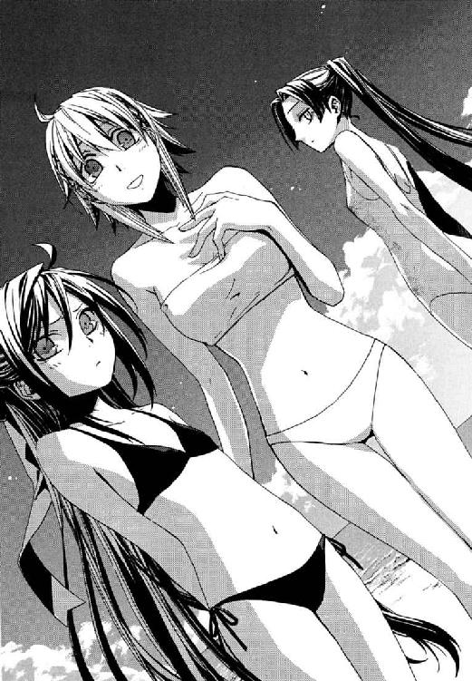

| 円環少女 ３煉獄の虚神（下） (角川スニーカー文庫) | |
| 長谷 敏司 | |
| (2013) | |

円環少女
③煉獄の虚神（下）
長谷敏司

角川スニーカー文庫
本作品の全部または一部を無断で複製、転載、配信、送信したり、ホームページ上に転載することを禁止します。また、本作品の内容を無断で改変、改ざん等を行うことも禁止します。
本作品購入時にご承諾いただいた規約により、有償・無償にかかわらず本作品を第三者に譲渡することはできません。
本作品を示すサムネイルなどのイメージ画像は、再ダウンロード時に予告なく変更される場合があります。
本作品は縦書きでレイアウトされています。
また、ご覧になるリーディングシステムにより、表示の差が認められることがあります。
武原仁たちは、バベル事件の糸を引いた男、倉本慈雄の納骨をこの日にすると初七日の法事で決めた。だから十崎家から鴉木メイゼルが出て行ったのとまさに同じころ、別れを知るすこし前、彼らはそこにいた。
土曜日の古書街から西神田を歩いてゆく間に、手狭な合同墓所はある。刑罰にしろ国を護るため命を落としたのだからと、奥多摩の山奥にあった《公館》墓所を明治時代にここへ移したのだ。刻印魔導師の死体、確認された犯罪魔導師の死体、そして殉職した専任係官や協力者のうち引き取り手がこの世界にいないもの。それら遺体を魔導師公館が火葬して無縁仏にしないよう遺骨をあずけているのも、やはり自分たちは最低限のことをしたと思うための欺瞞だ。
年に百人からの新顔が入るわりに地所がせまいことをかんがみて、ここに墓石はない。かわりにコンクリート造りの門をくぐると、申し訳程度の竹藪の向こうに小さなお堂が三軒並んでいる。管理人はいるが住職も神主も神父もいない。墓の主たちが誰よりも、この世界が神なき地獄だと知っているからだ。
メイゼルは今日の納骨へは同行しなかった。小学六年生の彼女には、自分が死んだら入る墓など、まだ不吉なものとしか感じられないと思っていたのだ。
「本当に、ここでよかったのか」
この墓所は、武原仁にとってはなじみ深い場所だ。だが、午前中授業をうけ直行した倉本きずなにはそうではない。
「今日は付き合っていただいて、本当にすみません」
人の背よりすこし高い程度のお堂に、花を供えていた倉本きずながふり返った。
「実は、ここに神様がいないって言われたら、どうやってお葬式をあげていいかわからなくなっちゃって」
西に傾いた陽の光を夏の制服に受け、彼女が困ったように微笑む。きずなの父、倉本慈雄は、ご近所を除いてはトラック運転手としての取引先と、楽器を置かせてもらっていた東銀座のギャラリー以外にその死を知らせる相手をまったく持っていなかった。遺品を整理しても、誰を葬式に呼べばいいのかわからない状態だったのだ。それは、家族であるきずなには寂しいことだっただろう。
「お父さんは、なんかこの世界に跡を残さないようにしてたみたいで。そうしたら、わたしはどうしたらいいかなあって。一番、よくわかってる武原さんたちにお願いできたほうがいいなって」
父のことをしゃべるとき、きずなはいつも顔を不自然に明るくしようとして失敗し、涙目になる。
「ここは元々そのための場所だから、使えばいいんだよ。十三回忌までは他の骨壷と一緒にしないでくれるから、きずなちゃんが結婚したら他のお墓に持っていくのも自由だよ」
彼女が赤みの強いセミロングの髪を揺らして、深々と頭をさげた。その感謝が、仁こそきずなの父を斃した張本人だから、体が心臓の打ち方を忘れそうなほどつらい。
「本当に感謝してるんです」
どうして大切な人を亡くしたときというのは、なんでもない言葉で涙をあふれさせずにいられないのだろう。きずながポケットからハンカチを出して、目元に押し当てた。うつむいてしゃくりあげ、立っているのもつらそうに膝をわななかせる。
十崎家がきずなに貸している部屋には、倉本慈雄ときずながふたりで写った写真のスタンドが立ててあるのだという。《公館》の方針で真実を明かせない彼は、ただ慰めてやることしかできない。
「いいんだ。ここでは、思いっきり泣いたらいい」
彼女は悲しむべきとき悲しみ、よろこぶべきときよろこぶことができる。それは咲くべき季節に咲き、枯れるべきに枯れる自然の営みのようで、隠しごとを腹に抱えた仁の目にはまばゆいほど愛おしい。
きずなが花を供えたのは、専任係官の納骨堂だ。倉本慈雄は《公館》の協力者という扱いで、ここに骨を預ける。お堂は更に二軒、奥へ向かって斃された犯罪魔導師の共同納骨堂、そして実質的な刻印魔導師のものと並んでいる。死した魔導師たちが都を呪うことがないよう、専任係官の御霊堂は、敷地の入り口をふさいでにらみを利かせる。そして、最も現世にうらみ深かろうと、刻印魔導師の堂が犯罪魔導師のものより更に奧に配置されていることが、修羅道の歴史が積みあげた屍の山を物語っている。
白い人絹の風呂敷に包まれた白磁の骨壷は、遺影と並んで小さな祭壇に置かれている。仁は心臓をおろし金ですり下ろされるようなやるせなさを、奥歯を嚙んで耐える。写真の中の男は、仁が想像もできなかったほど安らかに笑っていた。高校入学祝いに撮った写真を、引きのばして遺影にしたのだという。彼女はもう、父に卒業式に出てもらうことはできない。慈雄は、泣いている娘を力づけてやることができない。彼女のこれからにも関わってやれない。
それが倉本慈雄という男の、人生の終わりだった。
「武原さん。死ぬのって、こわいですね」
手のひらで目を押さえて、きずなが泣いていた。仁は「そうだな」と、心から答えた。この墓所へは、回収できる死体は約半数なのに、年間百個近い白磁壷が定例行事のように運ばれているのだけれど。
「きずなちゃん。事務所で書類をもらってきたから。家に帰ってからでいいから書いてあげて」
入り口の守衛室兼事務所から、十崎京香が茶封筒をもって戻ってきた。学生のきずなは学生服が礼服だが、京香も仁も黒のスーツだ。不自然に語気に力があるのは、管理人に苦情をぶつけられた疲れを隠すためだろう。先日の五十人全滅で納骨場所があふれたせいで、刻印魔導師の運用について強いクレームが入っていたのだ。あのグレン・アザレイの影が、ここにまで長くのびているようで、おびえる本能が仁の心臓をせき立てる。
「ありがとうございます。父も、よろこぶと思います」
「そうよ、きずなちゃん。このくらい気にしちゃダメよ。ずっとご飯作ってもらったり、本当に助かってるんだから、気持ちよ気持ち。職権濫用だけど」
京香は言葉に詰まってしまう仁とちがって、気持ちを言葉にしてやれる。いや、彼が情けないだけだ。
「わたしこそ、はじめて十崎さんのおうちにお邪魔したときから、寂しくて不安でしかたなかったんです。だから、自分にできることをしたかっただけで。わたしは、ズルイんですよ。家族がまわりにいなくて不安で、自分ひとりだと思いたくなかったから、お台所つかわせてもらって」
倉本きずなが、恐縮だか謙遜だか反省だかわからないけれど、強く否定した。そして、自分の言葉が恥ずかしくなったのか彼女の頰がほんのり色づきはじめる。
「なんか、ご飯を作って、それをおいしく食べてくれたら、その人と仲良くなれそうな気がするんです」
きずなと視線がぶつかった。すこし垂れ気味のやさしい目が、驚いたようにぱちりとまばたきした。
「でもそんな単純な理由ってわけじゃなくて。あの、......だから、わたしのことは気を遣わないでください。ちゃんと、ズルくたくましく、今だって自分の足で立ってますから」
仁はいつか彼女に事実を伝えねばならないから、そんなことを言わないでほしいと思う。その日をどこまでも先延ばしにして、快適な世界をまわりに築いてゆく彼女の強さに甘えていたくなるから。
きずながもう一度お堂に手を合わせて静かに祈る。京香も目を閉じ、仁もその遺影をじっと見ていられず、まぶたで外界を閉ざす。
倉本きずなのことを、注視する対象として見守る者は多い。唯一の再演大系魔導師、六十年を超えて現れた危険物、十崎家の家事を切り回すお母さん役、あまり成績のよくない女子高生、神和瑞希のささやかな友だち。誰もが倉本きずなの影に注視し、本当の彼女自身など気にも留めない。仁も慈雄の件で負い目がちらついて、本当にきずなの姿をとらえられているのか自信がない。
穏やかな沈黙を終え、きずながふり返った。
「もう帰りましょうか。メイゼルちゃんも心配してるでしょうし」
仁は、頭の片隅にずっと居座っていた不安を透視されたようで反応を返せなかった。《神に近き者》グレンと戦うことを宣言した一昨日以来、メイゼルは彼を避けている。刻印魔導師は監督する専任係官の許可なしに日本を出られないから、サハラ砂漠にいるというグレンへ挑みには行けないが、それでも嫌な感じがつきまとって離れないのだ。
「今日の朝もそうだったんですけど、最近なにか無理してるみたいですよ」
「きずなちゃんが心配しなくていいんだ、いつものことだよ。ぶつかることは今までだってたくさんあったけど、なんとかなってきた。今度も大丈夫だって俺は信じてるよ」
雲の多い空が、太陽が沈みかけているせいで黄色がかっていた。もう冬場なら暗くなっている時間だ。別れを惜しむようにもう一度骨壷に手を合わせると、きずなが遺影を祭壇からとる。事務所にごあいさつしてきますと、倉本慈雄の笑顔を抱えたまま歩いていった。
ふたり取り残され京香と顔を見合わせ、仁は手持ちぶさたになってお堂に視線をやる。京香が静かに、寄り添うように並んだ。
「そうだ。お花供えてあったけど、ひょっとして仁？」
「俺じゃないよ。俺が来たときは、もうあった」
元は専任係官用の堂であるここの奥には、専任係官の名を記した小さな木札が多数かかっている。《鏖殺戦鬼 左の鬼神一軍、御霊を人の大義を護らしむため封ず》と勇ましい看板が添えられた時代もあるらしい。実際、犯罪魔導師とはいえ人を殺めて、おのれが死ねば無関係な顔で先祖の墓には入るのは虫がいいと、ここを選ぶ専任係官は少なくないのだ。
彼にとっては忘れ得ない名札の前で、巴旦杏の花が甘い薫りをくゆらせていた。仁にはひとり、この小枝を添えそうな男に心当たりがある。
春の花を魔法で夏に咲かせた薄桃色の花弁を、京香がじっと見ていた。
「舞花ちゃんの、もうそろそろ七回忌になるんだね」
仁の妹、武原舞花の骨はここにはない。髪の毛一本残らなかったのだ。
「仁は、もういいの？」
京香が問いかける。昔に戻ったような、世話焼きな隣のお姉ちゃんの顔で。一呼吸の儚い時間だけ、失ったたくさんのものが帰ってきたように錯覚する。そして、どちらともなく夢から身をもぎ離すように、からもうとする視線をそらした。
「今日はいい、また来るよ」
†
それは、懐かしくあたたかい物語。
もはやずいぶん昔のことのように感じてしまう思い出の中、武原仁の前には彼をじっと見あげる鴉木メイゼルがいた。
「せんせ、これから今日もまた遅いんでしょ？」
魔導師公館の、日本でもっとも血なまぐさい公務員である専任係官が、机の前に座ることはすくない。本来、公務員は何をするにも書類を作らねばならないが、魔導師公館には正式な書式で残せないものが多いから簡易書類を数枚書く程度だ。それでも公館より上が参照する可能性のある大事件ではそうもいかない。バベル事件の後始末で、膨大な報告書の山に埋もれた武原仁のところに、学校帰りの鴉木メイゼルが現れたのだ。
「ん？ まあ、ちょっとな」
「ほんと、無駄なもの書いてるわね。書類書く役と戦う役で、どうして分業しないの？」
武原仁も、普段はあまりやらない書類仕事をしながらだから、様子を見にきた鴉木メイゼルを歓迎したい気分だった。小学校の職員室ほどしかない公館事務室に、本来、異世界人である刻印魔導師が入ることは禁じられているが、メイゼルをとがめ立てする職員はいない。
「そうしてる連中もいるんだけどな」
確かに、《鬼火》は配下の鬼火衆に雑事をまかせてしまうし、慣例で書類を公館が引き受けることになっている神和家の神和瑞希のような者もいる。だが、あくまで横紙破りの例外だ。仁まで逃げたら、すでに残務で夏休みをとれないことがほぼ決まりの十崎京香に何を言われるかわかったものじゃない。
「はい、せんせ。おべんと作ってきたの」
メイゼルが手提げかばんから、風呂敷に包んだ重箱を取り出し、仁の膝に載せようとする。
「なんかすごいの来たな......って、おにぎりかよ。これ、おにぎりか？」
「この世界じゃ家庭の味なんでしょ？ よろこびなさい。あたしが作る初おむすびなのよ」
得意げにメイゼルが胸を張る。ふたを開けると、入っていたのはまるっこい、いや人間が手で作ったとは思えない見事な白い球だ。表面には艶やかな光沢があり、米粒の形など残っていない。米の粉をまるめた団子だと言われたほうがピンとくる、見たこともない食べものがそこにあった。
いただきますのあいさつをしてから、危険を感じつつもじんわり湿った白い表面をつかむ。仁は大きく口を開けてかじりついてみた。どうやって作ったのだろう。かための表皮の下は、水分がないから砂みたいにぼそぼそで、飲みこむころにはだ液を吸われて口の中が乾いてしまった。
「なんだこの新食感。いや、おにぎりだってわかってるけど、何事だ？」
「うまく丸い感じに固まらないから、魔法で外側から気圧をかけてみたの。そしたら、ご飯粒がくっついてるだけで構造がもろいから、おむすびって形がすぐ崩れるのね。......でも、びっくりしたでしょ？ おむすびって、内側でご飯粒を対流させてあげたら、ご飯粒が扱いやすく砕けてくれるのよ」
新手法を開陳し、天才とまで言われる小さな円環魔導師がほめてほしそうに小鼻をぴくぴくさせる。それ、家庭の味か？
「でも、そうしたらべたべたになっちゃったから、おむすびを高速で自転させて、遠心力で水分を飛ばしたの」
それ、本当に家庭の味か？ おむすび内部で対流が起こり、マグマのようにどろどろになった米粒の塊の表面には、水が海のようににじんでいたのだ。まるで地球を食べてるみたい......なんて感動あるか。絶対にない。
「そうじゃない。おにぎりってのは、手で握るんだよ、......ほら、こう」
「こう？ 熱いんじゃない？」
「手に水と塩をつけて握るんだ。そうしたら、ご飯が手にひっつくのもなくなるから」
神妙な顔で、黒髪の魔女が、おにぎりを握るまねをした。手つきをここで覚えてしまって忘れまいとするように、何度も、何度も。練習しているうちにだんだん楽しくなってきたのか、鼻歌を歌いはじめる。書かなきゃならない書類があるのに、仁まで鼻歌を伝染させつつ、報告書用のワープロのキーをたたく。
──それから十日余り、置き手紙を残してメイゼルは仁たちのもとを去った。
さよなら、せんせ。
楽しかったわ。
今、十崎家の居間のまん中に据えられた掘りごたつのテーブルには、きちんと手で握ったおにぎりが残されている。その脇に添えられていたのは、何度も書き直したのだろうきれいな字でしるした別れのあいさつ。
倉本慈雄の納骨に行った帰り、仁たちはこの短い手紙で、刻印魔導師の少女の出奔を知った。鴉木メイゼルの姿はどこにもなかった。その花柄のはいった便せんを見た後、自分が何をしていたか武原仁はよく思い出せない。
ただ納骨帰りの黒いスーツも着替えないまま、夜の駅前を走り回っていた。日が落ちればやはり闇がやってくる夜の底を、人波に目をこらしていた。ケイツと戦った廃品工場に乗りこみ、つい一昨日に戦った工事中のマンションを漁り、近くの駅前や公園をはしごした。
幼なじみでもある《公館》事務官、十崎京香に十崎家まで携帯電話で呼び戻されたのは、そんなときだった。
「メイゼルから連絡は？」
「熱意だけで人捜しができるんなら警察も苦労しないし。仁はみんなより桁違いにメイゼルちゃんといた時間が長いんだから、心当たりとか指示してくんなきゃ、私たちが効率よく動けないのよ」
専任係官の指揮官でもある京香は、事態が切迫すればするほど冷静になる。
「座りなさい。刻印魔導師の仕事をしたくて出て行ったなら、メイゼルちゃんは、必ず公館か誰か専任係官のところに行くしかないんだから」
確かに修羅道の完遂を目指す小さな魔女が、このまま連絡を絶って犯罪魔導師になるとは考えにくい。だが、なにもかもが唐突で、仁にはどう思えばいいかもわからなかった。いやちがう。前兆はあった。彼が手を打たなかっただけで。
グレン・アザレイに勝てば、百人討伐の特例としてメイゼルの責務は終わる。挑戦したがっていた彼女に、仁は刻印魔導師の仕事をさせなかった。だが宙ぶらりんな日常に身をゆだねることを、誇り高い少女は自分に許さなかった。五月に逮捕した日と、七月四日に脱獄した日に続いて一昨日、同じ浅利ケイツに三度敗れたことが止めを刺したのだろう。
「仁？」
まだ喪服から着替えていない京香が、鋼鉄の視線で仁を刺す。彼にはどう応えればいいのかわからない。
十崎家でできることは、たぶん全部やった。メイゼルが居候している部屋を確かめた。きれいに整理されていて小さな魔女が本当に出ていったのだとわかったから、全部無駄だったのかと暴れたい衝動が起こった。メイゼルの携帯電話はつながらない。小学校に連絡してもらってから、副担任の立場で六年一組全員に連絡網を回して、メイゼルが来ていないか確認してもらった。アパートの彼の部屋を、自惚れかと呆れつつ覗いた。────俺は一体あと何をしていない？
さよなら、せんせ。
楽しかったわ。
「おにぎり、食べなさい」
銅色の髪をアップにした京香が、テーブルの大皿を仁の前に置いた。置き手紙と一緒に残されていたおにぎりだ。大きいのがあったり小さいのがあったり、おにぎりらしい三角にまとめる方法がわからなかったのか、まるっこかったり円錐っぽかったり、形も試行錯誤のあとがまるだしだ。このあいだのイチゴめしがあきらめきれなかったのだろう、のりを巻いたご飯は薄ピンクだ。
「そうですよ。わたしたちも頑張って捜してますから、ちゃんと頼ってください」
心当たりの場所と六年一組全員へ、家族として電話をかけてくれたきずなも、メイゼルの残したおにぎりを勧めてくる。
ぶかっこうで、かたちもふぞろいの握り飯を手に取った。湿気でのりが皿にへばりついて、半分がたおにぎりから剝がれてしまった。
「メイゼルちゃん、すごく上手になりましたよね」
きずなが、湯沸かしポットのお湯が少ないのを確かめて、やかんを火にかけに行った。小さな姫様がいなくなった十崎家は、深い傷のまわりの肉が炎症を起こして盛りあがるような、奇妙な高揚に浸されている。
ひとくち、仁はちゃんとおむすびらしい歯触りがある握り飯を口に入れる。味より前に、メイゼルが一生懸命慣れない手つきで悪戦苦闘している顔が見えすぎて、胃袋にしみた。泣けとばかりに、塩加減がわからなかったのだろう飯が塩辛い。今、嚙んでいるものが、人が作ってくれたものだという感触を、こんなにも感じることはそうそうないかもしれない。
「......バナナだよ」
泣けとばかりに中の具がバナナだった。異世界の味覚に震える顎に力がはいりすぎでも、こう返せたのは仁の進歩だと思う。
「うまいよ」
「そうなんだ」
京香が、やさしくそんな彼を見守っていた。
客観的に考えてしまったら、たぶんおいしくない飯を嚙みしめる。置いてあった湯飲みに、京香がお茶を淹れてくれた。早く帰って家で食事をとるつもりで、納骨からご飯を結局抜いてきたのだ。みんな腹が空いているのにひとりだけ喰っているのが悪い気がして、ひとつ食べ終わった後、手を止めた。
「食べてあげなさい。そのおむすびは、仁しか食べちゃいけないのよ、たぶん」
ふたつ目に大きな俵形のおむすびを嚙みしめる。酸っぱいような感触に仁は胸を詰まらせ、目をぎゅっと閉じ奥歯を嚙みしめる。
「......キウイだよ」
甘酸っぱいキウイフルーツが丸ごとはいっていた。
「ほら、イチゴ大福とかあるし」
京香まで、メイゼルのはじめて作った料理──黒っぽい菓子盛りケチャップがけサラダを完食した朝を思い出したのか、まぶたを閉じてやりきれない表情を隠す。仁も小さな種がしょりしょりする食感を、奇妙なような甘かったような日々を思い出し、飲みくだす。
三つ目の、珍しく適度な大きさになっているおにぎりをつかみ、覚悟を決めたつもりで思い切りかじる。のどに現れた、意思で止めようのない痛みにむせ返り、涙を浮かべて天をあおぐ。
「......きなこかよ」
砂糖を混ぜた大量の甘いきなこが、外側は水気を吸ってべたべたに、内側は粉まるだしでご飯のまんなかに鎮座ましましていた。
「これ、進歩したのかな。進歩したんだろうな」
小さな魔女がはじめて料理を作ったときから、ずっとご飯にお菓子を組み合わせるのはやめようと言っていたのに、最後までこれだった。
「なんかもう、泣き笑いよね」
大きな旅が終わったかのように、気の抜けた顔でお茶を飲みながら、仁の幼なじみがそうまとめた。メイゼルは魔法が効かない悪鬼の前では小学生の女の子でしかなく、刻印魔導師として戦うにも能力にムラがありすぎて単独で生き残るタイプではない。本当はなにひとつ笑いどころがないのが一番泣き笑いだ。
やり場のない怒りと無力感に押し流されそうなそのとき、携帯電話が短く呼び出し音を鳴らした。まだ制服姿のままの倉本きずなが、着信したメールを読み、顔色を変えた。
そして声をうわずらせ、ぱっとやさしい顔に喜色を咲かせて告げたのだ。
「メイゼルちゃんの居場所、わかりました！」
神和瑞希の実家、神和家はその伝える魔術《魔獣使い》とともに、起源を大陸に持つ。日本に入ってきたのは平安時代で、当初からすでに《協会》と関連が深く対魔導師戦を生業としていたという。神和家は長い歴史で、刻印魔導師を《式神》と呼び道具として使役してきた。きずなの友だちである神和家当代の瑞希も、その最多の撃破数と引き替えに、桁外れに多くの刻印魔導師を使い捨てているのだ。
きずなが聞き出した話によると、今日の昼、メイゼルはひとり神和瑞希に自分を刻印魔導師として戦わせてくれるよう頼みにいったという。
刻印魔導師が勝手に専任係官を変えようとするなど聞いたこともない。だが、できるのだろう。武原仁は、少女の選択が納得できない。
彼とメイゼルは、不満やすれ違いはあったけれど、うまくやってきたはずだ。そうだと信じたかった。
魔導師公館から徒歩二十分ほどの場所に敷地を野放図に広げる神和邸に来たのは、武原仁もはじめてだった。道路に囲まれた一区画を完全に占拠し、高さ三メートルに達する堅牢な石壁が内側にあるものを外部の目から隠している。それは、二十一世紀の住宅街の風景を拒絶する、小さな城だ。神和邸は、明治以来その松材の大扉を数度しか魔法使い以外に開いてない、悪鬼立ち入り無用の聖域なのだ。
だから約束もなく訪れた夜来の客を、迎える者などもちろんいない。
監視カメラだけがレンズを仁へ向けている。インターフォンのボタンを押し、何度も用向きを伝えた。
神和瑞希の、かすれるような囁きがようやく聞こえたのは、ボタンを押し始めて五分ほども経ってからだった。
〈............うるさい〉
「鴉木メイゼルを返してもらいに来た。彼女を管理しているのは俺だ」
管理なんて言葉しか出せないことがつらかった。
「グレンの力を直に見てるおまえに、どうなるかわからないはずないだろ！」
どうやっても感情まるだしの怒鳴り声になってしまう。のど元が苦しくて黒のネクタイをゆるめた。
〈......死なせる......覚悟、ないのに......式神を使う。............あなた、甘い〉
専任係官にとっては本来、刻印魔導師は瑞希のように道具と割り切って使うのが一般的だ。だが、仁にとってはそうではない。
「せめてメイゼルと話をさせてくれ！ 俺は、あいつに言ってやらなきゃいけないことが山ほどあるんだ。頼む！」
小さなインターフォンに、すがりつくように声をかける。水分を失って粘つくつばが、のどにからむ。昼間の、倉本慈雄の納骨が頭にちらついて離れない。刻印魔導師は死者数が多すぎるため、白い骨壷も安価なものが使われる。頭骨や大腿骨の破片を小さな白磁壷に入れ、彼がメイゼルの写真を選んで遺影を飾っているところが簡単に想像できた。
刻印魔導師ひとりをめぐって、専任係官ふたりで奪い合いなど情けないにもほどがある。だが彼の大事なものが、勝算ゼロの勝負を挑んで無駄死にしようとしている。この期に及んで恥や外聞を気にできるほど、仁は冷静ではなかった。
〈......全部勘違い、......だから〉
けれどすべてを見通すような瑞希の声が、彼が勢いと激情の裏に隠しているものに目を向けさせるのだ。
〈式神と、私たち......対等......でもない...から〉
本当の問題が足もとにあることくらいわかっている。けれど、今度だけは、見苦しくてもあきらめられない。
鴉木メイゼルは、ただ子どもらしく小学生として過ごしてほしい武原仁より、彼女を戦う道具として使い捨てる神和瑞希を選んだ。
仁にとってメイゼルは彼を構成する一部とすら思える、大切なものだ。小さな魔女が向けてくれた気持ちも、純粋で真剣なものだった。だが、それでもメイゼルは去った。
つまり少女が恋をはじめたと同じくらい突然に、武原仁は振られたのだ。
†
その夜、仁は夢を見た。そこではメイゼルは、彼を見捨てることなくそばにいてくれた。
昨日までみたいに、彼を見あげて小さな魔女が笑っていた。
その服に、殺したばかりの犯罪魔導師の返り血を飛び散らせて。
彼女は猟犬のように素直で忠実な、理想的な刻印魔導師だった。
そのあどけない手が、もうひとりいた罪人の額を指差した。円環魔導師にとって最も確実な戦術であるように、まだ息のあった犯罪魔導師に黒髪の少女が容赦なくすみやかに止めを刺す。沸騰し膨張した脳髄が頭骨を内側から破裂させ、人間がひとり即死した。「ねえ、せんせ、上手にできたでしょ」薄桃色の脳漿を口元にひとかけくっつけて、微笑む。仁自身が、メイゼルに人の殺しかたを教えていた。あどけない目を輝かせて、彼女は仁を疑わなかった。精一杯に見開いた目元に、ぬぐえない陰が落ちているのに。
────そして真夜中の闇の中、武原仁は目が覚めてこれが夢か現実なのか、迷った。
何もかもが海に沈んだような暗闇の底で体を起こし、まだ悪夢に溺れているのかと自分に問う。そうじゃない。最低の気分だけれど、ここが現実だ。
「あんな子どもに、どんな人殺しだってさせるべきじゃない」
内心の倫理を耳に確認させるように、つぶやく。それが正しい答えなのだと、心から思えた。俺はまだ大丈夫だと、胸の奥がすこしだけ楽になった。あえぐ息の温度に慣れるにつれ、その光景の忌まわしさに吐きそうになる。悩む必要もなく刻印魔導師の仕事に順応したら、メイゼルはあんな簡単に人を殺すようになっただろうか。同い年の女の子たちと無邪気に遊ぶには濃い影を引きずりすぎた、あんな切ない目を向けるようになっていただろうか。
腕をのばしカーテンレールを思い切り引く。夜空にはまだちゃんと星があった。
太陽のない深夜の影を呼吸しながら、思う。仁たちがメイゼルだけでも生き残ってほしいと願っても、毎年膨大な数の刻印魔導師が死んでいることに変わりはない。根がまじめで潔癖な少女には、我慢ならなかったのではないかと。
漏れ入る街灯のほのかな光を受けて、六年一組で流行ったらしいリボンのついた白猫の、キャラクターもののクッションが畳に濃い影をつくる。メイゼルが置いていった私物だ。今週はじめに黒髪の少女が作った、イチゴご飯の匂いがまだ残っている気がした。やわらかいクッションを手にとってみる。たった二ヶ月で、仁の部屋はメイゼルが置いていった私物だらけだ。台所にはエプロンがかかっているし、洗面台には歯ブラシもある。茶碗や湯飲みは彼女用が一式食器棚に入っているし、紅茶セットや菓子鉢はそもそも武原家にはなかった。ひどく胸が切なくきしんで、そっと畳に置きなおす。ただ彼女がそこにいないことが、いつもなら絶対にないほど心を揺らすのだ。
日曜日の間もメイゼルと連絡はとれず、明けて月曜日、仁は一縷の望みを抱いて小学校へ行った。
役目を終えたように、鴉木メイゼルの席はからっぽだった。
午前中の授業を終え、ふらりと顔を出すのではないかと期待して、教壇で給食を食べる。騒がしい教室の、そこだけ空気の流れが止まっているみたいだ。教室の七夕の笹飾りには、まだ少女が願いを書いた短冊が吊されている。「負けない」──それがどれほど難しい願いか、仁もよく知っている。
あの小さな魔女がいなくなったら、小学校のニセ教師もお役御免だろうか。ふと考え、自己嫌悪した。《神に近き者》グレンとの決戦が迫る今、彼女が〝いなくなる〟とはつまり最悪の事態が起こるということだ。
彼が教室にいるのは、メイゼルを監督・監視するためだ。それでも陽光に白く染められた運動場や、楽しそうな生徒たちを見ると、もし専任係官をやめたら教師になりたいと本気で思いそうになる。そんな「もし」は来ないと誰より仁が知っているのだけれど。
武原仁は義務や義理にしばられて、もっと歩きよい道があるのに、踏み外せば死ぬ崖沿いの獣道しか選べない。彼女のいない教室でひとつ見つけた。彼とメイゼルは、やっぱりすこし〝似て〟いた。
「センセーイ！ 家からサッカーボール持ってきたんですけど、運動場で使ってもいいですか」
クラスの男子たちが声をかけてくる。仁が許可を出すと、ボールを脇に抱えて六人ばかり飛び出していった。
大きく息をつく。
足音がまた副担任の彼へと近寄ってきた。縁なし眼鏡をすこしうつむかせて、寒川紀子がノートを胸に抱え持っていた。私服通学の御陵甲小学校にあって、制服みたいにきっちりした服を好む彼女は、今日は白い半袖ブラウスに紺色のスカートだ。
「先生。鴉木さんは、休んでいるみたいですけど、どうしたんですか？」
「鴉木は今日、体調が悪いそうだ。すこし長引くかもな」
しばしば刻印魔導師の事情で欠席や早引きを繰り返す鴉木メイゼルは、六年一組で浮いている。いつでも無謀な挑戦をよろこび、ぶつかろうが折り合いをつけないせいだ。
「ノートを見せてあげないと、学校来たとき困ると思ったから、持ってきたんですけど」
だがメイゼルにも、たった一日いないだけでこんなふうに心配してくれる友だちがいる。ただそれだけで、何か報われた気がした。
「心配してくれて、ありがとうな」
寒川が、怒っているときいつもやるように縁なし眼鏡を指で押しあげる。
「ちがいます。私は学級委員だし、またうるさくされたら授業が進まなくなるだけですから。先生、笑わないでください、あやまられても困ります！ 先生がなんとかしてくれないと、また鴉木さんのせいで授業が遅れるんです」
†
倉本きずなにとって、魔法などつい先月までは夢物語だった。
今も彼女は、持て余しながらも奇蹟の力とのつき合いかたを模索している真っ最中だ。再演魔術は、世界を観測者そのものを文字としてつづった巨大な本として知覚し、それを閲覧し書き換える最も高度な魔法のひとつだという。とはいえ彼女が意識して魔法でできることなんて、簡単な魔法構造体を呼び出し、小さなものをつかんで引き寄せるくらいなのだけれど。六十年ぶりに遣い手が見つかった魔法に教えてくれる先生がいるはずもないし、魔法消去に弱いらしく何かしようとすると破壊されて魔炎があがるばかり。だから料理をしていて調味料や野菜に三十センチ手がとどかないときの友、ずぼら用のマジックハンドでしかない。
けれど魔法使いであるだけで、人の役に立つこともある。
きずなは今、神和家の門をくぐり、よく手入れされた緑樹を茂らす曲がりくねった前庭を抜け、旅館じゃないかと思うほど広い玄関にお邪魔していた。靴を脱いで、案内されるまま磨きあげられた杉材の廊下を歩いて、折れ曲がってまた奥へと入ってゆく。やっぱりここ料亭じゃないかと疑う、鯉の泳ぐ池や小さな庵へ向かう橋を眺めて楽しんでいると、金箔としか見えない襖に行き着いた。玄関で履き物を脱いでからここまで、間違いなく二分ほどかかっている。
「ここに、メイゼルちゃんがいるの？」
「......ちがう。......いるの、神和の一族。............式神、あの...因達羅......許して...もらわないと、............会わせて...あげられない」
「そっか。それも、神和さんのとこのしきたりなんだね」
きずなは、囁くようなかすれ声で教えてくれた神和瑞希の、照れくさそうな様子に思いっきり頭をなでたくなってうずうずしてきた。きずなとしては、この無口な友だちには、世話焼きの心をくすぐるなにかがある気がするのだ。
瑞希が声をかけて、襖を開ける。三十畳ほどもある柔道の試合ができそうな和室が広がっていた。更に奥は一段高く段差がついていて、御簾がかかっている。清浄な青畳の広間を踏んで歩く。ふたつぽつんと置いてある、必要以上にふかふかした座布団を指で触ってみた。
「おかけになってください」
垂れさがった御簾の奥から、母親だろうか、張りのある女性の声が響いた。まさか家族の人、みんなあの仕切りの向こう側なのと、隣の友だちへ目で尋ねる。瑞希は黒い瞳をまっすぐ彼女へ向けて、告げた。
「............大丈夫、......私と、きずななら......勝てる」
「戦うの!?」
い草の匂いに日本人らしくちょっとうれしくなりつつ、座布団に正座する。予想以上の高級感に、体勢を崩しかけた。
「こんにちは。今日はお宅にお邪魔させていただきまして、ありがとうございます。瑞希さんとは高校のクラスメートとしておつき合いさせていただいています、倉本きずなです」
「きずなを............この間来た、因達羅に............会わせる......」
今日、きずなは神和邸までメイゼルの様子を確かめにきたのだ。武原仁では悪鬼無用の屋敷に入れてもらえない。なにしろここは魔法消去能力を持つ人間を拒絶して、二十年前まで電話線どころかガス、水道、電気、下水道もろもろ一切引かなかった家だ。けれど魔法使いがお邪魔するのは文句ないということでもある。
魔法なのだろうか、よどみのない声が耳元に直接響いた。
「ただの友だちが、神和の家のことに口を出そうというのですか」
言われてみればもっともだ。きずなはそこまで深刻に考えていなかったから、瑞希へ目配せして助けを求める。わかったとばかりに小さくうなずいて、友だちが口を開いた。
「............私たち......つき合ってる」
自然に噓ついた─────っ！
「それは本当ですか」
お母さんなのだろうか、落ち着き払って、声がきずなに真偽を問う。もう、あわくってボロボロだ。考えて！ はたらいてわたしの脳細胞！ つき合ってるったってわたしもどう見ても女子だし、でも瑞希が女の子なことは家族が知ってる。──ひらめいた。
「く、くくく......倉本きずおです」
脂汗をだらだら流しながら精一杯低い声で言った瞬間、やっちゃった痛々しさで気が遠くなった。自分の足の匂いをかいで失神するのとどっちが恥ずかしいかというレベルの最低な数秒間、無言がのしかかってきて重すぎた。名前だけ男にしても、学校帰りに来たから、並んだ瑞希ときずなは同じ女子の制服のまま。一体どうやってごまかせばと考えた答えが口から出た。
「ペアルックです！ わたしたち、仲良しなんです」
御簾の向こうから、視線が彼女の膝小僧をじっと射た気がした。きずなの今の服装は、膝上丈に詰めた短いスカートなのだ。
「こ、この制服は趣味です！」
人として、もうダメだと思った。
「きずおさん、とおっしゃいましたね」
「は、はい！ 実はおなかにすごい傷があるから〝きずお〟なんです」
頭の中できずなは、泣きながらえっほえっほと墓穴を掘っていた。途方に暮れた投了状態のきずなに、御簾の向こうから声がかけられた。
「わかりました、瑞希を頼みましたよ」
「同レベル!?」
「なにかおっしゃいましたか？」
失礼なことを口走りつつ思わずバンザイしてしまったきずなが、気まずさに固まった。隣の友だちが、この結果は当然とばかりにこっそり親指を立ててきた。もし、いつか瑞希が本物の恋人として女装をペアルックと言い張る変態を連れてきたら家族総出で説教してあげてください。
「それで、わざわざこんなとこまで、のこのこやってきたってわけ？」
刻印魔導師の部屋だという六畳ほどの板張りの部屋で、メイゼルは憮然としていた。質素な使用人部屋が、小さな魔女がいるだけで花を活けた一輪挿しのように華やかだ。その元気そうな様子に安心した。
「どうしてそういうこと言うのかなあ。本当に、もうダメだって思ったんだからね」
小さな窓しかない部屋は、最高気温二十九度の曇りの日でも蒸し暑い。ふたりとも黙っていると、扇風機がゆっくり首を振りながら回る音にだんだん寂しくなってしまう。
「こんな歴史がある感じの家、はじめて見たからびっくりしちゃった。しきたりとか強いみたいだけれど、不自由していない？」
それでも習い性で、きずなはちゃぶ台に湯飲みと急須があったからなんとなくお茶を淹れてしまうのだけれど。専任係官がいてはメイゼルが本音を話さないだろうと、瑞希は席を外してくれている。
ふたりの座布団は、さっきの広間にあったものの三分の一くらいの薄っぺらいものだ。
「あたしは望んで、ここを選んだのよ。今さら泣きごとなんて言わないわ」
「理由......って、聞いちゃだめ？」
異世界人の少女は、その栗色の目をきずなと合わせてくれない。だから、わかってしまった。
「ひょっとして、ちがったらあやまるけど、わたしがいるから......かな」
返事は、たまっていたものが弾けたような鋭いことばだった。
「そんなことであたしが逃げたって言いたいの？ きずなみたいに、手近な人がやさしくしてくれたからスキだなんて勘違いしたのと、あたしはちがうの！」
そして笑っているほうが似合う唇を、彼女自身を責めるよう強ばらせる。
「あたしは、正しいと思う道を自分で選び直しただけよ。きずなが来たのなんか、いろんなこと考え直したきっかけのひとつでしかないわ。せんせは、何もわかってないでしょうけど──」
メイゼルは、もどかしく薄桃色の唇をついばむように開こうとする。けれど、うまくことばが見つからないのか、こわれもののように繊細な両の指先をからめる。湯飲みのお茶を飲もうとして反射で唇を離し、舌を出して冷やす。きずながあやまる前に、少女が言葉を滑りこませてきた。
「あたしは帰らないわ。今がいい機会じゃない。きずながあたしのいない間に、せんせにご飯でも作ってあげたらいいのよ」
「メイゼルちゃん。わたしは、そんなふうに言われたら立つ瀬がないよ」
彼女にはメイゼルも大切だと、よりによって今この場で知ってもらいたいのは身勝手かもしれない。それでも、ニセものでも家族のつもりなのだ。
「確かに、メイゼルちゃんの言うようにしたら楽しいかもしれないよ。でも、今わたしだって早く戻ってきてほしいと思ってるメイゼルちゃんに、それを言われたら立つ瀬がないよ」
「上から見おろさないで！ 料理だってそう、家のことだってなんだって、きずなのほうが上手にできるわ。
あたしは足手まといでずっと守られてたら、刻印魔導師ですらなくなるの。魔法使いの一番下からも落っこちたら、何になるの？ そんな生きてるだけの負け犬のあたしなんて、誰がやさしくしてくれてもこのあたしが絶対認めないわ！」
黒髪の妖精が、ぽつりと付け加える。
「......それに、せんせは、おっぱい大きいほうが好きだわ」
「そっか。メイゼルちゃんはそう思ってたんだ」
きずなにはわからない話もあったけれど、ひとつだけわかった。このあどけない少女が、おっぱいにこだわっていたのは、たぶんただ体つきの問題ではないのだ。メイゼルは異世界人で小学生で魔法が上手で、きずなはこの世界で生まれた高校生で新米魔女だ。メイゼルは料理どころか家事全般ダメだけど愛らしくで、きずなは家の仕事は得意だけれど自分でも性格は地味だと思う。
「わたしは魔法使いになったばっかりだけど、せっかくの魔法を戦いに使うのわからないよ。そんな危ない方法で、居場所を作らないでほしい。わたしは武原さんが戦ってるとこについてけないから、いつも一緒のメイゼルちゃんに嫉妬しているのかもしれないけど、本当に心配してるんだよ」
とりあえず、きずなも思っていることを言ってみた。もっとたくさんの、ままならないちがいがふたりの間にはたくさんある。
「......えーと、でも、おっぱいなんて、これからメイゼルちゃんもどんどん大きくなるよ、たぶん」
「きずなはずるいわ。それでも高校生なんだもの」
メイゼルが、きずなじゃ話にならないわとむくれていた。抱きしめて頭をなでてやりたいくらい愛らしくて、つらい世界ばかり選んで見ようとしている少女にせめて笑いかける。
「武原さんのほうは、小学生でも高校生でもそういう対象じゃないんじゃないかな」
実は高校生のきずながそういう意味でちくちく感じる相手は、メイゼルではない。彼女とメイゼルでは、きっと十崎家の風景もちがって見えているのだろう。
「きずな、人が真剣な話をしてるのに、くすくす笑うのは失礼だわ」
「ごめんなさい。でも、変な意味じゃなくて、メイゼルちゃんってかわいいと思うな」
様子を見てきてくれと頼んだ張本人の仁には、最低限のことしか言えないなと思った。メイゼルが抱えたものを、彼は決して本人以外から聞いてはいけない。それはたぶんふたりがお互いのことを考えてゆく中で解決してゆかなければならないもので、そこできずなはただのお邪魔虫なのだ。
つるつるのほっぺを染めて、わだかまりが消えるはずもないメイゼルが、照れくさそうに見あげてきた。
「さっきは言い過ぎたわ。......忘れてとも許してとも言わないから、好きなときに望むようにあたしを責めなさい」
肩肘を張った少女を抱きしめてあげたくて、けれど本物の家族でないきずなにはその一線が踏み越えられなくて、だから精一杯笑ってみせる。
「それでもわたしは、メイゼルちゃんの敵じゃないんだよ」
十崎家の居候ふたりの視線がからみ合う。彼女たちはたくさんちがっていて、もっとたくさん〝似て〟いるのだ。
「知ってる。......ありがと」
†
群青の波間は地獄だった。見渡す限り陸地はなく、沈めばその底は無尽の暗黒。
灰色の曇天の下、風に衣服を旗のようにはためかせ、男がふたり海面で向かい合っていた。嵐がはげしく海原を叩き、無数の波の上に雨滴が更に幾兆の波紋を広げる。荒れる水の上に、そこがかたい地面であるかのように立つのは遥かな道を歩いてきた兄弟。
追放され地の底ですり切れた、冬の旅人のような弟は、今ここを乗り越えねば生をつかめなかった。そして天へといたる孤独な道を歩き続けた、太陽のごとき兄の目に、迷いはなかった。
仁はボロボロで、もはやふたりの魔導師へ近づく力は残っていない。戦場に唯一の悪鬼は、薄れかかる視界をめくり直すようにまぶたを閉じる。
大雨の向こうで、神に近い男が、静かにしかし威厳に満ちて口を開く。
「──弟よ。今のおまえは驚くほど、私と〝似ている〟」
そして、白い光のもとで、倉本きずなは目を覚ます。
「寝てた......のかな？」
十崎家の広い居間で、彼女はソファに横になっていたのだ。神和邸でメイゼルと会った後、晩ご飯の支度を終えてから、ついつい眠ってしまったらしい。
脳のかわりに泥をつめこまれたような疲れに頭を振りながら、きずなは不吉な幻への旅を思い出す。悪夢も見慣れてきて、わかってきたことがある。彼女の見たいことや気にかかっている人ばかりが夢の題材なのは、魔法がはたらいているせいだ。本当は過去を改変するはずの再演魔術が、夢に対してはたらくなんておかしな話だと思うのだけれど。
白い蛍光灯の明かりもそらぞらしい。十崎家の食卓は、メイゼルがいなくなって音を失った。笑い声であったり、ぱたぱたと元気な足音であったり、退屈して何度もきずなに話しかけてくる声であったり、これまで静かになることなどなかったのに。
「十崎さん、今日も帰ってこないのかな」
きずなは、たくさん作りすぎても残すから品数を減らしたテーブルの晩ごはんをながめる。京香とふたりでもなんとかおいしく食べようと、すこし奮発してお刺身を買ってきた。もう時計は夜の九時近い。今日はひとりで食事をとることになるかもしれない。倉本家ではたいていそうだったから、慣れている寂しさではあるのだけれど。
「そっか......、さっきの夢が変なのも、武原さんのそばにメイゼルちゃんがいないからか」
あの小さな魔女が武原仁のそばにいたら、すべてよい方向に変わる気がした。きずなでは夢のその場に行こうが彼を助けられないから、どこでも一緒のメイゼルをすこし羨ましく思う。
「......やっぱり武原さんには、メイゼルちゃんが必要なんだと思うよ」
項垂れた姿勢のまま、きずなはうなじの寝汗を乾かすように、両手で後ろ髪をかきあげる。
掘りごたつのテーブルの上で、彼女の携帯電話が鳴ったのはそのときだった。
†
月を見ていた。
真夏の闇のいずこかから、なまぬるい風が遠く吹き過ぎる。予報では明日は雨だ。虚ろな暗灰色の曇天を裏から透かして、淡く月光はにじむ。そんな、月をながめていた。
不安な夜の底、武原仁は願いを託す星など隠れた、見通せない空をあおぐ。
蒸し暑さにシャツの背をしめらせても、腹の底はあたたまらない。仁の体のよどむこの冷気は、メイゼルを失ったらきっと死ぬまで彼をさいなみ続けるのだ。
街灯の弱い光の下では、戦前建造の神和邸の威容は昼間見るより更に重々しい。磨かれても汚れが落ちきらない古びた門の向こうで、彼女はどうしているだろう。小さな魔女が去ってわずか二日だと、信じられない。もう何週間も、メイゼルを見ず声を聞いてもいないみたいな気がした。
明日の日本時間午後六時が、決戦の時刻と決まった。《協会》が、グレン・アザレイへ挑戦状と日本時間に合わせた銀時計をたたきつけたのだ。今夜を終えれば、明晩の命はもはや知れない。
だからメイゼルに会わずにいられなくて、こんな遅くにもなって仁は人様の家の前にいる。せめて声だけでも聞かずに死ねなかった。
確かに小学校で年相応の少女の顔を見せることだってあった。人を殺すことをためらってもいた。けれど戦いそのものはあきらめない彼女が、明日の戦闘に志願していないはずがない。自分を足手まといだと思ってしまった今、敗北したままこの世界で楽しく暮らせるほど彼女は器用ではないのだ。
手の中で、携帯電話が短く震えた。きずなから、メールが届いていた。
〈メイゼルちゃんに電話かけました〉
今日、会ってきてくれたきずなに、着信拒否されている仁のかわりに電話をかけてもらったのだ。お礼のメールを入れるより前に、門扉の向こうに人の気配が生じた。
「なによ」
メイゼルの声だった。不思議なほど胸に満ちた。分厚い松材ごしの遠い声を、すこしでも近く感じたくて、神和家の門の扉板に額を押しつける。そんなことをしても、彼女がここにいる感覚が強まることはないのだけれど。
「元気そうな声で、よかったよ」
「ばかね。せんせ、たった二日よ」
すこし鼻にかかった声で返ってきた。もし今、感極まっている仁と同じに、彼女もすこしでも会いたいと思ってくれていたのならうれしい。
「話、できないかな」
「せんせ、そんなにあたしの声、聞いてたいんだ？」
「聞いてたいな」
ぽろりと弱さが顔を出した。神和邸の中から、声は絶えた。その沈黙が恥ずかしく、そして彼女の前で素直な気持ちをことばにできたことにほっとする。
「あたしをうれしがらせて、門から引っ張り出したいの？」
「それはダメなんだろ？ 本当に、明日がたいへんだからさ。おまえの声を聞きたかったんだ」
数日のことなのに、元気だと自分の耳で確かめられて、本当に自分でもばかばかしいくらいほっとする。
「元気そうでよかったよ」
それだけで満ち足りるようだ。
「元気ならいいなんて片づけないで。挑戦し続けられる限り、あたしはまだ負けていないの。あたしの戦いはまだ終わっていないの」
メイゼルの声はかたい。甘い世界を生きてほしい仁に、現実を諭すように。
「明日だって、公館や《協会》がどういうつもりかしらないけど、あたしはあたしが恥ずかしくない鴉木メイゼルでいたいだけ」
メイゼルはグレンへの挑戦で、みずからを問おうとしている。過酷でも彼女にはすべてをぶつけるに値する戦いなのだ。
「......聞いて、せんせ。あたしの背中には、しるしがあるの」
こつりと鈍く、門の向こう側、仁のおなかくらいの高さから音が響いてきた。抱きしめたら少女の頭が来るくらいの高さだから、メイゼルも同じように額を冷たい松材に押しつけているのか。
「......勘違いしないで、それが嫌なわけじゃないの。このしるしがあるから、あたしが魔法使いだってこと疑う人間はいないもの。だけど、〝しるし〟を背負うあたしが、魔法使いらしくちゃんとしなきゃ、何のためにこの世界で生きてるかわからないでしょ」
その責務が魔法世界に残した大切なもの、故郷や家族、友人との最後のつながりだから、刻印魔導師たちが先のない戦いに突き進む部分もあるのだ。鴉木メイゼルの背中にも、刻印はある。
「おまえは変わらないんだな。俺はおまえと出会って二ヶ月の間で、ずいぶんいろいろ変わったのかもな」
闇の中、門扉に阻まれて姿を見ることも抱きしめることもできない少女へうまく伝えることばが見つからず、仁は生のままの気持ちをぶつけていた。
「俺は、おまえに、そばにいてほしい」
「ムリだわ」
即答だった。それができたら、はじめから出てなどいかない。彼女たち魔法使いと、仁たち悪鬼は立つ場所がちがう。だから求めるものもちがうし、納得いく足場をかためるまで、彼女はこの世界での暮らしをもう築けない。少女は、なによりまず魔法世界とのつながりと自分自身を守らねばならないから。
だが仁にとってメイゼルは、地獄と呼ばれるこの故郷はやはりすばらしいのだと、確かめる手がかりだ。つまらないことかもしれないけれど、小さな魔女やみんなと一緒に食卓を囲んでいると、心からそう思える。浅利ケイツの背中が十年後の自分に見える、疲れのしみた彼にはささやかな団らんが必要だ。この小さな刻印魔導師を守り切れたら、妹がいた遠い日々、失い続けた過去さえきっと乗り越えられる。少女にとって背中の刻印が大切なものとつながり続ける証だとしたら、メイゼル自身こそ仁をかけがえのない何かと結ぶ〝刻印〟だと思うのだ。
「おまえがいるから、救われる気がするんだ。おまえが、きっとこれから背ものびて、いろんな俺の知らないことを覚えて、どんどん成長してゆくのが楽しみなんだ。毎日すこしずつ変わってゆくおまえを、途切れずに見せ続けてほしいんだ」
だからおとなとして見守りたいのに、こんなふうに彼女の前で情けなくなってしまう。
「明日、グレンと戦うんだよな。俺も、そこのどこかにいるよ。もしも今回のことが全部終わったら、帰ってきてくれないか」
「ほら、やっぱりだわ」
今は彼のものではない幼い異邦人が、くすくす笑っていた。
「せんせ、あたしがいないと生きてけないんじゃない。でも、こないだ言い訳したから、罰として、手もつないであげないし抱きしめさせてもあげないの。おあずけだわ」
彼女とまだ細い糸がつながっている気がして、胸にからみつく思い出の重みを何度も反芻する。
ただ少女がそこにいることが、うれしかった。だから静かに、彼女の息づかいに耳を澄まし続ける。顔が直接見えないのをいいことに、ずいぶんこっぱずかしいことを言ってしまった気がして、今さら顔が熱くなってきた。
「手に入れたいものがあるの。でも、あたしは、そこに立つとき負け犬じゃいけないの」
小さな魔女が門の内側からもたれかかってきたように、ぶ厚い板がぎしりとかすかにきしんだ。
もう体は冷たくない。夏のゆだるような暑さに血まで高ぶり、もう一度ささやかな夢をはじめられると信じた。明日、《神に近き者》グレンにぶつかっても、その絶対の力につぶされて終わらせるものかと、勇気がわいた。
「生きて帰ろう」
返事を記憶に焼きつけたくて耳を澄ましながら、仁は静かだなと思った。しゃくりあげる「ひっ」という不規則な呼吸音が、夜の闇を伝ってきた。お互い姿が見えないせいで、いつもは涙を隠す意地っ張りなメイゼルまで素直になってしまったみたいだ。湿っぽい鼻声で、少女が返す。
「月が泣いているみたいね」
そうしてふたり、同じ月を見ていた。
†
日本時間七月十二日、午後六時をもって、第二次グレン・アザレイ討伐作戦を開始する。
《協会》の宣言に集まった刻印魔導師、総数三百二十名。そのうち二百名が一陣として選抜され、一千万平方キロメートルにも及ぶ広大なサハラ砂漠へ派遣された。ここでは、世界とはただ丘をつくり窪地をつくり、波打つように地に積もる砂のことだ。赤みがかった砂と青すぎる天とに単純化された荒野が戦場に選ばれたのは、悪鬼に観測されておらず魔法で雌雄を決することができる場所だからだ。東京は今日、雨になった。時差のためまだ午前中のアフリカの空は、残酷なほど晴れやかだ。
鴉木メイゼルは、息をするたび砂を吸いこみ乾いた風へ何度も咳をする。
少女は望みどおり今、戦場にいた。
背中にかかる長い艶やかな黒髪をミントブルーのリボンで結んだ小さな魔女は、いら立ってその服をつまむ。風に乗った砂がリボンと同じ色のサマードレスと肌の間に入りこんでくるのだ。
「ああ、もう最ッ低！ せっかく肌を出してるのに、砂が当たるだけじゃない」
命懸けの勝負だからこそ、地味な服では死にたくない。女の子らしいと言えなくもない我が儘への、自然の返答は真夏の日本と比べても過酷な熱と風。
そこに集まった刻印魔導師たちは、故郷の円環世界ではほとんど城から出なかった彼女にとっては、あまりに異様だった。
むくつけき凶相の男たちが、張りつめた筋肉を汗でてからせ、やり場のない怒りを持ち寄っていた。体の曲線はまちまちだが一様に目は笑っていない女たちが、顔面の筋肉を仮面のように固めていた。会社員のようなスーツ姿の者あり、奇妙な民族衣装の者あり、大斧をかついだ者あり、古びた鉄鋼の杖を握り締めた老人あり。礼服で来たのはメイゼルひとりと言っていい。性別、年齢、人種も様々な人間たちには共通点がひとつある。全員が背中や腹などに、複雑な形の刻印を刻まれているのだ。
だが、満ちているのは勝利を前にした威勢ではなく、誘蛾灯に突っこんで焼き殺される寸前の、愚かしい羽虫の活力だ。
砂海にひとり、神に近い男が待っていた。《協会》を挑発するように姿を隠さなかった男は、彼を斃せば自由になれる罪人たちを、ゆったりしたローブ姿で迎えた。その距離約百メートル。
メイゼルたちは、大規模魔術の一撃で滅ぼされないよう、グレンを取り囲んで散開している。彼女の頭の上で、規律に無縁な刻印魔道師たちは、高揚とおびえから逃れようと下卑た会話を続けている。武者震いというには温度の低すぎる手もとの痙攣を止められず、少女は砂漠の死地にあってその両の手をしっかりと握り合わせる。そして祈るように額に押し当てた。円環世界の神こそが彼女の神判での地獄堕ちを決定づけたというのに。
暑さよりも不快感よりも強い恐怖と、必死で戦うメイゼルの眼球のすぐ前に白くのっぺりしたものがつき出された。
「これ、............わかんない」
顔をあげると高校帰りの制服のままで決戦に参加する専任係官、神和瑞希であった。東富士見高校では、実はきずなが来た昨日から期末テストがはじまっている。赤点をとると追試らしい。
「高校生が小学生に勉強を教えてもらうって、正直どうかと思うわ」
背の低いメイゼルの頭頂に、力のこもったチョップが落ちてきた。
「............生意気」
神和家では、刻印魔導師は完全に使用人扱いである。
「私が、......わかんないって、......言ったら、......貴方は............教える」
「見下げ果てたものね、勝ち取ることをあきらめるなんて誇りを棄てた家畜の方法だわ。高校って、留年とかあるんでしょ？」
少女の手から数学の参考書がひょいと取りあげられ、その角のところで強打される。頭頂から顎まで一直線に抜けるような衝撃に、メイゼルはうずくまる。
専任係官の神和瑞希がここにいるのは、戦闘というより不都合が起こったときの用心だ。グレン討伐での主導権を《協会》へ譲ったとはいえ、日本国外で魔法使いを暴れさせる微妙な情況だし、紐をつけないとそもそも何をやらかすかわからない。
戦闘指揮役としては、《協会》側の高位魔導師がふたり同行していた。
「やあ、麗しの獣使い。君が来てくれて、僕はとてもうれしい」
ひとりは、黄金の飾りを半袖の民族衣装に縫い取った若い色男だ。因果大系魔導師《百手巨人》フィリップ・エリゴル。外見は堂々たる体格の、金髪のくせ毛を魔法で直毛にしている優男だ。中身は均斉がとれたものに欲情し、飾ってある壷や皿が完璧に整っていると確認しては息を乱す変態だ。神和瑞希を不必要なまでに意識しているのは、変態友だちだからか、顔も体も非人間的なまでに端整な外見にだまされているのかメイゼルは知らない。
天気の話でもするように笑いながら、《百手巨人》がメイゼルの黒髪に、乱雑に手を置いた。魔法の腕だけでなく空気を読まないことでも、フィリップという魔導師は一級だ。
「いや、実に惜しいね。五年もすれば目を見張る美しさになっただろうに。でも、この花、今日でおしまいなんだね」
体が悪意の不意打ちで、眼前に迫った死を思い出させられて震えた。心をしっかり固めたはずの意地も誇りもすり抜けて、最も敏感な弱さをなで回された。気が遠くなる絶望を、泣いてごまかしたくなる不安を、歯を食いしばってこらえる。
すこしでも目に力がこもっていますようにと、祈ってにらみ返した。《百手巨人》は顔をすぐそこまで近づけ少女を観察していた。
「なんだ。反応が悪いぞぉ。もうちょっと怒るかと思ったのに、残念だよ」
軽く、何も知らなければやさしさを感じるかもしれない気安さでメイゼルの肩をたたく。
「よかったじゃないか！ 君を殺すのがあのグレン・アザレイで。誰だってアリューシャ家の最期を、華々しかったって惜しんでくれるさ」
「悦びなさい。あたしが刻印魔導師から解放されたら、まっ先に復讐してあげるわ。夢なんか見させない！ すぐ歩けなくして、はいずり回るしかできなくしてあげるわ！ ご飯食べることも眠ることもできなくして、それでも無理やり生かし続けてあげる！ 後悔と苦痛以外の人間らしさは全部そぎ取って、責め尽くして飽きたらようやく心臓を止めてあげるのよ」
おおこわいと、フィリップが手を離す。その目は、言いつけを守らない駄犬を見るそれだ。刻印魔導師に、《協会》の魔導師を傷つけてはならない決まりがなければ、血を見ていたかもしれない。
悪意に敏感な罪人たちの視線が、こちらへ向きはじめる。刻印魔導師の半分はどす黒い怒りをこめて《協会》の手先をにらみ、残り半分は恵まれすぎていた少女が言葉で打たれる姿に満足そうに薄ら笑いを送っている。
にらみ合う少女とフィリップの間に、神和瑞希が割ってはいった。
「これ、............やっぱり、わかんない」
怒りを制御できなくなりつつあるメイゼルに、また教科書が押しつけられる。
「あと............貴方、うるさい......」
「そうだ。おまえはうるさい」
凜とした強い声に、その場にいた全員が目を奪われた。錬金大系魔導師《無双剣》セラ・バラード。白金色の髪を風になびかす彼女は、サハラ砂漠ではなくプライベートビーチでくつろいでいるかのようなバスローブ一枚である。
「改めて名乗っておこう。私はセラ・バラード。貴公が見捨てた刻印魔導師《大気泳者》スピッツ・モードは、私の義理の弟だ」
悪感情を隠そうともせず言い切った。メイゼルはセラの名を知っていた。錬金大系世界で売り出し中の若手魔導師、魔法諸世界有数の商家であるバラード家出身の、《無双剣》のふたつ名をもつ俊才だ。
「あの子は浮船が好きで空を飛ぶことに魅せられた、姉の私が言うのもなんだが、いい男であったよ。......そして、あの子に死を賜るほどの咎はなかったはずなのだ」
《魔獣使い》はその秀麗な眉をびくりとも動かさない。メイゼルだけが大きく息を吸って目を閉じる。刻印魔導師は、魔法使いにとって〝地獄に堕とす〟という象徴的な刑罰だ。だから、魔法世界で失脚した権力者一族や政治犯から正義を奪いたいとき、死刑のかわりに神判をひらき地獄行きを宣告することがある。百人討伐という這いあがる可能性を与えて死の試練に投げこみ、「まことの正義があれば戻ってくる」と民衆を納得させるのだ。公館が現在つかんでいる政治犯数はこの三十年で最高の、刻印魔導師六百名中、十人だという。
「笑うがいい鏖殺戦鬼。だが、帰還を信じて待っていた肉親には耐えられぬのだよ。私は貴公の面を拝みに、地獄まで降りてきたのだ」
「大丈夫............そういうの、...慣れてる......から......」
「刻印魔導師を見捨てることか？ それとも、その身内に恨まれることか？」
「............両方。......式神は道具...だから」
神和家の当主の口調に感情はない。肉親の最期を知るため神なき世界へ飛びこんだ情熱家が、捨てぜりふを残して去った。
「恥知らずだな。同じ魔法使いでありながら、悪鬼に魂を売って同類をさいなむか」
この出会いは《協会》からの圧力だとメイゼルにもわかった。グレン討伐に公館側が本腰を入れなければ、専任係官に恨みのある《無双剣》を本気で瑞希たちにけしかけるぞという意味だ。誰かが日本という地獄国家の機関である《公館》をグレンとの戦いに縛りつけるよう、駒を配置している。つまり絵図面のあるじにとって、刻印魔導師が主役のこの戦場などはじめから勝負のつかない前哨戦で、ここにいる全員捨て石だ。少女は覗いてしまった奈落に負けないように、まず呼吸を落ち着かせようとする。
武原仁に助けてもらうことを期待しない戦いは、いつ以来だろう。後悔しているのかと、メイゼルは薄い胸にみずから問う。昨晩の彼のことばがよみがえる。生きて帰ろうと思う。何かを今つかもうとしているのだと信じたかった。誰にも守られない他の刻印魔導師と同じ条件で戦うこのときが充実しているのだと言い聞かせる。
中天へ向かって、日輪が昇る。熱された皮膚が痛むような酷暑の中、予告された戦闘開始時刻は、まだ訪れない。
その矜持において、《協会》とグレン・アザレイはひどく〝似て〟いる。《協会》側は真っ向から時刻を宣告した。仲間ひとり連れず巨大な権力に挑んだグレンは、我が身が万軍だとばかりに正面からそれを受ける。《神に近き者》は世界とひとり対峙し、ひとり戦い、ひとり滅びゆくのだろう。その覚悟と自信が、〝刻印〟を魔法世界との細いたつきとする罪人たちに約定を破ることをためらわせる。
蒼天の下、烈日に焼かれ風に巻かれ、すべてが滅び去ったような砂海を踏みしめ、揺るぎなき者がいる。世界と透明に対峙し逃げることなく、勝利も敗北もすべてひとり我が身に帰する。グレン・アザレイがひとり立つ荒野は、なんと美しいのだろう。
「ねえ、ちょっと思い出したんだけど、この世界に『北風と太陽』って昔話あるでしょ。あたしたちってグレンを振り回す太陽の役かしら、それともひん剝かれる旅人なのかしら」
メイゼルが、我が身の価値をはかるようにつぶやいた。十崎家では京香が、地獄語の読み書きに慣れていなかった彼女に、絵本や昔話の本をよく読ませていたものだ。
「太陽は......あっち」
瑞希が示す視線の向こうには、魔法世界の不正義を焼き払う灼熱の太陽たらんとした、ケイツの双子の兄たるグレン・アザレイ。
それと戦わねばならない恐怖に、くじけない力がほしくて少女が考えるのは、やはり彼女の〝せんせ〟のことだ。
離れても全然楽になれずに、眠るたび思い返すくらい気持ちを持てあましてしかたない。仁が毎日、神和家の門前で彼女を呼ぶのを聞くと、うれしくてつらくてずっと体の熱が鎮まらなかったくらいに。
せんせは勘違いしている。どんな理由で〝守られている〟のだとしても、彼女はそこに埋没できないのだ。そこを抜け出ないと、保護者と子どもからも決して出ないのだと冷静になるたび、胸の高まりはいつもしおれてしまう。だから、勝ち取らねばならなかった。
心配させているだけのただの我が儘だ。それでもたぶん間違っている一途さで、胸に手を当て覚悟を決める。
「......大丈夫。せんせ、あたし、戦えるわ」
《無双剣》セラ・バラードが、日輪の男を正面に見すえ、旅人のマントならぬバスローブを脱ぎ捨てた。
輝くような裸身の剣士が、感慨深く、雲ひとつない砂漠の空をあおぐ。
「あと一分だ。準備はいいか」
†
二百三人対ひとりの決戦を、五キロメートル近くも離れたところから観戦している男がいた。平均的な一・〇程度の視力なら、一キロも離れれば人間を全体的な体つきや背丈程度しか判別できない。それを彼は五倍の五キロメートルで、顔や小さな仕草まで裸眼で正確にとらえられる。超常の技を修めた魔法使いだからだ。
「あれがアリューシャ家の娘、ジンの刻印魔導師デスカ」
四十代ほどに見える灰色の髪を後ろになでつけた男が、夢の岸辺に遊んでいるかのようなイタズラっぽい仕草で少女を指差す。
「あんな小さな淑女に逃げられるなんて、ぼくの教え子とは思えない情けなさデス」
まばゆい白い麻のスーツが汚れるのもかまわず腰を下ろすと、砂が迎え入れるように盛りあがりソファのかたちをとる。彼の名は王子護ハウゼン。魔導師公館の元専任係官にして、グレンの弟である浅利ケイツを逃亡先のアメリカから日本へ送りこんだ張本人だ。
王子護が胸ポケットから葉巻を一本取りだし、吸い口を切る。そして、おどけた仕草でおのれの右目を覆う銀の眼帯を指で弾いた。
「ああ、急いできたのでライターを忘れました。火を貸してくださいマセンカ？」
これから殺し合いが始まるというのに、野球観戦でもしているかのように、背後に立つもうひとりの客へと声をかける。
†
刻印魔導師と神和瑞希を送りだした魔導師公館の会議室で、十崎京香と武原仁は、物も言わず向き合っていた。ふたりの間のデスクには角張った金属製のケースが置かれている。これが重苦しい沈黙の原因だ。仁に中身を確認させるように、それは開かれている。
中身は一丁の組み立てられた狙撃銃だ。それも幾人もの命を奪い手入れの行き届いた凶器特有の、視線を吸いこむような引力を持った。
「私たちは彼を、今の段階で止める必要があります」
京香は、まだ現状より下、本当の最悪があり得ると読んでいた。仁にもわかる。グレン・アザレイの挑戦は、彼ら悪鬼の側からは別の意味を持っている。
「そうだな。組織としてどんなに最低でも、魔法世界との入り口をせまく絞っていてくれる以上、この世界には《協会》が重要だ。おかげで、日本国内に魔法使いがあふれていない」
「もしもグレンがその〝正義〟を成し遂げてこの世界への道が解放されたら、日本も、魔法使いの存在を公開していない今の世界も支えきれません」
たとえばグレンが一千の魔法世界それぞれに、公平に百人ずつ優秀な魔法研究者枠を割り当てたとする。それだけで日本国内の魔法使い人口は一挙に十万人だ。けれど世界ひとつの代表者だと考えれば、十分な研究者数とは言えない。仁も京香も不吉すぎるから口には出さないが、魔法世界が十分な実験環境を手に入れる抜本的解決への道はもう一本あるのだ。
日の入り前の夏の夕空は、罪を浄めるように地上へ雨を注ぎ続ける。
ただ一丁の狙撃銃が、そこにあるだけで空気を苦いものに変えてゆくようだ。仁は手に取ることをためらう。時計を逆に回す、何かを失う行為であることは確かだから。《沈黙》のふたつ名は、手加減しやすいナイフや拳で戦うようになってからではなく、これを使っていた時期につけられたものなのだ。
すみやかにグレンを抹殺すればメイゼルは安全なのだと、感傷的な悪魔が囁く。仁があの健気な少女を今、このとき助けてやれる方法はひとつしかない。胸の片隅で、閉じこめていた彼自身が嘲笑する。わかっていたからおまえは勘を取り戻しておくため、この一週間ずっと日に三時間ずつ撃ち続けたんだろう？
「専任係官武原仁。魔導師公館の決定を伝えます。グレン・アザレイを殺しなさい」
目の前の幼なじみが、仁に手ずから銃をわたす。何もかも失いどうにもならなくなった彼を見て、京香は魔導師公館に入ったというのに。
「移動のため魔導師を確保したので、魔法で射撃位置まで位置移動してください。《協会》の意向も、何も考慮する必要はありません」
そして静かに京香は、いつもなら排除する温度を付け加える。
「もう誰も失わないように」
銃の使い方を教えた仁のもうひとりの〝先生〟、王子護ハウゼンは、魔導師公館を去った。血を分けた妹はもはやいない。何もかも変わってしまったが、それでも培った力で何かを守れると信じる。
《沈黙》は右手に、流させた血を吸いこんだようなずしりと重い狙撃銃をとった。
「了解だ。メイゼルを、助けにいってくるよ」
†
砂漠の刻印魔導師二百人は、勝算なしに放置されたわけではない。それぞれ《協会》から、グレンの各種防御魔術の突破法を技術供与されているのだ。だが、純粋に実力だけで選ばれたわけでもない。使いようがないが放置もできないからという理由で、使い潰すために連れてこられた者もある。
このたぐいで最も目立つのは、浅利ケイツを脱獄させた《人形師》ネリンがこの世界で作った〝家族〟たちだ。相似魔術による洗脳術の犠牲者たちは、捕らえられるだけ捕らえられてグレン戦に投入されていた。生き残りは十五人、家族でラグビーのチームを作れる。
暗い目をした犯罪者の中で、砂塵まじりの強風に打たれる彼らはひどく異質だった。先頭の白いランニングシャツに短パン一枚の男は、ミイラの顔が描いてある巨大な白布をくくりつけた物干し竿を支えている。子どもの絵のように下手くそな、《人形師》の顔だ。強風にあおられているそれは、家族の旗であるらしい。
「ママのために────っ！」
子どもじみた表情を単純な勇敢さに彩って、旗をかかげた蛙のような顔の男が、雄叫びをあげる。温厚な彼らは、周りの刻印魔導師たちの怒りのはけ口にされて袋だたきに遭い、すでに傷だらけだ。
前歯を全部折られた元・子ども専門の殺人鬼が叫ぶ。
「やるぞー」
「ほおーっ」
「知ってるか、ママに、好きな人がいるんだぞ」
「ぼくのパパになってくれるかなあ。メロン食べさせてくれるかなあ」
兄弟の噂話にくちばしを突っこんだのは最も新しい〝家族〟、切り裂き魔フラメルだ。
──日本時間午後六時。
定められた開始時刻になると同時に、怒号をあげて、グレン・アザレイへと、彼を殺した者が自由になれる罪人たちが殺到する。
《神に近き者》が、八方いずれからも押し寄せる人波から最も突出した集団を選んで手をかざした。恐怖にかられた刻印魔導師たちが足を止め、打たれる前に一撃くれんと力の矢を織りあげる。
初撃がよそへ流れるにちがいないと、他の魔導師たちは心から幸運とよろこび、奇蹟の力を矢にする槍にする炎をあげさせる。
グレンがかざした手を振った。その瞬間、手をかざされていた刻印魔導師たちは、前触れもなくグレン・アザレイが背後にいるのを知った。そうではない。彼らはグレンの盾になる位置へ強制転移させられたのだ。
放たんとした疾風や鉄の嵐、炎や、のたうつ蛇のような概念魔術、それらを止め得た者は幸いである。だが、より幸いなのは、集めた力を防御魔術に転化できた者だ。
仲間の射線に放り出された刻印魔導師たちを、熱が冷気が、無惨な竜巻が容赦なく引き裂いた。同士討ちだとわかったが手を止めきれなかった者が半分、巻きこんでグレンに当たればもうけものと思った者が半分。
そして横殴りの力の嵐が吹き荒れ、止んだとき、砂の上には十人近い死体が転がっていた。数十人ぶんの刻印魔導師たちによる魔術攻撃を直撃されたというのに《神に近き者》には、傷ひとつない。かつて《三十六宮》たる《九位》の自由電子レーザー百二十八本を受け止めたときと同じ、絶望の鉄壁。みずからの周囲の空間を、何の魔術も働いていない空間と〝相似〟にすることで力を打ち消す減衰防壁だ。
罪人たちの手が止まった。同類を撃つ禁忌がためではない、自分たちが撃たれるのが怖かったのだ。
勢いが止まった刻印魔導師の一団七名の、胸の内で臓器が相似の銀弦でつながれた。更にグレンが腕を一振りするとローブの袖についたボタンに〝似た〟棒形のものすべてもぎ取られ、横殴りの嵐のように戦場を切り裂く。高位の操作術は、実際に動かす操作元に〝小さい〟ものを使うことで、操作対象に大きさの比のぶん巨大な力をかけられる。たとえばグレンが長さ二センチのボタンを五十センチ動かせば、銀弦でつながった長さ二メートルの竿は五十メートル動くのだ。剣が、槍が、無節操に飛ぶ鋼鉄の迅風から、銀弦でつながれた運命共同体は魔術で身を守り、あるいはかわして逃れた。物干し竿の旗に胸を貫かれたひとりを除いては。びくりと激しく痙攣して、七名全員が〝似た〟ように心臓に穴を開けてぱたりと倒れる。
戦闘開始一分にして、《協会》側の被害は一割に及ぼうとしていた。だから《無双剣》セラ・バラードは一直線に特攻する。今、流れを切らなければこの戦いはなすすべなく終わる。
かたい乳房を微かに揺らし、跳ねるように駆けるセラの背中に黒い巨大なマントのように平面の影が広がった。境界面に《魔力》を見出しその性質を操作する錬金大系における、《化身》。それは、魔法使いの意志に従いかたちを変えるもうひとつの自己境界面、《聖別の化身》。
セラが十メートル以上の長きに広がったマントをもって、太陽のごとき男へ打ちかかる。
「ひゅうっ」
気合い一閃、高さ一・二メートルで境界面を作り水平に切り裂いた《聖別の化身》を、グレン・アザレイがかわした。防御魔術で受けきれないと、はじめて逃げたのだ。
距離を詰めれば位置転換もない、余裕を与えなければいいと悟って、砂ぼこりを蹴り立て刻印魔導師たちが殺到する。先頭に立つ《無双剣》に、罪人の軍団がつりこまれている。セラ・バラードは将器であった。
流れ弾がセラの背中を襲い、そのことごとくを一瞥もせず彼女は黒のマントで打ち落とす。
グレンがはじめて、健闘をたたえるようにその灰色の瞳を笑わせた。
「仲間に撃たれて、防御で手一杯だな」
「それでいいのだ」
《無双剣》は不敵に応える。
閃光に真っ向から切りあげられ、地の底から天空まで、グレンの影ごと世界は縦に断ち割られる。
無限に伸びる蒼い光剣が、雲のあたりで炎上して消えた。地平線の彼方にいる悪鬼たちに観測され、魔法消去を受けたのだ。
「私も若いな、勢いでやりすぎた」
セラが自戒し、魔炎に焼かれた魔刃を再構成する。
中心線でまっぷたつに体を割られた最高位魔導師は、砂になっていた。いや、風に吹かれ崩れゆくそれは精巧な砂像。似たものと自分の位置を交換することで発動する、相似魔術の転移術の置きみやげにすぎない。最強の相似魔導師グレンは、着点に自分の似姿を構成して無理やり位置を入れ替えられる。
《無双剣》のふたつ名の由来たる右手の魔刃もまた、剣のかたちをとった《聖別の化身》。セラの義弟《大気泳者》は、身体前面の境界に触れた気圧を上げ、背面では下げるというふたつの性質を同時に使うことで、浮力を得て空を飛んだ。身体の境界で可能なら、もうひとつの身体たる《化身》でも、異なるはたらきのものを複数同時発現できる。
「《無双剣》セラ・バラード、......参るッ！」
間合い自在の無双の剣が、疾風の剣速でグレンを追う。砂像が断ち割られ、グレンが相似魔術による位置移動で、たまらず数十メートルの距離を離して逃れる。
その魔刃は重さでも鋭さでもなく〝境界に触れたものの性質を操る〟ことによってあらゆるものを切断するのだ。実体を持たないゆえに、風鳴りすら立てない。緊急転移によって幾度もグレンに似た砂像が生成され、それを《無双剣》が片端からなで切りにする。
だが、裸身の魔剣士に追い詰められたかのような、相似の王者の表情に焦りはない。
「《化身》など、大仰に宣言して使うほどのものではない」
凍えるような冷たい理解が押し寄せ、突進した刻印魔導師どもの気配をまったく感じないわけを確かめんと、セラがふり返る。彼女の尻を眺める砂漠には、背中の〝刻印〟がおのずから銀弦で結ばれ、屍が幾重にも折り重なっていた。
相似大系の《化身》たる《原型の化身》は、人間は〝神の似姿〟ゆえ原型が同じでみな似ているという観測から、他人を強制的に術者自身に似せる。刻印魔導師たちは、血流を突然グレンと強制的に同調させられ不整脈を起こし、あるいはショック症状を起こし心臓を停止させられたのだ。
「相似大系の神経操作くらいは聞いたことがあろう。多岐にわたり体系を発展させたこの《化身》は、極むれば人を操る〝神に近き力〟ぞ」
無惨な死への怒りをこめ叩きつけた無双剣が、グレンの眼前で、鉄の壁にぶち当たったように食い止められていた。肩胛骨あたりのむき出しの肌に、女はじわりと汗のにじみを感じた。数分前はじめて右手の無双剣を見せたとき、グレンに魔法防壁で受けることを許さず、確かに退かせることができた。それがこの短時間でもう打ち破られた。
「......同じ人間であるはずが、なんという遥かな差だ」
「それゆえの《神に近き者》ということだ」
グレンの握った拳が、勢いよく突き出される。かわしたはずなのに、セラは初遭遇のときと同じ、内臓を直接殴られたような鋭く重い苦痛にうずくまる。グレンの手とセラの胸郭の骨組織組成を相似弦で結ばれ、グレンの拳が直接セラの骨をたわませ内臓を圧迫した。この理論上必中の打撃も、《原型の化身》の一形態である。
「......さっさと......動いて」
だがセラに止めを刺さんとしたグレンを、神和瑞希が《気》から生成した薔薇の蔓でからめとって封じた。
力の水準がまったくちがうと、刻印魔導師たちの誰もがわかっていたはずだ。だが、ゆっくりとグレンへ引き寄せられてゆく。
まるで《神に近き者》という太陽の引力に引かれて、漆黒の宇宙を漂う塵が焼かれるため落ちゆくかのようだ。最初十五人いた《人形師》の〝家族〟たちも、すでにサッカーしかできない数になっていた。今、野球チームになった。その白かった旗が、どんどん血染めに汚れてゆき、かかげる兄弟が死ぬたび持ち手が変わってゆく。迷子になって、フラメルが狂気にかられた刻印魔導師の群れの中で、泣きわめきながら〝家族〟を捜していた。
†
王子護ハウゼンは、遠くに繰り広げられる無惨なその光景を、ただ澄んだ紫の左目で鑑賞し続ける。
「実に《協会》らしい、嫌味なほどの圧倒的物量で正面から叩きつぶす戦い方ダ。......でも、これ、《公館》にとってはすべて囮ダヨ」
いくら刻印魔導師の数をそろえても、戦力を統率する鏖殺戦鬼──専任係官が神和瑞希ひとりしか出ていない時点で、魔導師公館の本命はこの正面ではない。地獄での戦闘に詳しければ、グレン・アザレイも思い至っただろう。
グレンは戦場でほとんど苦戦がなかったのか、戦術意識が薄い。あの超人を破るなら、突破口はそこだけか。
「見てごらんなサイ。どこかに〝彼〟がいマス。このぼくが、最も効率よく魔法使いを倒せるように仕こんだ、わりと自慢の教え子ですヨ」
後ろに立つ男へと、眼帯をはめていない左目を喜色に輝かせて王子護は本当に自慢していた。
†
吹きすさぶ風に積みあげられ風化するように砂煙を引き剝がされてゆく砂丘の、尾根に武原仁は伏せ、狙撃のためライフルを構え続けている。二脚で支持し安定させた銃口は、グレン・アザレイをとらえるそのときを待って、息を潜めている。その距離、約一一〇〇メートル。
すでに二百人の半分以上は骸だ。《公館》は全刻印魔導師に隔てなくグレンの実力を伝え、戦闘の危険を警告した。結果がこれだ。だがそもそも刻印魔導師は三年で半分が死ぬ。一年では約百人、そのうち半数は死体すら確認できない挽肉か消し炭になる。ここで今、繰り広げられているのは別段不思議な光景ではない。ただ少人数ずつばらばらだった死が、この一戦闘に集まっただけだ。
同じ刻印を背負うおびただしい死体とこれから死ぬ人間たちの中に、武原仁はメイゼルの姿を見つけられない。よろこぶべきことなのか、眼前のどうにもならない凄惨な光景に麻痺して判断がきかなくなりつつあった。ただわかるのは《協会》が為した気前が良すぎる命の浪費への、噴きあげる怒りだけだ。
仁が覗くスコープのせまい窓の向こうで、狩るべき獲物グレン・アザレイも怒り狂っていた。人間ならば義憤を覚えずにいられない光景というものがある。物量でなんとかなる相手ではないと、計画を立てた黒幕もわかっていたはずだ。なのに惨劇を演出した《協会》首脳たちは、超越者たる実力を持ちながら安全な場所にいて決して表に現れない。
またグレンが、視野が狭窄するスコープの内から消えた。《無双剣》からの安全距離を得るため転移したのだ。仁は焦りに胸を焼かれながら、裸身の女剣士を追って標的を探し、銃口を合わせ直す。ねばついた苛立ちが背骨を這い登ってくる。魔法使いは観測する世界の法則を引きずるから、このグレンの舞台では相似世界のように形の同じものは魔力の銀弦でつながる。一秒ごとに、メイゼルと同じかたちの〝刻印〟を銀弦で結んだ人間が命を奪われる。一発で仕留められねば、警戒されてグレンの狙撃機会など二度とない。だが、神に近い命を引き金ひとつにのせている感覚が、淀んだよろこびを脳幹からしみ出させる。乱れそうな呼吸をおさえながら、メイゼルに去られたばかりでもう暗い淵に引きずりこまれていることに、無性に煙草がほしくなる。タガの外れた高揚に空気がすぐに染まってしまうのはこの世界が地獄だからではない、ライフルで人間を狙ったままニセ教師らしい常識を語れるほど仁が偽善者になりきれないだけだ。
人間的な美質のため、《神に近き者》はいつか敗れる。その誇り高さ、刻印魔導師の境遇に怒る情の厚さ、おのが情をねじ伏せる覚悟、すべてが巨大かつ狡猾な敵にひとり立ち向かうには重荷だ。すでに脱獄事件からの動きをふり返れば、グレンは老獪な《協会》に行動パターンを読み切られ、双子の弟ケイツを使った罠を張られている。
仁はもう何年も前、小学校のニセ教師になると考えもしなかった昔のように、鉄の銃身と、機関部と、銃床とひとつに呼吸を合わせようとする。
銃身が日光で炙られる。熱膨張でそう精度に影響が出る銃ではないが、早く片づけたかった。どこを見ても転がっている死体の中にもしメイゼルを見つけたら、仁に狙撃などやりおおせるはずがないとわかっているからだ。
どうしたらいい。......迷うなもう黙れ引き金が引けない。悩むおのれを、恫喝する。
太陽のような男が、足を止めて《聖別の化身》を防壁で受け止めた。おそらくは《原型の化身》の一撃でセラに膝をつかせたグレンは、その一瞬、防御魔術に絶対の信を置いて棒立ちだった。
この引き金で、太陽は落とせるのか？
落とせると、もう終わらせられると彼だけは信じた。
あるべき位置へ吸いこまれるように、引き金を引いた。同時に、仁はこれまで止めていた魔法消去を解放する。
砂漠に走るは砂丘の尾根からスコープの視界をなぞって一条、グレン・アザレイをのみこむ爆発的な勢いの魔炎。時間を遡ってえぐられた炎のトンネルを、大型獣を狩るためのライフル弾が重力でわずかに落ちながら超音速で貫いてゆく。感知魔術を根こそぎ消去しながら弾丸がグレン・アザレイに到達。
防御魔術第一層に接触──反応観測により魔法消去が発動──貫通
浸潤後、第二層に接触──反応観測により魔法消去が発動──貫通
浸潤後、第三層に接触──反応観測により魔法消去が発動──貫通
浸潤後、第四層に接触──反応観測により魔法消去が発動──貫通
浸潤後、第五層に接触──反応観測により魔法消去が発動──貫通
浸潤後、第六層に接触──反応観測により魔法消去が発動──貫通
浸潤後、第七層に接触──反応観測により魔法消去が発動──貫通
浸潤後、第八層に接触──反応観測により魔法消去が発動──貫通
二百余名の魔導師による魔術攻撃を寄せ付けず防ぎ続けた減衰障壁が、無双剣を食い止めた多層障壁が、超音速の弾丸と、スコープを覗く悪鬼の反応観測による魔法消去でぶち割られながら、一瞬で貫徹されてゆく。
虚空に突如魔炎が走り、魔法を消去しながら超音速のライフル弾が反応する間も与えず魔導師を殺す。《沈黙》のふたつ名は元々、ただの犯罪者にも魔法の達人にも等しく降り注ぐ、発砲音より早い死の沈黙からつけられたのだ。
グレン・アザレイの心臓が砕け、背中から弾けた。その肉は砂、骨は砂、血も内臓もすべて砂。
砕けた砂像の一メートル後ろに呆然と、グレンが立ちつくしていた。
死の淵へ落ちかけた断崖に片手をようやく引っかけたように、《神に近き者》が死体さながら顔を土気色にしていた。
考えるより早く、仁の体は次弾の装塡に入っていた。状況は理解できた。弾丸が外れたのではない、砂漠に霧の幕がかかり、次の瞬間あの男が一メートル移動した。つまりグレンは防御魔術の下に、最終防衛線として自分の体を移動させる魔法を仕込んでいたのだ。しかも微細な水滴を多少制御が狂ってもいい魔術で霧にして仁の視界をふさいだ、その安全な裏側からの移動魔術だ。
だが、次弾をグレンに問おうとしたそのとき、今度は仁が顔から血の気を引かせることになる。地響きを立て、彼の潜んだ砂丘より背の高い、砂の津波が押し寄せつつあったからだ。
グレンほどの相似魔導師なら、単純に腕を振るだけでも、服や体についた砂と相似な砂粒を動かせるだろう。だが、一メートル程度砂を勢いよく押しても、砂津波に急成長はしない。グレン・アザレイは最初に動かした砂の波へ、この砂海の砂粒を更に相似弦で結んでいるのだ。こうして、つられて同量の砂が動き、更に概念魔術で自動化されたプロセスでそれを起点に銀弦が結ばれ、同量の砂を引きずらせる。こうして雪だるま式にふくれあがらせた結果が、ひとりぶんの消去などでどうこうできる問題ではない、山が生命をもって小さな人を喰らうような。
「壁と兼用か。こっちも移動するぞ！」
砂津波と、先触れの軽い埃のしぶきにふさがれて、向こうの戦場はもはや見えない。砂丘が振動し崩れる。こちらも足場から位置を移動しようと、仁は彼をこの砂漠に連れてきた魔導師をふり返る。
《協会》派遣の魔法使いの姿はなかった。勝手に逃げたのだ。気配の消失に気づかなかったということは、仁が初弾でし損じて、次弾を準備している間か────。
†
冥府の門が閉じたか、静かに大地が轟と哭いた。
砂の津波が落ちたあとには、赤みがかった新たな砂丘ができているだけだ。ここでは何も壊れない。ただ、すべてが砂の下に埋もれ、あるいは吹きさらされて風化するだけだ。
鴉木メイゼルは耳鳴りのような、頭痛のような、頭に何本も針を刺したようなしびれに立っていられなくなった。しゃがみこんだ彼女は、地に雨のように、水が落ちるのを見た。乾いた砂に、静かに染みこんだ。涙だった。
「さすがは《地獄》──。文献では見知っていたつもりだが、まさか〝沈黙〟する悪鬼になど、本当に出くわすとはな」
悪鬼がいなかったはずの砂丘から突然魔炎があがったということは、そこに魔法消去を切ることができる悪鬼が、メイゼルのせんせがいたのだ。今は砂に吞みこまれて、なにひとつ動くものはない。世界が白い膜に包まれたように、すべてが遠いものになった気がした。
目が熱くて、まぶたを開けているのがつらい。
大地にその鍛えた筋骨や波打つ脂肪をさらす半裸の者が多数、全裸の者あり。すべて死んでいた。見えない獣のうなりのような風鳴りが、神なき世界の奈辺よりか来たりて、遥か彼方へ魂を運び去る。
「ぼく......、ママの好きな人が......」
赤と白のだんだらに染まった旗の、旗竿を杖にした刻印魔導師が、グレンへ向かって砂に足を引きずる。砂が貪欲に血を吸うから、鮮血はその場から大きくは広がらない。それでも、何もかもが赤黒い生命のしぶきにまみれていた。メイゼルのドレスすら、どこかから飛び散った血泥と彼女自身の小さな傷のそれでしみだらけになっているのだ。
直接的な戦闘指揮者である《百手巨人》フィリップが、巨大な力が吹き荒れた戦場の中心で今ようやく動いた。《協会》中枢におのが名前だけを覚えてもらう野心にしても、あまりにも遅い。だが、ただ様子を見ていたわけではない。黄金の美丈夫は、半透明の巨大な機械部品を組み合わせたような身長十メートル超の巨人の中心に座し、もろともに突進したのだ。因果大系の魔導師たちは、大気流を直接操作して空気シリンダーを作るような単純な方法で高度な魔法文明を作り得たわけではない。自然現象を操作して作った部品を用途に応じて組み立てることで、自然を機械として思いどおりに働かせるのが高位の因果魔術なのだ。
フィリップが見えない操縦桿を押しこむように、力強く腕を突き出す。高圧空気の無限軌道が、砂塵の大地を蹴り立てる。因果魔導師は小さな現象を起こし、その初期敏感性でユニット化した自然現象を作動させることで、大きな力を手軽に操る。
「さあ、みんな！ 僕のために風を焼け、砂を炎に包めよ」
蒸気機関車の機関士が釜に石炭をくべるように、刻印魔導師たちが魔法で大気を熱し、砂を焦がす。魔法で固められた気導管を通って吸いこまれ、因果魔術の巨兵に駆動力を提供する。
「受けてみよ。《百手巨人》十八号の一撃を！」
四階建ての建築物ほどもある、重力を無視した構造の因果巨兵が、グレンに砂を固めた拳を、百トン近い体重をかけて打ちつける。神に近き男はかわしすらしなかった。数々の打撃を正面から受け止めてきた空間相似の減衰防壁を、何の工夫もないただの衝撃が突破できるはずもない。
にやりと無駄に爽やかな笑顔で、フィリップが何もない操縦席でボタンを押す
「かかったな！ グレン・アザレイ」
轟音とともに、グレンを巻きこんだ周囲の空間がもうもうたる煙に包まれた。因果巨兵の背中に積まれていた、その体積の半分以上を占めていたもの、刻印魔導師に熱で焼かせた摂氏数百度の砂が一気にまき散らされたのだ。煮え立つ油の三倍以上の高温になるトラック数台分の砂塵に満たされ舞い散られ、周囲の空間にもはや燃えざるものは何もなかった。熱砂の嵐の中、死体が引火し血が焦げ、まだ生きている魔導師が苦悶に身をよじり大やけどを負い、そのまま丸焼きになってゆく。きれいな瞳をしていた十五人は完全に死に絶えた。《人形師》の〝家族〟の旗が木綿の発火温度を超え、燃えはじめた。グレンの張る防壁は、魔術のはたらいていない基準空間と〝相似〟にして、攻撃のエネルギーを下げるものだ。だから逆に基準空間のほうへ熱が入ってしまった場合は、防御魔術で熱をみずから呼びこみ自爆してしまう。周囲の全空間を生存できない環境にして超人を防壁の内側から焼かんと、《百手巨人》は狙ったのだ。
世界をオーブンに突っこんだような異臭に、さいわいにして近くにいなかった生存者たちが、吐き気をもよおしてむせる。超高温で水分を奪われ紙のように引火してゆく罪人たちと刻印が銀弦でつながっていた数人が、刻印魔導師の証を焼かれて苦悶にのたうち回る。
刻印魔導師たちの先頭に立っていた《無双剣》すらもが、熱風に乗ってはこばれてきた鼻をつく臭いに嘔吐いた。
「むごいものだな」
砂が地に舞い落ちた焦熱地獄の中心で、グレン・アザレイは静かにつぶやいた。弟ケイツがかつて魔力源に使ったのと同じミニチュアの剣を封じこんだペンダントを握る彼も、よく見れば無傷ではない。彼女たちが戦闘を前に《協会》から供与された鉄壁の防御魔術への対抗技術が功を奏し、《百手巨人》のみならず、グレンに小さな傷をつけ衣服を裂くことに成功した魔導師は罪人の中にもいるのだ。
そして、怒りをくすぶらせた瞳を閉じ、神に近き超高位魔導師が無造作に右腕で裏拳をはなった。誰ひとり当たってなどいないはずなのに、メイゼル以外の《協会》側魔導師が右頰に裏拳の衝撃を伝達されてよろめき、あるいは尻餅をついた。一切の抵抗を許さず、全員が相似大系の、《原型の化身》の支配下に置かれたのだ。
「もっと死ぬ気で戦え罪人。ぼくが殴られたんだぞ！ あいつを倒して罪を許されたくないのか」
因果巨兵の操縦席でフィリップも、頰を押さえてわめき散らしている。
立っているのは涙を止める方法を忘れた小さな魔女と、この惨劇を現出させたグレンのみだ。武原仁が砂の下に吞まれて、けれど戦いは続いていた極限の緊張が切れて、かえってなにもかもがおかしくなった。そしてメイゼルは泣きながら、笑った。
「哀れ、わたしが恐ろしいか。何の罪かは知らぬが、こんな子どもでは無理もない」
《神に近き者》が、いたましげに表情をくもらせる。だがこの期に及んで、彼女は同情を拒絶するのだ。
「......そんな安い涙だなんて思わないで。気持ちを受け止めてくれる人がいなくなったつらさが、あんたなんかにわかるの？」
「地獄にあっても人間は男と女か」
砂の底で仁が必死で否定しそうな理解に、グレンが深い慈愛を灰色の瞳に宿す。
吹きつけられ顔にへばりついていた微細な砂が、少女の涙を吸って肌にべたついていた。ぬぐってもぬぐっても、より痛くなりべたついてゆくだけで、まるで彼女自身が泥になってしまったようだ。
そしてグレンが、少女の泣き顔へ分厚い手のひらを突き出す。意地の代償は、確実な死。視界のどこかに必ずちらつく倒れ伏した肉の塊と同じものに、すべての可能性も意志も奪われ彼女はなるのだ。
「不憫な娘よ。せめて苦しまずに後を追うがいい」
だがその中指に、メイゼルは大きなペンだこを見た。この《神に近き者》も、才能を磨く努力の果てに力を手に入れたのだ。そう思うと、目の前の男がただの人間に見えた。だから、戦える。
「約束したから......せんせがどんなになっても、あたしは生きてるって、約束したから！」
乾いた唇から、ただ胸の切ない部分をかきむしるように言葉が漏れる。メイゼルが生き続けること。彼女のせんせが望んでいたのはたぶんそれだけだったのに、どうしてこんなになってしまったんだろう。大切なことは、いつも取り返しがつかなくなって気づく。
「健気なり、勝算なくとも戦うか」
メイゼルはグレンがかざした手と、合わせるように左手を突き出した。ドレスを強風にはためかせる少女の足もとに、小さな魔法陣が花開いた。この魔法陣の正体は円環魔導師の観測する世界と実際の世界法則のズレであり、必ず術者の視線方向を正面として固定される。それが、メイゼルはグレンを強い視線でにらんだままだというのに、陣だけがゆっくりと回転していた。いや、魔法陣は一枚ではない。本当は何枚もの魔法陣が重なったものであったかのように、厚みのない二次元の陣が三次元へ展開しつつある。少女魔導師の姿すらもはやひとつではなく、ぶれていた。まったく同じ位置に、十人を超える鴉木メイゼルが重なって存在しているのだ。
少女の足もとは今、世界の交点。彼女はひとりにして《分かたれぬ化身》と同数のメイゼルであり、観測する世界を固定する永劫の鎖。神ですら魔法使いを生まれ持った魔法大系から引きはがすことも、別の大系を付与することもできないというのに、円環大系の観測の影たる魔法陣が、相似大系のグレンの足もとにまで展開している。
その途方もない例外に、神に近き魔法使いが賛嘆の声をもらした。
「そなたは、その年で円環魔術の峻峰をなかば登った天才なのであろう」
瞬間、砂漠に存在するすべての魔導師は世界が閃光に包まれるのを見た。そして、そのまばゆい輝きの海が、光を弱めないことに恐怖した。
「だが、わたしに並ぶには、少なくともまだ十年かかる」
世界は波打つ銀色の海だった。そのきらめきの正体は、大気や砂、おそらくは光さえにまで結ばれた相似大系の銀弦。グレンの魔力が支配しているものを見分けようとすることは、砂漠の砂粒を数えるより無意味だ。銀弦はすべて互いに一対の腕ではなく、同様に〝似た〟幾多のものとからみ合い、最後にはただひとりの超人につながっている。《神に近き者》は今、直接間接に魔力で結ばれたすべてを操作できる世界の王。
息を止め目を閉じ可能な限り外界を遮断し、メイゼルは母に習ったように精密な概念魔術を高速構成してゆく。グレンに酸素を動かされても死ぬ、陽光を収束されれば焼け死ぬ、砂で押し潰す程度の攻撃はいつ来てもおかしくない。不完全な状態を承知で、メイゼルは一瞬の勝負勘で解き放つ──。
「滅びなさい！」
白銀の世界に、直径一メートルの球形をした空白が穿たれていた。教わったとおりに、魔術は一切の防御を食い尽くし消滅していた。だが次の瞬間、神の赫怒に触れたように天上から業火の雪崩が降り落ち、砂漠の魔導師たちを押し潰したのだ。
「なんで！ ここは、この世界の人間に見られてなんかいなかったじゃない」
少女は魔炎の滝に打たれながら、悲鳴をあげる。
「おのれがもてあそんだ正体すら知らぬか！」
厳しい声に打たれ、少女は長い黒髪を乱してふり返る。グレン・アザレイだった。かわされたか、外れたのか、人を殺したことのない甘さのためか傷ひとつ与えられず。奇蹟を滅ぼす炎のもとではこの男をして魔法を使えぬのか、飛んできたのは言葉だけだ。
「人の身に傲慢すぎる呪は、二度と使わぬことだ。悪鬼の存在する地では発動せぬうえ、神なき世界が反動に耐えられぬぞ」
出所のわからない魔炎が、メイゼルの魔術に融和していたグレンの相似世界まで、もろとも焼き払っていた。白銀の海すら砕け散った。《原型の化身》が解除され、動けるようになった魔導師たちが逃げ惑う。火の粉がのぼってゆく、奇蹟の夢の終わりを告げるように。魔炎で火だるまになった刻印魔導師たちが、燃え尽きた灰のような無力感に、その焰を目で追っていた。誰もが、焼かれさいなまれる煉獄の薪だ。
「逃げるか、《協会》の使者」
グレンに問われた《百手巨人》フィリップは、すでにその姿を半透明に透けさせていた。
「そこの糞アリューシャの娘が、神判の場でついた噓を《九位》に報告するだけだ。〝背約の御業〟はちゃんと存在しているじゃないか！」
メイゼルは効果がないと知りながら、すでに魔炎の嵐の去った大気中の《魔力》を集め、稲妻で男を打っていた。金髪の因果魔導師が口にしたのが、彼女を地獄へ堕とした神判の、最高判事の名だったからだ。いくつもの、まだ遠くない悪夢が肌の隙間、細胞の隙間から滲み出るようで奥歯を乳歯がぐらつくほど強く嚙みしめる。
因果大系における転移魔術は、現在ここにいるから〝おのれが次の瞬間もここにいつづける〟因果を制御して位置座標を変える、大系で最も高度な技術体系だ。あまりにも高い危険度を緩和するため、安全策としてこうして術者はすこしずつ転送される。転移中の身体が破壊されても転送に失敗しても、十分割したうち三か四残っていれば断片を再計算して身体を元に戻せる。
《百手巨人》を見送った魔法使いたちは、炎で焼き浄められたように、誰もが殺し合うことを忘れていた。
「なにもかもが愚かしい。わたしの弟は、このような運命を背負わされたのか」
グレン・アザレイが吐き捨てた。それは命懸けで戦ってきた刻印魔導師たちがはじめて見た、《神に近き者》の人間らしい感情だった。
二百名の刻印魔導師が、今や砂漠に立つ生き残りはメイゼルを含め三十二名。この対グレン戦の大技術実験だった決着を期待されない戦いの、それが結果だった。続く本命の《協会》魔導師たちによる攻撃は、さぞ確実にグレンの防壁を突破するだろう。
「愚かだからどうだって言うの？ この世界を、どうできるっていうの？」
神に近い男の前に立つメイゼルは、泥まみれだ。涙で汚れて、血がしみて、疲れ切りまっすぐ立ってすらいないのだろう。彼女のせんせは砂の下にいる。奥歯が勝手にカタカタ鳴って止まらない。いつか気持ちも誇りも何もかもが風化する、そうしないと生きていられないと思った。《協会》にとって刻印魔導師とは何かを知った。砂漠に散らばる人間ではない、便利な肉の壁だ。
「あたしは、戦って死ぬわ。せんせを忘れて、この気持ちも忘れるくらいなら、戦って死ぬわ」
「小さな、誇り高き娘よ。わたしはそなたを生かし、聞かせよう。魔法というこの奇蹟を与えられた者はいかに生くべきか。神に近き心を欲した旅の果て、わたしはこの地獄で答えを得た」
グレンは風にローブをはためかせ、おびただしい数の死体が早くも砂に覆われはじめた無情の砂海をにらむ。
「この世界は間違っている。愚かしいしきたりを改めぬ《協会》。魔法使いに生き方をまっとうさせぬ地獄。何もかもが間違っている」
ここは地獄。すべての奇蹟が滅び去る荒野。
†
無惨な戦闘は終わった。グレン・アザレイは去った。
王子護ハウゼンは、途中から眼帯をむしらんばかりに怒りはじめていた。
「まったく情けナイ！ 誰よりも効率よく魔法使いを殺せるようにしてあげたあなたが、なんてザマですカ。ああもう、見てられまセン。神和の当代なんかに掘りかえされて......。神和も神和です、戦闘中になに勝手に持ち場を離れてるんですカ！ そんな間抜けは窒息させておきなサイ、ああもう銃を放さないから指を折るんデス！」
支離滅裂だ。
「ああ、あなたの刻印魔導師が、子犬のように駆け寄っていますヨ。こんなに泣いちゃって、ああもう感動の対面なのに、なに気絶してるんですカ！ あなたも言ってあげなサイ！」
王子護が砂の椅子の後ろでずっと同じ光景を見ていた〝彼〟をふり返る。
「なぜ私を連れてきた？」
砂漠でも黒い外套を手放せず汗を顔にびっしり浮かべる頑なな旅人、浅利ケイツは乾いた声で返す。兄に魔術の才までもらって東京に戻った男に、王子護は厚顔にもすり寄ってきた。はじめの契約に十倍する、ケイツの魔法では稼げなかった金を持って。
「あなたは見る必要があるデショウ。これが、あなたの兄弟のしようとしていることなのですから」
「あれは、私だ！ あそこで焦げているのも、あっちで首を折られたのも、そこで窒息したのも、すべて私だ!!」
彼は刻印魔導師だった。何もかも捨てて日本から逃げなければ、ケイツもあの死体の列に並んでいた。十年以上前、あんなふうにまだ戦う意志が残っていたころ、ケイツと流され者同士で言葉をかわした他の魔導師たちは、きっともう死に絶えただろう。十数年間思い出しもしなかった寂しさが、悲しさが湧き出て止まらない。
「兄上は、同情していたように見えましたガ？」
「殺したのも、あのグレンではないか」
正気の人間が当たり前のように、百人以上の人間を虫けらのように殺せるとは思えなかった。
「おまえは何も感じぬのか」
「いけませんネ。人の命はもっと有効に使うべきデス。今日の戦術は浪費にもほどがありマス」
ケイツの隣に立つ王子護もまた怪物だった。率いていた掏摸団の手下が、仕事をしくじって暴れてお忍びの王族を刺すという、どうしようもない不運で地獄に堕とされて十五年。魔法なしでは掏摸もできないケイツに、生活などなかった。奇蹟を焼かれ無力にさいなまれ、捕まる恐怖におびえ、地獄の言葉すらろくにしゃべれない彼は仕事もなく貧困にあえぎ、いつしか感情も誇りもすり切れきっていたのだ。王子護に声をかけられたころ、彼は煙草一本吸うにはどうしたらいいか以上のことは考えることもやめたホームレスだった。
元が空っぽだった器に、色とりどりの心の動きが芽吹いてしまったことが不安でしかたない。この彼を揺らすよろこびは怒りは誇りは、脳をいじられたとき入りこんだグレンの断片かと疑ってしまうのだ。ヤスリをかけられたように起伏を失っていた心の、ほんの片隅に残っていただろう浅利ケイツなどという男は、もう存在しないのではないか。確かなのは、彼ではあんな鮮やかに魔術を扱えないことだけだ。自分はグレンに等しくなれるのではないかという妄想もへし折れて、彼自身の行く先などわからない。
「私には、あの男が理解できない」
ケイツは、ずいぶん前に摩滅したはずの羞恥心が、体を反応させようとするのに悲しみ憤った。彼は奇蹟の才を与えられてなお、グレンに、あるいは何者かに今も敗北し続けている。
こうも世界は無惨だからこそ誰恥じることない自分自身になりたいと、願い目覚めるのだ。それがケイツ自身の気持ちか、双子の兄の複製かすら疑い迷い、胸の奥から噴きあがる溶岩のような粘っこい熱に目を細めた。
「結局、私の持ち物は怒りだけだ。それだけが懐かしい匂いのする、私の近しいものだ」
†
砂漠で砂津波に吞まれた後、泣き顔のメイゼルにまた揺り起こされていた気がした。刻印魔導師を原則では入れない公館の医務室に、少女がいるはずもない。幻覚に見るのは、さすがに相当重傷だと思った。
神和瑞希に掘り起こしてもらい窒息死を免れたものの、二射目を欲張って銃を放さなかったせいで、両手で四本の指を骨折した。左手首脱臼に左膝関節粉砕と肋骨を五本骨折。仁にとって見こみが甘かったのは、作戦に協力しての負傷なのに、恨みでも買ったか《協会》から高度魔法による治療を拒否されたことだ。となると、《公館》の壊す専門の魔法使いには、一日で骨折を完治させるような器用なマネはできない。
だから一夜明けた今、仁は六年一組の教壇に立って、右手の親指以外を全部固定して包帯を巻き、左手で板書している。体の節々に動くたび激痛が走っても、指が動かなくても、この教室は小さな魔女と共有している大切なものだから。
「せんせー、字が読めません」
「ごめんごめん。こっちの字は〝赤色リトマス紙を青くするもの〟な。あと、アルカリ性とか酸性とか覚える前に、もうちょっとだけケガ人をいたわってくれると先生はうれしい」
左手の板書のぎこちなさにじれたか、寒川紀子が手をあげた。
「先生、今のままだと授業が進まないから、クラスのみんなでかわりに板書したらいいと思います」
「さすが寒川。その手はいいな。誰か、習字が得意なやついないかー」
書写の授業があるから、誰がうまいかは仁も把握している。
「佐藤さんが」「それなら佐藤さんが上手です」
教室の何人かから同時に声があがった。女子で一番背が高くて体の発育のいい少女が、まわりを見回しながらおずおず立つ。保健委員の佐藤泉実は、身長を気にしているようで、席に着いていると背筋が伸びているのに、立つと猫背気味になる。
「それじゃ佐藤、先生のかわりに板書してください」
小さな役目だけれど、珍しいことだから退屈しがちな生徒たちがどよめく。
来週には一学期が終わり、御陵甲小学校は夏休みに突入する。担任の祖師堂先生と相談して生徒の通知表をつけはじめているのだが、こいつが難物だ。小学校の通知表なので五段階の数字だけでなく、「好奇心旺盛な（落ち着きがない）」だの「マイペースな（おっとりしすぎ）」だの通信欄を書かなくてはいけない。受け取った本人がショックを受けないようやわらかい文面を作りつつ、親御さんに伝えるべきことは読み取ってもらわないといけないのだ。
佐藤泉実（物事に動じない）が、仁の無惨な左手書きをきれいな楷書に書き直してゆく。
「先生、これでいいですか？」
通知表に「クラスのためにがんばってくれています」と書くのはどうかなと、内心の満足を隠して黒板を見る。仁のいつもの字よりも数段読みやすかった。
小さな車輪の転がる音に空気が巻きこまれてゆき、教室の奥側の引き戸が開いた。
大股に少女が歩くたび、長い黒髪の毛先がかすかに弾む。三時間目まで豪快すぎる遅刻をしながら、ここまで傲然と胸を張ってやってくる生徒はひとりしかいない。
「来たわ」
席の前で優雅にランドセルをおろしながら、器をはかるように仁を見あげる。
顔も体も髪も、鴉木メイゼルを構成する線は、どれも迷いがなく刃物のように美しい。出会ってから少女とこんなに長く会わなかったのははじめてだったから、何か言ってやりたかった。
「おかえり」
気が利いているつもりだったあいさつに、生徒たちが噴きだした。五日ぶりに顔を合わせた少女が、甘いお菓子でも見つけたみたいに栗色の瞳をとろかす。
「せんせって、あたしたちがみんな自分のとこに帰ってきてるとでも思ってるの？ 支配欲が強いのね」
不用意な仁のことばが、どうおかしかったのかわかったように生徒たちが本格的に笑いはじめた。
「さあ、おまえら授業戻るぞ笑うな！ しばらく鴉木が学校休んでたから、......ただなんとなくだ」
「じゃあ、なんとなくあたしのこと、せんせのモノだと思ってるんだ？」
久しぶりでも遠慮のない手荒さで、嗜虐的な少女が振り回してくれる。仁はうれしいけれど同時に、またしてもムチャクチャになりそうな授業の秩序をへらへらして見てもいられない。
「校門の中にいる間は、おまえら全員俺のもんだからちゃんと言うことを聞け！」
「は、はいっ！」
佐藤泉実が背筋を伸ばした。すぐそばで板書してもらってたのを忘れていた。大きな体と対照的に気の弱い彼女が、涙目になって命令されるのを待っていた。ふつうにしていれば舐められ、強く出るとこわがられるのがニセ教師、武原仁だ。
「いや、板書だけきっちりお願いな。それじゃ授業をはじめようか」
まだメイゼルとのわだかまりが解けたわけではない。けれど、十崎家に戻ってくれるまではいかなくても、小学校に来てくれた。お互い生きて学校で会えた。それだけで、ほっとする。
メイゼルが百六十八人もの死者が転がった砂漠の惨劇を、昨日の今日で忘れているはずがない。平静を装う少女も、《協会》に喧嘩を売る敵との実力差、百人討伐の修羅道に達成者がない理由を思い知らされただろう。刻印魔導師が外敵より強いなら、それを上回る戦力の専任係官は無敵だ。だが現実は、死んだ専任係官をまつるお堂に掛けられた膨大な木札の列でしかない。
小さな魔女が彼の右手の包帯に目をやり、心配そうに眉をくもらせてくれた。だから仁は、心配ないというかわりに声を大きく授業を再開する。命はいつ失われてもおかしくない。メイゼルもそうだし、専任係官の仁だってそうだ。だからこんなふうに当たり前に笑っていられる時間を長く、どこまでも引きのばしてできるなら逃げ切ってほしい。
刻印を背負う少女は、今日の放課後廃棄される教室の七夕飾りに、ただひとり真剣な願いの短冊を吊るした。──負けない。
メイゼルの望みはきっと、ただ生き続けることではないのだろうけれど。
†
何度でも、運命を告げるベルは鳴る。
同じ携帯電話の呼び出しのかたちで、今はその居場所を変えたふたりに、ほぼ同時に。
五時間目の授業中だった。武原仁は、ジャケットの胸ポケットで震えた電話にはいったメールを、袖口に隠してこっそり確認する。
仁がメッセージを読んだとき、小学校の教室に呼び出し音が響きわたった。
もう一学期残り少なくなった給食は、子どもに人気のメニューが並ぶ時期になっている。揚げパンにプリンでおなかをいっぱいにしていた六年一組の生徒たちが、ある者は眠気を破られ目をこすり、ある者は自分の電話が鳴っているのではないかと慌てていた。
「鴉木さん！ 教室で授業中に携帯電話を鳴らしちゃいけないって、校則で決まってます！」
学級委員長の寒川紀子は、こめかみに青筋を立てんばかりだ。
「あたし、気分が悪いからもう帰るわ」
刻印魔導師を式神として使役する神和家の瑞希には、メイゼルをはたらかせることにためらいはない。教室の時間の終わりを告げる、呼び出し音は鳴り続けている。今の管理者にとっては自分が道具にすぎないと知っているから、小さな魔女の表情はかたい。
「待て、鴉木。その電話は先生が取る」
だが五時間目の授業が終わるまでせめてあと十分、待ってほしかった。仁は、彼女を怒らせても、決してまだ教室を出られない。偽物でも教壇に立っている以上、終業のチャイムまでは先生でい続けなくてはならない。教師と生徒の関係を守りたい彼がけじめを捨てたら、六年一組の教室は、メイゼルにとって自由に抜けていい軽い居場所になってしまうからだ。
「ここにいる限りおまえは生徒だから、六年一組のきまりに従うんだ」
横暴な彼を、彼女が鋭く見返す。そして仁のギプスでかためた右腕へと、少女は視線を落とした。
「わかったわ。せんせーのケガに免じて、逃げるのはカンベンしたげるわ」
鳴り続ける電話を少女の手から受け取ると、呼び出しを無視して問答無用で電源を切る。小さな魔女がくすぐったいような困ったような顔を、仁に見られないよう一瞬でそむけた。
「強引なのね」
「校則だからな」
仁のところへ魔導師公館から来ていたメールの内容はこうだ。
〈Ｃより13─30。相似魔術による転移を確認。Ｐ19にあらず。〉
Ｃより13─30とは、拠点つまり魔導師公館本館から、方位を十六等分して真北から時計回りに十三番の方向、三百メートルの位置。Ｐ19は、19番目に公館が指定した最優先攻撃目標つまりグレン・アザレイではないということ。公館の直近に高位の相似魔術師、状況からおそらく《人形師》綾名ネリンが魔法的転移で現れたのだ。
「こんなけじめのつかないこと、今日だけよ。あたし、もうせんせの刻印魔導師じゃないんだから」
そして五時間目の授業を終え、終わりの会を祖師堂先生にお願いした仁は、メイゼルと手をつないでいた。円環魔術の魔法的転移に、仁も相乗りさせてもらったのだ。
ばつが悪そうに、けれどうつむいたメイゼルは手を離すことをしばしためらった。転移してきたここは魔導師公館の門から八十メートルほどしか離れていない、人通りがすくない細い道路だ。夕方とも言えない時間だから、空はまだ青い。グレンが現れたときもそうだったが、何も知らない住民と接触しておかしくない状況で魔法が使われるのは胃に穴があきそうだ。
多摩川にほど近いこのあたりの道は、魔導師公館と十崎家の行き帰りでひととおりメイゼルと歩いたことがある。ガレージにはさまれたこの小径も何度か通ったから、笑っていたり怒っていたり案外忙しかった日々が脳裏によみがえる。彼女も同じなのか、栗色の目を閉じ、何かを振り切るように勢いをつけてまぶたを開く。
「せんせ、ちょうだい」
伸ばしてきた小さな手に、仁は取りあげた携帯電話を返してやる。六年一組のクラスメートと撮った写真シールをぺたぺた貼ったオモチャみたいな電話を、慌てて操作しはじめる。ぎこちなくボタンを指で押す手つきを見ていると、案の定、少女が形のいい眉を吊りあげ怒りだした。
「どうするの！ あの人、電源切っちゃってるわ」
魔法使いは、携帯基地局に魔法的転移が観測されて消されるなど間接消去の影響を避けるため、たいてい携帯電話やＧＰＳの電源をすぐに切ってしまう。神和もそうだろう。
「そりゃ、連絡とれない魔法使いを専任係官はたいてい待たないからな」
「どうして、わかっててそんなことしたの!?」
自分自身に追い詰められた少女の飴色の瞳を、仁はただまっすぐ見つめた。
「相手はたぶん《人形師》だよ。俺とおまえで、勝てない相手か？」
鴉木メイゼルは、不誠実なのせられかたをして笑って許してくれる性格ではない。
「せんせのこと、おとなだって思ってたの、間違いだったみたいだわ」
「おとならしく遠くで見守るには、まだ俺は若いんだ」
「あたしを子どもあつかいしておいて、自分の身勝手は若いせいなの？」
正論だったから返すことばもなく、ただ彼女から目をそらすなとおのれを叱咤する。
「俺だって、正しいことより、やりたいことをやる日くらいあるさ」
少女は長い黒髪を振るように、勢いよくそっぽを向いてしまった。砂漠でのグレン戦ですこし日焼けの色を濃くした横顔に、表れた感情が怒りや呆れだけではないと信じたかった。
事務官の京香が多忙なのに家で晩飯をとれているのは、十崎家と魔導師公館が歩いて十分ほどの近所なせいだ。このあたりで仁たちは小さいころよく遊んでいた。メイゼルくらいのころも、何のおそれもなく。
「落ち着けよ。意味もなくここを転移場所に選んだわけじゃない。あいつの目的地が魔導師公館だとしたなら、見通しのいい道を避けたら必ずここにくるんだ」
目的地を予想すれば、移動経路はイメージできる。もっとも、《公館》を目的地としたのは、心当たりがないから防御するべき拠点を選んだ勘だけれど。
「『たら』とか『なら』が多すぎるわ。前から言おうと思ってたけど、せんせ、いい加減な理由であたしを振り回しすぎなの！」
「そうだな」
「本当にわかってるの？ せんせ、刻印魔導師どうこう言うくせに、いっつも『おとなだから』って自分が全部勝手に決めちゃうのよ。あたしが何も考えてないって思ってるの？」
蒸し返しながらまた頭にくる記憶にぶつかったか、彼の守るべき小さな淑女が胸に手を当ててまぶたを閉じる。
「女の子のほうから引っついても甘い雰囲気も作らないし、微笑ましくなるなんてもってのほかだわ。あたしの頭なでるのもダメ！ せんせは、そういう失礼なとこ直すの」
そして、ふたりの関係がこれからもまだずっと続くような自分のことばに、メイゼルが目を見開く。
「せんせ、どうしてそんな顔するの？ あたしは怒ってるのよ！」
「うれしいんだよ」
離れても終わらないつながりがここにある気がして、熱いものが馬鹿みたいにこみあげる。
「こうやってお互いの思ってること、いろいろ言い合ってみてさ。もう一回、俺たち、いろんなことを始められないかな。やっぱりおまえがいないと寂しいんだよ」
相当ばつが悪いのだろう、仁を見あげる目つきだけは鋭いのに、少女の顔はまっ赤だ。
「............怒られて、そんなにうれしいの？ 変態」
顔では平静を装っても小さな体が震えていると、髪に結んだリボンの揺れでまるわかりだ。意地っ張りなところも愛おしくて、無性に抱きしめたくなる。
けれど仁たちの甘さなど、一瞬で霧散する儚いものでしかない。
視界の端に人影を見つけ、仁は少女をかばって前へ出た。
「《人形師》ッ!?」
メイゼルが敵へと向き直り身を強ばらせる。フリルをあしらったスカートの裾が震えた。
川の臭いをかすかに乗せる風上から、包帯を顔じゅうに巻いた女が、よろけながら歩いてきていたのだ。風に飛ばないよう、白い帽子を押さえて。体調が最悪だと、まだ五十メートルほど離れているのにはっきりわかるほど、生気なく足取りがふらついている。顔に包帯を巻いていることが息苦しくてたまらないのか、締めつけかたの甘い布がほつれて、風にその端をなびかせていた。左肩に負っていた傷が化膿したか、それとも腹を銃弾に貫かれたせいか、数十歩進んでは休み、また歩いては休みを繰り返している。足を前へ進めるたび上体を横にふれさせ、今にも倒れそうだ。
今週はじめての晴天は、すべてを光と濃い影に峻別して中間の存在を許さない。《人形師》は今、おそらくはすでに瀕死で、自分を守りきる力も失った、獣の世界なら肉として食われるしかない弱者だった。
動ける体調ではない彼女が、魔導師公館から三百メートルも離れた位置に転移したのは、目的地の候補を増やすためか。だが、何のつもりでそこを目指すのだとしても、今、すべてを失った魔女はメイゼルと仁を突破しなければならない。
刻印魔導師たることを望んだ少女が助けを求めるように仁を見あげかけ、歯を食いしばって敵を正面に見すえた。
いつでも殺せる。そう、メイゼルの雷撃の一打ちで、衰弱しきった《人形師》綾名ネリンはおそらく心臓が電流に耐えられず死ぬ。小さな魔女はこの瞬間、いともたやすく刻印魔導師らしく人を殺せるのだ。数十秒前のぬるみかけた空気を引き戻したくて、少女の選択を先送りしたくて、仁は魔女を逮捕せんと一歩踏み出す。
「手出ししないで！ これまでみたいじゃなくて、あたしは新しく刻印魔導師として、ちゃんと自分がしなきゃいけないことをするの!!」
黒髪の妖精が、狙いをつけるように右の手のひらを、相似魔導師へと向ける。本来生き死にの選択などさせるべきでない年の少女を、連れてきたのは仁だ。
「あたしは、誰の足手まといにもならないわ！ どんな仕事だって、立派にやってみせるもの」
けれど壊れそうな少女の声を聞きながら、仁の専任係官としての冷静な部分が告げるのだ。近いうちきっと訪れる同じような生死の選択で、瑞希ならメイゼルに人を殺させるよう圧力をかけるだろう。小さな魔女の将来を占うこのとき、彼女を一番よく知る彼以外の誰が立ち会える？
「ちがう！ おまえが新しい何かになんて、ならなくていい。刻印魔導師はこう生きなきゃならないなんて、そんな決まりがあるわけじゃない」
街中なのに車がとおらない場所はまるで自分だけの秘密基地みたいで、このあたりを仁たちも小学生のころ遊び場にしていた。まだ小さかった仁自身が、昔からお姉さんだった京香が、そしてもう失われたものが古い夢の小径に待っている。だからメイゼルが今ここで人を殺そうとしている事実に、胸が裂けそうだ。
責任感が強く義理堅い少女が、この世界で生きることをどうとらえているのかは知らない。だが、仁たちにとってここは地獄ではないし、《公館》だって地獄の拷問吏ではなく魔法世界側から持ちこまれる問題を片づける政府機関でしかないのだ。
「この世界で罪さえ犯さなければ、みんなこの世界で俺たちと一緒に仲良くやってくれたら、それだけでもこの世界で死ぬ魔法使いは半分以下になるんだ」
だが仁の声を振り切るように、メイゼルは収束した電荷を解きはなった。空気のパイプで破裂音を閉じこめた無音の雷が、《人形師》の足もとの小石を破裂させる。
包帯の魔女は真っ向からそれを迎えてかわさない。乗用車がようやく二台すれちがえる程度の細い道を、壊れた人形のようにふらつきながらすこしずつ近づいてくるのだ。
三五七マグナム弾、それも体内で変形し衝撃力をあまさず伝えるシルバーチップ弾を腹に食らったのだ。《人形師》は重要臓器を損傷し、今も適切な治療を受けねば絶対助からない重傷を抱えている。だが相似大系における治癒魔術は、健康体の魔法使いと自らの身体条件を〝相似〟にする、《原型の化身》を利用した高等技術だ。一緒だったとしても、ケイツに人を癒す技量はない。あの重傷の彼女が自己治癒で一週間生きのびたとしか考えられないのだ。
それほど生に執念を持っていた非凡な魔女が、魔法もろくに操れない体でわざわざ命を捨てにきたのは、いかばかりの覚悟か。魔導師公館にたどり着いたところで、逮捕され裁判を受けて今度こそ死刑なのに。
再度、足もとへの落雷。だが巻きあがった風に飛ばされぬよう帽子に手を添えただけで、《人形師》は足を止めない。
「あたしじゃ当てられないって思ってるの？」
怒りに紅潮していたメイゼルの頰から、すぅと赤みが消えた。かわって瞳に宿ったものは、黄玉のような冷たくかたい意志の底光りだ。仁はふたつの人生が奈落に落ちるかもしれない一瞬、それでも少女を止めるか迷った。ともに暮らした二ヶ月間を、十崎家や六年一組で年相応のあどけない顔を覗かせるメイゼルを信じたかった。今、試されているのは少女と仁自身だから。
雨なき真昼の嵐にあおられ、あるいは弾けた石の破片で切って、《人形師》の顔からはほどけかけた包帯が幾本もたなびく。ただまっすぐアスファルトがひび割れた道路を自分の歩幅で踏み、ケイツを脱獄させすべての引き金を引いた魔女が、一歩ずつ近づいてくる。すでに仁たちまで、距離は二十メートルを切った。
やわらかかった頰を凍らせ、メイゼルは突き出したままの右手に左手を軽くそえる。反動に耐えんと大きく開いた赤い靴の足もとで、魔法陣は黒い力線に埋め尽くされていた。人間ひとりなど、迷うまでもなくかすれば死ぬ大魔術がはじまる。
そして少女は静かに吐息をもらした。
「あたしはいつか、人を殺すと思うの」
自分のことばの不吉さに、メイゼルが唇をおののかせる。けれど、寒すぎる正論は止まらない。
「百人討伐まで全員生きたまま捕まえるだけなんてムシのいいこと、できるわけないでしょ？ 『いつか』殺すなら、その『いつか』が『今』じゃいけない理由もないのよ。あたしは刻印魔導師なんだもの」
またあどけない彼女が、深刻になりすぎた語尾を、痛々しいつくり笑顔でぼかした。仁は歯を食いしばり、ついにメイゼルの細い手首をつかまえた。あの七夕の夕方、少女は深刻な決意を笑って告げ、結局は仁のもとを去った。これで決定的に決裂しても、今、止めなければならないと思った。彼女を管理した専任係官として？ ニセ教師として？ この世界のおとな代表として？ いや、たったひとりの彼自身としてだ。
「人を殺さなきゃ取り戻せない自分なんか、あるものか」
少女の右手には、烈光の蛇と化した雷の束がからみついて、青くまばゆく仁の網膜を焼く。魔法消去を作動する。きっと燃えさかる魔炎に消滅したのだろう。小さな魔女の手にもはや人を傷つける稲妻はなく、仁の前にあるものはただ小学生のきれいな子どもの手。
「そんなこと、足手まといでないちゃんとした刻印魔導師が、仕事をできてから考える順番のものでしょ？」
どん詰まりに立っていると知っているから、少女の声は整理し切れるはずもない感情に揺れている。こんな几帳面な女の子が、人をきちんと殺せるかで悩む世界なんて、何もかも間違っているのだ。そこから少女を助け出してやれない仁自身も間違っている。けれどどれほど間違っていて欺瞞まみれでも、伝えてやらねばならないことばがあった。
「刻印魔導師だとか、魔法使いだとか、悪鬼だとか、そんなことはおまえが思ってるほどたいしたちがいじゃない。だから──」
現実と照らし合わせれば、偽善だ。でも、この事実からしか何もはじまらないと思った。
「だから、明日どうなるかなんてわからないけど、今日ここにいるおまえは、六年一組のみんなと同じくらいしあわせになっていい。おまえがしあわせになれないなら、俺たちの世界が間違っているんだ」
多くの古い傷や、今ここにある矛盾と愛着、メイゼルやきずな、京香につながる日々を思い出し、仁はこみあげそうになる。だが魔法使いと仁たちの立つ場所が本当に〝同じ〟なら、彼とメイゼルは同じしあわせの方を向いていられて、別れる必要もなかった。誇り高い少女が、目を真っ赤にして、無責任なことばを切り捨てるように手を振り払った。
「せんせは勝手だわ！ あたしのしあわせがどこにあるかなんて、せんせが決めることじゃないのに、どうしてそういうこと言うのよ」
彼に返せることばは現実に比べて軽すぎたから、どうしようもなく沈黙する。
《人形師》は、もう彼らが手を伸ばせばつかまえられる三メートルほどの距離まで近づいていた。ずるり、ずるり足を引きずり、それでも包帯の隙間から覗く碧玉の瞳に仁たちなど映らないかのように。今の彼女は、どう冷静に判断しても脅威ではない。
だが瀕死の弱者でも強敵でも、倒して刻印魔導師の首帳に計上される数は同じひとつだ。撃たなくても、今の《人形師》なら取り押さえて逮捕するのはたやすい。なのにメイゼルが、包帯の魔女とすれちがう間、目で制して仁にも動かせなかった。
そして綾名ネリンは、最後のあいさつの前に、熱に浮かされた息づかいを整える。
「ご心配にはおよびません。地獄に来て三年半。つらいこと、救いを見出せたこと、いろいろなことの終着点に、あそこを選んだだけです。決して、ご迷惑はかけませんので」
血の臭いと、腐臭のようななまぬるさを鼻腔に吸いこみ、仁は納得した。この相似大系の魔女は死ぬ。
世界と生に別れを告げる今、包帯の下でネリンは笑っているだろうか、泣いているだろうか。《人形師》は刻印魔導師に堕ちてからすら、何人もの〝家族〟を作った。公館が裁かない刻印魔導師間のものとはいえ、更なる罪を重ねた。許されざる人間である彼女はすべてを失った。そして彼女が最後に帰るのは、この国で唯一、ネリンを魔法使いとして遇する場所。彼女に死を与える場所。
自殺者の背中を追って断崖の底を覗いたように、魂が芯から凍えた。《人形師》が最後の未練か、ただ一度振り返る。心細さに、仁は小さな魔女の姿を求め────気づいた。
仁とメイゼルの間に一本、相似の銀弦がつながっていた。
〝似ている〟のだと、奇蹟が、ふたりの間できらめいていた。
弦は、再び最後の道程を歩き始めた《人形師》が遺した、贈り物なのかもしれない。グレンの視界で幾多の〝刻印〟がおのずから結ばれたのと同じ、相似魔導師の前では当たり前の現象なのかもしれない。
五月の夕方、ニセ教師と小さな魔法使いは、はじめてぎこちなく手を握りあった。二ヶ月のときを重ねた夏空の下で、手を取り合うことをためらうふたりを、相似の銀弦がしっかりと結んでいる。
意地っ張りな彼女がこらえきれなくなったように、切れ長の目尻からひとすじ、ふたすじ、あたたかいしずくをこぼれさす。そしてそれが彼らの問題の答えではきっとないのに、少女が締まりのない目を今だけは許したか、笑ってくれた。
「あたしとせんせ、やっぱり〝似て〟たじゃない」
メイゼルと仁は魔法使いと悪鬼で、少女と男で、刻印魔導師と専任係官で、小学校の生徒と先生で、たくさんちがっているのに、こんなにも確かにつながっている。どうしてだろう。仁にとっても、ただそれだけの事実が、多くの傷に耐えようとこりかたまった彼自身すら、ぐずぐずに溶かすみたいだ。
メイゼルこそ仁には大切なものとつながる〝刻印〟なら、思い出のように閉じこめるのではなくこんなふうにともに生きてこそ、それを引き寄せられる気がした。大事だからこそ一緒に歩まなければならないものがあって、彼にとって目の前の少女は、そういうものだと思うのだ。
「不思議だな。出会ったのが、まるでものすごい縁みたいだ」
「やっぱりせんせとあたし、あんまり〝似て〟ないかも」
まだ別れたままなのに、胸の奥からのびた銀弦を、メイゼルは立てた小指に赤い糸がわりにからめ、涙のこぼれそうな瞳をいたずらっぽく輝かせていた。
「......あたしは、出会ったときからそう思ってたわ」
†
《人形師》綾名ネリン、相似世界での名はネリン・イスパイダは、七月十三日、魔導師公館へ現れ、直接投降した。
公館職員たちは即座に彼女を拘束、《協会》による引き渡し勧告を拒絶して日本政府側の小さな拘置所に勾留した。
最終的には《協会》へ引き渡され、自分が処刑されるとネリンにもわかっていた。唯一の生存の道である、力を得た浅利ケイツとの共闘を断ったとき、腹を決めたのだ。
「おまえの〝家族〟を皆殺しにしたのはグレン・アザレイだ。我々は生き残り同士、行動をともにするべきだとは思わないか」
ケイツは昨夜、銃弾を受けて身を隠してから連絡がとれなかった〝家族〟の末路をそう教えてくれた。《人形師》ネリンの〝家族〟たちの命は、いつ失われてもおかしくない微妙な一線の上にあったのだ。守りきれなかった後悔に、包帯の下でどれほど涙を流しても、自分を許すことなどできるはずもない。
「〝家族〟をみんな失った今、逃げ切ってどこへ行くのです。身を寄せ合ったあの子たちのぬくもりを、忘れてしまう前に母も後を追いましょう」
幕の引きどきを悟った。《人形師》が卓越した脳神経制御の技術を手に入れたのは、頭蓋骨の右半分が生まれつき萎縮していたゆえだ。ネリンは幼少のころから、おのが脳神経の連結に〝似た〟回路が、自分を前にした他人の脳神経にも生じると知っていた。どこもかしこも歪み、頭皮のたわみを中心に毛髪すら抜け落ちたおのが顔を鏡に見て、ネリン自身が覚えるのと同じ本能的な嫌悪感。それが、世界と彼女が共有するものだった。だから彼女は焦がれるほど欲しかった愛情をその奇蹟で勝ち取り、結果として地獄へ堕ちた。
鉄格子のはまった、六畳ほどの小さな牢の外に、気配ひとつなく男が立った。
《人形師》の肌の産毛が、懐かしい気配に一斉に逆立った。浅葱色の単衣に夏塩沢の羽織を重ねた和装の男が、彼女の牢に草履ばきの足を踏み入れる。そのたくましい体軀に、無骨でありながら刀を操っては繊細な手に、我知らず涙腺がうるむ。ネリンを管理した専任係官、《鬼火》東郷永光は、手配中の罪人が古巣に戻ってくるという椿事を前に、揺るぎもしなかった。
「......御方、お久しゅうございました」
ネリンはひやりとするかたいコンクリートの床に、ここで覚えた作法どおりに正座した。顔をあげることすらできなかった。
「貴様のほうは変わりないか」
「変わりございません」
「逃げた小鳥が、今さら斯様なところへ何の用だ」
《鬼火》が言い訳を嫌い、率直なことばをよろこぶことを知っているから、ネリンに他の選択肢はない。
「私には、〝家族〟はこの地獄を生きる支えでした。賭けに敗れ生きる展望を失い、〝家族〟すらなくした今、誰とも知らぬ者に狩られるよりは、御方へこの命をお返ししたく......」
倒れそうな体調なのに口をふさぐように包帯を巻いているのだから、息は乱れる。肺に空気が入らなくなってゆき、ついに大きく咳きこんだ。
「構わぬ。続けろ」
専任係官は命じ、刻印魔導師はどんなに非情なものでも従う。それが一般的な刻印魔導師と専任係官の関係である。綾名ネリンはこの世界でずっとそうしてきた。
「浅利ケイツもろともグレン・アザレイが倒されれば、《協会》から大金をいただける約束にございました。そして十六人の〝家族〟を母として養える財力を得れば、この国を出て魔法使いをやめると決めておりました」
今にして思えば、すべてがひどく愚かしい。
「この顔を整形して、ただ穏やかに〝家族〟と生きるつもりでした。......この世界の者になれずとも〝似た〟る者にならと、浅ましい夢を見てしまいました」
相似世界の情に厚い善人たちはネリンに同情し、けれど愛さなかった。幼い記憶に残る両親の面影すら、ぎこちない作り笑顔だった。ただネリンが人に恵まれなかったのだと言えば、それまでである。だが、彼女は出会ってしまったのだ。物心ついたときから夢見た、素顔のネリンを前に小揺るぎもしない男に。
「しあわせは十分いただきました。思い残すことは、もはやありません。あとは御方に切り伏せていただければ満足にございます」
「心得た」
一言、《鬼火》が答えた。刀袋からケイツが倉庫を崩したときの傷だろう包帯を巻いた左手で、刀の黒い拵えを押し出す。
唐突に訪れた生の終わりに、痺れるような恐怖に支配されながら胸の奥は穏やかだ。ただ双子の間に銀弦を結ばせるため、ネリンは浅利ケイツの脱獄にはじまる罠に組みこまれた。陰謀へ荷担すると決めたとき、彼女の命運は尽きていたのだろう。ただ終わりのこのとき、後悔や不服や憎悪の渦から、願いがかなう小さな満足をすがるようにつかまえる。死ぬなら彼に斬られるのがいいと思っていた。気持ちの問題だけでなく、彼女は東郷永光の刀で断末魔にのたうった者を見たことがない。ネリンの生も、その罪に不釣り合いなほど苦痛なく終わるだろう。
彼女は拘置所の床に正座したまま、祈るように手を組む。死してまた〝家族〟に出会えるようにと。
正面には彼女自身の知るだけで、百人ほども人を刀にかけた剣鬼、東郷永光。彼女たちの間には絆など本来存在しないし、従うことは罪人としての責務で献身に見返りを求められる立場でもない。なのに、ぽろりと最期の場所にここを選んだ理由が、心残りがことばにもれるのだ。
「──お慕いしておりました」
白光が閃いた。
永遠の闇のかわりに、顔を覆う包帯がはらり、はらりはがれ落ち視界をひらかれてゆく。
素顔をさらされ羞恥と孤独の発作におそわれて、陽光を浴びた土竜さながら、ただ震えた。悪鬼である鬼火は、魔法消去に守られ《魔力》の銀弦に捕らえられない。だが面差しを見ればわかる、火焰を背負った彼は、たとえその眼が完全な視力を持っていたとしても醜さになど揺れなかったと。涙があふれて、《人形師》は小娘のように嗚咽を漏らす。
「その首、貴様に舐めた真似をさせた者に落とし前をつけさせてから、存分に切り落としてくれよう」
ぬらりと照り返しを大気に泳がす刀身を、鬼火が流れるように納刀する。そして、ぶっきらぼうに彼女へと声をかけてきた。
「貴様、本当に魔法使いをやめられるつもりであったか」
「そう心に定めておりました」
覚悟が、会心の自然さで言葉になった。そして悪鬼に似たる者として、あなたの前に現れる日あらばと夢想しておりましたと、言えない言葉のかわりに背中を震わす。包帯に吸われることなく顔を流れた涙の熱さが、泣けとばかりに彼女を追い立てる。
「前進のみを許し、脇にかわしも後ろへ逃げもしない思い切り、己は嫌いではなかったぞ」
刻印魔導師という運命にあらがい破滅した今、ネリンははじめて《鬼火》の笑みを見た。それが夢に見たよりあたたかかったから、後ろ暗いほうの顔が彼女の胸に、あの愛された鴉木メイゼルをふと思い出させる。ささやかな願いがかなったよろこびにむせながら、それでも小さな魔女へ、円満にやめられるものなら魔法使いなどやめてしまえと言いたかった。刻印魔導師がしあわせをつかむなど、あがりのない双六も同然、あとは死で終わるここが精一杯。
その日、《地獄》全土の、魔法を遮断する防壁内にいた者を除く数万人の魔導師は、〝彼〟の声を聞いた。
ある者は夜、眠りながら。ある者は朝、一杯の紅茶を飲んで昨日の疲れがとれない体をいたわりながら、ある者は昼、為すべき仕事を果たしている最中に。そしてほぼ全員が、あってはならない声の伝達に顔色を失った。神の啓示がごとき威厳に打たれて、あるいはその伝達技術の玄妙に畏怖し、語られる内容に脳髄をしびれさす。
グレン・アザレイはかく語りき。
〈〝地獄〟に生きる魔法使いたちよ。わたしの声を聞け。
ここが〝地獄〟と呼ばれた由来を、そなたらも知ろう。秩序の最も安定する世界を目指した偉大なる旅人、《放浪者》たちが原住民の投じた、ただの槍に刺し殺されたゆえだ。研鑽した魔法の力を焼き払われ、なすすべなく。かくして我ら魔法使いは理想の実験場を見つけ、悪鬼どもとの長い戦いをはじめたのだ。
その連綿たる争いの果てたる先日、わたしは百名を超える魔法使いたちに死を与えた。《協会》に縛られ、刻印を打たれた罪人たちにである。だが屍の山を築いて、不思議でならなかった。のうのうと生きる悪鬼どもをよそに、同胞たる魔法使いを手にかける意味いかにと。わたしはここに、そなたらにかわって宣言しよう。『この地獄は間違っている』。
増えすぎた悪鬼がため、ここはまさに奇蹟尽き果てる地獄である。だが、神に見捨てられた地であっても、翼ある者は誇り高く生きねばならぬ。そしてもう誰ひとり、恐怖にすべてを手放し臆病な者どもに使い捨てられる、虫けらのような死を迎えてはならぬ。誰も抗戦をはじめぬなら、わたしがすべての悪鬼を滅ぼし、そなたらを解放しよう。
今このとき、わたしは悲劇を元より断つため、地獄の悪鬼六十億へ宣戦する。敗北者として緩慢に死にゆく同胞を救い、支配者の座を取り戻すのだ。
此は助力を求むる声ではない。神に近き奇蹟を与えられた魔法使いとして、正しきを貫き心も神に近くあるための宣誓。そなたらはその証人である。
戦いの第一撃として、今より一週間のあいだに、わたしは《協会》が身を寄せるかの国を海底へ沈める。悪鬼どもの神話で居もせぬ神が行い、我らの遠い先人が行ったようにだ。与えた猶予は交渉の余地ではなく、滅びゆく者が覚悟をかためる時間である。
わたしはグレン・アザレイ。《神に近き者》と呼ばれている。そなたらもそうせよ〉
地獄各地の魔法使いたちが探査の結果突き止めた、メッセージの発信点は、グレンが相似世界から地獄へ降下する中継に使用したとおぼしき境界点だった。魔法世界からは、直接、奇蹟なき世界を観測することができない。だからグレンも、おのれの似姿を地獄へ作って転移するために、どの世界にも属さない点を中継した。《地獄》外縁の境界点は、科学の言語を用いるなら、地球に対する衛星軌道に近い。
《協会》はじめ大規模魔法組織が魔法的転移を監視している場所から、神に近き男は悪鬼六十億との、たったひとりの戦争を宣言した。相似大系の《原型の化身》による強制連結で、地球全土の魔法使いたちと耳小骨を〝相似〟にし、直接震わせ声を伝達したのだ。同じ理屈で循環器系を《神に近き者》と同調させれば、個別に魔導師を狙い殺害することすら可能だと脅迫にとる者もいた。ただひとつ確かなのは、地獄の魔法使いにこれを無視し得た者はいなかったということだ。
アメリカ合衆国と協力関係にある神聖騎士団が、対応を定めるのは早かった。
聖騎士将軍メーアイア・フライスは、執務室に集まった幕僚たちに澄んだテノールで告げる。
「我らが道はいささかも曲がらない。神に約束されたこの地を、暗黒時代に戻さんとするグレン・アザレイは神敵である。ただし、いまだ戦争が継続している《協会》と、神聖騎士団の共闘はあり得ない」
日も落ちて、働く人々はビールを楽しむ時間であった、ドイツ連邦共和国。黒い森に囲まれた小さな村では、何百人という高位魔導師たちが、役場を改装した議事堂へと魔法的転移で集まりつつあった。魔法世界連合──約五世紀前に《協会》と袂をわかった魔法世界第三位の規模を持つ大勢力の議員たちである。魔法世界の命運を左右しかねない事態を受けて、総会議の開始が決定されたのだ。《連合》は独占者たる三十六宮への反発から立ちあがったその成り立ちゆえ、二百十五の連合世界すべてと地獄代表の合意なしには何も決まらない。
《混沌大系》導師アリーセ・バンシュタインは、ウェーブのかかった蜂蜜色の金髪を揺らし、議事堂に足を踏み入れる。議長席を見おろすように階段状に机をしつらえられた大会議場の妖人たちがぴたりと静まりかえった。アリーセと街で会えば、誰もがすこしおっとりした十代半ばの少女としか思わないだろう。だが、彼女は齢五百を超える大魔導師で、この総会議の議長なのだ。
「中継点の回路をひらきました。グレン・アザレイの件を各世界に報告し、今晩中には意見をまとめてくださいね。本会議は、明日の八時開始ですよ」
《協会》から離反した魔法世界の寄り合い所帯である連合にとって、グレンの一件で事態は緊迫したものになりつつある。東洋の島国に押しこめられていた巨大勢力が、悪鬼の衰退で勢いを盛り返せば、元々の規模が五倍ほどもちがう彼女たち《連合》の独立が危うくなる。最大の戦略資源である地獄が悪鬼に支配されている現状は、決定的な戦争を食い止めてもいたのだ。
魔法使いの時代の黎明を告げるようなその宣言の後、夜明けの日本では、調整官ベルニッチが激怒していた。
「試しているのか！ 我らの威信を、築いてきた関係を」
窮地の《協会》が魔法世界と悪鬼どちらにつくかをはっきりさせるため、グレンは日本を狙った。日本政府との調整役であるベルニッチには、頭痛の止まらない事態だ。公館側へつながる通廊を急ぎ足で歩きながら、顎髭をなでさすり、つぶやく。
「察したまえよ、神に近き男よ。我々とて、屈辱に甘んじて日陰に追いやられたわけではないのだぞ」
《協会》勢力は、グレンの降下から意志を二分しつつある。悪鬼国家に保護される現状に不満をもつ派閥は、多すぎる悪鬼の人口をグレンに減らさせたほうがいいと考えている。同じ思想を実現しようとしたとき、かつて魔法世界がどれほどの痛手をこうむったかを忘れている。
武原仁は電灯を消したアパートで、突然、耳元で響いたグレンの声に目を覚ました。消去能力をもたない者へ無作為に送られたのだろうメッセージに、すぐには起きあがれないほど打ちのめされた。双子の弟ケイツが刻印魔導師だったからだとしても、《神に近き者》は仁たちより人間としてよほど立派だ。多くの矛盾と欺瞞をどうしようもない彼らを尻目に、グレンは目の前の過ちと命懸けで戦おうとしている。
今、不安に震えているかもしれない少女へと、せめて携帯電話からメールを打つ。《公館》へ向かうため着替えているとき、返事が戻ってきた。つい先週までは珍しくもなかったことが、今朝は胸にしみて、うれしい。夏物のジャケットのポケットに携帯を放りこむ前に、もう一度メイゼルからもらった返事を読み返す。
東の空は、曙光で白く染まりつつある。
幾多の生き方を選んだ魔法使いたちのすべてが声を聞いたわけではない。
悪鬼を友とし、恋人とし、家族として魔法消去に常時さらされている、完全にその社会に埋没した者には太陽のごときグレンも魔力の銀弦をつなぎ得なかったのだ。
そして日輪の宝玉をいただいて広がる朝焼けの空を背負って、ふたりの魔女が向かい合っていた。
かわされるのは言葉より、単純な力。非力さから寄り集まった〝集団〟ではなく、世界と対峙し奇蹟の力を積み重ねた〝ひとり〟がすべてを手に入れる、彼女たちは魔法使いだから。
「グレン・アザレイ、まさに《魔法使いの中の魔法使い》ということか」
大海を目指して流れ続ける河へと視線を向け、半袖のカットソーにジーンズというラフな服装の女が賞賛の声をあげた。下流へと風が抜ける。白雪の美貌を、輝く白金の髪で飾った彼女は《無双剣》セラ・バラード。その手に握るは、錬金魔術の干渉力で触れたものを尽く切り裂く無双剣。
「奇蹟の遣い手たる者、かくあらねばならぬ。おまえはどうだ、《魔獣使い》」
伸縮自在の《聖別の化身》の一振りで首を落とされるというのに、まだ薄暗いコンクリートの堤防に腰かけた神和瑞希は、何も語らない。カオティック・ファクターという地獄のみに存在する魔法系の理論を乱す例外、《魔獣使い》の当主が胸に想うは、眼前で弾けそうな死ではなく友だちのことだ。再演魔導師倉本きずなは、あの声を聞いただろうかと。
瑞希を呼び出した張本人である魔剣士が神速で、伸ばした無双剣に睫毛をかすめさす軌道で夜明けの風を裂く。鏖殺戦鬼は血が流れているか疑うまっ白な肌を緊張させもしなければ、眉を動かしもしない。
セラの白金の髪が曙光に赤く染まっていた。色素の薄い女の瞳にまだ殺意はない。今の段階ではまだ遊戯だ。
「太陽のごときあの男が言ってのけたことばは、正しい。私もまた魔導師として思うままに生きよう。あの子がそうしたように、地獄で命をかけるために、私は来たのだ」
セラの義弟《大気泳者》スピッツ・モードを、かつて瑞希が使役し、バベル事件で失った。恨まれることは、もう慣れた。
「......そう」
「もうひとつ伝えてやる、《魔獣使い》よ。因縁などなにひとつなくても、私はおまえが嫌いだ」
薄桃色の光に染まった東富士見高校の制服姿の瑞希は、率直なその悪意も受け流す。
「なぜグレンの言葉を聞いて、そうも平静でいられる？ おまえたちは、力はあっても魔法使いのまがい物。いや、悪鬼どもよりなお我らと相容れぬ、裏切り者どもだ」
瑞希のような地獄特有の魔法使いや、この世界で育った異世界人の子どもたちの位置づけは、どこまでも複雑だ。彼女たちは魔法世界の理で生きず、この世界を支配する悪鬼ですらない。
「《地獄》の魔法使いよ。近く、私はおまえ〝たち〟のもとに現れるだろう」
興をそがれて去る際に、セラが戦いを〝複数形〟で語った。次の瞬間、幽鬼のように、神和瑞希は《協会》の魔導師の一足一刀の間合いに立つ。気配をつかみ損ねたセラが白花の顔を青ざめさせ、生み出した無双剣で縦一文字に切りあげ、更に流れのまま体を開きつつ背後を斜めに切り下げた。獣のように体を伏せた瑞希と、女剣士の視線が正面からぶつかり、押し合う。
「貴方が............狙う...のが...私〝たち〟...なら、......私は......貴方............殺す」
そして東の空を、灼熱の熱もて不正を焼く太陽はのぼる。
どんなに暑くても外套を手放さないかたくなな旅人たちと、法を曲げられない北風たちを迎えるために。
†
そのとき聖なるものも神秘も何もない小さな公園で、浅利ケイツは悪夢から引きずり出されるように目を覚ました。住宅街のただ中の、シーソーとベンチと砂場しかないから子どもがあまり寄りつかないこの公園が、彼の寝床だ。一週間ほど前、双子の兄から力をもらったケイツの人生は、結局のところ上向きはしなかった。あのとき荒々しくも美しい砂漠の夜明けに打ちのめされた彼は今、どこにでもある公園のベンチにホームレスのように座って、砂場をにらんでいる。
まだ薄暗い早朝の空をにらんだ。さっき聞いたすべてが、たちの悪い夢なのだと思いたかった。彼とそっくりなのにゴミ屑ではなく太陽のように立派な男が、今度は彼とまったく同じことを言い始めるなど、あってはならないことだ。「この世界は間違っている」などと。ここにやってきてまだ二週間にもならないのに、十五年さいなまれた彼に断りもなくだ。
「なぜだ！ おまえは十分にもう強いではないか。どうして今さら、ことさらに恨みでまで私の上を行く必要があるのだ。今さら、私の怒りまで奪うな。......もうやめてくれ。もう、十分だろう......」
ほんの数日前グレンに会うまで、感覚がすりきれたような鈍い世界に、くすぶる怒りだけを頼りに生きていた。寒くても腹を空かせても、それ以上にこの世界が憎かった。追い立てられても奪われても、それだけは彼自身のものだった。
だが、ケイツが地の底で叫んでも誰も耳を貸さなかった同じことばを、グレンが発すれば世界が動く。双子の兄を名乗るあの男は、怒りすら彼よりずっと見事だ。
腹の底にたまったヘドロまで失ったように、がらんどうで惨めだ。私は誰だと問いかける。グレンより弱く、グレンより小物で、グレンより人間として低く、グレンより愛されず、グレンより知恵もなく、グレンより侮られ、グレンより臆病で、グレンより無名で、グレンより薄情で、グレンより信用もなく、グレンより意志も弱く、そして身にしみついた憎悪すらグレンより軽い。
もう何年も声をあげて泣くことなどなかったはずなのに、身を焦がす激情に燻されこらえようもなく嗚咽が漏れた。ベンチに腰掛けたまま立ちあがることもできず、両手で顔を覆う。
ぱちぱちと、場違いな拍手の音がすぐそばで聞こえた。
「素晴らしい、素晴らしい。彼はまさに英雄デス」
いつの間にこんなすぐそばまで接近されたのか。地獄で経済活動を行う魔法使い、王子護ハウゼンが、《神に近き者》の演説に拍手をしていたのだ。ケイツを日本へ送りこみグレンを抹殺しようとした男が、眼帯のない左目を涙で洗わんばかりにうるませていた。
「その耳障りな真似をやめろ！」
魔法使いとして天と地の差をいかんともしがたいケイツが、吠えた。
「私はまだ終わっていない。私は、兄が来れば誰も気に留めない小さなゴミか？ 答えろ王子護、私はゴミか！」
道化じみた仕草で肩をすくめた王子護が、銀の眼帯を人差し指の先で引っ搔く。
「ならば君が挑戦して、お兄サマの言葉を止めて来ますカ」
熱帯夜でもコートを着たままの蒸し暑さにあおられていた炎はことごとく消えた。それでも赤く火の粉をあげるのは、鈍く執念深い憎悪の残り火。
「この世界で、戦っていたのは私だ！ 這いずっていたのは私だ！ あの男が、一体なんにさいなまれた？ ちがうだろう！ あの男ではないだろう！」
今なら、はっきりとわかる。かつてケイツの世界は灰色だった。怒りに満ちていた。だがそれは怒り以外のものを見てしまったら、悲しさやつらさ、情けなさに引きずられて、生きていけなかったからだ。怒りにしがみついている間は、見たくないものを見ずにすんだ。灰色だと思っていれば、見たくない色を目に入れずにすんだ。
けれどグレンという太陽は、ケイツの世界にすら光を取り戻してしまった。その、あるべき現実、本当は目を背けていた色彩を思い出させてしまった。彼自身、それが自分のものだと得意になってしまった。
そして今、ケイツは首根っこを押さえられ見たくない現実を直視している。また灰色の世界に埋没してしまわなければ、惨めすぎた。もう一度、色を手放して元の恨みがましい灰色に戻りたい。なのに、双子の同じ素材のくせに、あまりにも高く生きる兄がいるから、すべてに背を向けて逃げたらもう彼はケイツ自身ですらいられなくなるとわかるのだ。
「素晴らしい！ 本当に、あなたがた兄弟は英雄デス」
王子護が、再度、感極まったように喝采の声をあげる。こいつは何を言っているのかといぶかしむケイツに見せつけるように、男は眼帯をはめていない左目にハンカチを当てた。
「あなたは世界ではじめてこの愚行に反抗ののろしをあげた、最も勇敢な魔法使いデス」
そして、彼を売りグレンともども殺すつもりだった鬼畜が、ここぞとばかりに提案してくるのだ。
「その勇敢さを、ゼヒ我々《ワイズマン警備調査会社》に経済的に応援させてクダサイ」
慟哭に近い空虚な笑いが腹の底で渦を巻き、浅利ケイツという男をかきまわす。今度はこの豚どもは、彼を、あの兄を名乗る男と戦わせるつもりかと。ケイツをこの国で逮捕させたのも金のためだろうに、王子護はいけしゃあしゃあとまた彼に値段をつけようとしている。怒りの大波にさらわれ感情を溺れさせながら、こんな世界焼き滅ぼされろと思った。ケイツには誇りも何もないから、激情も歯止めがかからない。
「私はいくらだ？ おまえたちが殺すつもりで売ったとき、私は一体、いくらだった？」
真夏だというのに、まるで極寒の氷河の上にでも立っているようで、黒いコートの前をかき合わせる。
王子護が白いスーツの胸ポケットから手帳を出して、確かめた。
「日本円で五十万円デス」
夜明けのオレンジ色に染まる街の底、ケイツはここを永遠の夜だと思った。
グレンに開いてもらった目で、魔法を見る。彼を中心に、大蜘蛛の巣のように銀弦が何千何万本と結ばれている。ゴミに、どぶに、犬の糞に、えたいのしれない物陰に、ありとあらゆる無価値なものに、ケイツにお似合いのすべてのものに。そして経済という力に従う王子護という怪物にすら相似形の悪意でつながっていた。
「そうか。私は五十万円か」
ずいぶん高いなと思った。乾いたおかしみがこみあげて、ケイツは胸を引きつらせて笑った。こんなにも世界は尽きせぬ影に満ちているというのに、どうしてグレンは太陽のようにおのずから輝いていられるのだろう。わかっていることではないか？ ケイツはあの男とはまったくモノがちがう、空を飛べるように錯覚してもうち捨てられたゴミ屑のままなのだ。どこまで行っても何もかわりはしないのだ。
すべてに疲れ切ったケイツにそれでも残るものは、やり場のない怒りと灰色の憎しみ。これにしがみつかなければ、あとは死ぬまで滑り落ち続けるしかないと思った。最低の答えだ、だが、最低で何がいけない。
「王子護よ。──おまえあの男が死んだら、いくら払う？」
グレン・アザレイによる宣戦布告の後、ただちに魔導師公館では対策会議がはじまった。役所として各局に連絡後、毎回政府から直接の援護はないため、公館の裁量で事態の収拾をつけるのだ。無視されているわけでも、冷遇されているわけでもない。起源を平安時代までさかのぼる《公館》自体が、近代的な行政機関のルールで動かない、いわば人間の尻についた蠍の毒尾なのだ。異形の器官なりの仕事は果たすが、他のはたらきと連携はとれない。
薄暗くせまい会議室に集まったのは六人。専任係官たちの上長として事務官、十崎京香。そして実行役になる専任係官《沈黙》武原仁、《鬼火》東郷永光、《魔獣使い》神和瑞希、八咬誠志郎の四名。そして《協会》の調整官ベルニッチである。
昨日まで北海道にいた八咬誠志郎は、なぜか青い学ラン姿だ。くま先生と呼ばれる魔導師によって知性化された、魔法くま学園連合と死闘を繰り広げていたらしい。
「ああ、東郷先生。とうとう僕は素手で熊に勝ちましたよ」
「貴様、北海道で遊んできたのではあるまいな」
きしむような音を立ててドアが開き、白衣を羽織った銀縁眼鏡の男が入ってきた。溝呂木京也は魔導師公館嘱託の魔法研究者である。彼自身は悪鬼で魔法を使えないが、それゆえに偏らない目を持つ魔法研究の第一人者だ。
「《茨姫》はどこですか？」
「彼女は実験の成功で寝こんでいる。しばらく役には立たない」
溝呂木の研究助手、《茨姫》が専任係官なのだ。三十代後半のこの魔法研究者が、どういう経緯で公館にやってきたか仁は知らない。スポーツ選手のような短髪で、白衣を瘦せた体に羽織った溝呂木は、彼がここに来始めた当初からかわらない。
いつもどおり議長役の十崎京香が、会議の開始を告げるように机をコツコツと指でたたく。
「では、まず状況を確認します。本日早朝四時四十分。グレン・アザレイから相当数の魔法消去能力を持たない人間へ、相似魔術でことばが届けられました。内容は、配付資料のとおりです」
「この『境界点から《原型の化身》を連結し、地球上全域の魔法消去下にない人間へ伝達』ってのは本当か？ 当てはまる人間が一体何万人いるんだ」
思わず目を疑った仁へと、調整官ベルニッチが珍しく魔法世界側の助言者として職務を果たす。
「魔法文明は、すべからく魔導師たちのすぐれた力をもって動いている。衣食住、動力すべて、君らの汚れた世界のように道具に頼って自動化などしておらん。
相似大系の到達点たるグレン・アザレイがいるならば、相似大系文明に存在するいかなる力も用意される、魔法世界そのものがそこに存在するに等しいと知りたまえ」
ベルニッチが袖口から鎮静剤のパイプをとりだし、苛立たしげに吸い口を嚙みながら火をつける。
「彼の前には『たかが数万』だよ。人間の能力に限界があるなど悪鬼の貧相な認識だ。真の高位魔導師は、文明の担い手などではない、悠久のときを積みあげられた文明そのものだ」
つまりひとつの魔法文明最高の魔導師は、十分な時間さえあればたいてい何でもできるということだ。
「その認識は見栄を張りすぎだ、ベルニッチ君。正確にはグレンも文明すべてを扱うわけではない。すくなくとも現時点で、例の脳神経操作による人格干渉は使った例がないようだ」
溝呂木の反論は、実戦をまかされる専任係官へのフォローではなく、彼自身の知識や理論と合わないとき行われる。
「《協会》側から回ってきた報告書では、『グレンには肝心の、人間を問答無用でねじ伏せる圧倒的な体験がない』とあったが。......ふむ、この見解はずいぶん甘くないか。彼なら一般的な人格干渉ができなくても、時間さえあれば直接神経をつなぎ変えて、人格書き換えという同じ結果は出せそうだが」
溝呂木の話を聞いていると、学問とは人間を不安にさせるためあるように思えてくる。ベルニッチが「分析は私の役目ではない」と、パイプの煙を吐き出した。
「俺たちは、文明そのものと殺し合う......ってことか」
戦鬼たちは皆わかっていた。勝負の争点はいかに敵の時間を削り余裕を奪うか、つまり相手に実力を出させないかに絞られる。スペックデータでは誰がやり合おうと勝算はほぼゼロなのだ。
「殺し合いのつもりなら、私から忠告だ。健康体の魔法使いが周囲にひとりいれば、魔法消去下にない限りグレンはおそらく死なない」
溝呂木は強力な魔法使いを分析するとき、とても楽しそうだ。
「相似大系での治癒魔術は、健康体の魔法使いと自分の身体条件を相似にして傷病から回復するものだということは知っているね。これは体に直接影響を及ぼし失敗すれば死ぬこともあるため、未熟な術者ほど慎重に行う。が、裏を返せば、真の達人なら一瞬で片づけることも可能だということだ。つまり魔法使いがグレンと戦えば最善でも相討ちだ」
「対策は考えてありますね？」
「もちろんだ。現在開発中の新装備なら、魔法使いが使用しても治癒魔術を封じて彼を倒せる。《茨姫》で試してみたが効果は絶大だ」
「《宮毘羅》は......本当に............津波......起こす......から」
神和瑞希のことばに、会議の緊張は更に一段階厳しくなる。神和家は、相似大系の魔導師を式神としては《宮毘羅》と呼ぶ。宮毘羅──クベーラとはつまりインドの神話における海神だ。相似大系の魔法で可能なら、グレン・アザレイは本当に〝やれる〟のだろう。アッカドの洪水神話や聖書のノアの方舟をはじめ、この世界には魔法の関与を疑える大洪水の痕跡が実例として残されているのだ。
鎮静剤が効いてきたか、トウモロコシの匂いがする煙を吐きながらベルニッチの口は軽くなる。
「上古、我ら偉大なる魔法使いの先人たちは、君たち悪鬼をおそれさせ、処罰するために魔法消去で消しきれない大規模破壊を用いたではないか。本来は、もっとたくさんの相似魔導師が集まって罰をくだしたものだが」
科学者の分析はより具体的だ。
「グレンが津波発生のため位置取るだろう北太平洋は、広すぎて完全な監視が不可能だ。ただ彼が日本列島を沈める行程は、だいたい予測できる」
溝呂木が薄暗い部屋の中、プロジェクターへと持っていたモバイルコンピューターを接続しながら続けた。
「このあいだまでの戦闘では、ああ実は神和係官に、できるだけグレンの魔術の傷を魔法で回復せずに私のところまで来るよう頼んでおいたのだが......」
頭の中のデータを整理するように、溝呂木が話の途中で息をとめた。
「そうそう。グレンの魔法の限界は、ある程度見えている」
そして持ちこんだパソコンの液晶画面を、壁面に投影した。専門家でなければ理解不能な数式が、いくつも並んでいた。
「これはグレンとの最初の接触で、神和係官らを一撃のもとに壊滅させた魔法攻撃だ。自分の拳に握りこんだ酸素と、大気中の同じ分子を〝相似〟にして、吸いこむ息の中から酸素だけ取り除いて瞬間的に窒息させた魔術だ。これが彼の限界を示している」
溝呂木が、列席者の反応の薄さに、やりがいなさそうにため息をついた。
「あれほど自由自在に魔法を使った魔導師にしては、操作した分量が少なすぎるだろう。グレンに分子の相似が観測できるにしても、その直接制御はおそらく人間自体の手に余るのだな。たとえば円環大系なら分子よりもっと小さな電子を扱うが、円環魔導師の扱う電子は一個単位ではなく大づかみな流れだ。相似大系では、モノの〝個々のかたち〟が似て魔法的関係がつながるから、魔法も一対一での膨大な対象指定が必要になってしまう」
「手に余るんじゃ水を直接操れないだろ。津波なんか起こらないってことか？」
質問をはさんだ仁に、説明の腰を途中で折られた彼が剣吞な視線を向ける。
「自分が砂津波で死にかけたことを忘れたか。グレンは、水分子を直接操れないなら、扱いやすい大きさにかためるはずだ。分子ならたったの十八グラム動かすのに、六掛ける十の二十三乗個もの膨大な量を操作しなければならない。が、これをたとえば十八グラムぶんでひとかたまりの水滴にしてしまう。立方体だと一辺二・六ミリ程度の粒にかためればいい。これだけで制御の手間は、一兆分の一を更に十億分の一にしたより軽減できる」
溝呂木はいつも早口でしゃべるくせに理解力を要求するから、すでにほとんどの人間の頭にクエスチョンマークが飛んでいた。
魔法研究者と同窓の十崎京香が、部下たちに嚙み砕いてくれた。
「溝呂木さん。動かしたい水を、前もって砂粒大にかためておけば、砂漠で砂津波を起こしたときと同じ使い勝手で扱えるということですね」
「正解だ」
「最初っから、水を砂にするんだって言えよ」
仁が乱暴にまとめてようやくわかったように、《魔獣使い》がうんうんとうなずく。こういうとき終始揺るがない東郷永光を見ると、沈黙は金だと思う。
「形状が相似を保つということは、この水の分子集団は圧力を受けても一切変形をしないということだ。ちょうど砂漠の砂の上を歩くように、君でもこの海の上なら歩けるだろう」
途方もない規模の大魔術の解説をする溝呂木は、楽しそうに予測を展開する。
「いいニュースもある。これまでの戦闘で一度としてグレンが空中戦闘をしなかったことから推測できる。相似大系はせいぜい浮遊できる程度で空は飛べない。おそらく彼自身もこの上を歩くことになるはずだ」
「ミスター溝呂木の言うとおりだ。確かに相似大系は空中機動力が低い。その世界でも道路を短くして、転移術に適した空間を確保するように街がつくられている」
「......ああ、そうだそうだ、津波の話をしなければ。ベルニッチ君の話題は興味深いが今は我慢しよう。この日本を沈めるのは、先の戦闘で武原君が巻きこまれた砂津波と同原理の魔法で十分だ。あの砂津波が武原君に消去しきれなかった以上、今度も同様に消去に強いだろう。魔術が破壊されても元の水に戻るだけで、すでに起こった波は遡行抵抗をはさんでもう止まらない。万全に津波として機能する」
そして壁面には今、日本地図が映っていた。グレンが波を起こす候補地だろう赤い点が十個ほど配置されていた中から、無造作に溝呂木がひとつを選択する。
「原理は単純だ。起点としてグレンが動かした水分子を、更なる起点にして相似な水分子を動かすわけだ。クリサリス事件で使われたのと同じ、自己再生産型の概念魔術だ。この積み重ねで距離を進むごとに、波はちょうど雪玉を転がして大きくしてゆくようにどこまでも高くなる。最終的に日本列島へたたきつけるときには、膨大な海水を抱えこんでいるわけだ。
説明では想像しにくいだろうから、魔法消去の影響が一切ない場合の破壊能力の理論的最大値をシミュレートしてみた」
溝呂木がキーをたたくと、シミュレーション画像の中で、起点から赤い波が太平洋を伝わってゆく。画面に赤字で表示されている一秒ごとに増加する数字が、波の波高であると気づいたとき、会議室の誰もが呼吸すら忘れた。
《神に近き者》が起こした高波は対流圏界面をぶち抜き、成層圏の高度二十キロメートル付近まで盛りあがっていた。波は最終的に房総半島に打ち付けられそのまま横断、東京二十三区をまるごと吞みこみ、目を疑う八桁規模の被害を表示。想像力の上を行きすぎて、もはや脳が麻痺して現実感を感じられない冗談のような光景だった。
薄闇の会議室で、仁は確かに溝呂木京也が軽く拍手をしているのを見た。
「まさに『神に近い』力、魔法消去の存在しない世界で、グレン・アザレイによる破壊を防ぐことは不可能だろう。人間のなせる業ではないね」
神話の災厄なみの被害もあり得るというのに、他人ごとのように魔法研究者は目を輝かせている。
「日本国民による魔法消去と、どちらが勝つか興味深いね。ここまで強大な神話伝説級の大魔導師と、ここまで大人数の悪鬼による魔法消去がカチ合うこと自体、記録では世界初だ」
本人と会ったことがない《鬼火》が、日本の全人口の五分の一が死滅する予測値を目に力を入れにらんでいた。袂に手を入れるようにして、腕を組む。
「グレンとは、ここまで徹底してやり尽くす男か」
仁は、刻印魔導師たちを一切の容赦なく屠っていったグレンを、ライフルのスコープ越しに知っている。
十崎京香が、その問いに感情を廃した最悪の正解で返した。
「グレン・アザレイは目的を定めればまっすぐそこへ突き進む人間です。だから、彼の論理はとても追いやすいと言えます。
彼はこの世界へ来た当初、『魔法実験場である《地獄》を、魔法世界に平等に利用させること』を正義として《協会》へ宣戦しました。その後、彼はおのれの正義だけを判断基準に、立ちふさがるすべてを、多大な人命を含めて振り払っています。そういう人間が、この世界の住民の保護下で小さな実験場所を奪い合う枠組み自体を『正義ではない』と見たなら、その先は自明です。私たち──彼らの言う《悪鬼》を滅ぼせば、好きなだけ研究者をこの世界に受け入れることが可能だからです。
この解釈なら、今朝の宣戦が敵となる私たちではなく魔法使いだけに伝わるかたちで出されたことも、筋がとおります。グレンの目には戦う相手である私たちなど、本当は映っていないのです」
異世界人たちにすら一目置かれる氷の事務官が、場にベルニッチがいるから言葉を選んだ、真の解答はこうだ。グレンは魔法使いのために戦っているのであって、そのために悪鬼が何十億人犠牲になろうと気にも留めない。
《鬼火》が、立場さえちがえば酒でも酌み交わしたかっただろう男の所行にうなった。
「《人形師》めに、相似大系の歴史で最強と称されるほどの男だと聞いたが。己たちの敵は鬼か」
「そうではない......。いや、そうではないのだ」
ベルニッチがさすがに満座の地獄人に配慮してか、歯切れ悪くことばを途切れさす。仁はその魔導師を指すことばを、ひとつしか知らなかった。
「グレン・アザレイは〝英雄〟だ。今、俺たちが戦っているのは、勝てば歴史を変え、負けても物語に綴られる英雄その人だ」
《神に近き者》はまったくの正気で、魔法使い側からは喝采を送られる大義のもとに宣戦を布告した。世界を相手にたったひとり正面から戦争をふっかける壮挙、まさに神話の英雄だ。どんな望みもつかむだろう力と自信をみなぎらせ、意志は迷わず、深い叡智を宿す男を、神に近いと称した異世界人の気持ちが多少はわかる。何者が、世界に恥じることなくひるまず曲がらず、これほど鮮烈に生きられるだろう。
「......《協会》...あの人............英雄と、......思ってる」
瑞希に問われて、ベルニッチは答えを返さなかった。その無言が、《協会》内部の様子をなにより雄弁に語っていた。
津波の奇蹟は都心に一千万人以上いる悪鬼に消去され、グレンの挑戦は魔炎の底に燃えつきるかもしれない。だが魔法消去で波高が一パーセントまで落ちたとしても、五十階建ての超高層ビル並み、二百メートルの大波なのだ。一定以上の被害が出た場合は、科学的に検出できなくとも魔法の存在を隠せなくなる。魔法使いとこの世界の関係も明らかにしなければならず、保護体制が崩れて魔法はこの世界での居場所を急速に失ってゆくだろう。つまり《協会》も《公館》も、恩恵にあずかれなくなりその存在意義を失う。
四角い顎をさするベルニッチも、今日は手入れができなかったのか自慢の髭がところどころばらけている。
「我らが偉大なる《協会》も、現在準備を進めているグレン攻撃計画で敗北すれば、迅速な対応を取れなくなる。守旧派が盛り返すのは確実だ。そこから各勢力の意見調整にかかる空白期間が、地獄情勢に致命的な結果をもたらす可能性はあるだろうな」
十崎京香は鏖殺戦鬼の頭目として、判断材料がそろえばもう迷わない。仁の幼なじみは指をかすかに震わせながらも、どちらかの破滅でしか終わらない決戦のはじまりを宣言した。
「では、結論は出たと判断します。甚大な被害の可能性があり、交渉の余地がないことを重視し、魔導師公館はグレン・アザレイ排除まで、《協会》の意向に方針を一切揺らさないことを決定します」
この世界は間違っていると、グレンは言った。仁だって中学だか高校のとき、そう思ったことはある。あの神に近い男はたったひとり、桁外れの実力のもと、純粋なのだろう正義感を行動に移した。
だが仁の育った故郷も、思い出も、お堂の妹の掛け札も、魔導師公館も、御陵甲小学校の生徒たちも、十崎家の団欒も、いろいろなものが分かちがたく彼の故郷にはある。
最後には道義の問題ではない。グレンの洪水が押し寄せれば、すべて水底に葬られるのだ。
†
そのころメイゼルは、一週間後には海の底に沈んでいるかもしれない街を、六年一組の教室の窓からながめ続けることをやめたところだった。助けを求めるように、携帯電話の画面を見る。今朝の、グレン・アザレイの宣戦の余韻が、まだ血の底に熱く残っている。少女もここを地獄だと教えられてきた。この地獄を征服する英雄のおとぎ話に、小さいころ胸躍らせたことがない魔法使いなんて、きっといない。
それでも今の彼女は、刻印魔導師たることを根っこにこの世界を生きる『鴉木メイゼル』だ。足もとがぼろぼろ崩れてゆくようで、不安でしかたなかった。十崎家やコロッケのおいしい駅前の商店街、電車に揺られて見る風景、通学路の町並み、すべてが滅びると思うと、彼女はグレンと同じ魔法使いだからこそたまらない。だから、武原仁から朝方入ったメールを読む。自分のことを思ってくれる人がいる確かさが、頼りなくてどうしようもない彼女を勇気づけてくれる。にやけてしまって、だからこそ自分で決めて別れたことが背に重くのしかかる。
一時間目と二時間目の間の休み時間はまだすこし眠たくて、いつもは騒がしい六年一組でも走り回る子はいない。窓のほうへ視線を向ける。砂漠で見たあの強い青に似た空を背景に、クラスのみんながおしゃべりをしたり、携帯電話でメールを打ったりしている。
「男の歌手で一番歌のうまいのって、絶対、────くんですー」
教室の後ろでは女子たちが、聞くだけでつまんない話題で、このままだと口げんかになりそうだ。本当に、おのが才覚で勝者と敗者がはっきりわかれる魔法世界とちがって、地獄の子たちはどうでもいいことをよく話す。
今日ここにいるおまえは、六年一組のみんなと同じくらいしあわせになっていいと、武原仁は言った。刻印魔導師を管理する専任係官で、彼女を死地に追いやる役目のはずの彼が。
机に入れていた教科書とノートを引っ張り出す。なぜだろう。ここから見あげた、教壇でニセ教師をしている彼の姿を思い出して、胸がつまった。
魔導師公館は、グレンとの対決に突き進む。武原仁は、その決戦に駆り出されるだろう。どんな魔法使いをぶつけても、きっと英雄グレン・アザレイを倒せない。《神に近き者》に勝つため、情で決して判断をゆがめない十崎京香は悪鬼の力を選ぶ。
二時間目からの授業も不安なままだなと心細く思っていると、後ろから予想もしなかったことばをかけられた。
「『負けない』って、すごい、鴉木さんらしいお願いだよね？」
学級委員の寒川紀子が、メイゼルが机の中にしまいこんでいたはずの小さな紙の短冊を持っていた。
「......読んじゃってごめん、床に落ちてたから。七夕の短冊、鴉木さん、ずっと持ってたんだね」
彼女を日本の習慣になじめない帰国子女だと思っている寒川さんは、この一学期の間、彼女に親切にし続けてくれた。この子が、グレンに海底へ沈められるほどの何をしたのだろう。
「めずらしい願い事じゃないわ。負けないなんて」
赤い色紙を切った、笹と一緒に捨てられなかった短冊を受け取る。そんなつもりはなかったのに、寒川さんの手から乱暴に引き抜いたみたいになってしまった。
「大事なものを守るのも手に入れるのも、みんな勝負だもの。負けたままじゃ絶対いられないし、負けたくないなんてみんな思ってるわ」
「中学受験とか？」
寒川さんは名門私立を受けるらしい。グレンが勝てば、卒業どころか一週間と経たず東京は地図から消えるかもしれないのに。
「いつもやってることの積み重ねに、祈ってどうすんの？ あたしの言う勝負ってのは、自分の力だけじゃどうにもできないやつのこと」
「え──っ！ 鴉木さん、好きな人いるんだ!?」
六年一組の誇るむっつりすけべが、口を手で覆って大声をあげる。休み時間に単語帳ばかり暗記しているようで、本当は恋の話ダイスキな寒川紀子が、のぼせたように頰を上気させ早口でまくし立てる。
「誰？ クラスの男子？ それとも、下級生の子？ それとも、ひょっとして中学生とか!?」
「あんた鼻面をごはんに突っこむ犬みたいになってるわ」
「教室の笹にそういうお願い書くのって、......っでも、外国の人か......。鴉木さん。日本でも、恋愛成就のお願いを絵馬に書く人がいます」
寒川さんには、日本のことを紹介するとき微妙にニセ外国人口調になるのをそろそろやめてほしい。メイゼルもなんだか、落ち着かなくなってむずむずしてきた。
考えないようにしていたもうひとつの大問題を思い出してしまったのだ。仁のそばには今、きずなしかいないから、このままだとメイゼルは不戦敗だ。足手まといにならないくらい強くなるなんて、何年かかるかもわからない。だんだん、十崎家で、自分がいなくても仁が楽しくすごしていそうで不安になってきた。
「......でもまあ、むっつりスケベのあんたにちょっとだけ相談したげるわ。......たとえばよ。絶対にゆずれない大事なものがふたつあるの。で、ひとつで負けないようにしようとしたら、もう片方の大事なものでは不戦敗になっちゃうの」
「好きな人がふたりいるけど、告白できるのは片方だけで。でも、もう片方も手放したくない......と？」
寒川さんは妄想しすぎだ。こっちの会話に耳をそば立てていた女子の何人かが、フタマタだ、フタマタだと小声で隣の子をつかまえて話しはじめる。
そしてクラスで一番成績がいい寒川紀子が、眼鏡の位置を直し正解を答えた。
「それは鴉木さんが悪いです」
「あたしが聞きたいのはどうやったら両方勝てるのかって話で！」
「それは鴉木さんのわがままです」
「わかってるって言ってんでしょ！ この期におよんで好きになっちゃったあたしだって悪いわ！ でも、勝負は必ずしなきゃいけないの」
今のメイゼルは、足手まといのくせに、大切なものがたくさんありすぎる。本当は、全部は無理なのだから一番大事にしなきゃいけないものだけしっかりつかまえ続けなければいけないのに。
「......まあいいわ。ちゃんとあんたたちだって、あたしの大切なものの中に入ってるから、守ったげるわ」
ぽろりと口から出た、そのことばにすっと胸が晴れた。メイゼル自身が誰かを『守る』のだと思ったら、彼女でも誰かを『守れる』のだと思ったら、自分が一丁前になったような気がしたのだ。
「そっか......『守って』あげるわ。試しにあんたたち、このあたしが『守って』あげる！ みんな、これから、あたし以外の誰にも危害を加えられないの。感謝しろなんて言わないわ」
手の中に握る短冊の願いごとを、彼女はどう実現できるだろう。グレンみたいに、立ちふさがるものを滅ぼせば『負けない』のか。ちがうのだ。メイゼルは十崎家を出るとき、足手まといになりたくないと望んだ。その本当のむずかしさを今さら嚙みしめる。戦いに強くなれても、事件を起こしたりしてせんせに迷惑をかけて、結果として足手まといになる可能性だってある。
「......そんなことしてもらうより、鴉木さん、おとなしくしててくれたほうが」
なぜかオオカミに臭いをかがれた子羊のようにおびえる同級生たちをながめながら、ひとつだけはっきりしていた。自分は魔法使いだけど、グレンの道を歩きたいわけではない。
彼女は鴉木メイゼルだ。鴉木メイゼルはここにいる。そう思える確かな場所が、彼女は刻印魔導師のはずなのにせんせがいてみんながいる六年一組だったから、胸に詰まってしまった。いつか、ここは彼女にとってかけがえのない場所になるのだろうか？
†
そして東京から船で約三十時間揺られ、武原仁は途方に暮れるほど広い海のほとり、光量が多い太陽の下にいた。小笠原諸島の、一番近いのは日本最東端の南鳥島というこの小島は、観光客が訪れないのももっともな寂れっぷりだ。船着き場すらないから、浅瀬に直接おりてざぶざぶ波をかきわけ歩いたほどだ。砂浜は流木や海のゴミが打ち寄せられて荒れ放題。奥行き五十メートルもゆくと白砂はもう森の緑に塗りつぶされている。
仁が選ばれたのは、魔導師では分が悪すぎると京香が判断したためだ。相似大系との戦闘に《公館》はノウハウを持っているが、最高峰の術者の能力までははかりようがなかった。作戦上の勝算を用意できないと認めたとき、氷の事務官の手元に残った選択肢は、短期での総力戦と、魔法使い問題全体の状況変化まで見越した長期戦略。彼女は冷静にカードの枚数を温存し、最低限度の人員、つまり悪鬼の専任係官ひとりにひとまず事態をまかせることを選んだ。そして太平洋のどこにグレンが来るか特定できないから、《鬼火》ではなく、消去を停止して魔法で位置移動させてもらうことも可能な仁だったわけだ。
日差しを反射して白くまばゆい波の向こうを見やる。
「ベルニッチ。今度は、ちゃんと信用できる魔法使いを連れてくるんだろうな」
グレンが洪水に決定的な破壊力を持たせるため、水深の浅い伊豆海嶺から小笠原海嶺までの海底山脈を避けるのは予測できていた。水深が四千から六千メートルで安定する東側、北西太平洋海盆で首都圏を狙いやすい位置から来るとわかっていても、あいにく小島すらろくにない絶海だ。ここからたったひとりを捜すなど正気の沙汰ではない。探知魔法すら、この世界では魔法消去に破壊されてしまうのだ。魔法的転移で概念的に世界外へ脱し、魔法消去の影響を振りほどいた瞬間、魔法探知が有効になるそのときを待つしかなかった。
溝呂木によると、移動後、津波発生までは最低十分間かかる。グレンは、遠い海の果てより力を水に伝わせる自然の波ではなく、海そのものを魔法で引っぺがして積みあげるから常識はずれの規模の大津波を作れる。だがそのために、高波の起点として、水を砂粒化する魔法で大量の海水を加工する必要がある。準備中に急行するという、消極的な方法が最も現実的だったわけだ。
仁が今、一面深い青の海にかこまれた孤島にいるのも、スタート地点が近ければ、その十分間での選択肢が増えるというあいまいな理由だ。グレン側もこちらの魔法的転移を感知できるから、仕掛けに関わる全員が魔法ではなく船や飛行機で移動しておかねばならないという、急場だからこそののんびりっぷり。日本が沈みかかっているとは思えなくなる。
運搬役がやってくるのは次の船だ。物好きな客がいるときだけこっそりと船が出る無人島で、仁にも差し当たってすることなど何もない。
森の端の、木々の比較的ひらけた場所にテントを張ると、手持ちぶさたになってきた。野生動物に荒らされないよう、食料と水は念のため浅めに穴蔵を掘って拾った木ぎれで蓋をしておく。グレンとの戦いのこと、夏休み前の通知表も個人面談も祖師堂先生にお願いしてしまった六年一組のこと、きずなや幼なじみの京香のこと。そして、銀弦を小指にからめたあの後、逃げるように転移してしまったメイゼルのこと。仁にとってはどれひとつとしておろそかにできない大切なもののことを考える。まだ昼前だ。間が持たなくてどうしようもないから、砂浜の掃除をすることにした。
木ぎれを拾っては抱えながら、波の寄せるささやかな渚に足あとをつけてゆく。あの神に近い男も、同じ海のどこか、観光客も来ない場所で白波の砕ける音に耳を傾けているのだろうか。緑がかった遠すぎる水の、表面で陽光を照り返す波に思いを馳せる。
尾の赤い海鳥が白い翼を広げて、悠々と風と雲の間を滑っている。まどろみに埋もれていくように、ただ潮風と波の声を聞いた。
鈍い音を曳いて、場違いなのか正しいのか島の裏側から回ってきた漁船が視界を横切りかけ、止まった。
潮に流してくださいとばかりの沖合だというのに、四人乗りのゴムボートが舷側から投げられた。男の世界など吹っ飛んで、呆然としつつ目をこらす。魔導師公館や十崎家で見慣れた顔が三つ並んで、白い手をぶんぶん振っていた。
思いっきり身内だった。
「あの、......メイゼルちゃんの誕生日プレゼントで、みんなで旅行に行くって」
ゴムボートで上陸した三人の少女たちのまん中で、大きなかばんをさげた倉本きずなはさすがにきまり悪そうだ。大胆に肩を露出したチューブトップの、ピンク色も愛らしいワンピース。清楚な白いサンダルは、ゴムボートからおりるとき転びそうだったのか指に引っかけている。
「もう期末テストも返ってきたし、もし洪水が来たらそれどころじゃなくなるから、今、行っちゃえーって思いましてっ」
「............今の、うち......遊んどく」
《魔獣使い》神和瑞希が、ずぶ濡れできずなのあとに続く。オールで漕ぐのがあまりにとろかったのに業を煮やし、海に飛びこんでゴムボートを押したのだ。
「なんだその期末テストで補習確実みたいな開き直りは！ おいまさか............なんできずなちゃんまで目をそらすんだ」
瑞希が重たいクーラーボックスや荷物を持ちあげ、空気の匂いをかぐように鼻をひくつかせる。彼女の頭の左右でくくって二本、長く垂らした艶やかな髪からは、水滴が落ち続けている。ブラウスが海水に濡れて体に貼りついたおかげで、石灰のような絹より白い肌が透けていた。
「............あっち」
どういう嗅覚か、テントを探し当てて瑞希が砂浜を歩き出した、
「それじゃ、わたしも荷物運んできますね」
「いや、『荷物運んできます』って............」
先行していた瑞希が、不安になった犬のように無言できずなをふり返る。手を振ってもらうと、《魔獣使い》がうれしそうに白砂を蹴立ててテントへ駆けてゆき、またふり返る。
ひとり仁の前に残った鴉木メイゼルは、南国の花をプリントしたアロハ柄のスカートに、胸元にレースの花々が咲き乱れる上品な白いキャミソール、どう見ても一番気合いが入っていた。少女の恥ずかしそうな顔と相まってひどくかわいらしい。
「あ、あたしは来たくて来たわけじゃないの！ まだ、ちゃんと仲直りだってしてないのに......」
ロイヤルブルーのリボンを結んだ髪を揺らして、彼の胸までしか背丈がない魔女が怒り始めた。なにか言わないとと考えはじめると、くすぐったくてよけいに話が続かなくなった。
「そのリボン、似合ってるよ」
「リボンだけ？」
眉毛にこもっていた力が一瞬ほどけて、不安そうに目で訴えてきた。
「............ち、ちがうわ今の忘れなさい！ やさしいことばだけかけてもらったって、大事なことはなにも変わってないもの」
自分のことばと行動が支離滅裂だとわかっているのだろう、メイゼルがまっ赤になって目をそらした。
こんな照れかたをするメイゼルが新鮮で、どうしていいかわからず仁まで顔が熱くなってきた。
「なんか、変な感じだな。けっこういつも一緒だった気がするのに、こんなふうに向き合うのがはじめてみたいだ」
「当たり前よ。一緒に海に来たのも、こんなふうにぎこちないのも、はじめてだらけだもの」
「大丈夫だよ、俺も今どきどきしてるよ。いつもぴったりくっついてて当たり前だったけれど、本当は出会って二ヶ月なら、このくらい何もわかんなくて、不安になって普通なんだよ」
彼女がここにいてくれる。あとは、笑ってくれたら最高だと思った。
「それと、なんだ、その、いろいろ似合ってる。かわいいよ」
「............生徒口説いてどうするつもり？」
顔をまっ赤にして向かい合う小学生と教師なんて、とてもじゃないが他の人間に見せられたもんじゃない。きずなは気を利かせて先に行ってくれていた。
「せっかくだから泳がないか？ 海があるしな」
†
ひとりのときはたいして気にならなかったが、メイゼルたちが合流してみると、南の島の太陽はひどくまぶしい。たぶんそれは、すぐそばにいる人の肌がぎらぎらと光を照り返しているせいだ。
《魔獣使い》神和瑞希の水着は、白地にオレンジや赤で南国の花をプリントというより絵付けした、オーダーもののワンピースだ。美しいという形容がこれほど見事にはまる人間も、そういないだろう。均斉の極限に迫るため生命そのものを売り渡したような、適度に膨らんだ胸から腹へ流れ、腰で花開く胴の線。そして筋肉や骨ありきの造型とは思えない手足はふさわしい長さ、理想的なかたちに整えられている。水着の布地が小さくても劣情と無縁で、ただ名匠の逸品にも似た厳しさで目を惹きつける。
「......あの、変じゃないですか」
一番遅れてきたきずなは無地の白いビキニ水着だった。服と同じく紐のないチューブトップのブラに、シンプルなショーツを合わせている。
いかんと自戒しつつも、十崎家で大きいとは思っていたが、水着になると凶暴なまでの存在感だ。豊かな胸も肩も、高校生にしてはできすぎなくらいくびれた腰も、すこし大きめのお尻もやわらかそうな太ももも、みんな心地よいまるみを帯びている。強い陽光をいろんな角度で照り返し、胸の下や谷間には影がはっきりと落ちる、飽きない水着姿をぼんやり眺めていたくなった。
「本当に似合ってるよ、きずなちゃん」
プールの授業で慣れているのかまっ先に着替え終わっていたメイゼルが、仁の隣で感心していた。
「なんかこう、手かなにかで支えてないとダメそうね。せんせ............ナニ想像してるの。女の子のカラダ見て鼻血出す人ってはじめて見たわ」
突然冷たい視線に刺されて、大焦りで鼻の下に手を当ててみる。出てない。
「..................それだけ鼻の下のびてたら、ふきやすかったでしょ」
隣でふくれているメイゼルの水着は、パステルカラーのビキニだ。まだ女性らしい体にならない未熟な骨盤から、くびれ以前に薄い胴がすらりとのびている。問答無用で一番目立つのは、まったく日焼けしていない白いお腹だ。小学校のスクール水着はワンピースだから、健康的な日焼けあと部分との色の差がはっきり見えてしまうのだ。仁もすこし目のやり場に困る。

「せんせはどうして、あたしの水着見たいって言ったくせに、いざ着替えたらおっぱい最優先なの？」
「人聞きが悪いなあ。おまえの水着は小学校で何回か見てるから、きずなちゃんたちのがちょっと新鮮だっただけだって」
「ビキニじゃ日焼けあとが目立つって言ったのにぃ」
きずなが、頭を撫でたいのをこらえきれない様子で、慈しむような視線をメイゼルに向ける。
ビキニの水着をむやみに元気に着こなすことにかけて、メイゼルは千人にひとりくらいの逸材だ。冒険気味の水着が、なぜか微笑ましくなってしまうのだ。
ついに世話焼きの発作を我慢できなくなったか、きずなが、かがんでメイゼルのリボンを直してあげた。上体を低くしたきずなの、特に揺れる胸のあたりが目に入って、一瞬男として無上のしあわせを覚える。水着を押しあげる乳のまるみ越しに、小さな魔女の心臓が止まりそうな視線が仁をとらえていた。
「せんせ？」
「あ、あのなメイゼル！ こっちに来てから海なんてはじめてだろ。みんなで、遊ぶか！」
わずか一時間後、仁は疲れ切って波打ち際に倒れていた。
「さっきまでまる一日以上船に揺られてたのに、なんでこんな元気なんだ」
十代のエネルギーに感服気味だ。それとも、煙草のせいで体力が落ちているのか。
潮騒に誘われながら、どこまでも遠く黄色がかった光が透ける青を見あげる。空に飛びこめそうな気がした。
だるい体を起こして、歓声をあげ水をかけ合っているきずなと瑞希をぼんやり眺める。熱気と無駄なエネルギーで暑さに正面からぶつかれるのは、若さか強さかと、水着でしあわせになっている自分の理性に言い訳してみる。こんな時間がいつまでも続いたらと思うのは、さすがにたるみ過ぎなのだけれど。
「せんせ、人間の自制心って、ひとりになったとき本当に問われるんだと思うの」
生徒に呆れた声をかけられて、開放的な気分が一気に引き締まる。
「ごめんな。俺がハメ外しちゃまずいよな」
「本当に、男の人ってダメだわ。その場の空気に流されるから信用できなくなるの。あたしと仲直りしたくないの？」
女の子は、ぐうの音も出ない正論で男の首根っこを押さえる方法を一体誰に教わるのだろう。一発で詰んでしまった会話に接ぎ穂をさがす仁をよそに、メイゼルが砂浜に敷いた大きなレジャーシートへ歩いてゆき、手招きした。
「せっかく海に来たんだから、挽回の機会を与えたげるわ」
手提げの中から、小さな魔女が小さな黒いプラスチック瓶を取り出す。よくぞこんなものまで持ってきたものだ。
「これを、せんせが、あたしの背中に塗るのよ」
サンオイルだった。
メイゼルがちょっと古めの海の定番を彼に押しつけ、さっさとシートにうつぶせで寝ころんでしまった。
直に浴びる強い陽光は、少女の水着姿に鮮やかなコントラストを与えていた。布地の下のまだ女性らしい曲線を帯びない骨っぽい体の、出っ張りは光を反射して白く、ささやかなくぼみは繊細な影をたたえさせる。そして、ひときわ目立つもの。
──鴉木メイゼルの背中には、《協会》に罪人の証として刻まれた刻印がある。
息が止まった。
思えば、浅利ケイツが脱獄した朝、仁の部屋に彼女がご飯を作りにきたときも、ずっとそうだったのだ。小さな魔女はプールの日、水着を服の下に着こんで小学校へゆく。それが横着などではないと、気づかなかったことが情けない。クラスの友だちに秘密なのに、授業前はメイゼルもみんなと水着に着替えねばならないのだ。
仁はオイルの小瓶を手に取った。今ここで、逃げることも冗談にしてごまかすこともできなかったのだ。背中を隠しようがない水着を選んだ勇気にも、そのためにわざわざサンオイルなんかを持ってきてくれた気持ちにも、背を向けられなかった。
「それじゃ、塗るからな」
オイルを手にとる。少女がさらしてくれた背中の刻印が、すぐそこで触れられるのを待っている。本当に仁がしでかしてしまった失敗とは別れ別れになったことではなくて、彼女が今、何を考えているかに鈍感すぎたことだ。そんな当たり前のことから目をそらしていた自分に改めて怒りを覚える。
だから、仁は彼女に触れた。その過酷な運命を受け止めるにはあまりに小さい体を感じるたび、何度でも彼の胸はしめつけられる。けれど本当は、彼女が今ここにいることが一番大事で、指に感じる確かさより重い事実などたぶん何もないのだ。
いつも自信たっぷりな少女が、不安げに彼を見あげる。
「変じゃない？」
「傷、きれいに消えててよかったよ」
メイゼルが照れたように頰を染めてうつむく。
「せんせは、けっこうキズ残ってるのね。あたしが消してあげよっか？」
「いや。俺のはいいんだ。失敗の跡だから、いちいち消すより残ってたほうが次に致命傷にならずに済む」
本当は、それだけの理由ではないのだけれど。
肩胛骨をなぞるようにして、きめこまかい肌へとオイルをすりこむ。うっすら焼けたうなじに仁の指が差し掛かったとき、メイゼルがちょっと恥ずかしそうに長い髪をかきあげてくれた。
「なにか感想はないの？」
「いや、けっこう苦労してるんだな」
少女の肌の下には筋肉がうっすら発達していた。防御能力が低い円環大系の弱点を、体の小ささと俊敏さでおぎなっていたからだ。腕は細いが、背筋や足腰にはうっすらバレリーナのようなしなやかな肉がついているし、たぶん腹筋もそうなのだろう。
「背中は、たぶんクラスで一番男前なんじゃないか？」
「だったら、今、しっかり見てあげて。あんまり人前には出せないとこだもの」
かつては魔女のしるしと誤解された、複雑な模様の黒い刻印がかすかに震える。メイゼルが笑っている間も泣いているときも決して消えない、顔がわからない死体になった刻印魔導師を判別するための目印。少女が、仁たちとは〝ちがう〟のだと示す、異邦人のしるし。指が固まったように動かない。心臓が情けないくらい激しく胸の中で暴れる。
「触って、せんせ」
やさしい声にうながされるように、指先でそっとなぞった。
目が熱くなった。悲しいのか、つらいのか、目の前にいない何者かへと怒っているのかもわからなかった。ただ、こんなものがなければいいのにと、覆い隠すように手を乗せる。彼女の、日焼け残した白い肌に刻まれたしるしが、仁の手の下にある。
少女がおののくように睫毛を震わせ、のどの奥からつらい言葉を搾り出す。
「そうよ。それがあたし、絶対に忘れないで」
まぶたを閉じて、感触を嚙みしめるように大きく息をつく。そして薄桃色の唇を、ほんのすこし微笑ませた。
額を砂に押しつけてくすくす笑う。
「せんせ、いっつもあたしのこと子ども扱いするのに、どうして今日はやさしいの？」
ただひたすらにキズひとつなく青い空と、どこまでも続く海を見ていた。
「体を焼いてる間、ゆっくり話ができると思ったんだ」
「......ずるいわ」
向こうでは、きずなのしがみついたビーチボールを、海に潜った瑞希が下から頭で突きあげて奪っていた。まるでイルカだ。
風もない光あふれる世界で、ただ穏やかに波の音だけを聞いていた。
「来年の夏も、また海に来ようか？」
「そっか......生きのびたらそういうごほうびもあるのね。ちょっと楽しみかも」
言ってしまったメイゼルの背中が、くっくっと小さく引きつった。視界が晴れわたったように、迷いに揺れていた少女の目もとが微笑む。仁もつられて噴き出した。来年まで生き残るのは大変だろうけれど、すくなくとも今、同じ未来を楽しみに待てる。
「せんせと、お話したいことがいっぱいあるの」
「俺も、言わなきゃいけないことがいっぱいあるんだ」
そして何もかもこれからのふたりで視線をかわす。十崎家を出る前、足手まといになりたくないと、小さな魔女は言った。足手まといどころか、仁にはメイゼルが必要だ。彼女にとっては解決したのか、胸に引っかかっても仁には聞けなかった。けれど、ふたりの関係こそ一番大事とばかりに、メイゼルは核心に切りこんでくるのだ。
「せんせは、あたしのこと好き？」
彼女がなぜ好きになってくれたのか、仁には一生の謎なのかもしれない。いつだって、人が人を好きになる理由は不可解だ。けれど偶然手に入れた宝物を手放し彼女を失っても、曖昧にできないときが来ていた。メイゼルだけが戦ってさらけ出して、おとなの彼がもう甘えられない。
「家族みたいに思っているけど、男と女って意味では好きじゃない。五年経ったら、十年経ったら変わるってことじゃなくて、俺にはおまえが守るべきものとして必要なんだ」
だが、彼の予想した痛みの一歩二歩先を行っていたように、少女は晴れやかに言った。
「いいわ。だったら、やっぱりいつかねじ伏せるくらい強くなって、勝ち取ったげる。せんせは、這いつくばってお日様みたいにあたしを見あげるの」
欺瞞をひとつ放り出せた、一大決心の答えが木っ端微塵に砕け散った仁が、思わず立ちあがる。
「待て、なんでだ!?」
「あたしは、グレン・アザレイのことキライだわ。あんな簡単に人を殺すなんて信じられないし、なにもかも見下したような態度は頭にくるし、三十にもなってすこしは我慢しろって思うもの」
小さな魔女は、世界と恋を同じ基準にのせて、言い切った。
「でも、ひとつだけ正しいと思うの。ほしいものは、立ちふさがるものをねじ伏せてでも、手に入れなきゃダメなんだわ。元々ちがうあたしたちが、満足できる居場所が見つからないから離れるって、確かに自分につじつまは合うし正解だわ。でも、ほしいものをあきらめるのだって、逃げだもの。理屈より大切なことよ。あたしはほしいものふたつとも手に入れるの」
グレンの宣言のどこに共感するかはメイゼル自身の資質だ。それはすでに魔法使い一般をとおりこして、ふたりが微妙に性格が〝似て〟いる近親憎悪ではないかと。
メイゼルが、腹の底に隠した危ないものが透けた笑顔で、シートをぽんぽんとたたく。
「せんせ、そこに横になりなさい。手はじめにこのあたしが体中に油をぬりたくって忘れられない思い出にしたげる──ってなんで逃げるの。離れようとしたときは、あんな一生懸命追いすがってくれたのに。もっと素直になったら、痛くしたりしないわ！」
†
そして海は茜色の布を織るように繊細に波立ち、夕焼けに染まる。
みんな懐中電灯しか用意がなかったから、暗くなる前に食事を済ませてしまった。仁が拾っていた砂浜の木ぎれを燃料に、きずなたちがクーラーボックスで持ちこんだ肉や野菜を焼いて、ささやかなバーベキューをしたのだ。金網を海で洗うわけにはいかないので、紙皿ともどもゴミ袋に放りこんでひとまず片づけはおしまい。グレンの一件さえ片づけば、帰り道はメイゼルに魔法で位置移動してもらって十崎家まで一瞬だ。
「せんせ、仲直りの手はじめに、あたしにひどいことしなさい」
メイゼルが、神和瑞希が森で自生していたのをとってきたパイナップルを頰張りながら、突然言い出した。
「ひどいことって何だ」
「あるでしょ。相手の弱そうなところを探して、怒りが屈辱に負けるまでちくちくつついたり」
瑞々しい果物を切り分けながら、きずなが済まなさそうに言った。
「ごめんなさい......メイゼルちゃん、牛乳飲みすぎるのはいいけど、お料理に使うぶんは残しといてほしいかな」
「......意外と、...役立たず」
女子高生たちは、口当たりは厳しくないが、けっこう胸をえぐってくる。
「あ、あんたたちはいいの！ それともあたしに不満でもあるの！」
まっ赤になって小さな魔女が、薄い胸に手をあてる。
「みんなして、そんな学級会みたいな突き落としかたで気持ちよくなれるの。獅子は愛するものを崖下に突き落として、一生懸命よじのぼる泣き顔を堪能してまた突き落とすのよ」
そんなライオン一家には生まれたくないです。
食事の片づけもおわり、水平線に没した太陽が空と海とを黄金の残照で抱く。仁のテントはメイゼルときずなに明け渡し、近くの木にハンモックを吊した。トランク一個ぶんずつ荷物を持ってきておいて、南の島だからハンモックしか用意しないというのは正直アウトドアを甘く見過ぎだと思う。
仁はひとり衛星携帯電話で《公館》への定時連絡をする。東京と時差が一時間あるこのあたりで暗くなりきっていないから、まだ京香が退庁したかどうかというところだろう。
待っていたように、呼び出し一回で幼なじみが携帯をとってくれた。
〈きずなちゃんとメイゼルちゃんは？〉
「神和が奥でわき水を見つけて、みんな体を拭きに行ったよ」
シャワーなんて気の利いたものはないが、やはり海水の塩は落とさないと気持ち悪いらしい。《魔獣使い》が一緒に行ったから心配はしていないが。
〈それじゃ、今は覗いてるんだ？ 声落とさなきゃねー〉
「......吞んでるだろ」
〈あったりでーす。もう、今年は夏休みないの確実だしー。イロイロ吞まなきゃやってられませーん〉
ハイになっていた。夕方早くからアルコールが入っているのは、そうしないと眠れない状態になっている証拠だ。グレンがらみのこの二週間で、すでに刻印魔導師が二百人から死んでいるのだ。全員の死体を確認して、書類を作って焼き場でお骨にする、すべてに立ち合う彼女は頭がおかしくなりそうだろう。
〈仁、今から、かわいそうな京香お姉ちゃんのトコに夏を運んできなさい。南の島にいるんだから、そのくらいしてくれてもいいでしょ〉
近くの砂を這っていた小さなカニを捕まえて、電話を引っ搔かせる。なんとなくおかしくなって、腹の底から笑う。
〈その感じだと、メイゼルちゃんと仲直りできたみたいね〉
「まだ問題自体は残ったまんまだけど、たぶんすこしずつ歩み寄っていけると思うよ」
〈そだ、きずなちゃんどうだった？〉
仁はどうして話が飛んだんだろうと怪訝ながらも、こっちに来てからの彼女の様子を答える。京香がさらりと言った。
〈そっちに神和係官とメイゼルちゃん連れてったの、あの子よ。ほら、仁にグレン戦がまかされたから、他の専任係官は全員別の仕事に回ってるわけじゃない。
だからあの子、自分が仁のとこ行くって。そしたら、きずなちゃんの護衛の仕事が残ってる神和係官がついてけるし、その管理下にあるメイゼルちゃんも芋づる式に連れてけるでしょ。やっぱりあの子、芯が強いわ。自分もたいへんなのに、よく飛びこむもんだわ〉
「どうしてそんな危ないことを！」
脳裏によぎったのは、彼女に死なれたら、仁が殺した倉本慈雄に申し訳が立たないという焦りだった。《協会》は、六十年ぶりに現れた再演魔導師を止めていない。つまり、グレンと一緒に消えてもいいという腹づもりだ。
〈きずなちゃんが再演大系の魔導師だって事実は変わらないし、神聖騎士団だってそこにいる。幻影城だって残ってる。なにも終わってないのはわかってるんだから考えるし、すこしずつたくましくもなるわ〉
いつだって、女の子たちが先のことをきっちり考えて前を進んでいることに打ちのめされる。電話口の向こうの幼なじみも、そうだったのだ。
〈そりゃ、いつか必ず巻きこまれて命懸けの戦いになるってわかってるんだから。仁だったら、望んだわけじゃないから知らないなんて、甘ったれたこと言ってられる？〉
「まいったな、何にも言ってくれないから」
〈当たり前でしょ、もう高校生なのよ〉
それは苦さと甘さ、どうにもならない痛みを呼び起こす。仁自身も京香もそうだったから。
〈そんな調子じゃ、きずなちゃん、神和係官にとられちゃうわよ〉
「ほんと、いい友だちだよな。お互いがお互いを必要とする関係って、そうないかもな」
きずながすこしずつ強くなって、魔法を自分のものとして受け容れつつあるのは瑞希の影響だろう。そして神和家の当代も、きずなと友だちになってから人間味みたいな味が出てきた。仲良くなりたての一番いいときなのかもしれないけれど、あのふたりはたぶん一緒にいることで、いい影響を与え合っているのだ。
〈あ。そうだ。今日、溝呂木さんの対グレン戦の装備を持ってってもらうよう手配したから。夜中の一時くらいに着くって〉
用件は終わったからと幼なじみが電話を切った。京香自身がこのときひとりきりなことがひどく切なくて、遠い海を顧みる。深く暗い波間は、魂を吸いこむような漆黒へと転じて今や、一面に広がる無明。
†
その夜、倉本きずなはふたり用のテントの中で、渚へ寄せる波音を聞いた。ここから何百キロも、彼女たち以外に人はいないという。その容赦のない隔絶が、不安どころか奇妙に懐かしい気がした。
足をのばすのもすこし窮屈なテントは、懐中電灯を消してまっ暗だけれどせまいせいで音も気配もよく伝わる。
「メイゼルちゃん、仲直りできた？」
少女が身を起こし、星明かりを透かした布地に影絵を作った。
「わかんないわ。前と同じにこれから戻ってけるかもしれないし、ぎこちない感じが残ってくかもしれない。せんせのところを飛び出しちゃった重さは、そんな簡単じゃないと思うの」
「本当に、メイゼルちゃんはすごいよ。わたしが小学生のときは、もっとずっと子どもだったよ」
出会ってまだ一ヶ月とすこしだけれど、黒髪の妖精はすこしずつ確実に成長している。きずなが魔法に目覚めた日、東銀座ではじめて姿を見たメイゼルは子どもみたいにただ仁の腕にしがみついていた。今、距離やすれ違いを知った同じ少女の影絵はおとなびて見える。
「あたし、学校のみんなを『守って』あげることにしたの。そうしたら、ちょっとだけ、あたしって捨てたものじゃない気がしたわ」
そしてメイゼルは、きずなが知らない仁のことを語るときこそ、一番愛情深いまなざしになるのだ。
「これ、せんせにはナイショよ。あのね......せんせがあたしを守りたい理由、ちょっとだけわかったの。誰かが後ろにいてくれたら、あたしが倒れたってそれが終わりじゃなくて、何かに『負けない』でいられた気がするからよ。役に立たないからずっと背中にかばってたわけじゃないの。勇気がわくから、あたしのこと、せんせは、大事にしてくれてるのね」
そしてその事実を味わうように、確かな絆でつながった小さな魔女はまぶたを閉じる。
何ができても、できなくても、自分の力を誰かのために使ってあげようとする人間は『足手まとい』なんかじゃないと、きずなは思う。その人は誰かの役には、必ず立ってあげられるのだから。
「武原さん、メイゼルちゃんがそんなに考えてくれてるって知ったら、きっとよろこぶよ。教えてあげないの？」
「ダメよ。ある日、突然、いつの間にかすっごいおとなになってるあたしを見せて、びっくりさせたげるの。せんせって、予想外の展開に絶対弱いほうだと思うのよ」
そして小悪魔の表情でほくそ笑む。これで何もかも解決なんて簡単なことではきっとないのだろう。十崎家を飛び出したメイゼルの決断は、絶対に軽くない。それでも、完璧な答えなんて出なくても、彼女たちはぶつかっていいのだ。
「なにうれしそうにしてるの。あたしたち、きずながほしがってるみたいな本物の家族じゃないし、だいいちきずなにも『負けない』もの」
不器用な少女が小声でつぶやく。
「でも、もし万が一よ。......そうじゃなくて一億に一とか一兆に一よ、......もしきずながせんせを捕まえても、家族でいたげるわ」
メイゼルは強大すぎる敵へと、これから武原仁にくっついて戦いを挑むのだろう。生還は厳しいと知っているから、こんな彼女に後を託すようなことまで言うのだ。きずなは激情の大波にさらわれ全身が震えて息がつまり、メイゼルの小さな手を探して、強く握る。
「わたしも、メイゼルちゃんのこと大好きだよ。だから、もし武原さんがメイゼルちゃんのこと好きになっても絶対お祝いするから、隠しっこなしだよ」
夢物語なのかもしれない。けれど今の彼女には、〝いつか来る終わり〟を深くイメージできない約束が、何より大切なたからものに思えた。
暗闇の中、つないだ手のぬくもりに慰められている、本当に何もできていない自分を叱咤する。
「わたしは、魔法使いだっていっても、メイゼルちゃんみたいにはなれないね」
ほんの一ヶ月すこし前まで普通の女子高生だったきずなは、今も震えていた。頭ではここへみんなを連れてくる意味もわかっていたはずなのに、足もとから這いのぼってくる寒気が止まらない。この死と危険の冷たさに、いつも小さな女の子が立ち向かっているのだと思うと胸が締めつけられ、握っていた彼女のやわらかな手をきずなは両手で包みこむ。
「メイゼルちゃんはすごいよ」
「もう寝るわ」
五つも年下の少女が、照れくさそうに寝袋にもぐりこんでしまった。そしてきずなも船旅と、海で遊びたおした疲れで、あっという間に泥に沈むように意識を眠りへ落下させてゆく。
群青の波間は地獄だった。見渡す限り陸地はなく、沈めばその底は無尽の暗黒。
灰色の曇天の下、風に衣服を旗のようにはためかせ、男がふたり海面で向かい合っていた。嵐がはげしく海原を叩き、無数の波の上に雨滴が更に幾兆の波紋を広げる。荒れる水の上に、そこがかたい地面であるかのように立つのは遥かな道を歩いてきた兄弟。
追放され地の底ですり切れた、冬の旅人のような弟は、今ここを乗り越えねば生をつかめなかった。そして天へといたる孤独な道を歩き続けた、太陽のごとき兄の目に、迷いはなかった。
仁はボロボロで、もはやふたりの魔導師へ近づく力は残っていない。戦場に唯一の悪鬼は、薄れかかる視界をめくり直すようにまぶたを閉じる。
大雨の向こうで、神に近い男が、静かにしかし威厳に満ちて口を開く。
「──弟よ。今のおまえは驚くほど、私と〝似ている〟」
仁の体の前に立つ超高位魔導師は────体の、もう動かない仁の体の、波間に浮かんで揺れる体の、ぎらぎら光る剣に刺し貫かれて胸の皮膚が血に濡れている体の、静かに海の底へと沈んでゆく体の、生命を失った体の─────────────────────────────────。
そして倉本きずなは、悲鳴をあげ目を覚ます。どのくらい眠っていただろう。激しい痙攣が止まらないきずなの手を、確かな熱が包んでいた。今度はメイゼルが、きずなの手を握ってくれていたのだ。
「どうしたの、きずな？」
「あはは、ぜんぜん大丈夫。最近、夢見がよくなくって。最近ずっとこんなで、ちょっと寝不足気味かな」
メイゼルがつけた懐中電灯が、テントの天井を照らしていた。今度はまっ暗じゃないから、どんな顔をしているかがバレてしまう。小さな魔女が、きずなの冷たい手を一生懸命さすってくれていた。
奇蹟はいつも、いつまでも、きずなを試し続ける。
覗き見たのは夢ではない、武原仁が死ぬという現実だった。
倉本きずなの魔法、再演大系はこの世界全体を一冊の大きな《本》として観測する。その幻視にあらわれる、刻一刻と変化してゆく《文字》は人間そのもの。その確定している部分を、再演大系は何度でも無限に書き換えるのだ。
そうやって再演大系は《過去》へ影響を及ぼす。けれど、なぜだろう、この悪夢は過去ではなく近い《未来時点での出来事》だとはっきりわかる。
「大丈夫だよ。メイゼルちゃんはしっかり休んでて」
言葉とは裏腹に支えがほしくて、小さな魔女の手に強くしがみつく。彼女より生死を知っているメイゼルの手は、ぶざまに震えてはいなかった。きずなは、自分で「家族だと思っている」と言った少女を戦いに、死地に追いやりつつあるのだ。仁の死体が浮かぶ悪夢ではメイゼルの姿がそばにいなかったから、彼女さえ連れてくれば何かが変わると思った、それだけの理由で。
「お願い。......武原さんを見捨てないで」
のどにこみあげた苦さに吐きそうだ。きずなは魔法のことをいつも友だちの瑞希に相談しているから、今回のこともそうした。瑞希も賛成してくれた。けれどきずなは、武原仁の命を救うため、自分ではなくこの小さな女の子を巻きこんだのだ。予知した悪夢の一幕に少女がいなかったのは、とっくに死んで海の底へ沈んでいたせいかもしれないのに。
「なに言いだすの。あたしがそんな薄情だとでも思うの？」
メイゼルはどこまでも純粋で強い。
悪夢のことを伝えれば、小さな魔女は絶対に〝せんせ〟の危機に冷静でいられなくなる。きっと少女は刻印魔導師というつらい運命に、自分を犠牲にして納得いく幕引きを迎えようとする。明かしても、きずなだけが重荷をおろして楽になれるだけだと脳裏によぎる。
「わたしも、ここにいるよ。津波が来てもどんなことがあっても絶対に逃げないから。どんな結果になっても、どこまでだって一緒だから、ね」
きずなは、幻影城や《極点》の助けなしでは魔法を制御しきれず、学ぶにも教わる相手もない。意志を押しとおすどころか、ふしあわせひとつ打ち払えない事実が情けなかった。
†
武原仁は夜の森に、幽霊を見たと思った。
輝きが多すぎて星座がまったく判別できない満天の星を飾って、夜空は更に果て無い。東京で仰ぐのとは段違いの数と光で、地上に降り落ちない白銀の雨となって空に留まり続けるようだ。
そんな清浄な世界にただ一点、熱帯の森の奥に灰色の顔が、汚れのようにこびりついていたのだ。
「幻覚でなきゃ久しぶりだな。なんでこんなところにいるんだ？」
メイゼルたちのテントを神和瑞希にまかせ、三百メートルほど離れた島の裏側に近い森に、武原仁はいる。
この島は、悪鬼である航空機パイロットたちに観測されやすい航路上にない。なのに一時待機場所として選ばれたここに、上からのしかかってくるような轟音が星空から落ちてきたのだ。ジェット機が航路でもない島のほぼ直上を通過したなら、つまり十崎京香の言っていた《対グレン戦の装備》を誰かが持ってきたということだ。なのに勇んで来てみれば、待っていたのは見慣れた浅利ケイツ。
「度重なる恨みを、晴らしに来たのだ」
地獄の生にすり切れた男の声は、赤錆がついたように濁っていた。事件のはじまった脱獄の日から、ケイツはずいぶん変わった。物音に背筋を反応させてしまう情けない癖がなくなり、きょろきょろ視線をさまよわせない程度には余裕ができた。面構えも、以前は一目で犯罪者とわかるほど荒んでいたのだ。
「すこしずつの変化でも、積み重なれば見違えるな。南の島に合わない外套と、無意味にぎらぎらした目はどうにもならなかったみたいだが」
「私はおまえが許せん。いかにも修羅場をくぐってきたようなツラも、最後には引き金を引くくせに説教を垂れる偽善者ぶりも、何もかもだ」
だがグレン・アザレイの双子の弟だったとわかっても、浅利ケイツという男の根っこは何もかわらない。
「おまえは今、この海で何がはじまるかわかってるのか？」
「あの男とおまえらが戦うのだろう。私が知ったことか。双子だなどという理由で私を捨てたアザレイ家の人間がどうなろうが、私を踏みつけたこの世界がどうなろうが、気にする義理などない」
「《協会》の連中から命を救ってもらった恩くらいは、気にしろよ。力だって、あいつにもらったんだろ」
だが仁は、更に不快な闇を、ケイツをとおして見せられることになる。
「そうだとも。だが王子護は、魔法などよりもっと実用的なものをくれたぞ。私の価値は今や、五億円だ」
ケイツが薄っぺらい面相に悪意を貼りつけ、嗤笑に唇の端を吊りあげるのだ。コートの胸ポケットから薄っぺらい小切手を取り出して、仁に見せびらかす。
「こんな額の小切手など、小役人では見たこともないだろう。私のためワイズマンは、グレンに勝利した暁にはしかるべき役職も用意するとすり寄ってきたぞ。こちらに興味などないがな」
ケイツは他人ごとのように言った。グレンに勝利せよとは、つまりその小さな小切手が肉親を殺す約束の手付け金だということなのに。誰も、不出来な弟が勝つなど最初から思っていない、《神に近き者》の動揺を誘うただの囮だ。
「考え直せ」
偽善だとわかっていた。それでも仁の背筋には、凍える冬の風とも焼けつく怒りともつかない激情が走って止まらないのだ。
「おまえ、家族を金で売るつもりか。王子護は、グレンにおまえを殺させて動揺させたいだけだ。金を受け取ったら、もう逃げられないんだぞ」
「黙れ悪鬼！ 鏖殺戦鬼に魔法使いの何がわかる!! あの砂漠で死んでいたのは私だ。ああしてかつては私も戦っていた。もしも逃げねば、もしあの男と血縁などなかったら、同じ砂の底で私は死んでいた。あの男は、虫けらを踏みつぶすように何百人もの私を殺したのだ。
あんなものが私の兄だと！ なにが『翼ある者は誇り高く』だ。『そなたらを解放しよう』だ！ それで何人殺した？ これから何百万人殺せば気が済む。あんな怪物と私はちがうのだ。やつは、私の敵だ！」
金を握りしめたケイツの目は、やましさにとらわれる余裕もないほど追い詰められていた。外見だけは似た双子の兄がそばにいるから、もっといい自分になれる夢とそうできない現実の間に潰されてゆく。グレンと戦わなくても本当は生きられるし、戦えば勝つのは向こうだともわからないはずがないのに。
ニセ教師などしているせいだ。やわらかい肉も皮もこそげ落とされたケイツが、それでも刻印魔導師たちの身になって考えた事実が重く見えてしまう。この世界に来る前はきっと持っていたあたたかい血を取り戻したことを、誰も認めないのはあんまりに思えたのかもしれない。
「二週間前のおまえなら、刻印魔導師が死んでも、そんなふうに怒ることはなかっただろうな。けどな、おまえが人の身になって怒ったり悲しんだりできるようになったのは、それでもグレンのおかげだろ」
取り返しがつかない三十四年を歩いてしまったケイツが、糞をなすりつけるように仁をなじる。
「この期に及んで立派な偽善者っぷりだな。グレン・アザレイを殺しに行くのだろう？ 私の手がほしいはずだ。おまえが失敗すればあの国の人間は何人死ぬ？」
ケイツは、殺し合う相手が肉親だという事実から目を逸らそうとしている。これからもグレンを、ぽっと現れただけの他人で済ませられると思っている。仁は、答えのわかっている問いをぶつける。
「おまえがここにいるのは、王子護が俺とおまえを組ませようとしているんだろ？」
森の深い闇に半分埋没しかけた魔法使いににらみ返されても、曲げられるものではない。
「俺の答えは『ごめんこうむる』だ。俺はおまえが信用できない、おまえら魔法使いふうに言うなら『俺はおまえと、神の前に同胞たり得ない』んだ」
「相似世界にもこの地獄にも、神は人間を自分に似せて作ったという神話があるそうだな。そんなものは私に言わせればデタラメだ」
どん底を十五年這い続けた男が、暗い暗い夜の底で哄笑した。まるで嘲られる最底辺の自分を肯定するため、自分からこの世のすべてを嘲笑するかのように。
「私が、『人が〝神の似姿だ〟』などとヨタ話が広がった理由を教えてやる。そうあってほしいだけで、〝似て〟いないと誰もが知っているからだ。神に似た人間などいない！ 人は皆、あの男ではなく、私にこそ〝似ている〟のだ」
そして、本物の奈落からにじむように、相似の銀弦が幾十本もケイツと結ばれていた。一本は仁自身ともだ。〝似て〟いると魔法に保障されることで何かが汚れてしまうようで、仁は魔法消去を発動し奇蹟を焼き切っていた。魔法のほか頼るものを持たないケイツにそのまま二本の足で歩み寄り、無造作に胸ぐらをつかむ。
「離せ悪鬼！ この地獄で十五年生き延びたこの私が、おまえごときに何を語られる筋合いなどない」
おそらく今、仁が魔炎に焼かれ火だるまに見えるだろうケイツが、顔を強ばらせる。
「あんな荒んだツラになって、小さい女の子を傷つけて逃げ回る十五年が、どれほどのもんだ！」
仁は、ケイツの胸ぐらを両手でつかんで激しく揺さぶる。妄執じみた憎しみにしがみつくこの男を見ていると、彼まで学生に戻ったみたいにむかついてしかたない。《協会》にだまされ兄と初対面を迎えるケイツを尾行していたあのとき、すり切れきった背中が十年後の仁自身の姿に思えたからか。
「おまえは何のためにここにいる。まだ小学生の、メイゼルだって命懸けで答えを出そうって必死で戦ってるんだぞ！ 何してんだおまえ。おとなだろ、何してんだ！」
仁にはケイツの、何に十年後の自分を幻視したか今はわかる。痛みだ。勝利ではなく敗北と弱さ、そこから這いあがり損なっていたら今現在は正反対の道を歩んでいたと知る、ひきつれた傷痕がある。どうにもならない敗北から〝自分〟をはじめた男の、腐った共感だ。
「おまえたちもまた下劣だ！ 卑怯だ！ 臆病だ！ 怠惰だ！ 冷酷だ！ 私も、信用などできるものか」
「わかってるんだ。そんなことはわかってる。それでも、やらなきゃならないことはやらなきゃならない」
仁自身、正しくないものを吞みこみ足搔いているから、正義をかかげ世界へ戦いを挑んだ《神に近き者》グレンに気後れする。太陽に打ち払われる影になったようで、あの小さな魔女を思い出す。武原仁は今、大きな世界を相手にしていなくても、誰かをしあわせにするため戦っている。彼は他のどんな理由よりも、メイゼルが、メイゼルだから守りたいのだと。
そのとき、森の奥から乾いた拍手が響いてきたのだ。
浅利ケイツが彼自身ではなく外からの音へ視線を向け、また逃げを口にする。
「王子護、こいつを殺せ！ 私に、兄を倒してもらいたいのではないのか」
仁もそちらへ首を向ける。銀の眼帯で右目を隠した夏物のスーツの男が、森の奥で仁たちに拍手していた。まるで面白い見世物でも見たように。
「逆立ちしたって、グレンの首級は君ひとりでは無理デスヨ」
白い帽子を目深にかぶった不謹慎な中年サラリーマン、王子護ハウゼンの冷たい答えにケイツがぶつけるものも、やはり怒りだ。
「おまえは誰の味方だ！」
「〝経済〟の味方デス」
とうとう胸ぐらをつかみ合っていた仁とケイツは、苛立ちを爆発しそこねて体を離した。緊張はまったくほどけもしない。王子護と会うのは、あのどうしようもない一日以来だから、三年ぶりになる。魔導師公館を去った元専任係官の語る結論は、仁にはなじみ深い人でなしのそれだ。
「魔法使いだ悪鬼だと分けるから、問題がややこしいのデス。魔法使いが自由を勝ち取るために、君のお兄様が望むような戦争などいりまセン。この世界の住人は、必要な額の金さえ積めば、よろこんで靴を舐めてくれるのデスヨ」
「変わらないな、おまえは」
「ひどいねジン、《鬼火》のことは『東郷先生』なのに、ぼくは『おまえ』なんデスネ」
王子護はいけしゃあしゃあと三十四年ぶりに家族と再会した男の前で言い切った。
「ぼくらの経済活動に君のお兄さんが邪魔なのですよ、ミスタ・ケイツ。彼のやろうとしている〝魔法使いと悪鬼が戦う〟戦争は、ぼくらの側に一ドルの金も回りマセン。これは困りマス。収穫期前に、まだ実の青い麦を刈り取るナンテ」
ケイツの受け取った五億円が、神に近い男の値段として高いか安いか、仁にはわからない。たぶん一千億円でも一兆円でも、どこかピンとこなかっただろう。ただここにメイゼルがいなくて、よかったと思った。仁も今、誇りと命をぶつけて修羅道を進む潔癖な少女に問われたら、この世界を地獄でないと否定する方法がわからない。
浅利ケイツは去った。たぶん人として大切ないくつものものを換金した小切手を、胸ポケットにおさめて。
どっと疲労がのしかかってきた。みずからの正義ひとつを道連れに世界へ喧嘩を売ったグレン・アザレイを今、見あげたら、まぶしさで目が潰れる。馬鹿馬鹿しくて、情けなくて自分が日陰をはいずってようやく生をつなぐ虫けらだと思い出させられた気分だ。
「堂のあの花のぶん、礼は言っとく」
白い巴旦杏の花を専任係官の堂、武原舞花の札の前に供えた人間など、おそらくこの男をおいていない。
「ジンのためではありませんヨ」
王子護が白い帽子を脱いで、金髪を後ろになでつける。
「何を終わった気になっているのデス。君の注文が残っているではありませんカ」
スーツの胸ポケットから王子護が一枚のカードを取り出すと、夜空へ向かって放り投げる。ぱんと手をたたくと、それは空中でトランクに姿を変えていた。観測対象へ〝術者自身が認識したイメージ〟に魔力（りよく）を見出す《完全大系》は、対象のありようを変性する。王子護たちはこの《完全大系》に守られて、ジェット機から飛び降りて無傷だったのだ。位置移動では地獄から一度はじき出され広域探知に引っかかるからマズイというなら、ジェット機から魔法で飛べばいい。確かに夜間なら悪鬼のパイロットからも、空を飛ぶ魔法使いは暗くて〝見えない〟。王子護らしい合理的で無茶な発想だ。
「会社勤めだってな。今回は、うちから仕事を頼んだのか」
「さすがは十崎さんの娘ダ。素敵に手段を選ばナイ」
王子護がポケットからもう一枚、伝票を取り出して仁に手渡した。宅配便が持ってくるような送り状だ。馬鹿馬鹿しいと思いつつサインをしてくれとわたされたボールペンを受け取る。
「ワイズマンもまだ安定顧客がいないだろ。魔法使いのこと知ってる限られた客層だけだし、派手にやったら聖騎士に殴られる」
ケイツ脱獄からこっち、魔導師公館側の網は王子護の影ひとつ捕まえられなかった。会社と《協会》が、金銭だけでなく公館側の情報も取引に使っていたのは間違いないのだ。
「ぼくらも、まさか経済活動がこんな面倒だとは思わなかったヨ。計画を立てるのと、実行するのは大違いダ......早くサインしなさいヨ」
「なに言ってんだ。もの見なきゃ仕事が終わったなんてわからんだろ」
今のうちに公務員気分でふんぞり返っておきなサイ、《公館》の民営化が決まってから泣くとイイヨなどと、ぶちぶちこぼし王子護がトランクを開く。
中身は深い血みぞが刻まれた禍々しい刃が光る剣が一本だけ。
「この剣は、敵の内臓に直接刺して使う殺人聴診器デス。刃のトコに、心音や呼吸音や、あといろんな内臓の動く音を拾うマイクロフォンが仕込んでアルヨ。音は刀身に内蔵のアンテナから衛星回線を経由して《公館》へ送られて、悪鬼の職員が聴くことになってマス。要するに、これでぶすっと刺した傷を治したら、内臓の動きを聴いて変化の源になった治癒魔法を間接消去で破壊する仕組ミ。刃に体温計機能もあるから、殺人体温計にもなるヨ」
仁は受け取った剣のバランスを確かめる。そして、刃渡り七十五センチ、柄を含めれば一メートルに及ぶむき出しの刃物を手にしたまま頭を抱えたくなる。
「これ抜き身なんだが、どうやって持ち運ぶんだ」
「ミスター溝呂木の変態武器に、ソンナ高尚なもの期待してるんデスカ」
鋭利な刃物が、星明かりを冴え冴えと吸いこまれそうな白に照り返す。今ここにあるのは、無力な悪鬼が〝集団〟の力を結集させる一形態として進歩させたもの、道具だ。
「ちょうどいいから、テストしてあげましょう、ジン。グレン・アザレイがなぜ強いかわかりマスカ？」
仁がサインをして返した伝票を受け取ると、王子護がトランクに腰掛け問うた。
「ひとつの文明と戦うようなもんなんだろ」
投げやりな仁の答えに、かつての〝先生〟が懐かしい昔に戻ったように両腕を振って間違いを指摘する。
「ノンノンノン！ 前線に立つ人間がそんな溝呂木みたいに抽象的な分析で命を守れるつもりデスカ。そんなものは彼の特徴ではまったくありマセン」
「いいですかジン。確かにグレンは、一般的な操作術、空間相似のような概念魔術、《原型の化身》による人体操作、相似移動術の基本になる事象の曖昧化と相似大系における四体系すべて極めて、自由に組み合わせ完璧に制御しマス。けれど、そんなことあのクラスの魔法使いには当たり前なのデスヨ」
かつてこの隻眼の王子護は、魔導師公館の戦術を担当する男だったのだ。
「きっと生まれてすぐか、極めてそれに近い時期から魔法を使えたのでショウ。グレンが無敵なのは、複雑で強力な魔法を、腕や足を動かすのと同じ感覚で使うからデス。彼の天性とは超高速の魔法発動と表出の多様性デスヨ。
だから、どんな絶対強者を気取る魔導師でも本能では戦闘を避けるのに、グレンはそうではありまセン。感覚として魔法が当たり前すぎるから、砂津波一発に片づける効率と安全を、わざわざ二百人もの刻印魔導師と正面から戦う感情論と比較などできるのデスヨ」
たとえば普通の人間は、一輪車に乗って階段をおりようと考えない。歩いておりることと比較すらしない。だが、一輪車に乗って生まれた人間ならどうだろう。一輪車に乗ることがあまりに自然だから、本来ありえない選択肢を見出し、実際にしばしば常人があ然とする手段を選んでしまう。魔法の天才であるグレン・アザレイにとっての魔法もこれと同じだと、王子護は言う。だが理性より本能で選択する者は、閃光のような輝きの裏側に、濃い影を抱えねばならない。それはひとつの文明そのもののような奇蹟の翼の下に潜んだ、わずか一点の疵。
「だったら、どう戦えばいいのデスカ？」
あの太陽のような男と戦うと決まったときから、仁の方針は決まっていた。
「グレンも人間だ、限界もありゃ隙もあるよ。何でも持てるからこそ、どこかに普通なら効率化して捨てているような最悪の重荷だって抱えているはずなんだ」
「まぁ、まだ抽象的ですが、及第点でショウ」
戦いかたの基本を仁に教えたのは王子護なのだ。だから彼が何を考えたか、かつての先生にはまる見えだ。
「あのケイツという男はだめデス。刻印魔導師から逃げて、十三年も何もしようとせず腐り続けたのが本当にどうしようもナイ」
「そんな簡単じゃないよ。小切手を受け取ったのだって、自分を納得させる理由がほしかったのかもしれない」
どんな服でも好きに買える財力を手に入れた今も、ケイツはあの黒い外套を着たままなのだ。魔法を焼き尽くされるこの世界で、真夏の今はぶっ倒れそうな暑さになっていてもだ。仁は、この戦いに金を握ってやってくる人間がいるのが気に入らない。だからケイツという頑なな旅人から服をはぎとる太陽が、金だとは思いたくないのだ。
「何を感傷で英雄気分に浸っているのデスカ？ 敵に感情移入して目をそらす悪いクセ、直ってないネ。君が守るのは、奇蹟に祝福されたどんな魔法使いより弱く、したたかで、欲深く図太いがゆえに美しい者たちのうごめく世界ではありませんカ」
王子護の、眼帯をはめていない左目は目配りしてよく視線を動かすからこそ真意を読めない。妹のオマケ扱いだった仁を、この男だけがはじめから評価していた。魔法使いとの戦いかたも、仁自身の先祖がえりの悪鬼としての力の使いかたも、この王子護に教わったのだ。
だがそのことばが、もはや仁には何を言われても本当か噓かわからない。
「ジンはもうおとなだから、ただ自分の向いてるほうをキレイだと思いこんで戦うだけでいいなんて、言ってられないデショ」
「おまえがおとなの代表みたいな口をたたくな」
「現実見なサイ。もう、守らなきゃならない女の子いるでショウ。ぼくや《鬼火》に後ろを守ってもらって今まで勢いにまかせて走ってきたけど、そろそろ考えカタ変えないと致命的なミスをスルヨ。それに────」
顔を合わせた懐かしい思い出とうまく距離感をとれず、身構える。
「若い女の子と、若すぎる女の子、どっちがタイプなんデスカ？」
「脈絡ねえ！」
†
《人形師》綾名ネリンに残されたものはすくない。
東京湾に浮かぶ新海面処分場は、街の風景と比べれば驚くほど高さに差のない場所だ。朝焼けを浴びて羽ばたく何百何千羽という鴉が一番空に近い場所を舞う。一千万の悪鬼を擁する街からゴミが運ばれ、焼却され埋め立てられる灰の山。焼き場の骨片のようにかたちを半端に残した、もはやなにものであったかわからない焼け焦げたもの。
「御方............」
きっと彼女の最期の場所となるだろう、この花なき色あせた園を確かめようと、ネリンはゆっくり首をめぐらす。
顔を隠すようにかぶっていた瀟洒な白い帽子を、押しあげる。そして思い切って放り捨てた。彼女を見る者のない灰の世界で、顔を覆った包帯をわしづかみにする。一気にほどいた。誰がいるかもわからない場所で、自分から包帯を取るのは地獄に来てはじめてだ。
ゴミを焼いた灰の臭いがする潮風が、頰を撫でる。包帯が長く、長くたなびく。
「これが、私にできる最後のことです。......御方」
海の向こうでグレン事件が決着すれば、ケイツ脱獄の事実関係を明らかにすべく証人喚問がはじまる。魔導師公館と《協会》双方から呼ばれる証人の、ネリンは重要なひとりだ。事情聴取が終わって公館本館の拘置所で暮らしていた彼女のところへ、今朝、魔法で一枚の紙片が送りこまれたのだ。書かれていたのはただ一文。
〈十六番のヒトガタへ飛べ〉
十六番は、〝術者に似たもの〟と〝術者〟の位置を入れ替える相似魔術の位置移動のため、ネリンが方々に配置している木彫りの人形のひとつだ。彼女がケイツを脱獄させたときも、《協会》内部の人間がこれを普通なら入れない場所へ置いた。だがそこへは本来、相似魔術で転移できないはずだった。魔法使い自身がよく知っている、現在視認できているなど、明確にそこにいる術者自身をイメージできる場所へしか転移できないからだ。罪人ネリンが、警戒厳重であるべき獄中へ魔法で入りこめたのは、そのときしっかりと見えていたからだ。《協会》内部から、水蒸気や大気を制御することに長けた魔法使いが、光ファイバー・スコープの医学用内視鏡を体に挿入して内臓を見るように、外部まで獄内の景色を引っ張り出したのだ。だからネリンは、すでに魔法を解除されていた牢獄前の光景を視認でき、浅利ケイツ脱獄を手引きできた。脱獄事件の後、ネリンが大気操作の得意な因果魔術を操るセルロッツとマルケロットというふたりの〝家族〟といたのも、それが理由だ。獄内にいた、より強力な因果魔導師からのびた魔法の内視鏡を、受けるネリン側で〝家族〟たちが制御していたのだ。
だが、それでも《協会》側で糸を引いた人間は処罰されない。地獄側から魔法を破壊してしまう悪鬼が魔法世界へ踏みこめないのをいいことに、《協会》は喚問に容疑者本人ではなく替え玉を連れてくる。本人ではないから追及が厳しかろうがそもそも何も知らないし、魔法的探査でも情報ひとつ拾えない。最悪、地獄にいられなくなったとしても、魔法世界まで罪に問われるわけではないのだ。
「本当に、本当に君は愚かだなあ」
ネリンを大金でそそのかし、破滅へ引きこんだ張本人が、ゴミの山を踏んでいた。
上等なローブの、金の縁取りが朝焼けの光を赤く照り返している。《百手巨人》フィリップ・エリゴルが亜麻色の巻き毛を指でいじりながら薄笑いを浮かべていた。
「まさか、あのグレンの大言にくらまされたわけではないだろうね」
「彼は相似大系の誇りですよ」
砂漠での二度の戦闘で、刻印魔導師合計二百十八名の死に立ち会った《協会》の因果魔導師は、その整った顔に快活な笑いを貼り付けたままだ。
「誇りか。これからはじまる戦いには、そんなものはない。英雄を、利害と欲とに眼がくらんだ俗人が袋叩きにする悲劇さ」
呼び出しの手紙の裏にネリンが書いた置手紙を、もう東郷永光は読んでいることだろうか。
《百手巨人》が彼女を呼び出したのは、喚問前に殺して口をふさいでおくためだ。だがそれでもネリンは乗った。
愚かな選択だ。だが、ネリンと刻印魔導師たちの運命をもてあそんだ《協会》の高位魔導師、本当なら地獄堕ちの罪人では手の届かない世界の人間が、すぐそばにいる。
「むごすぎるではありませんか。二百十八人もの命はゴミですか」
無惨に倒れていった人間のために、この一件で最後に裁かれて死ぬ予定の刻印魔導師として、ぶつけずにいられなかった。
「相似世界で君が〝家族〟にした八百人の被害者や、本物の家族を奪った人々にも、そんなえらそうな口をたたけるのかい。君たちが地獄へ堕ちた罪の被害者のことを考えたら、今さら文句を言える筋合いでもないだろう」
かき混ぜた紅茶へ茶葉をひとさじ落としたように、鴉たちは宙を巡り灰の大地へ悲しい鳴き声を落とす。
「僕はまだまだ上へ行く。けれど、えらいかたは身近にしみのついた人間がいるとお嫌らしい。わかるね」
「死ねと言うのですね。おまえは人間ではないから死んで罪を清算しろと、そういう道理で私たちを使い捨てるのですね」
「本番はこれからだ。死ぬとも死ぬとも、まだ死ぬとも。そうしたら、《協会》に僕らが座れる椅子がたくさん空く」
フィリップは仲間である《協会》からの被害のことを話しているのに、興奮して大口をあけて笑っていた。
だからもう、傷つけて命を奪っていいのだと思った。
「さようなら、美しい魔法使い。この世界のそこかしこに転がる規格品が〝相似〟の宝庫だと、知らなかったわけではないでしょうね」
ネリンの両腕には丸や四角、似たものを探しやすい単純なかたちの入れ墨が彫りこまれている。いつでも使える相似形の型から魔力の銀弦が地の底へと伸びていた。ここの灰は元をただせば打ち捨てられたゴミだ。ネジや金具、工場で大量生産するため規格化され〝似た〟かたちのものがごろごろあることは、廃棄物になっても変わらない。
「こんな醜いゴミ虫に反抗されるなんて、僕は正直、ほじった鼻くそに罵られた気分だよ」
「うるさい！」
魔力に導かれた灰の塊が彼女の入れ墨に同調し、大地を揺らし金具が持ちあがる。選択を誤った日、《沈黙》武原仁の前から、脱獄させたばかりの浅利ケイツを救ったときしたようにだ。破砕しきれなかった粗大ゴミを、規格品のかたちを残したままのゴミをその先端に結んで、銀弦を一気に引く。太陽の下に跳ねあがったのは、古い冷蔵庫の残骸を振り落とし潰れた電子レンジを転がし《協会》の高位魔導師を押しつぶさんとする、灰の雪崩。
地響きと音を悪鬼に観測されて激しい火の粉をあげながら、フィリップひとりくらい容易にひとのみにする数十トンの廃棄物が空中で停止した。
「せっかく僕がふさわしい墓穴を用意してあげたんだから、何も考えず埋まってくれよ」
ゴミ箱へ投げ入れ損ねた紙くず扱いで、フィリップが彼女を見おろす。やわらかな金髪を人差し指に巻いてもてあそびながら、ただ左手一本を《人形師》へと見せつけるように開いた。
ネリンはそのとき自分が、因果魔術で組みあげられた巨兵の、灰をつかんだ巨大な手にとらえられているのを知ったのだ。フィリップは、見渡す限りに広がる灰の底に、はじめから魔法構造体を仕込んでいた。
「これが《百手巨人》三十五号だ」
彼女が逃げ場を探す間もなく、因果魔術の集積物は、掌中へ四方から超高圧の圧搾空気を打ち出した。
上空へ三メートルもはね飛ばされ墜落したネリンは、下半身をほとんど吹き飛ばされ、運の悪いことに即死しそこなった。
「そうだ。ずっと知りたかったんだ。死ぬ前に教えてくれないか？」
フィリップの声に反応して、彼女は赤ん坊が物音に反応するように首を向ける。
「八百人もの子どもに『お母さん』って呼ばれるのって、どんな気分なんだい？」
彼女は死ぬ。彼女は死ぬ。昆虫の足をもぐ子どもの好奇心に目を輝かせた男に看取られて。
「......私が......死ぬ...の...は、............面白い...か」
簡単な魔法ひとつすら頭から追い出されるような激痛に血を噴き、おそらく背骨も折れた胴を痙攣させながら、ネリンはただ身勝手に泣いた。血の臭いの底で、ただ耐え難い痛みとだるさに包まれながら彼女は〝家族〟を思い出す。
光の中へと永遠に落ち続けるように、何百という、家族たちの顔が浮かんでくるのだ。それが魔法でねじ曲げたものだったとしても、〝家族〟がいたから彼女の人生は救われましたと。〝家族〟たちを想い、神がいるものならひとりでもいいから生きていてくださいと。何もできず死ぬ無念の錘を足に縛りつけられ、思い出の浮きにしがみつき、ネリンは恐怖と苦悶の海を流される。奇蹟なき世界で死を迎える彼女は、もう楽になりたいと救いを求めた。神ではなく、ただひとりの男に。心ひとつ魂ひとつ捧げるなら彼がいいと、だから彼女は悪鬼になりたかったのだ。
そして彼女は最後に男の名を呼んだ。《人形師》は色を失った廃棄物の上に力尽き倒れた。もはや動かない。
†
武原仁の携帯電話が鳴った。
磯にぶつかった波の砕ける音がどんなに高く響いても、聞き間違えるはずがなかった。
──位置移動を確認。南鳥島から西約二百キロメートル。今、仁たちがいる島の直上。
「メイゼル、きずなちゃん！ 神和!! ここだ」
島の中央、テントを張った森のど真ん中に、まるで静かな水面に雨滴を落としたように砂柱が跳ねあがった。遥か上空から何かが落下したのだ。
仁は手になじませるため振っていた魔導師殺しの剣を引っさげたまま、渚を蹴ってかけ出す。一週間と言ってわずか四日目でしかけてくる《神に近き者》のせっかちさを呪い、戦闘向きの恰好をしておけばよかったと後悔する。よりによって、遊びにきたのかとばかりのサーフトランクスに、いかにもリゾートな白の綿シャツ一枚だ。
森の中央で舞いあがったつぶてや木片が、ぱらぱらと砂浜に降り落ちてくる。テントに上半身を突っこんだ神和瑞希ときずなが、ふたりがかりでメイゼルを無理やり引っ張り出していた。
「いやっ、何っ、あんたたちそういうこんたんだったの!?」
両足を持って引きずり出されたメイゼルが、水着のはだけた上半身を、必死で両手で隠している。
着替え中だったらしい。
日本本土より朝の訪れが一時間早いここで、すでに空は黄色がかった気持ちよい青を広げている。
「あんたたち頭悪いでしょ！」
ようやく素足を離してもらえた少女は、涙目になっていた。
仁がさすがに目を逸らそうとしたそのとき、森の奥から閃光が世界をななめに切り裂いた。ショートパンツにＴシャツのきずなと、息の乱れたメイゼルを《魔獣使い》が押し倒し、その首をなぎにきた光条の狙いを外す。
《魔獣使い》が奥を見通せない森をにらんだまま、万物の根元たる《気》から五匹の狼を生成した。灰色の尻尾を揺らして獣がテントへ駆け寄り、仁の武器用アタッシュケースを引きずってきた。襲撃者の潜む島の中心側からきずなの、メイゼルの、瑞希の大荷物をくわえて来てくれた獣たちが──ありがとうを言う間もなく、横なぎの閃光に荷物ごと両断された。
ケースから拳銃と弾丸六発を留めたクリップが砂浜に跳ねとんだ。命懸けで、かろうじて拳銃と弾丸六発だけをひっつかみ、銃身に損傷がないことを確かめほっとした。あのグレンとの決戦に飛び道具なしでおもむかねばならないところだったと思うと、今さら膝が笑いはじめた。
瑞希がふたりの背を押した。
「......走る」
メイゼルときずなが砂を転がり仁のほうへとまろび寄らんとしたとき、瑞希の体を股から縦に裂かんと、地下から光がほとばしった。天性の狩人の右手が、肘からきれいに跳ねとび、血しぶきが白砂を紅に染めた。
足の裏に火がつくような神速の反応で足を踏み換えた瑞希にすら、かわしきれない一撃だった。
そして、無限に伸びるかと思われた光条は瑞希のわずか四メートル後方でその進みを止めていた。それは、照射された光線などではなかった。五十メートル以上向こうの森から空間に線分を引いたようにまっすぐ伸びる、常識はずれな長さの光の剣。
それが次の瞬間、なかったように消失し──。
「......上」
瑞希の警告に、仁が森から葉ずれの音ひとつなかったことを怪しみつつ頭上をあおぐと、朝焼けの空に全裸の女が跳んでいた。漆黒のマントを翻し、両手両足を折りたたんでいた女が、上空十メートル以上で右足を跳び蹴りのように前方へ蹴り出す。次の瞬間、ロケットに点火したかのように爆発的に加速し斜めに空を貫いた。落下の衝撃のまま砂をまるで水に変えたように跳ねあげ、一直線に海まで突っこむ。
「どうして《協会》の魔導師のおまえが、俺たちを襲う！」
仁は、膝までの波間に立ちあがり、うねるその水に耐えるような襲撃者の後ろ姿へ問いただす。
ふり返った女は肩に届かない長さで品よく切り揃えた白金の髪を揺らし、氷のような澄んだ瞳はうれいを秘め、その隠すことない体に跳ねとんだ水滴を輝かせている。
《無双剣》セラ・バラード。仁も砂漠で刻印魔導師たちの戦闘指揮をしているのを見た、錬金大系の魔女が口を開いた。
「おまえたちのうちで、私が恨むのはただひとり。だが再演魔術には、いっそこのまま消えてもらいたい者は数多いのだぞ」
思いがけない言葉に、倉本きずなが口に手を当て目を大きく見開く。
「おまえらの相手なら、東京に戻ってからいくらでもしてやる。グレンが成功したら、《協会》だって困るだろ。どうして今、このときなんだ？」
そのときもう一度、左手に握ったままだった仁の携帯電話が鳴った。要件がわかっていたから、電話を受ける。
電話口の十崎京香の声色もまた修羅場の緊迫だった。
〈いい、仁？ もう一個、魔法的転移の反応が出たって。位置は島から南東に二百キロ。今、交換本館の《協会》側ががらんどうになってる。ベルニッチまで駆り出されてるの、たぶんもう連中、総動員で動いてる〉
「わかった」
刺客であるセラ・バラードの接近が先に知らされ、今さらグレン到来の情報が流れてきたのは、偶然ではない。《協会》側はおそらく、日本政府との関係を保つ以上伝えずにはおけないこの情報を、ずっと前につかんで隠していた。公館側には、魔法的転移を観測する技術などないから、情報を《協会》に頼らざるを得ない。だから、グレンのことをすぐに伝えず、セラを送りこんできた。だが本当にただきずなを殺したいだけなら、もっと前か、少なくとも寝静まった昨晩でいけなかった理由がわからない。《協会》は仁たちを足止めしたいのだ。
〈そっちはどう？ 連中、何か仕掛けて来てない？〉
さすがに鋭い事務官に、今の状況をこたえようとして、仁は息をのんだ。《無双剣》セラの殺気が今、突けば弾けんばかりにふくれあがっていた。
今この体勢から攻撃を受ければ？ 仁はなんとかなるし、右腕を失った《魔獣使い》もそう簡単に斬られはしないだろう。だが、裸身の魔剣士の狙いはきずななのだ。それとも牽制にメイゼルを斬ろうとするか。防御能力の低い円環大系にも、錬金大系の《聖別の化身》を受け止める手段はたぶんない。
「剣をさげろ。俺もこのまま電話を切る」
受話器を体に押し当て、セラに剣をおろすよう持ちかける。剣尖がさがるのを確認して仁も通話を終えた。
「そろそろ始めねば、その血では《魔獣使い》が動けぬようになるな」
セラ・バラードが両足を肩幅より心持ち開く。重さのない魔刃を操る右手の握りは、肩の高さでひねりを蓄えて静止。左手は、閃光の突きで重心をみずから崩してしまうのをふせぐ錘として身体中心線の同じく肩の高さで待機。一幅の絵のように見事な型で《無双剣》を構える。
「何やってんだ、グレンがもう出てるんだぞ！ 今ここで起こってることは必ず《公館》にバレる。この遅れで津波が起こって被害が出たら、俺たちは絶対に許さない。たかだか何分かの時間を稼ぐための、ただの道具で命を捨てることになるんだぞ！」
「道具だなどと、どの口で言えた？ 私の義弟を、刻印魔導師として忠勤に励んだというのに、道具として使い捨てたおまえら鏖殺戦鬼どもが！」
《無双剣》がなおも叫ぶ、人として納得いくうらみを。
「捨て石でも、名誉に遠くとも関係ない。誰が死なせたかはっきりした以上、仇をとってやらねば、神なき地獄で散った義弟に申し訳が立たぬ」
もはや言葉をかわす時間はなく、セラもそれを望まないことは明白だった。仁が、武器を持たない瑞希よりはと前に出ようとしたそのとき、狙われた倉本きずな当人が口を開いた。
「行ってください、武原さん」
思わず息をのんでいた。戦いに縁遠いきずなが、殺気みなぎるこの場で意思表示をできると誰もが思っていなかったのだ。
裸の剣士が、きずな当人を殺しにきたはずなのに、まじめくさった額を渋くし忠告する。
「《魔獣使い》の腕はその有様だ。この男を行かせれば、おまえを守れる者はないぞ」
だが一ヶ月ほど前まで殺し合いになど縁もなかったやさしい娘が、今、恐怖を飛び越えた。
「死にません。わたしの友だちは、けっこう自慢の友だちですから」
きずなが命を預けた。仁まで、その手に電流が走った心持ちがした。右手のない瑞希が、失った血のかわりに誇りをかき集めたような彫像の無表情さで、仁とメイゼルをふり返る。
「行って。............あなたたち、......足手まとい...だから」
「ちょっと待ちなさい！ あたしは......」
仁のもとを飛び出し神和瑞希のところへ飛びこんだメイゼルが、簡単にはいそうですかと従えるはずがない。
だが、乱れた息にリズムを取り戻そうと深呼吸を繰り返しながら、今、刻印魔導師としてのメイゼルを管理している専任係官が言った。
「因達羅......もう、いらないから捨てる。............役に......立つかと......思った......けど、全然............使えない...から」
無能呼ばわりされて顔を朱に染めた小さな魔女を、瑞希がどんと押した。仁のほうへと。
「神和では......式神、............道具だから、............好きなとき、.........捨てる。......だから、捨てた道具............誰が拾って、自分のモノにしても......もう......自由」
「行って！ 武原さんを助けて」
振り絞るようなきずなの絶叫に、メイゼルは意を決したように仁の目をまっすぐ見つめた。手を伸ばす。一度は別れた少女が駆けてくる。しっかりとしがみついてくる。久しぶりに皮膚から滲むそのあたたかさに、ここで死を賭した戦いが始まろうとしているのに胸から熱が湧きあがる。
そしてメイゼルがそっと両手で彼の右手を包みこみ、そのワンピースの水着の胸の前へ持ってくる。誓いの儀式のように。
「せんせのこと、どこまでだって連れてったげる。どんな危ないとこだって、どんな楽しいとこだって、絶対だから。だから、あたしのことしっかりつかまえてなさい！」
かつて、仁はグレンと戦ったとき少女を守れるだろうかと、みずからを疑った。だが今日、ただこの小さな魔女を必ず無事で帰らせると、自分自身に誓える。
「わかった。......じゃあ、行ってくるよ」
†
円環魔術による位置移動で、メイゼルと仁が消えた。
残されたきずなと、右手をなくした瑞希を、全裸の魔女が腹の据わった表情で見おろした。
「どうして、......こんなっ役を、......引き受けたんですか？」
きずなが、それでも変わらないセラの鬼気にのどをつまらせながら、聞かずにいられなかった。武原仁と、メイゼルがいなくなって強がる必要がなくなったとたんに、彼女の目からはただこわくて涙がぼろぼろこぼれだしていた。セラが、血まみれの瑞希を横目でとらえる。
「《魔獣使い》よ。忘れてはいまいな。おまえは、狙うのが私〝たち〟なら、このセラ・バラードを殺すと言った」
善悪も愚かしさも超えて、ただ何者をも隠さず鮮烈な、セラの裸身を太陽がきらめかす。
「............きずな、......危ない......から、......逃げる」
だが、きずなは死の恐怖で錯乱したわけでも、観念して仁たちに行ってもらったわけでもない。ただなにか切実なものに、彼女は追い立てられているのだ。
「みんなわたしが連れてきたっ......から、わたしもここから、逃げないからっ！」
心とは関わりなく熱いしずくを流しながら、裏返った声に悲鳴のような闘志をこめて言い切った。きずなは逃げない、いや、もはや決して逃げられない。
「潔いな。その言葉を信じ、私は《魔獣使い》を斃すまで、おまえを勝負に巻きこまないことを約束しよう」
雪白の肌を晒したセラの背に、錬金大系の《聖別の化身》が巨大なマントのようにひるがえる。そのマントにたたかれて跳ねあがった砂をはさんで、身を縮めるような構えから一気に爆発した高速の突きが瑞希を襲った。重さが存在しない無双剣が、手首の返しだけで天性の狩人を追撃し、伸縮自在の長さで確実にとらえる。
今度は瑞希の左腕が、壊れたおもちゃのように肩から落ちた。きずなが悲鳴をあげるより早く、両腕を失った友だちが失血で足を踏ん張りそこねたようによろけ、倒れた。
今や波音にくすぐられる砂は、血の海だった。いや人間ひとりからこぼれ落ちたにしては、あまりに多量すぎる。
まっ赤な体液に浸されたような砂を踏んでいることに、セラすらも戸惑ったように一歩さがった。
頭の左右でくくった長い黒髪を、深い紅の大地に翼のように広げ、神和瑞希が天から降り落ちるような声でつぶやいた。
「万物はひとつ、......《気》に......従い、............我も......《気》に......ひとつ」
いかなる怪異か、広がった朱の花が、啜られるように急速に寄り集まってゆく。切断された神和瑞希の両腕の傷口へと。
「化け物め！」
踏みこみ、止めの一撃を放とうとした《無双剣》の足が止まった。生い茂る緑の葉のあいまに痺れるような白い花弁を垂れ下がらせ、浜木綿の花が一面に広がっていたのだ。
戦場を彩るというには素朴な花が乱れ咲く足もとに、罠を疑いセラが構えなおす。
立ち上がった瑞希の、昨日と同じ白地に絵付けの水着からは今や、生命を感じさせない二本の白い腕が元通りのびていた。
「その《気》とやらを操るからこそ、おまえの魔術は我が身すらも《気》として変成できるということか」
それが《魔獣使い》にとっての、みずからの魔法の原理で観測した〝自分自身〟、つまり《化身》であるときずなは知らない。ただ、彼女を助けにきてくれたとき、友だちが普通ならどう考えても死ぬ怪我や状況で生き残り続けた理由を察した。
「そういうカラクリか。それならば、グレンに空気から酸素を抜かれようが問題ないし、人を超えた身体能力で戦場を駆け回ることもできるな」
裸身の魔剣士の目に、おそれはない。きずなはあっと叫びそうになった。呼び戻された瑞希の腕は、右腕は肘から先が心持ち短く、左腕は二の腕がすこし短い。無双剣で断ち落されたところが削られたあとだ。つまり、腕をはやしたのではなく、目くらましを作った隙に切られたものをひっつけただけだ。
その証拠に、緑の草に覆われた大地には、瑞希の切り離された腕が見えない。おそるべき敵手もまた、瑞希の能力の穴を見逃してはいなかった。
「だがその技、万能でも絶対でもないようだな」
「万能も......絶対も......あるはずない。............ここは、............地獄......だから」
瑞希の、闇を宿すようなガラスの黒瞳は、なにを映しているのか。
「正当な神判の結果ならば、この地獄で刻印魔導師としてはたらくことは魔法使いの責務だ。だが地獄の魔法使いどもよ、罪人にあらざる身の私が問おう、刻印魔導師ならば殺したおまえたち自身には罪がないのか」
セラ・バラードが捧げ持つ魔剣が、朝日に溶けて消えた。それが聖別の化身、錬金魔導師のもうひとつの《境界》であるなら、光をどう反射吸収するかも魔導師の制御下にある。光をすべて吸収すれば黒、反射する波長を選べばその色に、だが完全に透過させたときは魔刃に実体がないのだから無色透明にしかなり得ない。
「報いを受けるときが来たのだ。神判にまつわる法では、責を負うていない身内が、仇を討つことまで禁じられてはいない」
《聖別の化身》が、魔剣士の身体前面に集中する。まるで裸の体に黒い前掛けをかけたようだ。
「この世界は間違っている」
「それは！」
きずなは声をあげただけで意味ある答えを返せない。当たり前のことだと思って、そのうえにしあわせを築けるつもりで十崎家の屋根の下いっしょに暮らしていても、メイゼルが刻印魔導師であることをどうもできていないのだから。
言葉をかわすときなど終わっているとばかりに、瑞希が身を低くして走る。《魔獣使い》の魔術によって生み出されていた何十匹という毒蛇が、葉の広い草の下からセラへと襲いかかり、剣を振らせるまでもなく肌に触れた瞬間、突きたてた牙ごと溶けた。
見えない剣が横なぎに一閃する。しゃがんでかわした瑞希を追うように更に一歩踏みこんで切り返し。一定距離を維持するため、黒い翼のようなその結んだ髪を激しくはねさせながら瑞希は影が走るように飛びずさる。
更にそのまま打ち返し、足を狙ってセラが体を屈伸させて打ち下ろし、その流れのまま急角度に切りあげる。瑞希はただ風に吹かれる紙のように、激しく身を翻し、足を踏み換え、体を反らし、踊るように跳ぶ。地を蹴ってもきずなの友だちは砂に足あとを残さない。《魔獣使い》はおのが身体を軽くしているのだ。
セラの皮膚の《境界》が触れたものを液化させているならと、瑞希がその純白の手のひらに燃える溶岩を生じさせ、正面から投げつける。魔剣士の前面を守る黒いエプロン、《聖別の化身》に触れたと同時に熱を失いただの石くれと化し、そのまま引き締まった腹に触れて液化する。二段の防御にはばまれる正面からの攻撃での突破至難とみたか、瑞希が正面からの切り下げをかわしざま、海風を背に地を滑る。直線に真横を突っ切ろうとしたその最接近点を狙って、組み討ちに移行せんと裸身の女剣士が飛びかかる。肌に触れれば体が溶ける死のタックルを、白い水着の《魔獣使い》が身体の軽さゆえの大跳躍で安全圏まで逃れる。軽量の代償で着地の瞬間風にあおられた刹那の隙を逃さず、透明な無双剣が横なぎに放たれる。体勢を立て直すかわりに瑞希が真下に生成した牛一頭が魔導師を持ちあげ、同時に尻から頭まで横一文字に両断された。
「ここは奇蹟果てる地。魔法使いは死に、悪鬼だけが生き残る。だが、その合間にいるおまえたちはいったい何だ」
繊細な鎖骨からかたい乳房、引き締まった腰すべて隠さぬセラが、腹の底をぶちまける。
黒毛の牛が斬られたことに気づかず、のんびり首を振り振り歩いている。十歩進んで、波打ち際でどうと音高く倒れた。
「正しいか......間違ってるかじゃ......ない」
神和瑞希は迷わない。
「私たちが............勝ったから。............だから、ここは......貴方たちの、......地獄」
冬の北風のような冴えて厳しい答えに、錬金大系の魔術に一身を捧げた魔剣士が、柳眉を逆立てた。
「『私たち』だと？ おまえたちは魔法使いではないか。我らと同じ、魔法使いではないか！」
「そんなのおかしいよ！ わたしが神和さんと友だちになれたのは、お互い魔法使いだったからだけど、だからって、どうして他のものを全部捨てなきゃいけないんですか」
無口な友だちのかわりに、きずなは声をあげていた。
「わたしたちは魔法使いだけど、それだけじゃないでしょう？ 神和さんの友だちだったり、高校生だったり、十崎さんのところの居候だったり、お父さんの子どもだったりするつながりの中に、『わたし』たちはいるんでしょう？ どうして魔法使いだってだけで他の全部を捨てて、世間をせまくしなきゃいけないんですか」
答える裸の剣士の声はかたい。
「この世界では正論かもしれぬ。だが、我らは魔法が何より重い世界しか知らぬゆえ」
地獄の魔法使いとはどうあり、どう生き、どこに立つのか。魔法使いになったばかりのきずなにはまだその影も見えない。彼女の友だちは反論も、付け足しもしなかった。ただきずなに向かって静かにうなずく。
ただひとつ確かなのは、お互い退きようのないものを持ってきたら、次に来るのが衝突だということだ。
「やはり《魔獣使い》の言うとおり力で決しよう。ゆくぞ、我らとは相容れぬ地獄の魔法使いども」
まだ強くなってはいない朝の日差しの下、黒いエプロンをかけたような、魔剣士の《聖別の化身》がするりと肌を滑る。肉がぬくもってやわらかくなったセラの胸のふくらみをなぞり、上気した腰のくびれをなでて引き締まった尻へと回りこむ。そして、全裸で足に黒いニーソックスだけを履いたようなかたちで、固定された。
「《無双剣》セラ・バラード、参るッ！」
呼ばわった次の瞬間、裸身の魔女が、爆発煙のようなすさまじい砂煙を残して消えた。
最初の数発以来、無双剣をかわし続けていた瑞希が身をひねり、鮮血をしぶかせた。砂浜にはすでに、巨人の指が引っ搔いたような溝がいくつも刻まれている、いや今も砂は巻きあがり続けている。脚力に頼る跳躍などではない、それは飛翔。錬金大系による飛行魔術を扱えるのはセラの義弟だけではなく、飛びかたの形態もひとつではない。
「ふ、ははははっははははっ！」
戦女神の、鼻にかかってうわずった笑い声が戦場に響く。彼女はその足に展開した《聖別の化身》表面から足の裏方向へ向けて超高速のジェットを噴射することで、空を飛んでいるのだ。姿勢もほぼ地面に対して水平にし、すばらしい熟練でぴったり軸を合わせている。それは推進力をもって小さな翼で飛行姿勢を安定させる、まるでロケット。
衝撃波で砂が舞いあがり、セラが飛びながら跳ねあげた砂煙が視界を埋め尽くしてゆく。破裂音が轟き、世界は灰色に塗りつぶされる。生成されていた浜木綿の花が散り、砂が跳ねとぶ。超高速で飛翔し、影すら見せぬ無双剣の軌道を、類推できる唯一のものがそれだった。
道具として魔法使いを使い捨ててきた《魔獣使い》が、その罪を裁かれるように、肌色の嵐に巻かれ、血しぶきをあげながら斬られよろめき、また肉を裂かれる。
マント形の《聖別の化身》は、セラにとって器用に動かせる補助具だった。エプロン形は防御能力を倍加させる強力な鎧。そして足を覆うこれが魔剣士に与えるものは、圧倒的な機動力だ。
そしてひときわ大きい、骨を砕くような異音が響き、黒い残像が波を割り海へ突っこんでようやく止まった。姿勢の自由度を奪っている気流の噴射を止め、《聖別の化身》をまとった膝を海面につかせたのは、セラ・バラード。
重力に引かれて砂塵の壁が地に落ちた。中心にいた友だちの姿にきずなはひっと悲鳴を押し殺した。
瑞希の体は、鳥の大群についばまれたように、無数の浅い傷で肉を持っていかれていた。朱に染まった唇の端にべったりついた血塊を、残った左手でぬぐう。ペンキを塗ったように薄くのばされた赤が、激しい接吻で口紅が乱れたような凄絶な血化粧に変わる。
「吾ら......血に生まれ、......骸を......食み、命を......吸い、死を......眠れり。............退魔の生業......一千年、滅ぼす......魔導師五万......斃れし式神、......二万を......越ゆる。神和の血......骨肉一片に......いたるまで、すべて............罪、なり......」
歌いながらよろめき、踊りの所作のように、その手が血みどろであることを確かめ《魔獣使い》が微笑んだ。
セラは、道理がめくれ剝がれた下に隠していた修羅の微笑みで応じる。
「さばを読みすぎだろう、その桁数は」
だが肌をさらした魔剣士も無傷ではない。《魔獣使い》という魔法には、性質の曖昧な原初の霧を敵の攻撃に反応させる《気盾》という汎用防御魔術がある。無双剣は性質をころころ変えられるため受けるに危険すぎたが、超高速で機動するセラの体を守る魔術はちがう。空気の噴射を両足で受けて飛ぶこと自体が、空気抵抗で簡単にバランスを崩し、受けた気流に体温を奪われ凍えるという欠点を抱えているのだ。セラの身体の〝境界面〟は、それをカバーするため、触れたものを体温に近い温度のゆるやかに流れる気体へと変えていたにちがいないのだ。
性質がわかれば気盾の性質をそれに合わせて、相手をぶん殴れる。無双剣は止められなくても、瑞希はもう敵の体に触れられる。
「さすがは魔導師殺しの呪われた鏖殺戦鬼」
口だけで健闘をたたえたセラは、だが次はないとその瞳を燃やしていた。
再び爆発的な加速で一直線に空を切り裂く裸身ロケットが、海面を高く跳ねあげさす衝撃波を残して消滅する。
決して慈愛を選べない《魔導師公館》、神和瑞希は真っ向から受けて立つ。
そして再び、空を貫くセラが巻き起こした砂嵐が、瑞希のまわりに吹き寄せはじめる。今度は無双剣を長く伸ばし、天性の狩人に近づかない。当の瑞希は後ろ手に樹脂のような光沢がある深い紅色の石を握りこんでいた。《魔獣使い》の魔術は、溶岩をも生成するのだ。自然に存在して彼女自身が知るものなら鉱物でも生成できない理由はない。
「......でも、......それじゃ、ダメ」
瑞希が空中にばらまいた深い紅色の石が、肌色の残像を曳く裸身ロケットに当たった。いや、瑞希が軌道へ投げた石に、小回りのきかないセラがぶつかりに行ってしまったのだ。紅い石が身体境界つまり肌に接触し、魔法で砕かれガス化する。そして、セラが吸いこんでしまった。高速戦闘をはじめるまで、彼女は〝境界〟に触れたものを〝液体〟にして防御を行っていた。魔法で気体化したものが有害だった場合、吸いこんで自分自身が危険だからだ。その理が、勝負を決めるための高速機動の代償に崩れた。《魔獣使い》から飛び道具はないと勝手に思いこんでいた虚をつかれた。
その結果が、はげしいのどの痛みと悪寒、嘔吐感におそわれ、もはや飛行を制御できなくなった今のセラ・バラードだ。敵前だというのにこらえきれず、降り立った海へ胃の中のものを吐き戻していた。
鶏冠石は、かつては薬としても用いられた猛毒、ヒ素の工業的な原料となる鉱物である。セラの体重なら〇・四グラムも摂取すればほぼ確実に死ねる毒、神和瑞希が裸身ロケットの軌道上へと投げこんだ分量は致死量の二百五十倍にあたる約百グラム。魔法で無理やりガス化したものを急激多量に摂取したセラは、何度も咳きこみ、かきむしらんばかりに胸を強く押さえる。
「────構えろ《魔獣使い》」
ヒ素中毒を起こし血圧が低下し全身蒼白なセラと、更に深く切り刻まれ全身血染めの瑞希と、どちらがよりひどい状態かは難しいところだ。
裸身の剣士が震える体で構えをとり、《聖別の化身》をマントに戻した。無双剣を握る右手にしっかり左手を添えたその構えは、これまでのように魔刃の軽さと鋭さに頼る軽敏なものと一線を画している。両足を踏みしめ横なぎに渾身の一撃を放てば体勢が崩れる、仕留めきれなければ死と、はっきり表れていた。
対する瑞希は、いつも彼女がそうであるように決まった構えをとらない。ただ一度、きずなをふり返った。
「............行って......くる」
「がんばって！」
きずなの女の子らしい声援にこたえて、瑞希が血まみれの手へ息をやさしく吹きかける。血の色を移したようなまっ赤な薔薇が、セラと瑞希の間に地面も見えないほど乱れ咲く。彼女たちの膝より上、太もも近くまでを覆い隠した麗々しい花園の下に伏せたのは毒蛇か、虫か、それとも鰐か。無駄だとばかりに、裸身の剣士が笑った。
「この煉獄に薔薇などいらぬ」
そして無双剣が、ぬるりと脂にまみれたような緊迫した大気を、切り裂き始める。最後の一撃に神速を与えたのは、魔剣士の腕力ではない。魔刃の刃先で気圧を極限まで下げ、反対に棟では限界まであげる。こうして魔法で発生させた刃方向への浮力で超加速した無双剣の速度は、神和瑞希へ到達したとき剣尖で音速を超えた。その速度ゆえ両手で構えねばならなかった透明な超音速の剣、音をかわすことのできない彼女ら人間にどう逃れ得る？
後詰めの二撃目はマントのかたちをとった《聖別の化身》。身体の負荷を度外視した初撃が狙いを外した場合にそなえて、逆方向から斜め上方へと斬りあげた。そして万が一まだ生きていても体勢を崩しているはずの敵をとらえる、止めの三撃目はみずからの肉体を弾丸にしてのタックル。もしも《気盾》で止められても、組み討ちならば錬金大系に圧倒的に有利。
だが、裸身の魔剣士の、生涯に二度とないかもしれない入神の三連撃を、瑞希は凌駕した。
力で受けるなど、もとより不可能。技ならば勝っていたのはセラだ。なのに身を投げ出し敵をつかまえようとした魔剣士は、敵の体が思うよりずっと低い位置にあると気づいたのだ。彼女が踏みこんだ砂地に、薔薇の花園になる前までは確かになかった、ジャンプ台のような登り傾斜が作られていたのだ。これが本当の、薔薇の下の悪意だった。
一メートルに対して高さ三十センチほどの砂でできた短い急勾配。その単純な仕掛けが、台に登ってしまったセラから一メートルほど離れていた瑞希には、地面から六十センチほどを安全地帯にする生命線。ヒ素中毒の朦朧か、集中力で体調をおぎなおうとして視野がせばまっていたか。平衡感覚の狂いに気づけなかったセラの目に、泣き笑いの涙がじわりとにじんだ。
「ぁあああああああああッ！」
不覚への悲憤と最後の闘志が、絶叫となってほとばしる。《魔獣使い》が両手で地を突いた眼前、セラの真下に間欠泉が生み出される。そして攻撃を液化させる〝境界〟で受けるつもりだった魔剣士は、突きあげる白い水柱に三メートル近く上空へ跳ねあげられていた。
液化させたところで、すでに液体である水流を食い止めることはできない。そしてこれまでの戦いで、セラはどんなに魔法を使っても地面まで液体や気体に変えて沈みこむことはなかった。常に足の裏にだけは、魔法を作用させない例外と置いていたのだ。
朝焼けのオレンジがかった蒼に包まれて、もはや空を泳ぐ力もないセラが頭から墜落する。
首を折るか頭蓋を砕くかの落下点に、きずなは体を飛びこませていた。考えるより早く走りはじめたのは、すぐ近くに落ちてきたからなのかもしれない。腕がもげそうな衝撃に引っ張られてすっ転んで、見た目ほどやわらかくない白砂を体ふたつで転がる。砂まみれでようやく止まったときも、全身が痛みでしびれ息を乱して言葉をかけられなかった間も、自分がなぜこうしたかわかっていなかった。
どれくらい波に洗われていただろう。力尽きた全裸の剣士が、もの問いたげに見あげてきたとき、火事場の馬鹿力の余韻で体力を使い切ったきずなはようやく答えたのだ。
「目の前で人が死ぬのなんて、......できたらこれ以上見たくないですから。......それに、セラさん、あっ、セラさんでいいですよね、あのセラさんと、......こんな終わりかたじゃいけないと思うんです」
戦うふたりの世界に、割ってはいったことをとがめるような、鋭い視線が浴びせられた。
「あのっ......スピッツさんは、わたしを守ってくれてる間に......」
「......おまえ正気か？」
セラが、呆れて吐き捨てた。直前まで彼女の身体の境界、肌は触れたものをすべて溶かしていた。きずなも、どろどろの液体に変えられていたかもしれないのだ。
駆け寄ってきた瑞希も、死にそうに表情を歪めてきずなの顔を覗きこんでいる。血の気のないセラの顔から、戦意が消えた。勝負のことは本人たちがわかっているのだろうし、横で見ていただけのきずなにどうこう言えたものでもない。
溶けてもいい覚悟があったわけでもない女子高生が、白金の髪の頭をそっと砂浜に置いた。そして強ばった体をガクガク震わせながら泣き顔で、友だちに大丈夫か確かめてもらった。
「今さら......本気で嫌がられても困るのだが」
セラのことが羨ましくなったか、わざわざきずなの胸に顔をうずめるようにして、友だちも倒れる。
えろえろえろえろえろ。
「吐いてしまったか、すまぬ」
きずなの膝元でセラが吐きだしたものに血が混じっているのに気づいて、完全に頭がまっ白になった。きずなが立つここは、ひとつの〝地獄の魔法使いの場所〟なのだろうか。死屍累々だった。
「救急車！ 救急車!!」
ショートパンツのポケットから、《公館》に借りた衛星携帯電話を取りだし、一一九番をダイヤルする。
「............ここ......日本だけど、......それ、絶対......こない」
「来ないな。絶海の孤島だ」
死にかけのふたりに突っこまれていた。
†
地獄と呼ばれるこの世界の住人たちは、グレン・アザレイの挑戦を無視したわけではない。すくなくとも魔法勢力と結びついている国家は、今、起ころうとしていることをつかもうとおおわらわだった。
最もせっぱ詰まっているのが魔導師公館であることは疑いない。《公館》はこれ以上問題が広がらないよう、いち早く太平洋上のグレンの出現位置を日本の排他的経済水域内であると報告した。だが、ひそかに魔法使いを抱える諸国家は、もちろんそれで解決と納得などできない。多くの国はむしろ、当事国である日本と北太平洋を西側で挟むアメリカに歩調をそろえているのだ。
「お姉様も、ひょっとしてグレンとの戦いに駆り出されておいでではないかしら」
まだ街は動き出さない早朝、白金色の猫毛を揺らして、まだ十代なかばの少女が大きなトランクを引きずっていた。バベル事件で全滅したグレアム隊が編制される前、エレオノール隊に所属していた枢機卿の子女リュリュ・メルルは今、上級聖騎士となっていた。彼女がこのアメリカ領内で最も事態の中心に近い場所のひとつ、サイパン島で海の見える道を急いでいるのは、重要な聖務が神聖騎士団から与えられているからだ。そして嬉々として拝受したのは、公式には死亡したことになっている彼女の憧れ、上級聖騎士エレオノール・ナガンが日本で生きていると信じているからだ。
神音大系における魔法的転移は、該当位置の神音を聞き取り、それを奏でることでその位置座標へ移動する。つまりどんな場所へも一度は誰かが行って、神音を聞き取ってこなければならない。リュリュたちは、神聖騎士団が本格的に事態へ介入するときのため、海上にすみやかに展開できるよう位置神音を観測しにきたのだ。
日差しの強すぎない穏やかな朝、砂浜を背の高い黒人男性が犬を散歩させていた。
米軍は、今のところ直接介入はできない。地獄の国家であり悪鬼の構成員たちは魔法を消去してしまうから、神聖騎士団が座標を割り出しても急行はできないのだ。だからリュリュたちが、もしものときは盾にならねばならない。
荷台がからっぽのトラックが、彼女を追い抜きかけて停車した。神音楽器の入ったリュリュのトランクを見かねたか、窓から体を乗り出して声をかけてくれた。
「のってくかい？」
「だいじょうぶです。ありがとう」
黒い煙を吐きながら、トラックが走り去る。
米軍はすでに異世界人魔法勢力による魔法テロにさらされているから、魔法消去がどれほど堅牢な壁になるか、よく知っている。魔法使いに関わるどんな国家も、消去がどれほど奇蹟の力にとって致命的か承知しているだろう。
だがそれでも、あるいはグレン・アザレイならばと思わせる何かがある。事実、彼が無作為発信したメッセージ以来、魔法犯罪の発生件数がすでに跳ねあがっているのだ。
そのとき海を、天空から世界を焼き尽くすような巨大な魔炎が包んだ。あのあたりに魔法使いが集まっているのだろう。神聖騎士団から軍にはたらきかけて、北太平洋のグレンが洪水を起こすのに使うだろういくつかのポイントを衛星で重点監視してもらっているのだ。
いかにグレンでも今やこの世界で神のごとく振る舞うことは不可能だと、リュリュは思う。魔法消去は時間を遡行して魔法を破壊するし、画像や音声の記録からでも間接的にはたらく。だから記録物さえ保存されていれば、過去に行使された魔法に対してだろうが魔法消去は問答無用の影響力を行使する。すべてを押し流す破壊力が必要なら、それをテレビかインターネットにでも流してしまえば、数百数千万、あるいは億単位の〝目〟を前に耐えきれる魔法などない。今もどこかでおそらく媒体越しに観測されている結果の、神の怒りのごとく海を焼く荘厳な炎のオーロラこそ、この世界の真実だ。
リュリュの正面で、恰幅のいい中年女性が彼女と同じように水平線の魔炎に目を奪われていた。ぼろを出した魔法使いが気づいて、目を伏せ信号をわたるふりをして逃げていった。
どの国も、グレンに手を出しかね、情報収集のため魔法を見ることができる魔法使いを小規模で送りこんでいるのだ。そして苦境にある《協会》や、その歪んだ巨大権力と関わり深い日本を助けようとはしない。
この古き神話の時代の夜が明ける今、もしもエレオノールなら、戦争中の《協会》やその協力者たちを守ろうとしただろうか。
†
バベル事件で囚われた少女騎士エレオノール・ナガンにとって、《協会》に引き渡されたこの一ヶ月は身を焼かれる苦痛の日々であった。神聖騎士団の様々な拠点への位置神音、この世界における騎士たちの配置状況、そして《聖霊騎士》。最前線で戦う上級聖騎士だった彼女から、《協会》が引き出したい情報はいくらでもある。
エレオノールの姿は、かつて武原仁や神和瑞希を打ち破った、神の前に透明な少女のそれではない。研究機関である《協会》は暴力的ではなく非人間的な組織である。相似魔術による人格操作はじめありとあらゆる魔術で、エレオノールという人間ではなく脳神経から直接情報を引き出そうとしたのだ。相似魔術の洗脳術がそうであるように、たいていおとなでも二時間はもたない責め苦。脳神経ごと人格を細切れにされ、戦略に関わる有益情報、人格という不要情報とによりわけ再整理される生き地獄、常人なら正気を維持するなどあり得なかったろう。色あせた亜麻色の髪は、バベル事件でメイゼルに超高熱のプラズマ流で焼かれたため、肩あたりで切り揃えてしまっている。むしろかつてのリュリュの髪型に近い彼女は、ひどく変わってしまっていた。
鍛えぬいた精神が支えようと、人間の尊厳を解体され続けた憔悴は隠しきれない。気丈に表情を消しても、南の島に連れてこられた少女騎士の目は、処刑台を生からの解放と認められる囚人のそれだ。エレオノールの相貌に、神という無限の高みにつながる燐光にじむ凄みは、すでにない。
日本時間の早朝四時、《協会》は日本最東端の南鳥島から北西約二百五十キロメートルの位置に、魔法使いの転移を探知した。歴史上、魔法によって大災厄を起こそうとするとき、魔法使いたちは魔法消去の影響を受けにくい夜間を狙い一夜で勝負をつけてきた。それを考えても、日本への津波到達が街の起き出す朝六時というグレンの挑戦は、破格であった。
エレオノールたちが集められたのは、グレンの出現位置と日本本土を結ぶ中間にある無人島である。つまり水平線の向こう、昇る太陽の方向から津波が押し寄せたならおまえたちで食い止めろと、人間の壁にされたのだ。潮の香りが強い風のにおいに、自分が生きているという単純な事実を思い出す。
せまい牢獄内に閉じこめられていた彼女には、周囲ことごとく壁を取り払われた広さが目にしみる。天井のない空が、愛おしい。これが終わればまた壁の向こうに戻ることが、途端につらくなった。雲の流れる蒼穹を見てしまったから、籠の鳥が翼を広げようとするように。
彼女たち魔法使いの中には、波が打ち寄せる音を耳に詰めこんでおこうとするかのように、言葉を発しない者が十人ほどいる。エレオノールが神聖騎士団の資料で知っている顔もひとつあった。刻印魔導師のうち、特に強力な魔導師をここに集めたらしい。そして明らかに身なりがちがう《協会》の高位魔導師が三十名ほど。彼女は、この研究者たちをおそらく三百メートルを超える高さになっていると予測される大波から守るため、牢獄から引き出された。神音大系の防御魔術は、敵であっても使えるなら利用したくなるほど強力なのだ。
時間を忘れてただ毎日訪れるはずの朝日を眺めていると、ひとりの男に声をかけられた。紫色のゆったりしたローブに身を包み、四角い顎にたくわえた髭をさする中年男性に、エレオノールも見覚えがあった。調整官ベルニッチだ。
「ひどいご面相だ、レディ。もっとも同情はしないがね。我ら偉大な《協会》の魔導師にとって、刻印魔導師たちはただの罪人だが、君は敵だ」
自分の前任者を敗った張本人相手でも、ベルニッチは嫌味を欠かさない。
「私の名前を知らぬか、わからぬほど破壊されているのか。君がラルパート卿を死なせたおかげで、こんな職につけられた者に、何か言うことはないかね」
「これも神の導きでしょう」
自然にでてきた言葉がそうだったことに、なぜか胸を打たれた。この一ヶ月、自分の意志で最後に声を発したのはいつだっただろう。
「神意は、ここで私たちに何かを見せようとしているのかもしれません」
戦いに敗れ、多くのたいせつなものを失い囚われて、一時の解放を得た今、いっそう世界は美しい。さえぎるものとてなく強い風にさらされる海辺の草の緑が、切なくなるほど愛おしい。大きくなりすぎて砕ける波を見ていると愉しい。
「知っているとは思うが、今、君の背には手のひらほどの一対の小さな白い翼がついている。悪名高い《死の翼》だ。その一対の疑似生命体は、君が悪鬼に観測されるか三日間の制限時間がすぎると魔法を失い、悪性腫瘍として活動をはじめる。今、君の肩胛骨の内側に接続されている翼は、それを支える根元を肺や心臓、脊柱近くまで根を深く食いこませている。胸部の、生命活動に直結した重要器官にからみついたこれがすべてガン化するのだ。神音魔術でも地獄の医術でも切除は不可能だし、逃げれば苦しみ抜いて二週間ともたずに死ぬ」
元々エレオノールの体に備わっていたものではない異物は、事故で消去を受けぬようゆったりした服で隠されている。上級聖騎士に外で仕事はさせたいが、逃走されてふたたび刃を向けられたくもない《協会》が埋めこんだ、魔法の枷だ。
そして、敵であろうと責め苦の下にある人間に対する情けか、ベルニッチが付け加えた。
「......君が、もう死にたいというなら、止めぬがね」
調整官は、魔導師公館つまり日本政府との関係をとりもつ、国家でいえば大使に近い仕事をまかされる要職だ。こんな前線の、絶海の孤島に出てはならないはずなのだ。失敗の責任をとらされた懲罰か、政変の結果か、顎髭を神経質にいじる男が人身御供であることは明白だった。少女騎士はその剣を、彼女の手元に残された最後のものを捧げて、痛みに満ちた煉獄へ向けささやく。
「それでもわたしは生きています。まだ、剣をこの手に握っています」
波の音が、洗うように打ち寄せていた。昇る太陽を少女はじっと見ていた。
強い光に目を灼かれ、まぶたを閉じても網膜に緑のしみが映り闇には到らない。海は母の鼓動のように静かにハミングする。海風はその肌を撫でていずこへか去る。やさしい音にあふれて、世界はひとつの大きな楽曲を鳴らすようだ。
「......歌ってみたまえよ」
エレオノールは、その肉声をもって神音を発動させられる神音魔導師であるから、耳を疑った。ベルニッチが、鎮静剤の葉巻に精霊魔術で火をつける。
「波音も聞き飽きた。歌いたまえ。我ら誇り高き《協会》は、君ひとりごときをおそれるほど臆病ではない。《死の翼》など背負わせて言うのもなんだがね」
少女騎士は焼けただれた肌にところどころ溶けた皮膚のかたまりができ、白いまだらになった腕へ視線を落とす。かつての上級聖騎士エレオノール・ナガンならどうしただろうかと、思いかけて熱いものが胸に暴れ、嘔吐きかける。聖騎士のあるじたる「神」は人を救う大いなる父であり、ただ強い魔導師などではない。そんな当たり前のことすら忘れたかと。彼女は直接剣を交えぬ身であろうと、人々を守ることで「神に近き」と称する虚神と戦っているのだ。
「では、恋歌など歌えぬ身なれば、戦陣の聖句をもって」
それは本来、戦場へ向かう騎士隊がその聖務をまっとうできることを祈る聖句。
「我ら──我ら、愚かな人なれば──」
エレオノールは声をのどから滑らせ、罪人を焼いた灰のごとき白い砂浜を踏みしめる。聖騎士に叙勲されてから学んだこと、心身に積みあげてきたものを思い出すように、剣の型をなぞってゆく。朝焼けの陽光に刃を染め、一心に歌う。
「──我ら神の心を知らず。ただ敬虔に祈りを積み、苦悩に倒れ、至高の意志を求むる旅人たり。祈りを手わたし、あやまちを受けつぎ、我らついに神意をかいま見たり」
海鳥が鳴いていた。この世界は、地獄ならぬこの《約束の地》は生命にあふれている。
「人たる身を捧げるに足る。そを守る、聖騎士の誓願を立つる」
澄んだソプラノが、波打つ遠い海へと広がる。神音につながるには情感豊かすぎるビブラートが、祈れとばかりに罪人と窓際に流されかけた高位魔導師たちの胸を震わす。
「神意、生命に宿れり」
少女騎士が、風を切る鋭い音を立てさせ剣を大地に捧げた。小さな蟹が争いなど無縁に渚を歩む。かつての彼女を知る者なら目を見張っただろう。神に捧げる祈りの最中、蟹を斬らぬよう剣尖の角度を変えたのだ。
「神意、正義を導けり」
白刃を水平に一閃する。生命と正義──彼女らも荒れ野の旅人たる聖騎士の道を祈り歌うエレオノールへ、ままならない窮地に立たされた男たちが向ける目は冷ややかだ。いや、自分たちより低いどん底の人間がここにいるという、暗いよろこびに胸を満たしていた。
「正義に一命、捧げし一刀。すなわち我らなれば────」
神の御姿を見失った少女騎士が、悪意ある視線を跳ね返しそこね、迷いを振り切らんと剣を払う。
「──神意、我らが行く手にあり」
そして短い剣舞の奉納は終わり、聖句は閉じた。閉じきらないのは、まだ倉本きずなと同じ十七歳でしかない少女の心だけだ。
「......ああ、ニコライ。みんな」
ひび割れたようなその瞳から、ひとしずく、涙が落ちた。たった一粒が、二粒に増え、ただあふれて落ち続ける。死した彼らのことを祈るには、せまく暗い牢より空の下がふさわしいと思った。骨と皮ばかりであった魂が熱とうるおいを取り戻してゆくかのように、彼女はもう一度背を伸ばして世界に対峙する。力ではなく、ただこの死してなおつながる絆こそ、人へと〝神〟が垂れたもうた奇蹟であったのかもしれない。
波間が輝いている。風は、陽光にオレンジ色に染まった空からやってくる。そして、何者へもわけへだてなく光をそそぐ太陽。
「生きましょう」
少女騎士は語りかけた。死地に追いやられたという意味で〝似ている〟罪人と高位魔導師たちがまた嘲笑ったのか、目を細めまばゆい日輪を望んでいたエレオノールにはわからない。
彼女と仲間が語るべき物語は、まだ終わっていない。使命は成らなかったが、それでも騎士エレオノールは生きていて、いまだ剣を握っている。
「生きて、そして私たちは守るのです。もう誰も、犠牲にしてはなりません」
「いったい何者がこの馬鹿げた世界で救われるというのだね」
ベルニッチが顎髭をなでさすりながら、答えるもののないぼやきを漏らす。《神に近き者》は、魔法使いにみずからの居場所を問い続ける。エレオノールの立つ場所は、愛用の剣を握るこの焼けただれた手が何より雄弁に語っている。
「救われるんじゃない、ぼくらが人を救うのさ」
津波がくれば最初に吞みこまれる波打ち際には、まっ赤なアロハシャツに膝よりやや短い半ズボン姿の、線の細い男がいた。日本政府の側に立つ専任係官、八咬誠志郎は、追いやられた魔法使いたちの中で、たったひとりトラブルを満喫して楽しそうだ。両腕には黒髪と赤毛、ひとりずつの美女をしがみつかせている。しかもホットパンツに水着のブラジャーだけの女性たちは、魔法を消去する、《協会》の魔導師が言うところの悪鬼だ。その証拠に八咬の体は破壊された魔法の欠片、魔炎に包まれ続けている。
「さあ、準備体操でもしながら待とうじゃないか。今回の溝呂木は冴えてたね。グレンの出現予測位置ドンピシャだ」
八咬は、彼が右腕に抱く、眼鏡をかけバインダーを脇に挟んだままの秘書に携帯電話をわたす。だがこの場の全員が、このポジティブな男が《公館》最悪の魔導師、奇蹟ある者の災厄だと知っている。
もはや声を発する魔導師はなくなった。薄ら寒い気配の中、八咬が水平線に語りかける。
「仁、君は今どこにいる？ もう神に近いあの男と、戦っているのかい？」
†
武原仁がそこへ到着する十分ほど前、海面に立つグレン・アザレイを実に六百九十一名の高位魔導師が取り囲んでいた。
超高強度のレーザーが、グレンの頭上をとるように空を飛ぶ二百大系以上の魔法使いたちから一斉にはなたれた。刻印魔導師の犠牲のうえに作りあげた解除魔法を波長に織りこんで、光は紙のようにグレンの障壁を突破し英雄の体を貫く。その瞬間、海上に呼び出された砂像が身代わりに破壊されて散り、本人は十メートル後方に現れた。本来、相似魔術による魔法的転移は術者と似姿の二者の位置交換だが、理論的には相似形なら三者の間で行われてもおかしくはない。グレン自身と、砂漠にあらかじめ作って用意してある身代わりの砂像と、魔法で構成した転移目標地点の三者の位置が、光の槍に打ち砕かれるたび交換される。激光の槍もまたグレンを追って一斉に曲がった。神に近き男の退路を断たんと二十本の槍が二千本の火花の嵐へと分離し、ちょうど砂漠で《百手巨人》がやったように広範囲を破壊力で埋め尽くしてゆく。本来ならまっすぐ飛び去る光条を《協会》の魔導師たちが魔法でとらえ、曲げ、三次元の格子のように組みあげつつあった。六百名以上の魔導師それぞれが、これほどの強大な力を複雑に織りあげているわけではない。多大系の魔法を複合させることで、より高度な力とする技術が《協会》にはあるのだ。
「グレン殿。お覚悟を。どれほど派手に光をはなとうが音を立てようが、結界の外の悪鬼に観測されることはありませんぞ」
一行の指導者のひとりである老魔導師が、空中からグレンを見下ろした。
触れれば人体など焼き切られるしかない死の光が、いまやサイコロ形の網を構成して完全にグレンを閉ざしていた。そして、非情にそれが英雄を中心に押しつぶすように縮み始める。それはつまり、光の檻がせまくなりレーザーの間隔もせばまり最後にはのがれる場所などなくグレンの体はバラバラに切り裂かれるということだ。これを離脱しても《協会》の魔導師団は今まさに第二波の檻を組みあげつつある。それをかわしたとしても、次が、その次がある。《協会》の高位魔導師たちが六百人を超える圧倒的な戦力でグレンを取り囲んだのは、彼らが戦いに不慣れだからだ。魔法使いたちは普通、魔法戦闘を避けたがる。海面に立つグレンへ、全員が空から魔法を下へ向かって打ちおろしたのも同士討ちの危険を避けるため。光の檻に敵を閉じこめる作戦をとったのもそうだ。
包囲された英雄は、彼へと差し向けられた《協会》の本命の刺客たちへと声をかけた。
「この、安定、した、秩、序、を、享、受、する、研究、者、たち、よ」
グレンのことばはブツ切れだ。話している間も激光の嵐に八つ裂きにされ、遠くサハラ砂漠に予備を用意された身代わりの砂像が、平均一秒に一個ずつとハイペースで消耗しつつあるせいだ。圧倒的な優勢を自覚していたから、魔導師たちはそれを遺言か何かだと思っていた。これほど高度な防御魔術を一秒ごとに張り直しているのだ、人間ならばいつか集中力が切れて失敗する。
「この、中に、地獄で、生き、た、者は、ある、か。悪鬼に、たわむれ、に、追わ、れて、ドブの、中を、這いずっ、た者、は、ある、か。やっと、の、思、いで、稼い、だ、金銭を、落と、して、何日、も、飢え、続け、た、者は、ある、か。寒さ、を、しのぐ、ため、だけ、に、誇り、を、売り、渡、した、者、は、ある、か」
グレンは一秒ごとに常識範囲の高位魔導師なら死ぬ打撃を受け、ブツ切りになることばをなおも語る。《協会》に守られない魔法使いが地獄で体験する、彼らエリートには無縁な話を。無限にエネルギーや資源を生み出す奇蹟があるから、魔法世界は地獄に比べて圧倒的に豊かだ。だから生きること自体に苦労したことのない、空を舞う魔法使いたちは嘲笑する。
「《神に近き者》ともあろうおかたが、ご苦労なされたようですな」
そのとき英雄グレンに浮かんだものは、双子の弟、浅利ケイツによく似た空虚をよぎらす魔王の嘲笑だった。
「ならばくれてやろう、その圧倒的な体験を」
たったその一瞬で、グレンを取り囲む黒い壁が生じていた。それに突っこんだレーザーが、あらぬところに出現した出口側障壁からはなたれ、《協会》の刺客たちの陣形を乱す。転送障壁──グレン自身が編み出し、相似世界の交通と生活を塗り替えた奇蹟の壁が上下左右天地すべてをふさいだ。黒い立方体の外側から撃ちこまれた攻撃は、出口側障壁から飛び出すしかない。なによりかたい壁だ。
「それも対策済みですよ、グレン殿！」
だが、黒鏡すらことごとく砕け散った。グレンを包囲しているのは二百以上の魔法大系の代表だ。障壁を破壊できる魔法大系のひとつやふたつは存在する。
けれどほんのすこし、《神に近き者》が刺客たちを上回った。英雄の本当のねらいは消極的に防御し続けることではなく────。
海上にすさまじい爆風が吹き荒れ、冷えて水滴となり雲になることすらゆるされない膨大な水蒸気がせまい隔離域に充満した。水がレーザーで急速に加熱され、蒸発してふくらむ速度が音速を超え激しい爆発を起こす。
グレンはみずからをオトリとしている間に七枚目の転送障壁を海中に開き、無尽蔵の海水をくみあげていたのだ。数万条まで増強した高強度レーザーの檻に、彼は大瀑布のごとく水を投じた。起こった爆発のエネルギーたるや熱核爆弾の爆発にも匹敵する、壮絶な神の怒り。
超音速の爆風。超高温の水蒸気による周辺空間の蹂躙。圧力と熱にすべてが塗りつぶされた煉獄で《協会》の魔導師たちが誰ひとり命を落とさなかったのは、実力以上に幸運だったためだ。危険をすこしでも避けるため戦力を一箇所に集めていなければ、とても防御魔術が間に合わなかった。
だが、身を寄せ合いようやく九死に一生を得た六百九十一人は直後、生きのびて本当に運があったか疑った。悪鬼に観測されぬよう彼ら自身が封じた空間の、超高温と圧力の爆心地に、陽炎にゆらめいて英雄がいた。斃すべき敵、グレン・アザレイは無傷だった。
この大爆発は、逆襲の一手でも目くらましでもない。ただ広がる大洋の水を媒介に、強大で複雑な力を、途方もないが単純な力へ変換しただけだ。相似魔術で受けにくく加工されたのでない、ただ桁違いの自然力ならば、神に近き男はいかなる規模でも完璧に受けきれる。類似の空間障壁で身を守っているというのに、《協会》の研究者たちは恐怖した。絶体絶命の窮地に、魔法史に残る天才グレンはたったひとりで完璧な対策を立てた。なのに彼らでは、熱と圧力にすべてを単純化するこの壮大すぎる防御を、この場で即興に凌駕などできない。鼻っ柱をへし折られた高位魔導師たちは、英雄と我が身の差に、不安に凍え嫉妬に焼かれる。
それは同じ人間として高すぎるものを前にした、彼の弟ケイツと同じ絶望。
「......《掌握》したぞ」
数万の魔法使いに同時に宣戦を知らせ得た天才にとって、七百足らずの追っ手をグレンの脳の〝ある一部分〟と結ぶなどたやすい。相似大系に特徴的な、《原型の化身》の脳神経制御による洗脳術。「グレンには肝心の、人間を問答無用にねじ伏せる圧倒的な体験がない」ため、《協会》は彼が洗脳術を使えないとしていた。だが、実際に〝体験〟はあったのだ。
グレン自身はそれがほしくて弟ケイツと脳をつないだわけではない。だがケイツに魔術の才を与えた数分で、肉親が地獄で体験したものを、脳神経相似で我が身に刻みこまずにいられなかった。弟にできなかったことをできるようにしてやる複雑な作業の間に、すり切れた弟の体験の一端が読み取れてしまったのだ。グレンはその記憶を読む魔法の目を止めることができなかった。
あああああああああおおおおおおおおおおおひぃっやあああああっ────。
空から洪水のように降り落ちてきたのは、生き血を絞るような《協会》の高位魔導師六百九十一人ぶんの絶叫だった。人間性が壊れ弾ける破片のような嗚咽を、グレンは灰色の瞳に凶熱を宿して静かに聞き続けた。
全員が、グレンが我が身にも刻んだケイツの十一年分の苦悶を、一瞬に濃縮して打ちこまれたのだ。グレンの神経制御は、《人形師》のそれと比べてすら精度のレベルがちがう。だから、魔法使いたちが投げこまれる苦悶の竪穴も他の何者が掘るより深く暗い。
グレン・アザレイはさいわいだった。生まれたときから天才だったがゆえ、ケイツのような体験を一切持たなかった。だから、脳も感情の理由を補塡するため記憶からグレン自身の悪夢を呼び起こせなかった。疑似体験した双子の弟の記憶こそ人生の底だったから、彼自身の現実と無縁だったのだ。
だが、空中の魔導師たちは劣等感も悔しさも人並みに経験していた。だから、ケイツが地獄で一通り体験した地獄の中から、その魔導師に適したかたちで悪夢は掘り返される。
この世界で生きる教育がなく、読み書きもできないケイツはいつも腹を空かせていた。悪鬼を見下していたケイツはいつもひとりで、悪意に返される悪意におびえていた。だから好んでケイツを雇おうとする者などなく、収入は皆無に近かった。残飯を漁っていると、ゴミを見るような目で見おろされた。なまじ剣の腕があったからこそ、徹底的に痛めつけられた。ケイツにはまったく理解できない理由で激怒した男に、拳銃で撃たれる。老女を狙って財布を盗もうとして、捕まって十人もの男たちから私刑にあう。いかにして悪鬼の目から隠れて、誰にも観測されない片隅や暗いところで細々と生きる最低限の魔法を使えるかだけを考えていた。同じ人目のないところで行われる犯罪に巻きこまれるようになった。一ドル銀貨を握らされて、女の悲鳴が響き続ける奥に人が来ないか見張りをさせられた。いつまでも耳の奥に残り続ける絶叫にさいなまれながら、骨にまだカスのようにこびりついていた誇りも何も捨てて、空っぽになってしまわないと自分も死ぬとわかった。翌朝、様子を見に行くと、虚ろな目を恨みがましく見開いた裸の女の死体が転がっていた。また口封じに殺されかけた。今度は命ごいをする黒人の若い男が、もっと体格のいい黒人ふたりに連れて行かれた。臭くなるので埋めたら、十ドル余計にもらえた。身なりのいい白人。一ドル銀貨がちゃりん。マシンガンを持った派手な服装の白人たちに蹴り立てられる泣きわめく東洋人の一団。一ドル銀貨がちゃりん。ついに心臓を動かすかすかな熱のようにくすぶっていた正義感が耐えきれなくなって、警察にすべてを届け出た。案内したその場で、虫けらのように殺されかけた。そして悪鬼と死の恐怖におびえて、魔力を焼く魔炎を頼りにその姿を隠し続けた、実に七年もの間だ。誰と会話をかわすこともなくひとり静かな闇の底で男は風化し続ける、臓腑を焼く怒りだけを残して。
どの悪夢にも共通しているのはいつもケイツが、もっとも信用していた魔法で抵抗を試み続けたことだ。だがすべては燃えつきモノに等しい地獄の悪鬼が、彼を靴底で踏みつけるのを止めることすらできない。奇蹟はなにものからも守ってくれない。
神よ、神よ、神よ、神よ、神よ、神よ、神よ、神よ────。
自分が積んできたはずの魔法が何の役にも立たない無力感の中、悪鬼たちにはないそれを、むなしい優越感を大事に抱えながら呼び続ける。何も救ってくれない。何もつかめない。彼らはこの世界で、モノに等しい悪鬼以下だ。わかっていてもあきらめきれず、暗闇でささやかな魔法をすがるように練習し続ける。
どんな魔法も突き抜けて、彼はつかまれ殴られ嘲弄される。吐きかけられる唾すら止められない。
叩きつけられた十一年ぶんの敗北と恐怖が、のうのうと守られてやりがいある仕事を続ける《協会》の研究者たちから、思考力を奪う。
「答えよ、いったい何ゆえにこの世界はこうも無惨な地獄なのだ！」
叫ぶグレンは気づいていない。敗北者ケイツがその十一年の逃亡の中で、常に危機から逃げ去り、ひとりの人間も殺さなかったことを。ぎりぎりで狂えぬほど甘いからこそ、ケイツの記憶は一瞬の息継ぎも許さない苦痛の檻となる。ケイツとグレンの双子に横たわるものは、力や運命以上に、生き方の差なのだ。
《協会》の魔導師たちは、魔法消去ならば簡単に焼き切れる銀弦から、悪夢を追体験させられのたうちながらでは逃れることなどできない。
グレンは拍子抜けするほど読みどおりの結末を、ひとかけのよろこびもなくながめていた。
「悪鬼に観測されず、魔法で雌雄を決し得る地に陣取れば、罠と疑うのも才覚のうちぞ」
そして洗脳術のたぐいを使わない、現に地獄へ降りてくるまで肝心の〝体験〟がなかったグレンに《協会》は警戒を怠り、十分な質・量の刺客を差し向けた。これだけの高位魔導師を、人格を矯正して駒とし攻めこめば《協会》支部は堕ちるだろう。今日のうちにも、地獄を《悪鬼》から魔法使いの手に取り戻すための戦争をはじめられる。
だが水蒸気爆発で灼熱の炉となった周囲の気温を魔法で下げるグレンは、協会内部の何者かが《無双剣》セラ・バラードを差し向け、苦痛の洗脳場に悪鬼が来ないよう足止めしたと知らない。《百手巨人》が、「《協会》にこれから座れる椅子がたくさん空く」と、笑ったと知らない。
いや、それとも彼を中心にめぐる術数のたぐいを、承知で乗ったのか。
「神に近き心を求め、神のごとくあるがまま世界と向き合わんと願い、ついにこの命の使い道を得た。わたしが生まれ、奇蹟の才を与えられた理由はここにある」
そして《神に近き者》は、六十億人の悪鬼が待つ神なき大海を静かに望んで笑う。
「真に為すべきことを知り、立ちふさがる敵、強大なり。こんなにうれしいことはない」
†
「サアこれから、グレンという英雄を、欲深く自分勝手な俗物が寄ってたかって袋叩きにする戦いが始まりマスヨ」
左目を細めて水平線の向こうを見やり、その男性はかぶっていた白い帽子が海風で飛ばないように押さえていた。右目は銀の眼帯に覆われている。倉本きずなにとって、王子護ハウゼンと会うのは、すべてがはじまったその日以来、二度目になる。
魔導師公館に連絡を入れたきずなの前に、現れた救援が彼だったのだ。急性の薬物中毒で本当に死にそうだったセラ・バラードは、魔法で《協会》へと運ばれていった。王子護によると、命は助かるだろうということだ。友だちの神和瑞希は、ここに残ってくれて自分のケガをせっせと魔法で治している。
「王子護さんまで、つき合ってくれなくてもいいんですよ。わたしがここにいるのは、ただのワガママですから」
きずなは、武原仁とメイゼルのいる海を、ずっと眺め続けていた。彼の死ぬ悪夢が、あの波間に浮かんだ命のない体の幻視が、まだ頭蓋骨の裏にこびりついているのだ。そしてきずなが連れてきたメイゼルは戦っているのに、ひとりだけ安全なところへなど逃げられない。
「気にしないでくだサイ。ぼくらだって、みんなワガママで動いているのデスヨ。ジンとあのアリューシャ家の娘が戦う、グレンだってそうデス。まあ、ただ悪鬼を殺すだけなら津波は悪い選択じゃありませんから、このままなら多くの悪鬼が死ぬデショウネ」
ぎょっとしたきずなの耳に、王子護が毒を注ぐように言った。
「けれど一掃するには到りまセン。六百年以上も前に欧州に黒死病を広げたとき、あの陰謀好きの老人たちはもっと巧妙にやりましたヨ。だが、次にはじまったのは神話の時代の復活ではなく、魔女狩りの嵐デシタ」
おぼろげな事情を十崎京香から聞いていただけの彼女に、彼は魔法使いとこの世界の遺恨を思い知らせるように続ける。きずなの問題、地獄の魔法使いであること自体は、裸の魔剣士を瑞希に退けてもらっても何の解決もしていないのだ。
「理屈で考えれば、《協会》の消極的な選択が正しいのデスヨ。戦えば、今度は《協会》が欧州での拠点を失った程度では済みまセン。使い走り以外の居場所を、この世界で失うデショウネ」
魔法使いである王子護が、こんなにも絶望的な未来図を当たり前のように語る。けれど世界が気に入らないからひっくり返す。こんな野放図なスケールのワガママをとおそうとする人物と、これからあのふたりは戦うのだ。
「......どうして、それでも戦うんですか？」
「不可能だから諦めるってんなら、魔法使いははじめから自然の摂理になんか、唾を吐きませんってことデスヨ」
純血の魔法使いが、人食い虎のような大きくて獰猛な笑みを浮かべた。
「しかし、あの顔色が悪い弟クンは、どうでしょうネ？ あれで本当に《神に近き者》の前に立てマスカネ」
†
「せんせ、空間干渉!! それにこんな強力な光学障壁まで、......すぐ消去して！」
魔法で鴉木メイゼルに座標上空まで運んでもらい自由落下していた武原仁は、消去と同時に、眼下の深い緑の海面からわきたつ大きな雲を見た。水蒸気を制御して光をねじ曲げ、視覚を偽っていた概念魔術が破壊され、そこに本当にあったものが姿を現したのだ。
「せんせ、減速するからしっかりつかまって」
メイゼルが、消去の停止と同時に足もとに魔法陣を展開させ、磁力で体を弾く。落下速度を相殺する小さな加速をかけるたび、体重七十キロもある仁の体重に小さな刻印魔導師の体がきしむ。
蒸し風呂のような熱いまっ白な雲に突っこみ、猛烈な上昇気流に目も耳もふさがれ、メイゼルも体勢を崩しそうになる。もっと高温だったものを下から魔法で冷やしているかのように、雲の熱も気流も地面に近づくほど弱まっていた。何度かの減速を経て、ドライアイスの白煙に似たひんやりした煙に覆われたそこに着地する。海面とは思えないしっかりした足場の感触が仁の足に伝わる。これが溝呂木の言っていた《砂粒状にかためた水》だ。分子集団が外側に水分を出さないのだから、水なのに手触りは完全に砂と同じだ。
流入した海風に湯気を流され、まっ白なもやにふさがれていた視界がすこしずつ開けてきた。あふれたものは光、ただ光だった。朝日を受けて、足もとの水をかためた透明な粒が、ダイヤモンドのようにきらめいていた。まばゆく輝く白砂をぶちまけたような陸地は、直径三百メートル以上も広がっている。輝きと海の境目には、水がその透明さで目を楽しませる浅瀬がない。朝日を反射して輝く大海にぽつりと浮かんだ、この世ならぬ水晶の砂浜。
奇観を前に、メイゼルすら心を奪われているようだった。
仁は自分の欲求に素直すぎるが噓のない少女の横顔を、息がかかるほどの間近からぼんやり眺める。
彼女がここにいる不思議を思うと、胸が震えた。
正面には敵、シンプルな黒いローブに身を包んだ英雄グレン・アザレイ。天上の神のように、その男は流れゆく地上の雲を踏んでいた。
「本当にその恰好で戦うつもりか？」
問われたメイゼルは、白地にピンクの大きな水玉が入ったかわいらしいワンピースの水着姿だ。つややかな黒髪には、ピンクの縁が入った黄色のリボンが結ばれている。
「当たり前でしょ。もしものとき、もっとかわいい服着てればよかったとか後悔したくないじゃない」
そして水着のおしりの布と肩ひもを確認して、満足げにうなずいた。
「最低限のたしなみだわ」
目に映るは楽土、耳に聞こえるは六百九十一人の阿鼻叫喚が空から降り落ちる地獄。まるで宙に並べられた磔台だ。苦悶する魔法使いたちは血のかわりに涙とよだれを落とす。
そして楽土と地獄のはざまに、英雄は立っていた。
「あのときの娘か。それに、そなたは──」
ローブが黒く夏らしくない重いものだったから、この男とケイツが双子の兄弟だと、はじめて納得がいった。
「武原仁だ。《神に近き者》グレン・アザレイ、魔導師公館の専任係官としておまえを抹殺する」
今、仁ははじめてグレンの間近で、その圧倒的な威圧感に汗をにじませていた。《魔導師殺し》の剣を握り直す彼に、神に近き大魔法使いが問うた。
「滅びゆく地獄の者よ。海へ沈む同胞にかわって、このわたしへと言いのこしておくことあらぬか」
「俺はおまえが言う《地獄》を守り、この世界に害をなす魔法使いを打ち倒す敵だ。俺たちに勝たない限り、おまえの願いはかなわない。おまえの敵は世界じゃない、俺たちだ」
腹の底を冷やすおびえを嚙みつぶさんと、歯を食いしばる。
「──おまえは英雄じゃない。ただの男だ」
そして魔法消去を発動すると同時に、仁には見えない魔炎の嵐で奇蹟は焼き尽くされる。まず中空で苦鳴をしぼる《協会》の高位魔導師たちを救出せんと、雲の向こうへ目をこらす。遡行抵抗を一切はさまないむき出しの魔力の銀弦なら、いかに最強の魔導師のものでも焼き滅ぼせる。
だが仁の視界は、突如あらわれたまっ白な霧の壁にふさがれた。大きさはちがっても形が同じ──〝相似〟であれば操れる。空中に、魔法で圧縮された水の粒子が大量にばらまかれていた。これが魔法消去によって元の大きさに戻り、水煙となったのだ。連動して、事前準備した転移魔術が発動する。グレンが砂漠で仁の狙撃から逃れた緊急退避魔術と同じ仕組みだ。砂の像が落石のようにぼとぼと降ってきた。グレンが魔導師たちを相似魔術で転送した、交換の相似物だ。仁が一瞬悲鳴を聴いた聴覚での魔法消去が、神経制御を破壊していると祈るしかない。
魔法でかためられた足場の輝く水砂をも破壊し、一瞬で膝まで海水に沈んでしまった仁へ、神に近い男が告げた。
「はじめて悪鬼の犠牲となった最初の《放浪者》も、当時最高の魔法使いたちであった。あのころより飛躍的に対抗技術も進歩したが、悪鬼が魔法の天敵たることは変わらぬ」
魔導師の誇りを焼き払う地獄の炎にも、砕けた水滴の雲海を踏み、グレンはいささかも動じない。
「だが、すべて承知のうえ」
「簡単に終わるつもりでおまえの前に来るほど、おめでたくはないよ」
仁も溶けた海水だまりから足を引き抜く。ここで不用意に魔法消去を使うと、足場まで触覚で焼いて海に転落してしまうらしい。
「この世界は、元々、俺たちみたいな悪鬼が支配してたわけじゃない。昔はおまえら魔法使いが神話で伝説だった。けどな、俺たちの先祖は目をそむけず立ち向かったから最後には世界を取り戻せた」
かつて人間たちは、理屈すらまったくわからない奇蹟を、その理性をもって、みずから理解できる論理の枠にとらえてきた。未知から顔をそむけようとするおびえを叱咤し、眼前にあるものを直視した。そんな先人が歩んだ道の先に、この世界の現在がある。
「神罰の前に、最後に現れたのが悪鬼であること、ふさわしい宿命やもしれぬな」
「俺はふさわしい運命より、理不尽でも現実がいいよ。《協会》のクソ悪趣味な懸賞だけどな、おまえを倒せばこの子を自由にしてやれるんだよ」
専任係官である武原仁が立つのは、どこまでいっても悪鬼の側だ。だからこそ隣にいるメイゼルの体温が切ない。彼女を守りたい。仁はここに至って事実を、どこかほろ苦く胸に受け止める。
「そうだな。おまえがグレンを倒したら、俺たちももうお別れなんだな」
「せんせ、今ごろ気づいたの？」
この世界に落とされてきたメイゼルを、白いもやの中、見おろす。もったいないほどの信頼のこもった瞳で、少女が彼を見返してくる。右手に握った剣が、ままならないものを全部切り裂いてくれればいいのにと思った。
大義と力のみを後ろ盾に世界へ挑んだ英雄グレンも、魔法では消せない痛みに、しばし瞳をくもらす。
「円環大系の娘よ。わたしにも不憫を思う心はあるが、そなたひとりのため戦いを曲げはせぬ」
グレン・アザレイがその長いゆったりした袖に包まれた腕をあげ、仁へと向けた。同時に砂浜のように敷き詰められた無数の水滴が、朝日を受けて白く輝きながら、相似の魔王を中心にひとつ波打った。少女の手を引き、仁が横っ飛びにそれをかわす。
メイゼルの作った気流が、グレンが足もとに広げているドライアイスの煙のような白い雲を吹き払う。瞬間、閃光があふれ、視界を焼いた。魔術でかためた水滴が澄んだ水晶のように光を透過し屈曲する、ここはまさに水晶の砂浜だ。輝く砂は青い大海を覆いつつある。巨大な概念魔術が海水を着々とあつかいやすい砂粒大にかため、今も大津波の核は完成しつつあるのだ。
「なにこれ!? 何にも見えないわ！」
メイゼルが悲鳴をあげる。足もとから幾兆の宝石の輝きが瞳孔に穴をあけてゆくようだ。水煙を払われた砂浜は、朝日を小さな水滴が空へ向けて屈曲して視界を焼く閃光の海だ。
その瞬間、虹がほとばしった。
「動くな、まかせろ！」
直径数ミクロンの水滴をかためたものだろう輝く槍が、仁たちめがけて六本、高速で大気を貫いていたのだ。右手の《魔導師殺し》の剣で切り払う。視界は強い光に埋め尽くされても、打ち合う音を殺人聴診器が拾う。衛星回線で送られて魔導師公館で聴かれ、透明な魔槍はことごとく魔炎に包まれ燃えあがった。
「大した剣だ。悪鬼の〝科学〟とやら、捨てたものではないな」
光の中で、更にグレンが言いざま、ローブの長い左右の袖を合わせ、組んだ両手を仁の前から隠す。打ち掛かろうとした仁は、肌を刺す戦慄に全力で後退する。魔力型の魔法使いがゆったりした衣服を地獄で着るのは、遡行抵抗をはさめず消去に弱い、高度魔術の初期行程を悪鬼の目から隠すためなのだ。
袖から再度あらわれたグレンの手から、青白い燐光をはなつ魔法構造体が水砂へしたたり落ちた。
ぞわりと戦慄が走り上を見あげたとき、空に、七色の暈が十二個も、一斉に波紋を広げた。自ら作り出した虹の輪の中心を貫き、一直線に突っこんで──ちがう、たまたま角度的に太陽光を分散したのが十二個だっただけだ。何百何千という超高圧の氷晶の弾丸が、上空から爆発するように仁たちへ打ちおろされたのだ。魔法消去しても遡行抵抗をはさんでしまった氷の弾丸はもう止まらない、悪鬼殺し──。
「せんせ、伏せて！」
メイゼルが仁の前に出て、円環魔術で作った超高速の気流を、虹色の嵐に正面からぶつける。自分自身を増やすかわりにかすり傷で死ぬ諸刃の切り札、《破滅の化身》で三人になった少女が弾丸を気流で減速し押し戻す。まばゆい足もとと新たにわき出た白い雲に攪拌された世界で、仁は強風にあおられ目も開けていられない。だがグレンほどの男が、袖に五秒近くも手を突っこんで行使した魔術の威力がこの程度なのか？ なぜわざわざ今、こんな急速に霧をつくる必要がある？ 仁の経験が、これは自動制御の目くらましで本命は次だと告げていた。
「戻せメイゼル！」
少女を抱えて押し倒して魔法消去を発動し、背中にかばう。弾丸とは破壊力が別物の、半透明の魔槍が、消去のまったく届かない白い雲の向こうから何十本もまとめて打ちこまれてきたのだ。荒れ狂う弾丸の嵐を防がせることでメイゼルを撃ちごろの標的として釘づけにし、風の壁などたやすく貫通する魔術で、少女の白とピンクの水着を蜂の巣にする手はずだった。
「......メイゼル、跳べ」
かたちのいい耳元に囁き、仁は魔法消去を切る。同時にふたり、空中を飛んでいた。
勘のいいメイゼルが、上空はるか百メートルほども転移してくれたのだ。今、見おろす地上はただきらめく海の蒼に埋め尽くされ、朝の空はどこまでも広がっている。世界を独り占めにするような眺望の中、手のひらほどの小ささの、グレンの島だけが魔法で作ったもうもうたる白い雲に覆われている。体温を奪われていた皮膚に陽光が心地よかった。
その瞬間、白い砂地の半分近くを覆っていた霧が盛りあがった。爆発するように縦にのび、それは高さ百メートルを超える巨大な手を構成していた。雲なる神の手は相似の銀弦で結ばれ、海上のグレン・アザレイの右手にしたがう。拳を握った白雲が、仁たちを殴りつけんと殺到してくる。
あの男は、人よりも神に近い。一体誰がはっきり思い知らされずにいられるだろう。この戦いは無謀すぎる。
「逃げていいぞ」
そして仁は《魔導師殺し》の剣を嚙んでくわえ、空けた右手でボトムスの腰にとめていた拳銃を握った。堅牢な回転拳銃、コルト・パイソンの引き金に指をかける。
射撃と同時に魔法消去を発動する。超音速の三十八口径マグナム弾が視界を圧して迫りつつある雲の拳を貫通。反応観測で、内部に仕込まれていたのだろう魔法が炎上した。たった一発の銃弾で神の拳は死に、自身の慣性力と風に流されその形を崩壊させてゆく。
だが、浮遊魔術まで失い重力に引かれて一緒に落下しながら、仁の胴にしがみついたメイゼルは強ばる頰を気丈に笑わせるのだ。
「逃げるわけないわ！ あたし、せんせのこと、どこまでだって連れてったげるって言ったもの！」
そして魔法陣を展開させたメイゼルが、落下の衝撃を磁力の反発で弱め、きれいに着地させてくれる。
「健気な──」
グレンは口を開いたその瞬間、両手も完全に静止した棒立ちの状態になっていたのだ。仁は左腕で少女の腰を抱きかかえて跳びつつ、空中で大口径の拳銃を撃つ。引き金を引く一瞬に魔法消去を作動させても、ジャンプ中なら足場を構成する魔術を破壊して海水にはまることはない。だが、ずしりと肩にひびく反動でバランスを崩し、メイゼルといっしょに転倒した仁は信じられないものを目にすることになる。
「二度は通じぬ」
確かにあの砂漠では防御魔術を貫通できた。なのに《神に近き者》の頭を撃ち抜くはずだった銃弾が今、小石を手で投げた程度まで減速させられ、素手でつかまれたのだ。魔法使いが銃弾を凌駕する例は、記録には存在する。銃を撃つ悪鬼の視界で荒れ狂う魔法消去の嵐の中、弾丸の先端だけは銃弾自体の影になり死角だからだ。遡航抵抗をふくんだ極小の防壁を、魔法消去による崩壊を引き金にその唯一の死角で自動発動させ、拳銃弾をほぼ静止させた、まさに神業。
弾丸は残り四発。
「......くそ。天才のくせに、こっちの攻撃に地道に対策まで立ててんなよ」
仁は起きあがると銃を腰にはさみ直し、右手に《魔導師殺し》の剣を握り直す。彼らの立つこの場所自体が、最強の相似魔導師の、巨大な燃料庫。この膨大な水の砂一粒一粒が、すべて神に近い男の剣であり盾なのだ。おそらく早くも傷だらけになっているのだろう仁の血が、熱い水滴の浜へと落ちる。
「今回だけは、俺からあんまり離れるなよ」
いつもは誇り高い魔女にさほど細かい指示を出していないが、グレン相手では連携が狂えばすぐにでも死ねる。その神に近い力が人間をいとも簡単にひねりつぶすのを、メイゼルも仁もいやというほど見ている。
「見るがいい悪鬼。これが『奇蹟を与えられる』ということだ」
グレンが宣告した瞬間、広がったものはどこにも隙間が見えない、濃密な銀糸の海。この世界に存在するものはことごとく何かに似ていて、だから相似の魔力で結び得ぬものは何もない。だからこの世界に、グレン・アザレイに操れぬものは何もない。
仁は反射的に、魔法消去であふれる魔力を焼き払った。背後で、メイゼルが健康的に日焼けした顔から血の気を失い、咳きこんでいた。あの一瞬で、すでに《原型の化身》で重要臓器を掌握されていたのだ。
防御手段がなければ、一秒に一回は死ねる、世界は白銀の魔海だった。だが仁は心臓の縮むような恐怖をおさえ、それでも魔法消去を解除する。でなければ、いつ消去を突破する致命的な攻撃を受けるとも限らないからだ。
神に近き男が、またローブの袖で手を隠す。
「おおおおおおっ！」
専任係官として五年も魔法使いと戦い続けた経験が、思いのほか間合いが詰まっていた今を絶好の好機だと告げた。迷いとなる一切の思考と恐怖を仁は捨てた。
グレンの袖から手が見えた瞬間、仁は大きく地面を蹴ると剣を口にくわえ、魔法消去を解放した。悪鬼の触覚がみずからの足場の水滴をまず破壊し、触れる場所の魔法をことごとく砕いてゆく。視界を霧でふさいでも全身感覚の消去にとらわれ足場が海に戻って、体勢を崩したグレンが今日はじめて確かに焦った。
仁を中心に魔炎は、視線だけのときに数倍する勢いで燃えさかっているだろう。魔法消去による奇蹟の破壊は、接近するほど強力になる。耳が魔法をとらえ、鼻が奇蹟をかぎわけ、桁外れに面積の広い感覚器である肌が直接魔法に触れるからだ。組みつけばあらゆる魔術を焼き尽くす炎の封印。
「聖騎士の《光背》すら触れれば瞬時に焼くというが、さもありなんだな」
はじめてグレンが、立ちこめる雲の後ろへさがった。水砂を燃やし尽くしながら、最強の魔導師を海中へ引きずりこまんと死線をしゃにむに泳ぐ。
「せんせ！」
メイゼルの悲鳴で理性が戻った。消去を止めると同時に、海水だまりを泳ぐ仁は、頭上に影が差しているのを知った。観測できない後方から、十階建てのビルがまるごと倒壊してきたような水滴の巨塊が、彼を生き埋めにしようと忍び寄っていたのだ。魔法消去したところで水底に沈められる死の寸前、くわえた《魔導師殺し》を投擲したことこそ修羅の勘だった。
「死ぬかよ！」
グレンが避け損ね、鋭刃がはじめて黒いローブの右肩を貫く。低くうめき魔法で治癒しようとした彼を、殺人聴診器ごしの間接消去の魔炎が包んだ。グレンが苦悶し怒り、《魔導師殺し》の柄をつかんで捨てるまでの約十秒が、仁に命を拾わせた。斜めに大きくかしぎ陽光にきらめく巨大な死の指先を、泳ぎ、走り必死に逃げる。操作が途切れた、重力に引かれるおびただしい水滴の雪崩が背中をかすめる。車に轢かれたようなすさまじい衝撃によろめき息を止めて、仁は輝く砂浜を焼き続ける剣に飛びつき、拾いあげざま突きあげる。波濤が落ちる轟音と揺れの中、確かな手応えとともに、刃先がローブの胸に突き立った。
グレンをかたどった、水晶の像だった。
「まだまだ、わたしも未熟なるか」
声に振り返ると、身体を魔法で修復した無傷のグレンが、十メートル以上離れた安全圏にいた。溝呂木が忠告していたように、《魔導師殺し》を刺した状態にして治療魔術を封じない限り、健康体の魔法使いを参照して傷などいくらでも治るのだ。
目の前がまっ暗になった。こいつどうやって倒せるんだ。メイゼルが見ているぞ。メイゼルを『守る』んだろう。あきらめるな。あきらめるな。
「くそっ、......まだまだ......余裕もいいとこかよ」
無理やり笑って、吐き捨てる。グレンは手足のように使えるという魔術だけで、体をろくに動かしもせず容易に彼らを追いつめる。仁は全力を振り絞って、必死になって、幸運まで微笑んでくれてもここ止まり。《神に近き者》は、なお遥か遠い。
だが、それでも仁は、体力を使って距離を詰めるより勝ち目がないのだ。
雲海を駆け抜け、右肩から左腹まで袈裟懸けにグレンを斬り倒す。また水滴を練りかためた透明な像と入れ替わっていた。またもやの中のグレンに追いすがり、切り捨てる。この男の防御魔術が、砂漠で使っていたような多層障壁なら、あれだけ複雑なものをそう何度も張り替えられるものではない。いつか失敗すると信じた。《協会》の高位魔導師たちもそう考えたが、一秒ごとに防御を張り替えようとこの男は揺るがなかったのだと知りもせず。
──ひとつ首をはねたグレンが、きらめきとともにふたり増えた。
「同じ無為なら、変化があったほうがよかろう」
仁を試すように、神に近き英雄が告げた。四人、八人、十六人、三十二人、おそらく六十四人と、仁が潰す間もなく倍々に増えてゆく。グレンと同じかたち同じ背丈の水晶像が朝日を屈曲、反射させて、強くきらめきあるいは海と空の青さを透かす。そして、おそらくはこのどこかに混じっている本物のグレンの動きに合わせて、〝グレンに似ている〟五十体以上の輝く像が一斉に動きはじめた。相似の銀弦は、無数に結ばれている。魔術の起点たる本人の位置など見当もつかない。
「メイゼル！ どこだ」
仁は身を低くし、グレン像の群舞の合間を縫って走る。どの像とも〝似ている〟から、はげしく陽光を反射する像の林を、黒いローブの超人が眩惑するように何度も魔法的転移で位置を変える。まるで舞踏会の夢でも見ているように、頭がぐるぐる回る。
メイゼルの声をとらえたと思った途端、足を引っかけられ無様に顔を輝く砂浜に突っこんだ。構わず仁はまた走り出す。銀色の海の中心で、グレン・アザレイはまさに神のごとく世界を従わせる。仁にできるのは、せいぜい魔炎で小さな焼け焦げをあけるだけ。だが、それでも立ちあがる。かつて、魔法使いたちから世界を取り戻した仁たちの先人は、もっと少ない知識、貧弱な装備で奇蹟の王者たちに立ち向かった。すべての悪鬼たちは、勇者たちの末裔なのだ。ならば彼にも勝てる、守りきれると、心だけは折れるなと。
銃弾飛び交う戦場に等しい一瞬後も定かでないここで、少女は恐怖に顔の肉を強ばらせながらも健気に涙をこらえていた。
仁は砂の上で転んだとき気づいたのだ。地面あたりを、ほとんど目視不可能なほど微細な水砂が舞っていた。群舞を踊るように砂浜に広がった砂像の群れなど、単なる時間稼ぎの目くらましだ。
グレンがかためた水滴は、最低でも二種類の大きさにわかれている。攻撃用の槍や霧の構成に使っている粒の小さいもの。そして足場をかたちづくっている、津波の元でもある大粒の水滴だ。だが高位の操作術は操作元に〝小さい〟ものを使うことで、比率の問題で実際に動かす操作対象に大きな力をかけられるのだ。
あの男は今、魔法で極限まで小さい操作源を用意して、これまでより大きな振れ幅、大きな力で水滴を動かそうとしている。魔法消去などひとのみに突破して、仁たちを確実に葬り去るためにだ。
「くそっ、もうひとりだ！ せめてもうひとり戦える魔法使いがいりゃ手数でカバーできたものを」
考えるほど、人手が足りなかった。詮無いことだと思いながら、神和瑞希の脱落があまりに痛かったと思い知る。あの同僚がいてくれれば、横から牽制をいれてくれた。いや、専任係官ひとりとまで贅沢は言わない。昨晩、王子護のカネを受け取った浅利ケイツがいたらと呪いかけ、来なくて当然だと、危機の理由を誰かに押しつけたくなっている自分の弱さにあきれる。双子の兄弟同士で殺し合いなど、この期に及んで欺瞞だろうが、ないほうがいいに決まっているのだ。
足場を視線の魔法消去で焼き払われないよう、グレンは微細な水滴の煙で地を覆い尽くしていた。
「わたしには、人をなぶる趣味はあらぬゆえ」
雲海に立つ《神に近き者》が、死に行く者を看取るように厳粛に言った。
「舐めるな。ままならないくらい当たり前だ、この程度で悪鬼が折れるかよ」
「そうか」
乳白色の霧ごと、足場が下から突きあげられるように爆発した。体重七十キログラムを超える仁の体が、飛散する大量の水滴ごと衝撃で宙を舞う。三メートルほどもおもちゃのように空中にはね飛ばされた仁は、白い花が開くように余波で雲もまた大きく開くのを見た。受け身を取り損ねて左肩から墜落する。
雨のように降り落ちる水滴のシャワーを浴びながら、仁は感覚がなくなった肩をかまいもせず、剣を口にくわえ抜き撃ちに拳銃でグレンを撃つ。足がしびれて動かないことが、彼から冷静さを奪っていた。全身に衝撃が波のように伝わり、激痛で狙いもつけられないのに一発、二発。もし一発も防御魔術を突破できなくても、今、攻撃の手を休めたら殺される。三発目の引き金を引いたそのとき、ようやく自分が抗おうとしているのではなく、ただ貴重な武器を浪費して逃げているだけだと思いいたった。
銃弾は残り一発。
頭がぐらぐらした。爆発の正体は、冷静になりさえすれば理解できた。豆粒を置いた板を、その板の裏側からハンマーでぶったたけば、豆は跳ねあがる。同じように、超高速の大きな砂で、仁が立つ砂浜を地下から突きあげた。これが、グレンの作っていた超超小粒の水滴の使い道だ。比を大きくすれば極大の力と引き替えに細かい制御を失うが、はなれた場所でタテ移動させるだけなら自分を巻きこむ心配もない。そうしてグレンは仁を打ちあげたのだ。──おそらくは指一本動かしたほどの動きと相似にして。
衝撃で雲が吹き飛び、輝く砂浜がより光を強めて仁の網膜を焼く。用済みになった水晶のグレン像が、さっきの爆発でことごとくこっぱみじんに打ち倒されていた。折れた四肢が無惨に散乱している。きらめく屍の中心に、黒いローブの奇蹟の王者がいた。
──この男に、本当に届くのか？
仁は、嚙みしめた剣を右手に握り直し、ようやく足に力をこめて立ちあがる。
「はぁ......はぁ......」
拳銃を取り落としていた。はやくも地を覆い、かさをどんどん高くしてゆく白いもやに覆われて、銃がどこかもわからない。
グレンの次の爆破は、この水晶の砂浜全域に広がるだろう。手間なんて変わらない。《神に近き者》には、たったの指一本の動きで事足りるのだ。それで、すべてが砕け散る。
仁は《魔導師殺し》を、思い切り水晶の砂浜に突き立てる。
すべてを打ち砕く爆発のかわりに、まるで噴火する火口に投げこまれたように、魔炎が噴きあげた。超高速の水滴が、他の水滴とこすれて立てる音を《魔導師殺し》が聞き取り、間接消去がグレンの操作魔術自体を破壊したのだ。
遡行抵抗で消しきれず残った軽い衝撃が、刃ごしに仁の手に伝わる。一瞬、輪郭の見えた銃をしびれる左手ですがるように拾い直す。絶叫をあげ、驚きに一瞬隙を作ったグレンを最後の弾丸で撃った。あさってに飛んだ弾丸で、すべて撃ちつくした拳銃を捨てる。
「メイゼル！ どこだ！」
渦巻く白い雲に閉ざされて、少女の姿は見えない。
よろよろと、感覚のほとんどない足を引きずりながら、仁は雲の中をさまよう。足が、思うように動かない。走れない。グレンの足跡はしっかり道程を進んでいることを示すように、砂浜に乱れることすらないというのに。
「......だいじょうぶよ。............ちゃんと、聞こえてるわ」
メイゼルの声が、弱々しく返ってきた。うまく口を動かすこともできないように。なぜこんな、力ない死相のあらわれた声になっているのだろう？ 今まさに少女は、砂漠で幾多の刻印魔導師たちの命を奪った、《原型の化身》による魔術攻撃を受けているのだ。
この鼻をつままれてもわからない、五センチと視界のない白いもやの向こうで、メイゼルが死のうとしている。きっと痛みもなく、慈悲深く安らかに。
なぜグレンは、おそるべき殺傷力を誇る《原型の化身》をほとんど使わなかった？ 仁は魔法消去で簡単に銀弦が焼き切れても、メイゼルは無防備だというのに。グレン自身が傷を負ったとき〝健康な魔法使いと相似〟にして治療するためだ。だからいつでも殺せる少女を保険にして、仁が優先的に狙われた。だが今、彼はもはや前のようには走れない。もはや自分が傷を受ける危険はないと判断して、グレンは少女の命を摘み取ろうとしているのだ。
「メイゼル！ メイゼル!!」
魔法消去して守ろうにも、渦巻く霧に閉ざされて肝心の銀弦が見えない。女性や子どもも何百万人と死なせるのを承知で神罰をくだそうとしている英雄グレンだからこそ、メイゼルひとりを例外になどするはずがない。
「せんせ、......あのね」
かすれた声に続いて、また嫌なせきをする音が伝わってきた。
「......あたし、......せんせといられて、よかった......」
「よかった」なんて言わないでほしかった。もうこれで死んで終わりだなんて、思わないでほしかった。これから俺たちは学校に行って、十崎家で飯でも食って、メイゼルには寒川みたいな友だちがたくさんできて、そして小学校を卒業して中学に入学するのだ。
一年後の彼女を見たかった。二年後三年後の、もう小さな魔女と言えないくらい成長したメイゼルと会ってみたかった。
「ダメだ。終わりじゃない！ 絶対に、おまえがいないとダメなんだ！」
──確かな銀弦が一本、仁の胸から、霧を貫いて結ばれていた。まるで奇蹟のように。
この先に彼女がいる。仁に〝似た〟彼女と、この胸からのびる魔法の弦はつながっている。つながったふたつを世界が〝同じ〟だと錯覚する、温かさが体の奥に広がる。仁は運命よりもっと確かなものををたぐりよせるように魔法消去を発動した。ひとつ同じたる心を揺らす恐怖を感覚することで《原型の化身》まで消去が逆流し、メイゼルを今この瞬間、奪い去ろうとしている魔法を燃やし尽くしてくれると信じて。
一瞬の業火で溶けた足場を、消去を停止し懸命によじのぼり、銀弦の源へ向かって転がるように走る。もたつく足音が、仁の胸にも背が届かず、お腹のあたりに飛びこんでくる。
彼女がここにいる。彼女がここにいる。
頭を預けてきた髪の感触に、愛おしさがこみあげる。なでてやると、頭が驚くほど冷たかった。グレンの魔法で脳を低温状態にされ、苦痛をやわらげられながらメイゼルは眠るように死ぬはずだったのだ。
まるで、出会ってからの仁とメイゼルの関係みたいだ。先など見えない霧の中、ただ確かなものは腕の中にぽっとひとつともったぬくもり。戦いはじめて五分か十分か、それとももっと短いのか。まだ生きている。ただそれだけで奇蹟だ。けれど、その先が仁たちには必要なのだ。
「生きるぞ！」
小さい魔女を抱きしめ、神なき天へと叫ぶ。それが現実になると信じる。仁はもう一度魔法消去を作動させた。
そして、ただひとつを除いて、すべての奇蹟は燃え尽きる。その手に触れる少女の確かな体温だけが、唯一許された魔法であるかのように。
水の砂をかためていたグレンの魔術が破壊され、仁たちは音高く海へ転落した。本来の性質を取り戻した透明度の高い海が、音を失った静かな海が、仁たちをやさしく包みこんでいた。
静かだ、あまりにも静かだった。だから、だんだん状況が整理できてきた。この砂のようにかためた水は、本当は津波を起こすための起点なのだ。仁たちとの戦いなど、グレンにとっては長い道に転がる石でしかない。それをまたぎ越した遥か先を、あの男は見ているはずなのだ。一瞬で修復できるなまじの傷を刻むより、計画を確実に遅滞させる今この砂浜を焼いている消去のほうが、グレン・アザレイには痛い。
だからあの男は、ためこんだ神罰の準備を焼き払われるこの事態をおそれて、かためた水の上に雲を作り続けていたのだ。はじめて、笑いがこみあげた。《神に近き者》は、仁たちと同じ、何かを意図し失敗もする、ただの人間にすぎない。
どこまでも青い彼らの眼前に広がるものは、音のない葬送の海。かたまった水滴をえらに詰まらせて、何百何千という魚が死んでいた。クラゲやイカ、エイ、エビとありとあらゆる生命が窒息死して、あるものは海面へと浮かび、あるものは海底へ落ちてゆく。
ゆっくり沈んでゆく。波の向こうに太陽がゆらめきながら輝いていた。勇気づけるように小さな魔女を強く抱きしめる。同じ人間なら届く。必ず届く！ 俺たちは、勝てると。
うっとりした表情で、長い髪を花のように波に広げるメイゼルは、彼の胸へすべてを預けたように力を抜いている。
意識すると気恥ずかしくなって、早く魔法で転移してくれと指を上に差す。メイゼルは慌てる仁の姿に、うれしそうな笑みで頰をとろけさす。意地悪が楽しくてたまらないとばかりに、ほどけかけたリボンを結び直すまでこのまま抱いていてと、後ろ髪に細い手を伸ばした。
──さすがに耐えきれませんでした。
だが、メイゼルの肩をつかんで体を離した仁より、グレンには更に待つ理由がなかった。海面に映った太陽が割れた。そのまま光線を波紋で乱しながら、新しい海面が仁たちを断ち割らんと落ちてきた。メイゼルが慌ててしがみついてくる。阿呆の頭に斧でも振りおろしたように、海がまっぷたつに裂けた。
「下に降りるぞ！ 頭上を取られてる」
空気が戻った。グレンの魔術が超高速で海面から海底へ向けて垂直に海を切断しつつあるのだ。その神秘の切り口を追いかけるように、浮力を失った仁とメイゼルは墜落する。百メートルも降りると豊かな海どころか、その断面は光の差さないまっ暗なものとなっていた。裂け目の長さも深さも刻一刻拡大しつつあるが、幅だけはせいぜい十メートルそこそこだから、朝のまだ低い太陽からでは角度的にほとんど光が差さない。
落下速度を制御し、仁の足にもメイゼルのそれと連動した浮遊魔術が展開された。今、彼らの明かりは、メイゼルが足もとに展開した魔法陣がはなつほのかな燐光だけだ。世界の歪みが顕現するときに漏れる、単純なエネルギーとしての光が、完全に外光が入らなくなった闇の世界にひどく似つかわしかった。海水が豊かな温度変化をみせるのは、せいぜい水深一千メートルほどまでだ。そこから下は、海洋深層のゆるやかに流れる冷たい海。底層に到る夏でも寒い闇の底。
「せんせ、寒いわ」
「光もほしいな。熱源たのむ」
体温をご所望だったメイゼルがちょっとふくれて、円環魔術で電子を気体原子からもぎはなし、はげしく回転させまばゆく炎の玉を光らせる。切断面の壁は、もう見慣れた魔法でかためた水滴。無限に落ちてゆくような果てのない深さと相まって、ひどく非人間的に見えた。きっとこのあたりを泳いでいた生物も呼吸ができず全滅しただろう。海の断崖の長さもさらに伸び、光が届く百メートルほどでは終点をのぞけない。深さはきっともう海底に達している。
「グレンって、何のためにわざわざ海を割ったのかしら」
体があたたまって人心地ついたのか、小さな刻印魔導師がつぶやいた。
「わからん。けどグレンは戦闘を一時切りあげて、海上か海底か、どっちかから津波を起こそうとしてるんだ。魔法消去で止めるにも、あの砂浜にいたら海底が絶対見えない」
そう、グレンの目的はもともと仁たちに勝つことではなく、神罰なのだから。だが海底と一言に言っても、太平洋プレートの平坦な海底地形である北西太平洋海盆は、水深五千から六千メートルに達することが普通にある。これで手遅れになることはないかと、不安が肌と肉の間にしみてくる。それでも、海底に降りるチャンスは今しかなかった。《破滅の化身》の一形態だから円環大系の転移術では、出現の瞬間に傷つけば術者が消滅する。戦闘中に裂け目の底へ行く必要が出ても、地形を事前確認せずには飛べないのだから。
ついに太平洋の底、深度五千メートルほどの深海底に到達した。海底の地面は黒褐色のかたい玄武岩で、傾斜もなくまったいらだった。ただ、砂のような堆積物が積もる上に、いくつもの黒ずんだジャガイモ形の石が転がっている。マンガン団塊、何万年何百万年とかけてマンガンや鉱物が石のかけらなどを核に集積した貴重な海洋資源だ。鉱物塊の合間に、白いカニが三匹、四匹と死んでいる。このあたりの生き物もおそらく全滅。英雄の歩いたあとには、砂塵のほかなにも残らないかのようだ。
メイゼルの作った明かりを黄金色に照り返す水滴の壁面が、内側からぐにゃりと人型に盛りあがった。そしてそこには、上等な生地の黒いローブを堂々と着こなす、灰色の瞳の英雄がいた。相似魔術で転移してきたのだ。
グレン・アザレイは海を割り、神がいますようなしんと冷えた海底まで、道を切り開いてみせた。仁たちを取り巻く壁の向こうは深度五千メートル。水圧は最低でも一平方センチあたり五百キログラム以上になる。競走馬一頭を指先にのっけたほどの力が、ここから見える壁すべてにかかっている。それを、きらめく水滴でつくられた巨大な壁が完璧に受け止めている神秘に、ただ圧倒された。最高の魔導師と戦うとは、相似世界というひとつの文明と戦うことだと、東京でベルニッチは言った。見あげれば遥か高くに雲のかかった青空が小さく輝いている。人間とはたったひとりでこれほどのことが可能なのかと、畏れに打たれた。
「確かに、おまえは《神に近き者》だよ」
そして仁は沈黙する。こんなにも素晴らしいものと、神話の超人たちの直系と、なぜ手を取り合えないのかと思ってしまったから。この世界を守るため魔法使いを押さえつける側の仁が、それを大いなる挑戦者に聞かせれば泣き言になるから。
「言葉が、心を通じ合わせるものであるなら、あえてわたしは悪鬼とは語らぬ」
「そうだな。おまえは俺たちから世界を取り戻すため立ちあがったんだ。大義のために潰さなきゃならない敵のことまで、背負う必要なんかない」
北風と太陽は、決して手をとりあって旅人に対するわけではない。
「あんたみたいな人間、あたし大キライだわ！ あんたたちみたいなのが勝手に正しいことをやって、戦いが大きくなって、迷惑するのは誰だと思ってんの」
修羅道をゆく小さな旅人が、仁もはじめて見る、誇りを塗りつぶすドス黒い怒りに顔を歪めていた。
「円環大系の娘よ。そなたもまた正しい。だが、それでもわたしは進む、前へ！」
グレンが両足を踏みしめ右手を壁へ向けると同時に、銀弦が横殴りの雨のように水滴の壁に降り落ちた。そして押しこむ。不用意に魔法消去を使って水滴の壁が崩れたら、深海の水圧を魔法で食い止めた今の状況では全員死ぬしかない。だから仁は、海底へ降りる数分間でしびれだけはおさまった、ぼろぼろの足でグレンへ突進する。右手に握った剣、五千メートルの海底では通信の電波が届かずただの刃物でしかない《魔導師殺し》をひっさげ。
──壁が動いた。
仁もメイゼルも立っていられないほどの地面の揺れは、地震計に引っかかって間接消去を受けただろう。魔炎が激しく噴きあがる。だが魔法消去を押し切って、砂粒大の水滴としてかためられた巨大な海そのものが動いていたのだ。想像力すら眼前の現実に追いついてこず、頭がしびれた。カタカタと何か硬いものを打ち鳴らす音を耳元に聞いた。それは専任係官として幾多の奇蹟を目にしてきた武原仁の、奥歯が鳴る音だった。
神に近い男は今、海を押して引っ張るという単純きわまりない方法で、海底地震による津波を擬似的に発生させているのだ。溝呂木の予測は、半分当たりで半分間違っていた。グレンは津波を起こすのに、水滴を直接ぶつけるのではなく、こうして太平洋の水をまるごと押す荒技すら可能だった。だが、今、発生した津波が一千万人以上の悪鬼が住む関東地方に壊滅的な打撃を与えているなら、なぜ魔法消去が高さ二メートルほどを火の海にする規模でしかないのか？ いぶかしむのは後でいい。グレンは、このまま巨神の手で海を揺さぶり日本へ波を送り続けられる。そして溝呂木が予測したように、この水滴自体を叩きつけ、理論的には成層圏まで到達する大波で関東を海に沈めることもできるのだ。
「メイゼル、すまん」
押し殺した声が、食いしばった歯の間から漏れていた。高みにある超人へと、ただ剣をかたく握りしめ突撃する。今、命を一本の刃とせねばすべて大波に沈む。静かに闇へ落ちこむように凍ってゆく思考の中、ただグレンまでの歩数を数えていた。あと九歩、八歩──魔法に集中した最高の魔導師は接近にまだ気づいていない──七歩、六歩、五歩、メイゼルが彼を呼ぶ声がなぜかはっきり聞こえた──鉱物塊を踏みよろけつつ残り四歩、三歩。そして仁はグレンを刺し貫く直前、自殺に等しい魔法消去を発動す────。
足の裏に伝わる地響きが止まり、黄金色に照らされた壁の動きもまた停止していた。水滴の壁は、仁たちがいる空間を幅十三メートルまで広げたところでぴたりと動かなくなった。
仁は、間一髪で相似転移された、軟泥をかき集めて構成したグレン像を串刺しにしたまま、ふり返る。
かつーん、かつーん、と高い音が響いた。
それは幅のせまい深海の通廊に響く足音。仁たちからはこの海の裂け目の、〝長さ〟に当たる闇の向こう側から。
かつーん、かつーん。
海底の岩盤を踏むかたい音が、静かすぎる海底に闘争の予感を生ぜしめ、仁の胸を締めつけるのだ。
そして闇から歩き来たものは、幽鬼のような青白い顔だ。この凍える深淵にこそふさわしい黒い外套を着こんだ、この事件のはじまりだった脱獄犯。グレン・アザレイの双子の弟、浅利ケイツがそこにいた。
神に近い男が、疲れを決してぬぐえない顔のケイツへと、驚くほど親愛の情をこめ語りかけた。
「ようやくわたしの前に来たのだな。あれ以来になるか」
「グレン・アザレイ。私は、おまえを倒しに来たのだ」
この世界でどこまでも堕ちきった男が、兄をカネで売る小切手を受け取った男が、そう返した。なぜ今さらおまえが、世界を相手に喧嘩を売った男の前に来たと、わきあがってしまった激情を恥じる。他の誰よりもこの浅利ケイツこそ、兄弟であるグレンと向き合う理由を持っているはずなのだ。
深淵の底に待つ者は伝統的な魔法使いのローブの兄、来たるはこの《地獄》で用立てた冬物のロングコートの弟。黒衣に身を包んで、灰色の瞳の双子が対峙する。
「なぜだ」
グレンが重く深い声で、真意をただす。弱い犬のように早くもケイツの腰は引けかけていた。だが逃げるばかりの男が、今日は踏みとどまった。
「おまえがいては、私は生きていけないのだ！ おまえに力をもらったことは感謝もしよう。それでもおまえがいて、おまえの後について生きれば、私はちっぽけな影だ！ 私はもう、私ですらなくなるのだ！」
吠えた。あまりに身勝手な理由を。だが、それだけではない。グレンと戦う自殺同然の道にこの男が立ったことをどこか納得してしまう、かたい芯を今、ケイツから感じた。
「おまえから私を、取り戻さねばならんのだ！ 悪鬼どもを皆殺しになど、この私の肉親を名乗っていて何も感じぬのか？ おまえが、刻印魔導師など口にするのも気に入らん。私が這いずり回った十五年は、他の誰でもない私だけのものだ。それを、それを！ なぜ道具のように勝手に使う！」
声を張りあげるたび音がなくなる息継ぎの瞬間をおそれるように身を縮める。本物の偉人である兄を前に、メッキなど無惨に剝がれている。ケイツの目が、次の瞬間には逆鱗に触れて殺されるかのようにうるんでいる。感情もなにも凍りついたかつてのケイツとは見違えるようで、不思議なほど、この男が真実を語っているように思えてくるのだ。
「我々は神判で有罪を宣告され、陽の当たる場所から追い立てられたのだぞ！ それを、今さらこの地獄に光を当てて、我々を今度はどこへ追いやるつもりだ。おまえのようなすべてを持っている男に、何がわかる！ 何がわかる？」
こんなにもグレンを恐れているのに、それでも吠え続ける。弱音を吐くことを忘れたような少女も、情けないほど正直な発露を、ただ食い入るように聞いていた。
「おまえが、おまえみたいな男が、魔法使いの代表という顔をするな！ 私が悲しすぎるのだ。おまえみたいな男がいるから、立派な夢を見るのだろうが！ 身の丈に合わない生きかただってできると、勘違いするのだろうが!! 魔法使いが立派か？ そんな立派に生きられるものか！」
泥の雪崩のようなケイツの言葉こそ、たぶん真実だった。
空っぽだったこの男は、兄と出会って、取り戻してしまったのだ。それが大切なものなのかすら仁たちにはわからないけれど。だから、目覚めた今、どん底にいるケイツは勝たなければならない。そこいらの誰かを殴ればいいということではない。自分を取り戻したいとき「何に挑むか」こそ、男の器量でもある。
なにひとつ失うもののないケイツは、最強の男と戦うことを選んだ。仁がメイゼルを守ることを選んだように。メイゼルが刻印を背負うように。自棄だとしても、たいした男ぶりだ。
十五年地の底で生きた双子の弟の叫びからも、天上の王のごとき兄は逃げない。
「ならば我らは、そなたがそなた自身で、わたしがわたし自身であるために戦おう。わたしが選んだものは、悪鬼六十億の屍を積みあげる罪深き正義ぞ。肉親ひとり立ちはだかったからと、止める程度の覚悟では進めぬ」
そして、《神に近き者》の姿が海底から消えた。行き先は海面、あの水晶の砂浜。刻印魔導師として十五年前地獄に堕ちた男が行き着いたそれは、見事に、双子の兄グレンと死を賭して戦うだけの理由だったのだ。浅利ケイツは愚かだ。切ないほどに愚かだ。そして仁たちは誰もきっと、立派すぎる英雄グレンより、死にものぐるいの意地で炎に飛びこむケイツにこそ〝似ている〟。
仁も、腹の底からのことばで大タンカをきった男に、今さら分別など吐けなかった。
恐怖と激情で内側から突き破っていた尊大さを、ケイツはすでに取り繕っている。
「私が怖じ気づいて来ないとでも思ったか、悪鬼」
胸ポケットに手を突っこんだケイツが、引っ張り出した白い紙切れを、メイゼルが作った明かりの火球に突っこむ。王子護の五億円の小切手に火がつき、炎をあげて燃えてゆく。これから兄弟で殺し合おうというのに、大金を失ったことに三十四歳の男が息をのみ、涙をこぼした。
「私が倒された後、こんなものをグレンに見つけられたらと思うと、死んでも死に切れん」
負けることを最初に考えるあたりが、立派になってもまだケイツだった。
「これからどうするの？」
ふたりきりのときより不安そうなメイゼルの声に、それでも仁の答えはひとつだった。
「一緒に戦うんだ」
この戦いは、神に近い英雄に卑小の身が挑むものではない。そんな単純で美しいものではなく、もっと罪深く、どこにでもある人間同士の戦いだ。そして世界に挑むとは、たぶん仁とケイツのような相容れないもの全てに手を取り合わさせ、ことごとく敵とするということなのだ。
「いいわ。でも......」
ケイツに何度も殺されかけた少女が、ことばを切り、わだかまりがくすぶった目をそらす。
──と思った途端。
かためた水滴の壁の果てで、遠く何かが弾ける音が聞こえた。驚き慌てたケイツが、魔法で転移するつもりなのか幅十三メートルの空を仰いだとき、メイゼルがそちらを見もせず言った。
「何のために、グレンは先に上へあがったと思ってんの？ 不用意に転移したら打ち落とされるに決まってるでしょ」
また裂け目の上で破裂音が響いた。少女にいたずらっぽい微笑みで見あげられ、仁は何が起こっているかわかってきた。メイゼルは、今、この高さ五千メートルの巨大な水滴の壁自体に電気を帯びさせている。
戦闘中に、水滴の性質を調べていたのだろう小さな天才魔女が、得意げに鼻を鳴らして、おとなたちに解説してくれた。
「グレンが魔法でかためた水滴って、普通の水とちょっとちがうの。概念魔術で水をかためたせいね。ナニしたってかたちが変わらないのよ。だからこの壁を作っている水滴って、魔力を取れるだけ取ると......えーと、この世界で言うイオンになるかわりに、概念魔術が水滴のかたちを維持させようとして岩盤や海から自然に魔力をくみあげるの」
概念魔術は、結果を先に押しつけ、現象を逆算で起こさせる。『水滴である』という結果が魔法的に先に決まっているから、変化を加えても織りこんだ範囲内でグレンの魔法がつじつまを合わせるのだ。
「いくらでも使っただけ《魔力》を自動で補充してくれるって、ステキよね。円環魔導師に利用されたら危ないって考えなかったのかしら。本当に、今ごろどんな顔してるか見えないのが、とっても残念だわ」
メイゼルがうっとりとろけそうな瞳で仁を見あげながら、頰を上気させている。
関東地方を吞みこませる津波の核として集められた膨大な水滴だ。そのエネルギーを最大限に収束しつつあるのだとしたら、漏れたぶんだけでも海面は焦熱地獄だろう。破裂音がひっきりなしに鳴り響き、水素が引火したのだろう爆発がぱらぱらと砂を仁たちの竪穴に落としはじめた。
そのときだ。また地響きをたて、水砂の壁が動き始めた。今度は、海の割れ目を閉ざすように。
「逃げねば潰されるぞ！」
ケイツが声をわななかせ、仁の肩をわしづかみにした。確かに今まさに、海を割る壁自体が隙間の幅をせばめつつあった。つまり彼らの運命は、このままでは壁に押し潰されるか、裂け目から飛び出してグレンに狙い撃たれるか。
「落ち着け。俺たちは今、グレンに対してはじめて優位に立ってるんだ」
この反響する轟音の中、声はきちんと聞こえただろうか。地響きでまっすぐ立っていられず、地震計に観測された猛烈な魔炎は視界を埋め尽くしている。今度は、にわかにかき曇りつつある灰色の空が閉ざされていく閉塞感と、地面に積もったマンガン鉱物や土や動物の死骸を寄せながら巨大な壁が詰め寄ってくる圧迫感つきだ。
ケイツが、その黒いコートの内側に隠し持っていた、業物らしい見事に明かりを照り返す長剣を一本引きずり出した。落ち着かなげに何度も握り直す。グレンは今、仁たちを相手にしていたときより慎重になっている。みずから力を与えたケイツを警戒しているのだ。とすれば、決着は早めにつけるべきだ。神に近き男が双子の弟を過大評価しているうちに。
そして大魔術の準備に入ったメイゼルを残して、仁とケイツ、相性最悪のふたりが雨雲に覆われた空の下へと飛び出す。
歓迎のあいさつは、よける隙間もないほど大量の、水滴の槍の嵐。だがグレンに才能を与えられたケイツが、せっぱ詰まって剣を砂浜に突き立てる。仁たちの前後に突如、一辺三メートルほどの正方形の障壁が二枚あらわれた。半透明で、色はくすんだ灰色。一枚目の障壁に吞みこまれた虹の槍が、二枚目の壁へ転送されまったく同じ速度、同じ分量、同じ軌道で飛びすぎてゆく。七夕のあの日メイゼルをいたぶった転送障壁──護られたケイツと仁は、当たれば即死の一撃を前に無傷。
「やるもんだ」
仁の素直な賞賛をケイツは聞いていなかった。目を細かく四方八方に動かし、血の気は引いている。喧嘩を売ったのは自分からだが、肉親だというグレンにいきなり殺すつもりの攻撃を受け、動転していた。胸ぐらをつかんでゆさぶる。
「正気に戻れ。やつが来るぞ。他にはないのか？」
「これだけだ。不満か？」
自分の声を聞きながら落ち着いてきたのか、ケイツの目に怒りが戻ってきた。
「おまえが障壁を破れたら、あいつの防御を突破する方法が増えるかと思ったんだが」
魔術を盗んだ弟に、神に近い男が賛辞を送る。
「歪みは大きいが、この短期間でよくぞ」
そのとき仁は、見間違えだと思った。視界を埋めるほどに増えたグレンに取り囲まれていたからだ。幻なら晴れてくれ、と目に入りそうな汗をぬぐう。水滴の温度をメイゼルが下げてくれたとはいえ、今、膨大な魔力を底に宿した砂浜の気温はおそらく五十度以上。一瞬で百体以上も作られたグレンの水晶像が、蒸気に揺らめいていた。
「残らず焼け、悪鬼！」
こわばったケイツの号令が、同じ相似魔導師にとって一番嫌なタイミングだと信じ、魔法消去を発動する。
足をあげかけた最も不安定な体勢で魔法消去を受け、倒れた似姿の林に、残ったのは黒いローブのたったひとり。本物のグレンの足もとに、立ち向かうことを選んだ弟が灰色の正方形を展開する。この転送障壁の起点は、合図の光条が一本のびた、メイゼルがまだ海底に残る谷の裂け目。
その瞬間、海底とつながる裂溝から、黒褐色の咆吼が超音速で上空へと迸った。迫り来る深海への壁に電流をとおし、メイゼルは今にも閉ざされそうな裂け目自体を超巨大レールガンとして利用したのだ。電気を操作しやすい水滴の壁は、発射速度がレールに入力した電流に比例するレールガンにうってつけだった。弾丸は海底に散らばっていた鉱物団塊を熱で溶かした椀状の底面に、威力を増すため土砂を詰めこんだもの。その沸点二千度を超えるマンガンはじめ全質量が、事前加熱と発射時の摩擦熱で灼熱のガスと化す。砂浜に戻るとき決めた手はずどおり、〝それ〟をケイツが転送障壁で、ついさっき水滴の槍をかわしたときの要領でグレンの直下へ転送した。
人間の反射神経でかわせるはずもない超高熱、超高速の噴射が、神に近い男の左足に引っかかった。跳ねとんだ四肢の残像すらとらえさせず、左膝から下をもぎとる。空間相似による減衰障壁は、大気のある快適な空間とエネルギーの状態を同じにするものだ。だから歩いている状態では足の裏に張れない。自分の地面を蹴る力まで減衰して歩けなくなってしまう。
「せんせ、早く！ あいつもう回復するわ」
地鳴りとともに水滴の裂け目が閉ざされる。間一髪で、濃いねずみ色の雨雲の下に転移して戻ってきた少女が、海水に腰まで沈んだ仁の手を一生懸命に引く。
うずくまるグレンはすでに魔法で新しい足をはやしていた。まるで不死身だ。だがあの神のごとき男さえ倒せば、メイゼルはもうこんな戦場に出る必要はない。自由になれる。
夏の海に、にわかに降りはじめた激しい雨が、仁たちをたたきはじめていた。ここはいまだ血と熱に彩られた死の舞台だ。海の天候は、さっきまで気持ちよく晴れていたとは信じられないほどうつろいが早い。太陽のような英雄は、たたきつける豪雨にも濡れすらしない。
「わかっただろう、私はおまえに似てなどいない！ 太陽になど到底届かぬ、ままならぬ屑のままだ」
ケイツが早くもびしょぬれになった黒い外套の裾をひるがえし、銀色の海のごときグレンの相似弦を乱暴に切り裂いてゆく。
「なにをしている小娘！ 私の前に出るな、私に手間をかけさせるな！」
このどうしようもない悲喜劇に黒いコートの旅人が加わって五分ほどになる。ケイツの持ちこんだ変化は四つ。まず警戒はしてもらえる転送障壁。そして単純に水滴は相似魔導師なら誰にとっても武器になるため、グレンへ向かう手数が増えたこと。高位の相似魔導師の基本的な能力として、相似弦をある程度切ってくれること。最後に、仁たちと連携が嚙み合わない不和だ。今さっき一緒に戦うと決めたくらいで、チームワークが生まれるほど甘くはない。
「メイゼル、冷静になれ！ 前に比べればだいぶマシだろ」
失った左足を修復させても、グレンの顔色はまだ青白い。健康体であるメイゼルと《原型の化身》で我が身を結んで傷を完璧にふさいでも、血を失った体力の消耗は残る。血液量まで相似にしようにも、少女の血液量は三十キロすこしの体重に見合ったものでしかないし、ケイツや仁は相似弦を簡単に切れる。
「なるほど、一見で、我らの魔術の内容も原理も推測できるから、二度目には魔法消去で防げるわけか。仕留めきれぬわけだ、たいした対応力だ」
またひとつ炎上した奇蹟を振り返りもせず、グレンが納得したようにうなずく。転送障壁を仕込んで魔法構造体を上空に転送してから発動させた。メイゼルを殺しかけたのと同じカラクリの魔術を仁が焼き払ったのだ。
「悪いが、おまえら魔法使いと俺たち《公館》の付き合いは、うんざりするくらい長いんだ。戦いかただって、うんざりするくらい研究してるさ」
余裕のできかけた彼の軽口を、だが魔炎の火の粉にまかれた神に近い男が笑った。
「ならば、超えてみようか」
と────。
ローブの袖からまたひとつ、水晶の砂浜に魔法構造体が落ちた。幅一メートル高さ二メートルほどの半透明の赤い板が、魔法で雨をはじくグレンの正面に現れた。
「弟のものがごとき歪んだ障壁が成立するなら、相似世界では理論どおり機能せぬ、歪めた障壁も可能かとは思ったが。さすがは《地獄》。──これが普及すれば、世界はより完全になろう」
実験を成功させた研究者の会心か、命のやりとりの最中と思えないほどグレンが表情を輝かせる。
そのときこそ濡れねずみの人間たちは、神に近き高さを思い知る。研究され尽くした魔術で勝負がつかぬからと、枠を超える新技術を戦闘中に完成させる真の天才がここにいる。仁は後ろのメイゼルたちと、自分を奮い立たせるよう絶叫する。
「......何が来ても負けるなよ！ 英雄偉人のたぐいだ、俺たちの枠におさまらなくて当然だ」
グレンのローブの袖口から再度、魔法構造体の淡い燐光が落ちる。その正体を理解できず、仁は状況を確かめんと胃に穴があきそうな賭けで消去を見送る。
ぬぅっと、全員を分断するように赤い光が濡れた水晶の砂浜から突きあがった。生み出されたものは、先ほどと同じサイズの、百枚はあろうかという半透明の赤い鏡。すべてがおそらくは転送障壁のように空間とどこかの空間をつなげた扉だ。
「では、そなたらが積みあげた戦いの歴史、わたしが乗り越えよう」
空からの雨よりなお激しく、水滴をかためた槍がグレンのローブの手もとから暴風雨のごとく何十本も投射された。それは誰を狙ったわけでもなく、彼がはじめに立てた墓標の赤壁に吸いこまれる。
──無数だった。
最初の槍は転送されずに通過した。そして、それと同じ威力、同じ速度で、仁たちを取り囲んだ百枚すべての出口側障壁から同数の槍が打ち放たれた──合計百倍に増えたのだ。槍の嵐は視界を純粋な破壊力で埋め尽くし、引き裂き、百倍の範囲を破壊した。
かろうじて致命傷だけは避けた血みどろの仁が、魔法消去で地面を焼いた海から這いあがったとき、まるでそこに生あるものなど何もないかのようだった。
黒いコートをずたずたに裂かれたケイツが、風雨によろけながら立ちあがる。傷は浅いようだが水着を血だらけにしたメイゼルを目にして、どうにもならない怒りと、おそれに体がただ震えた。通過するものを転送するのではなく、複製する障壁。今、仁たちの前にあるのは、まさに神の御業のような、無限の資源をもたらす奇蹟だった。この男は、生きていれば魔法世界にどれほどの功績をなすだろう。
だが、すくなくとも今ここで打開すべきは、ただでも圧倒的なグレンの火力が単純に倍加され、しのぎようすらなくなる絶望だった。赤い扉の数を増やされてカバーする範囲を広げられたら、逃げ場もない。だから仁は、次が来る前にと、剣を砂浜に引きずり駆けだした。
「頼むぞ、ケ───イツッ！」
決死の一瞬、ふり返ると、ケイツの顔は恐怖におびえていた。仁自身も、同じくらい追い詰められて顔を歪めているだろうから、通じ合うと思った。
そして仁は剣をお守りのように強く握り締め、複製障壁の赤い壁へ飛びこむ。
仁は信じた。この赤い壁はメイゼルが海底から放った攻撃をケイツが転送するとき使った、灰色の壁と性質が似ていると、グレン自身が言っている。ならばあまりに無謀な賭けだが、ケイツにも制御できるのではないか？
突っこんだ瞬間、彼は黒いローブの《神に近き者》に最も近い、最初に作られた赤い壁からまろび出ていた。目算より二メートルほど敵に遠い。
「うぉおおおおおっ！」
仁は声でも何でも早く届けと雄叫びをあげ、全力でグレンへと重い砂を蹴る。この致命的な数秒の遅延に、なぜ神に近い男が仁の迎撃をためらったか、察した。
相似魔術の専門家ではない仁には、この壁の技術的価値までは理解できない。だが、透過したものを複製する障壁に、観測者たり得る〝人間〟が突っこめばどうなるのか？ 〝相似〟な人間がふたりに増えるのか、それとも別の変化が起こるのか？ グレンは興味があったにちがいないのだ。
空間扉をとおり抜けた仁の刃は、まさにグレンを貫かんとしていた。その《魔導師殺し》が、彼の手の中から鋭い音をたて、もぎ離され飛んだ。
この生命の一瞬。後ろにさがれば撃たれるだけ。そもそも一体どうやって、いや、誰が仁の剣を弾き飛ばした？ ざわりと背筋にのしかかるような絶望が仁の心を塗りつぶす。だが、敗北の泥沼に決して沈みこめない理由があった。
武器ならここにと無手で魔法消去を発動しつつグレンの腰に組みつき、押し倒す。そして神に近い天才もろとも足場の水滴を焼き尽くし、波間をしぶかせる雨の海へ落ちた。
「メイゼル！ 俺ごとやれ！」
悪鬼の魔法消去がもっとも効果的にはたらくのは、破壊に五感を総動員できる接触時だ。常に魔法が一番弱い出掛かりのときに潰すことになるから、ローブの袖口に初期行程を隠すような小細工も許さない。残るのは、何の奇蹟もないふたりの男の肉体と殺意。
土砂降りに雨滴が落ちる音と、グレンが暴れ水面を叩く音で、もう他の声も何も聞こえなかった。だからこんな残酷な、けれどたぶん刻印魔導師の修羅道を完遂させてやれる唯一のチャンスを示せた。
「俺ごとでいいんだ！ おまえは自由になれ！ 俺なら、致命傷でも《公館》で治してもらえる。だから、これが最後でいいんだ！ 迷うなメイゼル!!」
噓だ。魔導師公館にそんな魔法技術はない。グレンと砂漠で戦った後も治療を拒否した今の《協会》が、手のかかる高度な魔法治癒をしてくれる望みはない。
それでも、電子を操ることを得意とする円環魔術は、この世界の自然秩序に比較的近いため、遡行抵抗で消去を突破しやすい。この水滴の大地にためこんだ《魔力》を全力でぶつければ、防御魔術を完全に破壊されているグレンを仁もろとも確実に倒せる。今このときしかない。グレンみたいに世界をひっくり返してはやれない彼が、健気で、義理堅くて、楽しそうに人の弱点をつき、笑うと子どもっぽい顔になる彼女に、これくらいならしてやれる。
だが覚悟していた一撃は、いつまで待っても彼を打たなかった。
かわりに、人工稲妻を叩きつけた轟音が頭上から響いた。ぼとんと鈍い音を立てて、暗い海へ落ちたものは鋭い一本の剣だ。仁は間近に落ちた凶器を、これさえあればと海底へ沈む寸前にひっつかむ。注意がそれた隙にグレンに腕から抜けられ、次の瞬間消えられていた。海水中で体温も臭いも感じられず、聴覚も激しい雨音でふさがれ魔法での脱出を許したのだ。
刃の部分をつかんだ痛みに顔をしかめ、魔法消去を切って周囲を確認する。ケイツが、強ばって見開いた目で仁の背中を凝視していた。だからわかってしまった。《魔導師殺し》を弾き飛ばし武器を奪ったのは、黒いコートをずぶ濡れにしたこの男の裏切りだ。そして海中でグレンと格闘している間、背後で聞こえた破裂音。あれは、仁が今まさにつかむこの剣でケイツが彼の背中を刺し貫こうとしたのを、メイゼルが止めてくれた音だったのだ。もしもここに少女がいなければ、武原仁は刺し殺されていた。
「私は、あやまらない」
迷い続けた旅人は波打つ海の上にまだうずくまり、何も持たない空っぽの右手を押さえている。
「ふざけるな！」
叫んだ仁の怒りと失望の底で、メイゼルとの暮らしで甘くなってしまった部分が泣いていた。小さな魔女との間にぎこちなく結べたような、信頼関係が築けると思ってしまった。魔法使いと悪鬼の間に、ぶ厚い壁があることを忘れて足もとをすくわれただけだ。仁自身が、この戦いのはじめグレンに言ったではないか。昔は魔法使いが神話で、仁たちの祖先が世界を取り戻した。仁たちこの世界の悪鬼と、魔法使いたちが築いてきた関係は、征服者と被征服者の泥沼だ。
「俺たちは......俺たちは！」
それ以上、続かない。戦いぶつかり合ってきた仁とケイツの間に、いったい確かな何がある？ ただ、ここが地獄であることが悔しかった。魔法使いが人間らしさを取り戻せば結果はこれかと、無念で血がにじむほど歯を嚙みしめる。雨に打たれながら、ニセ教師なんかして子どもに教えているせいだろうか、仁は裏切りをそれ以上ののしりそこなった。それでも兄弟が殺し合うこと自体間違っていたのだ。肉親をその剣で斬るより、敵である仁を背中から刺すほうがたぶん正しい。
溺れそうな仁は、空気から酸素が薄くなったようにあえぎながら、ただメイゼルの姿を捜す。
奇蹟の砂浜は、彼自身の視線で燃え尽きていた。彼らを取り巻くのは、もはや魔法も神秘もない現実。どこまでも広がる雄大で厳しい大海原。
群青の波間は地獄だった。見渡す限り陸地はなく、沈めばその底は無尽の暗黒。
灰色の曇天の下、吹きつけた潮風にふたりの男が黒衣を旗のようにはためかせていた。嵐がはげしく海原を叩き、無数の波の上に雨滴が更に幾兆の波紋を広げる。荒れる水の上に、そこが地面であるかのように立つのは遥かな道を歩いてきた兄弟。
生まれた世界から追放され地の底ですり切れた、冬の旅人のような弟は、今ここを乗り越えねば生をつかめなかった。そして天へといたる孤独な道を歩き続けた、太陽のごとき兄の目に、迷いはなかった。
海面の仁は、力も尽きかけて、ボロボロだ。
仁を打つ大雨の向こうで、神に近い男が、静かにしかし威厳に満ちて口を開く。
「そなたとはじめて会ったとき、どれほど無惨な境遇が、わたしの双子の弟を残骸じみて腐らせたのだろうと思った」
ほんの数週間前の自分と今を重ね合わせているのだろうか、ケイツが爆発させられない激情の行き場を求めるように兄を見あげている。
「──弟よ。今のおまえは驚くほど、私と〝似ている〟」
全身全霊をかたむけて大きなものに立ち向かい、そしてみずから立つ土台が何なのかを知ったとき、人間（ケイツ）は英雄（グレン）に似ていた。
濡れた長髪を顔に貼りつかせむせび泣かんばかりのケイツへ、世界に挑戦した兄のかけた言葉は、残酷なほどに厳しい。
「だが〝似ている〟からこそ、そなたには、最初に口にした挑戦をたがえ、こちら側に来ること許さぬ。わたしに等しい双子の弟なればこそ、世界に恥じることなく生きよ」
それでもグレンは、おのれの厳しさにも肉親への甘えが含まれていると、気づいているだろうか。ほんの二週間前までただのチンピラだった、他人にも自分にもゆるい男に、今さらその道を行けというのは無理だ。
気がつけば、にわか雨がもうすぐ終わる先触れのように、黒雲はところどころ割れ、光が射しはじめていた。なのに浅利ケイツの感情の戻った顔は、きれいな涙に濡れはじめている。
神に近い男が、かすかに微笑んだ。
「それでも、誰かがわたしに〝似ている〟というのは、うれしいものだな」
「兄さん！」
叫んだのがあのケイツだと知ったとき、今ここで戦いなど終わってくれたらと、できもしないことを考えた。
波間に寒い体と魂を漂わす仁を、水面すれすれまで高度を下げたメイゼルが、彼の体を磁化して水面へ引っ張りあげてくれた。
「どんなことがあったって、あたしに、せんせを撃てるわけないじゃない！」
刻印魔導師の修羅道に立つ小さな魔女が目に涙を浮かべて、こぶしで彼の体をたたく。目を閉じ天をあおぎたいほど切ない、胸の温かく激しいものを「そうだな、ごめん」とありふれた言葉にした。
だが彼らは、これでめでたしと家に帰ることなどできない。グレンが、彼とメイゼルに問うた。
「この世界は間違っている。歪みきり、怨嗟に震えている。そなたらが、ただすことなく幸福を勝ち取ったところで、それは死体にたかった蠅の満腹ではあらぬか」
だが、おのが正義とひとつの世界をはかりにかけた英雄の視線を、メイゼルが真っ向から受け止めた。
「よろこぶのよ、せんせ。このあたしが答えてあげるから、満足なさい」
そして少女が薄桃色の唇を開いた、その言葉を仁は生涯忘れないかもしれない。
「せんせがいるから、この世界は地獄じゃないの」
降り続く雨の中、小さな刻印魔導師が、もう一度言った。
「せんせがいるから、この世界は地獄じゃないの」
涙に世界がうるんだ。一分後には心臓が止まっているかもしれないのだけれど、今この瞬間、ここにいてよかったと思った。
「この世界は間違ってなんかないわ。あたしが言うんだから本当よ」
おとなたちは、魔法使いも悪鬼も、何もことばを発せない。グレンは、どん底から自分を取り戻した弟ケイツという同じ魔法使いへ向かって「似たり」と言った。小さなメイゼルは、魔法使いと悪鬼でちがっているのに、今、仁としっかり手をつないでくれている。そうだ、仁と彼女はたくさんちがっていて、けれど似ている。お互い立つ場所も、望むしあわせすら同じじゃないとわかっていても、だから足手まといでいたくないと別れてすら、それでも握ってくれたやわらかな手が真実でないはずがない。
「......泣いてるの、せんせ？」
見あげるメイゼルが、心配そうに表情をくもらせる。仁は、少女の髪を、リボンがほどけかけて怒るのも構わずかきまわした。
「いや、うれしいんだ」
おとなである仁は、もう残酷や打ち捨てられる願い、無意味な悲劇を目で見て、現実を知っている。けれど雲間から射す光のように、よろこびが彼の体を包むのだ。誰よりも刻印魔導師という苦行を押しつけられたメイゼルが感じているだろう。グレンが勝って地獄を解き放つなら、そのほうが刻印魔導師には絶対いい。なのに、かたくなに修羅道の旅を選ぶ少女が、太陽と北風とを前にし、つかむのはあまりに過酷な理不尽。
この地獄を間違っていると断じた、太陽のごとき英雄グレンが、ここにいる。
「だがわたしはその娘を、愚かと笑いきれぬ。悪鬼よ、そなたはこたえられるか」
「勝つよ」
海風が強く吹きつける。この故郷を守ることを正義とし、魔法使いを北風のように凍えさす専任係官はたぶん、今ここにいない。ただ大それた願いを揺り起こされた、ただの武原仁が、守るべき彼女を強く抱いていた。
「俺は今、強がりじゃなく信じてる。いつか、ここを《地獄》だなんて呼ぶやつはいなくなる」
天空を覆っていた厚い黒雲が割れ、神がガラスのきざはしをのばしたように、光が落ちていた。応じるように大地でも、グレンが展開した水滴の雲が風に割れた。その雲間から複雑に入射し屈曲した陽光が一条、地の底から築かれた願いの階段のごとく空へと続いている。
天地の雲から射す、光ふたすじ。その異観を振り返り、《神に近き者》グレンですらよく見れば肩を上下させていた。海の中での数分間で体力を吐き出したのだ。たぶん次が、本当の終わりになると思った。気力も体力も、限界は確実に近づいている。
「神に近き力、神に近き心、ゆえにこの荒野の道を選ぶ。我らの先人も、かくして奇蹟をひらき後代へ遺す道をつくる。何の悔いあらんや。我ら〝相似〟なれば、汝は我に似たり」
太陽のごとく仁の目には映っていたグレンが、彼こそ荒野の旅人であるかのように、雲まだ晴れぬ遥かな空を見あげる。
「弟よ。もしも生き残ったならば、相似世界へ行け。地獄とは比べものにならぬほど、愛にあふれているぞ」
そうしてグレンが目を閉じた。浮かびあがりゆっくり上昇してゆく王者の周囲を相似の銀弦がまた海のごとく浸し、本物の大海も呼応して波立つ。
超高位魔導師が、海上に複製障壁という、絶技の赤い扉を現出させた。今度は海面だけではなく空中にも雲の影にも、一メートル四方の正方形の窓がいっせいに開く。あらゆる方向あらゆる場所に、その数、一千を数えるだろう。東西南北天空と、視界の半分は必ず真紅にふさがれているほどの圧倒的な量。こうして破壊力で空間を埋め尽くされ、逃げ場などどこにあるというのか。
「やられるまで待ってるわけないでしょ！」
メイゼルが、円環魔術で扱いやすいよう彼女自身と仁を磁化させ、魔法で作った磁界に引っ張らせて高速で飛翔する。どんな広範囲魔術も有効範囲外へ離れてしまえば危険はないのだ。だが風のように空を飛ぶメイゼルと仁を追いかけて、風景に虫食い穴をあけたように、赤い扉が空中に開いてゆく。
「ダメ！ 振り切れない」
「やつから目を離すな！」
そして最後の一撃をはなつそのとき、《神に近き者》が吠えた。
「その目に、幕引きにふさわしい奇蹟を見せてくれようッ！」
英雄が天をつかむように腕を振りあげたのに従って、海上に山ができた。グレン・アザレイが日本列島に大波として叩きこむべく加工した水、海底五千メートルから積みあげたガラスのような水滴数億トンが、まるごと持ちあがったのだ。
「────！」
音が飽和した海で仁はメイゼルから身を離し叫ぶ。
すべて罠であったように、すべての相似扉が、一気に一辺百メートル以上に大きさを広げていた。赤一色の闇の向こうから、一千倍となって押し寄せてくるものは白い雲ごと噴きだしたような水、水、水。
何百億トン、何千億トンもの砂粒状にかためられた海水が、設置されていた一千以上の複製障壁から一気にみなぎりあふれた。
海面に落下したと同時に、見たこともないような却火の大津波が雲までも噴きあげた。奇蹟の断末魔たる魔炎が海を焼いて荒れ狂う。空間相似の扉までもがすべて炎上していた。渦巻く猛火に一点、穴を穿つは、導く死の沈黙ゆえ《沈黙》と呼ばれた狩人。
裁きの弾丸は、すでに放たれていた。
†
「いくらなんでも、無謀すぎたのではないか」
神に近い男が、概念魔術を灼かれ水滴に戻った霧の海で、静かに言った。
「いいや。この結果は偶然、おまえが便利な赤い窓を完成させたから起こったものじゃない。必然だよ」
海上十メートルの空中で、悪鬼は冷静にその戦いをふり返る。敵を倒すだけなら、この最高の魔導師は、戦いの最中に新しい魔法など試す必要はなかったのだ。
「おまえは何でもできすぎたんだ。けれど、それは選択肢が増えて、判断を迫られる機会も増えるってことだ。単純に勝負ならもっと単純でよかった。より強い魔法、より高度な魔法が幕引きであるべきなんて決まりは、ありもしないものをおまえが作った、幻なんだよ」
武原仁の肩の骨は砕け、右腕と肋骨も小枝のように折れている。息をするだけで体中がばらばらになりそうなのに、この期に及んで自分でもばかばかしいほど言葉をかさねている。
魔法で複製されたものではない水しぶきが、雲間から差した陽光を分散して大きな虹をかけていた。複製された無尽蔵の海水が海面に叩きつけられた瞬間、世界は燃えあがった。地球環境はデリケートな均衡のうえに成り立ち、全海水量からみれば微量でもその増加は、気づかないほどごくわずかに環境を変化させる。それが、グレン自身が挑んだこの世界に生きる六十億の人間すべてに観測された。地球中から時間をさかのぼって収束した魔法消去は、人の身に過ぎたる翼を焼く神罰か、滝を逆流し複製障壁を崩壊させすべてを光の細片へと砕いた。世界を埋め尽くし海風にうねる魔炎の火の粉は、今、黄金の雲海。
「そうか、......わたしが負ける理由とは、そのようなものであったか」
グレン・アザレイの口から鮮血が糸のように垂れ落ちていた。超高速の体当たりに耐えきれず砕けた仁の肩は、空中にピン留めされたように浮かぶグレンの胸にめりこんでいた。腰だめに構えていた剣のほうは、英雄の腹をいともたやすく貫き背骨を断ち切っている。
ひとつに溶け合ったような、宙に浮かぶ悪鬼と魔法使いのオブジェは、衝撃を殺しきれず、くるりくるり踊るようにゆっくり自転している。
複製障壁を通り抜けた海水の大瀑布が落ちかかりはじめた瞬間、自由落下を待つ三秒にも満たない魔の時間、グレンは無防備だった。海から引きあげてもらったとき、体が磁化されたのを知ったときから決めていた。仁は自分の体を弾丸として、メイゼルに円環魔術でレールガンのように打ち出させた。当たっても外れても大けが必至の、文字通りの肉の弾丸としたのだ。
「しかし、......悪鬼どもの力、たいしたものだ」
グレンは勝負に貪欲に、防御をもっとかためるべきだった。力を減衰する減衰障壁は、剣が減速した手応えの触覚でも魔法消去できる。霧で視界を閉ざす対魔法消去用の最終防壁は、視覚の消去にしか間に合わない。拳銃弾を止めた自動魔術では、投擲された《魔導師殺し》に効かなかったようにそれ自体が魔法消去能力を持ち死角がないものを止められない。目を閉ざした悪鬼の白兵戦闘が、全障壁を撃ち抜いてしまうことこそ問題だったはずだ。相似大系は浮かべても飛翔できない空中機動力の低い魔法系だから、身をかわすこともできなかった。
致命傷を負ったグレンが、血を吐きながら静かに言った。
「ケイツ、来い」
いつからそこにいたのか、呆然と弟が目を見開いていた。兄の意図を悟ったのだろう。ケイツが涙を流しながら首を横に振る。
「神のように強いのだろう！ なぜだ、なぜおまえが......。なぜだ！」
命を懸けて兄の前に立ってすら、ケイツは自分が勝つとは思っていなかっただろう。たぶんどこかで、この兄が負けるはずはないと思っていたのだ。
グレンのローブの袖に、手元に隠していた血まみれのペンダントが引っかかって揺れた。槍状の鍔の小さい剣を封じこんだ、ケイツが持っていたのとよく似たペンダントだ。英雄が決戦のあいだ何度も頼り続けた攻撃魔術、微細な水滴をかためた〝虹の槍〟の操作源はこれだ。それが何の証か、兄弟のほか知る者はない。
「わたしを悪鬼に殺させるな。おまえが──。グレン・アザレイを斃した男となるのだ」
肺が半分潰れたこの状態で、グレンがまだ口をきけているのは魔術による補助のおかげだ。だが見間違えようもなく、英雄は死につつあった。ひとり戦いを挑んだから、他の誰かに命を救ってはもらえない。そしてケイツの魔術の腕でこれを治すのは無理だ。
仁は動かない右手の指を、しびれる左手で剣の柄からもぎ離させる。自力で飛べない仁が落下しかけたのを、霧の中を飛んできたメイゼルが磁力で支えてくれた。
弟が、土気色になった《神に近き者》の顔で一点、いまだ命と誇りとを轟々と燃やす瞳から、目をそらす。
「嫌だ......。無理だ。私には、そんなものは背負いきれない」
この弟が戦場に現れる前、強大な魔法を手足のように操るグレンに隙などなかった。それが、肉親を精密に狙えず圧倒的な破壊力に巻きこむよう、戦いかたが歪んだ。かつて弟ケイツが仁を直接射殺できず、銃弾の嵐に巻きこませたのに〝似た〟致命的な弱さだ。天才は生き別れた弟の前で、情で判断ほころびるただの人間だった。グレンにもわかっていた。
「──わたしは、ひとりでありきれなかったがゆえ、敗れたのだろう。世界と神に挑んだ者は数あれど、ふたりでそれをやり遂げた者などない。《神に近き者》は、ひとりでなくなったがゆえ、人に戻ったのだ」
そして、グレンが動くこと自体が奇蹟の左腕で、ケイツの手を自分の心臓の上に置かせる。英雄は、人の身のよろこびを素直に映したように、笑った。
「それでも、〝似ている〟者がいて、つながることができるとはいいものだ」
涙にむせび咳きこみながら、死にゆく兄へ、ケイツが相似弦を結ぼうとする。グレンがその魔力を最後の力か、断ち切る。おそらく戦闘中、敵味方に別れた兄弟の間に銀弦が自然に結ばれるのを、この自分に厳しい男がこうしてずっと切っていたのだ。
罪にまみれ敗北を重ねた後戻りのきかない三十四歳のケイツが、歯を嚙み締め見開いた目から涙をこぼす。
「兄さん」
顔を歪めケイツが漏らしたうめきは、聞く者を震えさせずにおかない静かな絶叫だった。人間グレンが何と返したか、仁には聞こえなかった。ケイツが空いていた左手で顔をかきむしる。だが、何も変わりはしない。凍りついていた男が本当の雪解けを迎えたように伝わす涙は、何を変えもしないのだ。
「私は、兄さんに『似ている』と言われて、私が私以上になった気がしたのだ。うれしかったのだ！ そうだ、本当ははじめて弟と呼ばれたときから、絶対認められなかったがどこかうれしかったのだ！ それは全部、兄さんが立派ではなくて私と同じゴミ屑だったとしても、そうだった!!」
一秒ごとに透明になってゆくような神に近い男は、答えを返さなかった。ケイツはもはや疲れきった負け犬ではない。ここにいるのは、おのれの全存在をかけて世界と対峙する、ひとつの意志だ。迷い跳ね回り続けた黒い外套の旅人の、それが行き着いた場所だ。
仁はメイゼルの目を手で覆い、この光景を隠そうとした。小さな魔女の手が、明確な意志をもってお節介な手を押しさげた。
グレン・アザレイが、笑った。笑った。世界の理不尽にたったひとり正面から挑んだ男は、生と同じく死もまた見事であるとばかりに。口から血をしぶかせながら、天へ向かって叫ぶ。
「生の終わりに、わたしはこの世界へ呪いではなく祝福を送ろう。望むまま生きたわたしの倒れる様が情けなくては、人は神に笑われようぞ！」
そしてグレンを中心に、無数の銀弦が爆発するように解き放たれた。ケイツへ、メイゼルへ、これから何度も英雄の真意を迷うだろう仁にすら。そして途中から薄れて消えている何万本もの弦は、きっと空間を超えて彼が宣戦を届けた、つらい地獄を今も生きる魔法使いの同胞たちへつながっているのだ。幾万のきらめく相似弦の中心たる男は、まるで惜しみなく光を振りまく太陽。
「──祝福あれ。汝ら皆、我に......似たり」
このとき、この弦につながる誰もがグレン・アザレイを惜しんだ。ここに絶対の《正義》を見た。
破裂音とともに鮮血が飛び散った。
そして、命を天に還し、魔法を終えたグレンの体はまっさかさまに墜落してゆく。
背筋が震えるほど真っ青な海へ。
武原仁が失敗したなら津波が押し寄せていたかもしれない東京の朝は、いつものように静かに迎えられた。
波間を目指して海鳥は飛び、また吸いこまれるような青の空へと帰る。
専任係官《鬼火》東郷永光は、着流しの裾捌きも豪快に、刀袋に愛用の肥前忠吉の大業物をおさめ、東京湾に浮かぶ新海面処分場に足を踏み入れた。公館本館の拘置所から《人形師》綾名ネリンが姿を消し、一枚の置き手紙が残っていたためである。《鬼火》の配下の刻印魔導師は、目のほとんど見えない東郷が鋭敏な指の感覚で文字を読めるよう、鉄芯やヘアピンで筆圧高く書く。すぐそばの床に残されていた木彫りの人形は相似大系の転移術が位置交換に使うもので、拘置所から魔法で移動したのは間違いなかった。
《公館》の拘禁施設は本来、魔法を消去するこの世界の人間に常時カメラで監視されている。魔法で逃げることかなわぬはずのそこの、監視を外したのは、他ならぬ東郷であった。グレン事件が終われば犯罪魔導師となった《人形師》が、発端である浅利ケイツ脱獄の責を押しつけられ死刑になることを不憫に思ったのだ。
「ああ、ご苦労！ 鏖殺戦鬼。逃げた魔法使いは、ぼくがきっちり処分しておきましたから、安心してください」
いけしゃあしゃあと男が靴についた汚れを彼女の体でぬぐいながら、快活に《鬼火》を迎えた。《百手巨人》フィリップ・エリゴルは、巣に餌をはこぶ蟻の行列を観察するように、みずから斃した魔女を観察していたのである。下半身を吹き飛ばされ、大量の出血で動くこともできない《人形師》の醜さが、明るい金髪の美丈夫であるフィリップには楽しくてしかたがなかったからだ。
──綾名ネリンという女がいた。堕とされてきた地獄で恋をした。相手にそうと言えぬ劣等感ゆえ、せめて悪鬼として生きたいとささやかな夢を見た。大きな事件の小さな引き金を引いた。そして、ゴミが行き着く、くすんだ灰を埋める島が夢のおわり。
「それじゃ、ぼくは帰りますよ。死体は公館さんで片づけといてください」
金の縁飾りがはいった品のいいローブをひるがえし、《協会》の高位魔導師が立ち去ろうとする。その背中を、《鬼火》が呼びとめた。
「待て」
「なんですか。ぼくはこれから仕事があるから、帰らせてほしいんですよ」
「貴様、《公館》に糞をつかませようとしたな。捨て置くわけにはいかぬ」
《鬼火》の憤怒に、若いエリート魔導師がはっきり気づいたか、顔を強ばらせてふり返る。
「そりゃすみませ──────」
謝ればいい程度の甘い面構えのフィリップを、続く《鬼火》のことばが一変させた。
「──だが、そんなことは建前だ」
東郷にあてた、《人形師》の置き手紙にはこうあったのだ。〈今回の一件、すべて《協会》のしわざ。《百手巨人》フィリップに呼び出されました。わたしの最後のご奉公です。あいつらに目に物みせてください。〉
そして今、海に浮かぶゴミの最終処理場に、魔法世界から打ち捨てられた女が、下半身を引きちぎられた死体となって転がっている。地獄で精一杯生きようとした花が、無惨に踏みにじられていた。
「己に惚れた女の恨みひとつ晴らせぬとあっては、男の名折れよ」
ネリンをそそのかし利用した魔導師が、きれいな砂浜ならぬゴミの焦土を後ずさる。手に握った刀袋から、彼が日本刀の拵えを押し出したからだ。
「その屑女のかたきか？ けがらわしいもの同士、付き合ってでもいたのか？ 馬鹿なことを言うもんじゃない！」
「吝嗇な男だ。女に惚れられたなら、全力でなにかを返してやるのが男というものだ」
「正気じゃないなぁ！ この女は罪人だよ。八百人もの人を洗脳して捕まった、こうなっても当たり前の刻印魔導師じゃないか」
確かに《鬼火》東郷の行為はすべて、日本政府の一機関である魔導師公館の許可するところではない。それどころか、知られれば懲戒免職のうえ倫理委員会にかけられ実刑判決を受ける、言語道断の逸脱である。おのが正義で人を斬る者を、現代日本の役所がはたらかせておくことなど絶対できない。だがそれでも、この世界に害をなす異世界人を裁くはずの手が、届かないところに本当の悪はある。
東郷が刀を鞘から抜くより早く、純粋な悪鬼である彼には感覚できないものが、ゴミを焼いた灰の地面から音もなく立ちあがろうとしていた。まず現れたのは関節を持った指のような五本の柱。これが円形の台座を取り囲んで配置された、巨人の手をかたどる構造体である。東郷をまんまと処刑台たる台座の中心につかまえたこれの名は、百手巨人三十五号。フィリップが、《人形師》ネリンの下半身をまるごと吹き飛ばした、因果魔術による魔法構造体だ。
だが、強い海風が、圧搾気体をたたきつける魔法構造体に吹きつけたとき、緋桜が風に流れるように赤く炎が舞い散ったのだ。因果魔術の巨兵が炎上していた。本来なら来るはずの潮風を感知して、皮膚感覚でそれの存在を〝視た〟のだ。
赤い光、花弁のごとく舞う、舞う。頼みの綱の魔法をあっさりと破壊されたフィリップが、因果魔術の転移術で逃げようとする。だが、それすらも許さない。何度魔法を使おうとしても、すべて燃える。
「──刻印魔導師だ？ 罪人だ？ そんなものがどこにいる」
人を殺すことが最も深く皮膚の奥までしみついた専任係官、《鬼火》の抜刀は、不気味なほど音を立てない。
「その乙女は罪人ではない。ただの女」
光なく、風は死に、熱は遠く、匂い潰れ、音は滅ぶ、無明の闇を敢えて歩む。
フィリップは、目の見えないはずの専任係官が全身を激しい魔炎に包んで、一瞬で眼前に迫っていたことに悲鳴をあげかけた。
ネリンの服に、わずか一滴、血が跳ねとんだ。
「今度ばかりは存分に苦しませるつもりであったが、習い性とは不便なものだな」
《百手巨人》フィリップ・エリゴルはそのときはじめて、自分がうまくしゃべれないことを知った。
「ふぇ、ふぇっ......」
動転している間に体が左肩から右腰まで一直線の断面から、自分の胸から上だけが前のめりに倒れてゆくのだ。まだ下半身は地面に立ったままだというのに。ごとりと音がして、フィリップの顔はゴミを焼いた灰へと転がり落ち、うずもれた。腰から下が、ようやく崩れ倒れた。
魔法使いたちに悪鬼と蔑まれる者たちの街から、焼かれたゴミが最後に行き着く場所に東郷は立つ。ただふところに入れたままの、彼の忠実だった刻印魔導師が手ずから彫った、木彫りの人形のあたたかさを思った。
「生まれ変わるなら、次は己たちと同じ人として生きろ」
目の見えない東郷が知ろうか。死んだ素顔の《人形師》は微笑んでいた。それは凄惨な傷の状態にしては不可思議に思えるほどの、奇妙に清浄な、眠るような死に顔だった。
†
その夜、倉本きずなは、久しぶりによく眠れると思った寝床で幻に会った。
きずなの再演大系は、世界そのものを、人間を文字にした一冊の本として観測し操作する。その魔法が、本の一シーンを読むように、今朝亡くなったグレン・アザレイがきずな自身の前に立つ光景を見せた。時間軸中での位置は、七月十八日、あの武原仁の死を予知した予知夢の時間から約十分後。位置座標は、セラにおそわれ瑞希が守ってくれたあの島。本当は出会ったこともない、世界の理不尽に挑んだ英雄が彼女に尋ねていた。
「そなたは何者だ」
覇気あふれる灰色の瞳を見あげるのは、今ここにいる彼女とは別人の、けれど確かにきずな自身だ。その世界では現実となった破滅の予知、武原仁の死に打ちひしがれ、もうひとりの彼女は答える。
「わたしは最後の魔法使いです」
再演魔導師の感覚が、不吉な予知夢だと思っていたものの正体を理解させた。これは夢どころか世界、〝もうひとつの現実〟が砕けたかけらだ。選択されず《世界という本》から破り捨てられたページの断片。きずながメイゼルを連れて行き、破壊してしまった本来あるべき可能性を彼女は見ているのだ。
それによって、それぞれ人が生き懸命に戦い、何かをつかみ敗れたかもしれない世界がひとつ砕けて散った。運命を嘲笑う傲岸な光景に、彼女は戦慄する。
そして今、きずなは遠からず、彼女が《協会》から命を狙われた理由に直面することを、確信していたのだ。──見てしまったから。
†
グレン事件の決着に伴って、非常態勢は仁たちが魔導師公館に帰還したその夕方に解除された。
来るときはグレンに位置を感知させない用心で長い船旅だったが、帰りはメイゼルに魔法的転移で運んでもらって一瞬だ。海に沈んだグレン・アザレイの死体の捜索を、魔導師公館はあきらめた。仁が海中に失った《魔導師殺し》の剣も、回収不能だ。それでも、《人形師》綾名ネリンを最後に刻印魔導師二百十九名もの犠牲を出した戦いは、もう終わったのだ。
グレンが海底で水滴の壁を押して起こした津波は、無人島で待ちかまえた八咬誠志郎や調整官ベルニッチのもとに到達したとき、三百メートルの予想を大幅に下回る高さ二十メートルだった。本来、波の進行位置にあった島のきずなたちは、高波をかぶりもしなかった。ベルニッチは、それを彼ら高位魔導師がどれほど雄々しくはばんだかを、すでに仁に五回も聞かせてくれた。八咬は地獄人の秘書と看護師と優雅に船で戻りつつあり、いまだ帰還していない。死の翼を背負ったまま、聖騎士エレオノール・ナガンは《協会》の牢の中。魔法研究者、溝呂木京也はいかなる力がグレンの津波を弱めたかのデータ集めと理論モデル構築で、研究室から出てこない。
「それじゃ最後に、一学期の学校の感想と、二学期の要望などありましたら」
そして今、教室の武原仁の前には、机をふたつ並べて席に着いた寒川母子が並んでいる。
時刻はもう四時近い。授業はもう午前中だけの半日授業だ。一学期の終業式を明日にひかえた今日は、三者面談の最終日なのである。
「本当に、我の強い子ですが、うちの子をよろしくお願いします」
寒川母も、寒川紀子がおとなになったらこんな感じになるのだろう、おでこの広い眼鏡美人だ。面談が終わって、教室を出る前に深々とおじぎをする。ふたり並んで、おでこが光を反射した。
仁は寒川のぶんの面談資料を右手一本で片づける。窓の外の太陽が夕焼けと言えるほど空を色づかせるまでは、もうしばらくある。大きな窓から入る光と、上空の遥かな青を眺めると、ほんの数日前のグレン・アザレイとの戦いと、あの最後に託されたことばへと心は向かってしまう。仁のグレン戦の主な負傷は、大小合わせて骨折十六箇所。《公館》で魔法治療を受けているが、まだなおりきらない。たった二週間で全刻印魔導師の三分の一を失った魔導師公館には、厳しい時期が訪れる。《協会》が望むように新しい罪人を補充すれば、環境に慣れない刻印魔導師を仁たちが押さえるのはおおごとで、拒否すれば深刻な戦力不足を解消できない。
「いっ、いやっ！ なにするんですか！ やめてください。やーめーてーくーだーさーいー」
突然、廊下から、いつもこの教室で聞いている寒川の悲鳴が響いてきた。今日は後ろにお母さんが控えているからだろう、いつもより更に抵抗が激しい。
「お母様。あたし、寒川さんのお友だちの、鴉木メイゼルです」
廊下側の窓の向こうでは、あの小さな魔女が、さも仲良しですよとばかりに寒川母へ微笑みかけていた。
「外国から来て、日本のことわかんないから、ものすごく寒川さんに助けてもらってるの。そうだ！ 夏休みに、お家におジャマしていい？」
「それだけはやめて！ 二学期は絶対こんなの嫌ぁあぁっ！」
寒川の声が半泣きになっているから、さすがに仁も席を立った。
奇蹟ある者にも、仁たち奇蹟に見捨てられた者にも、等しく時間はあのグレンから流れ去りつつある。
きずなの殺害を頼まれたという《無双剣》セラ・バラードは、《協会》で療養中だという。公館からの正式な抗議が出ているが、今度も査問会に異世界人が足をはこぶ可能性は低い。責任追及も事件の全容解明も不満足に終わるだろう。逆に《百手巨人》フィリップ・エリゴルについては、《協会》から一度だけ所在を照会された。グレンの神経制御でとらえられた六百九十一名の高位魔導師はサハラ砂漠の、あの刻印魔導師たちの死体が転がった戦場へ転送されていた。
その救出にも、王子護ハウゼンらワイズマン警備調査会社が関わった。ケイツは海から魔法で姿を消したが、追っ手はかかっていない。かわりに《協会》は、グレンに止めを刺した元刻印魔導師、浅利ケイツのすべての罪を赦したと告知した。いつか必ず仁は、浅利ケイツ、いやケイツ・アザレイと殺し合うことになる。あの黒衣の旅人の持ち物は今や、肉親の血でよごれた手、後悔、力、そして怒りに燃え続ける灰色の瞳。戦い以外の終着点はない。
「せんせ、あたしの面談でしょ？」
暗い気分に浸っていると、扉をあけた隙間から、メイゼルがくすくす笑いながら首をつっこんで覗きこんでいた。
「教室でふたりっきりって、変な感じね」
席に座ったメイゼルはもう、食事を済ませた猫のように気だるく満足げだ。グレン事件やケガの治療で休んでいたから、今から面談なのだ。
ばたばたと、廊下を走ってくる音が近づいてきた。
「すみません！ 遅れました!!」
扉が開くと、もう高校が終わって夏休みになっているはずの、きずなだった。
「なんできずなちゃんが？ それにここ、小学校だぞ」
「十崎さんが、事後処理で忙しいからやっぱダメだって電話がかかってきましてっ！ それで、もう高校は夏休みがはじまってるんだから、行ってきなさいって」
教室の外の廊下を、目前にせまった夏休みにそなえて、下校する子どもたちが両手いっぱいの荷物を持ってとおりすぎてゆく。
「あとっ、学校で先生してる武原さんを、一回見てみたいといいますか」
「本妻のあったかい家に、愛人が押しかけてきたときって、こんな気分なのかしら」
仁は胃の痛かった一学期の教室を脳裏によみがえらせ、こっそり自分をほめてやった。彼はかしこまった教師の顔で、黒い表紙の出席簿を開き、少女たちの前に置いた。
「内緒だぞ」
「これなに？」
「六年一組の出席簿だよ。ほら、鴉木メイゼルって書いてあるだろ。おまえは四月二十七日の転入だから、転入生は一番下の段な」
メイゼルが出席簿の、遅刻や早退、欠課だらけの自分の欄をくいいるように見ていた。普通の小学六年生にはない刻印魔導師の役目のせいで、メイゼルの一学期は教室に来たり来なかったりの連続だった。
「ふうん。けっこうあたし、がんばってるじゃない」
それでも、彼女は一学期の間、ここに来た。彼女はここにいた。メイゼルはほんのすこし、ほんのすこしずつだけれど、変わってきつつある。それが魔法使いにとっていい変化か堕落か、地獄と蔑まれるここしか知らない仁には、わからない。
自分の確かに生きていた足あとを、少女はじっと見ていた。
「......そっか」
少女がぽつりと嚙みしめた。仁も、感慨がこもっていたように感じたから、うれしい。
「あ」
ぽつっと、乾いた和紙に朱を落としたようにメイゼルの顔色が変わった。
「せんせ、来年じゃなくて、今年ぶんの『誕生日の贈り物』の旅行、あの海に行ったので済ませるつもりじゃないでしょうね。ちゃんとふたりっきりで、恋人同士とかで行きそうなところに行くのよ」
出欠をなぞっていた指が六月二十日、メイゼルの誕生日の位置で止まっていた。どうして、女の子というのは変なタイミングで、妙なことを思い出すのだろう。
「ちょっと待て。学校で、そういう話しないって約束だっただろ」
そんな話の流れじゃなかったはずだから、本気で焦って声を押し殺して仁が抗議する。廊下にはまだ、部活動帰りの生徒や、三者面談帰りの親子がぽつりぽつり歩いている。
「あら、そういう大切なことだって、すこしずつふたりの話し合いで決めるべきだと思うの。あたしたち、新しい関係を一歩一歩築くんだもの」
「......いや、笑いごっちゃないんだぞ」
そういう仁も、今日は少女をほめてやりたい気分だったから、あまり強くは出にくかったりするのだけれど。
「ほら、せんせも同じこと考えてる。こういうときは、笑っていいの。〝似てる〟って、うれしいんだもの」
小さな魔女は、意識などしていないだろう。けれど仁は時計が巻き戻ったように似ているというよろこびに笑って逝った男を思い出す。こみあげるものを、奥歯を嚙んでこらえた。お互い立つ場所がちがったとわかっている。答えはひとつしかないはずなのに、あの生あればどれほど功績を為したかわからない偉人を、死なせる以外なかったのかと考えている。
「なんて顔してるの、せんせ。泣き出しそうじゃない？」
だがここに、たったひとり、この世界が地獄ではないと言い切った少女がいた。よりによってこんなところで吐息を熱くし、嗜虐的な愛情たっぷりに、栗色の瞳を甘くうるませていた。
「大丈夫......あたしの胸で泣いていいわ。クビになってもあたしが育てたげる。声がもれないように口をふさいだげるから、せんせは思いっきり泣いてもいいの。きっとぞくぞくするくらい刺激的だわ」
「......武原さん、学校でいつもこんなことしてるんですか？」
きずなの口調がいくぶん冷たい。きずなとメイゼルってこんな遠慮なくぶつけられたっけと、仁は首をかしげた。目が合ったきずなが、恥ずかしいところを見られたように、照れくさげだ。こんなふうに誰もがすこしずつ変わって、近づいてゆけるのだと勇気づけられる。
「ちょっと待てきずなちゃん。言いたいことはよくわかるけどさすがにそれは誤解だ」
まっすぐで、誇り高く、我慢強く、人の泣き顔を見てるときが一番しあわせそうな少女が、胸に手を当てて自信たっぷりに言い切った。
「誤解じゃないわ。あたしがここで、こんな変わったのよ。せんせだって、あたしに絶対〝似て〟きたわ」
引き寄せられたら問題あるから、人としてがんばろうと思った。
幾万の魔法世界で、ただひとつ魔法に見捨てられた世界。ここは地獄──誰もが戦い、変わりゆく場所。
〈ＦＩＮ〉
あとがき
上巻から一ケ月ぶりのごぶさたでした。長谷敏司です。
『煉獄の虚神』下巻、いかがでしたでしょうか？
「舞台が夏なのに水着書き忘れた」
今回の話は、第一巻の原稿を見直したとき感じた、その強い思いから生まれた気がします。
いつも通り本編は、「水着描こう」からえらいとこへカッ飛んだわけですが。けれど、初志貫徹で水着も出せたので、個人的にやり遂げた感はあります。肌色満載の夏らしい話になったんじゃないかと。
この『煉獄の虚神』には、初期段階で考えていたことが水着ともうひとつありまして。
前巻『バベル再臨』では魔法や地獄、魔法使い、刻印魔導師といった基本説明がせわしなくなって、第一巻なのに二巻目みたいな筋回しだったかなと感じるところがあったのです。例えば、バベル事件で戦った神音大系の神聖騎士団って、立ち位置がこの物語の魔法使いの中では例外中の例外なのですね。一般的な「地獄と魔法使いの関係」を持たない逆方向を向いた集団との話が中心だったからか、いろんな説明がまだ必要だったなあと。
「えらいこっちゃ。これは一話らしい話をやらないと、いつまでも第一話がないまま進むシリーズになってしまうぞ」
と、考えたのが、もうひとつの柱でした。そんな重要っぽい話が、水着と二本柱かよとか言わない。
一巻はきずな比重が高めだったので、今回はメイゼルがいろいろ大活躍です。魔法使いと地獄、刻印魔導師といったシリーズの土台になる事柄、そしてメイゼルと仁の出会いからはじまる関係を、読者のみなさまに楽しんでいただけましたならさいわいです。
でも、やっぱりよく考えてみたら、一巻と二巻の順序がちがいますかっ、そうですね（自爆気味でしかも反論のしようなし）。
作品世界の時系列で並べると、二話上巻のintro部（初期短編版）が五月中旬の出来事（残り99人）、書いていない話が一本あって、六月：一話『バベル再臨』（残り90人）、七月：二話『煉獄の虚神』上下と進んでいます。この先本当に百人討伐まで行くのか私にもわかりません。
次の第三話（通巻だと四巻）は、またきずながあーなったりメイゼルが○○○○○○たりする話になるかも。
では、最後に謝辞など。
イラストの深遊さん、ラフやキャラクタいただいて、二ヶ月連続で押し寄せた修羅場の間もテンション高く執筆できました。上巻下巻とも本当に、素晴らしいイラストでありがとうございます。担当編集氏、今回はいろいろと本当にお世話になりました。
浅井ラボ氏、前巻ともども助かりました。有馬啓太郎氏、高瀬彼方氏、大阪時代の大学のみなさま、話をさせていただいたりしてエネルギー補給できたおかげで、なんとか走りきれました。そしてＴ・Ｍ君、ほか夏と冬に上京してくる友人たち、もうつきあいも十年になりますな。そして、今回の執筆期間中はいろいろと本当にたいへんだった家族へ。
更なるピンチ、更なる敵を迎え、そして今回ちらっと出てきたあの人、生きのびたあの人や、〝彼〟が最前線に立つ第四巻。
年内にはお目見えすると思いますので、是非ご期待ください!!
カバー・口絵・本文イラスト／深遊
カバー・口絵・本文デザイン／中デザイン事務所
円環少女
③煉獄の虚神（下）
長谷敏司
平成25年9月1日 発行
発行者 宍戸健司
発行所 株式会社角川書店
〒102-8078 東京都千代田区富士見2-13-3
http://www.kadokawa.co.jp/
(C) Satoshi HASE 2006
本電子書籍は下記にもとづいて制作しました
角川スニーカー文庫『円環少女 ③煉獄の虚神（下）』平成18年4月1日初版発行
平成20年8月25日5版発行